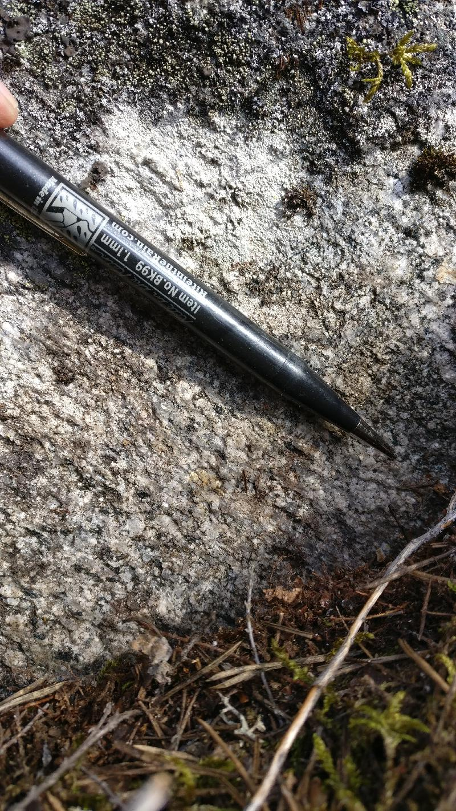

<!DOCTYPE html>
<head>    
    <meta http-equiv="content-type" content="text/html; charset=UTF-8" />
    
        <script>
            L_NO_TOUCH = false;
            L_DISABLE_3D = false;
        </script>
    
    <style>html, body {width: 100%;height: 100%;margin: 0;padding: 0;}</style>
    <style>#map {position:absolute;top:0;bottom:0;right:0;left:0;}</style>
    <script src="https://cdn.jsdelivr.net/npm/leaflet@1.6.0/dist/leaflet.js"></script>
    <script src="https://code.jquery.com/jquery-1.12.4.min.js"></script>
    <script src="https://maxcdn.bootstrapcdn.com/bootstrap/3.2.0/js/bootstrap.min.js"></script>
    <script src="https://cdnjs.cloudflare.com/ajax/libs/Leaflet.awesome-markers/2.0.2/leaflet.awesome-markers.js"></script>
    <link rel="stylesheet" href="https://cdn.jsdelivr.net/npm/leaflet@1.6.0/dist/leaflet.css"/>
    <link rel="stylesheet" href="https://maxcdn.bootstrapcdn.com/bootstrap/3.2.0/css/bootstrap.min.css"/>
    <link rel="stylesheet" href="https://maxcdn.bootstrapcdn.com/bootstrap/3.2.0/css/bootstrap-theme.min.css"/>
    <link rel="stylesheet" href="https://maxcdn.bootstrapcdn.com/font-awesome/4.6.3/css/font-awesome.min.css"/>
    <link rel="stylesheet" href="https://cdnjs.cloudflare.com/ajax/libs/Leaflet.awesome-markers/2.0.2/leaflet.awesome-markers.css"/>
    <link rel="stylesheet" href="https://cdn.jsdelivr.net/gh/python-visualization/folium/folium/templates/leaflet.awesome.rotate.min.css"/>
    
            <meta name="viewport" content="width=device-width,
                initial-scale=1.0, maximum-scale=1.0, user-scalable=no" />
            <style>
                #map_fc58834a95754e9baa71eb2572f79a29 {
                    position: relative;
                    width: 100.0%;
                    height: 100.0%;
                    left: 0.0%;
                    top: 0.0%;
                }
            </style>
        
    <script src="https://cdnjs.cloudflare.com/ajax/libs/leaflet-locatecontrol/0.66.2/L.Control.Locate.min.js"></script>
    <link rel="stylesheet" href="https://cdnjs.cloudflare.com/ajax/libs/leaflet-locatecontrol/0.66.2/L.Control.Locate.min.css"/>
    <link rel="stylesheet" href="styles.css"/>
</head>
<body>    
    
            <div class="folium-map" id="map_fc58834a95754e9baa71eb2572f79a29" ></div>
        
</body>
<script>    
    
            var map_fc58834a95754e9baa71eb2572f79a29 = L.map(
                "map_fc58834a95754e9baa71eb2572f79a29",
                {
                    center: [62.67294957308824, 22.283814556764707],
                    crs: L.CRS.EPSG3857,
                    zoom: 10,
                    zoomControl: true,
                    preferCanvas: false,
                }
            );

            

        
    
            var tile_layer_f00158cae1794002aba0b744c8ab10cc = L.tileLayer(
                "https://{s}.tile.openstreetmap.org/{z}/{x}/{y}.png",
                {"attribution": "Data by \u0026copy; \u003ca href=\"http://openstreetmap.org\"\u003eOpenStreetMap\u003c/a\u003e, under \u003ca href=\"http://www.openstreetmap.org/copyright\"\u003eODbL\u003c/a\u003e.", "detectRetina": false, "maxNativeZoom": 18, "maxZoom": 18, "minZoom": 0, "noWrap": false, "opacity": 1, "subdomains": "abc", "tms": false}
            ).addTo(map_fc58834a95754e9baa71eb2572f79a29);
        
    
            var marker_7bb5de2aa7db45568285e406b8066957 = L.marker(
                [62.6502261, 22.24487724],
                {}
            ).addTo(map_fc58834a95754e9baa71eb2572f79a29);
        
    
            var icon_a00df3aecbec4b27ae51e5eaadc884b3 = L.AwesomeMarkers.icon(
                {"extraClasses": "fa-rotate-118", "icon": "glyphicon-arrow-up", "iconColor": "white", "markerColor": "blue", "prefix": "glyphicon"}
            );
            marker_7bb5de2aa7db45568285e406b8066957.setIcon(icon_a00df3aecbec4b27ae51e5eaadc884b3);
        
    
        var popup_0e4a88b0924442bb9b08e1e9e35b85f0 = L.popup({"maxWidth": "100%"});

        
            var html_50952cd1c9334619b68513944f0c33c2 = $(`<div id="html_50952cd1c9334619b68513944f0c33c2" style="width: 100.0%; height: 100.0%;"><h3>NO-2021-120</h3> <h4>Planar Structures</h4> <table> <thead> <tr> <th align="right">DIP</th> <th align="right">DIRECTION_OF_DIP</th> <th align="left">STYPE_TEXT</th> <th align="left">FOL_TYPE_TEXT</th> </tr> </thead> <tbody> <tr> <td align="right">83</td> <td align="right">256</td> <td align="left">Fault</td> <td align="left"></td> </tr> <tr> <td align="right">83</td> <td align="right">180</td> <td align="left">Fault</td> <td align="left"></td> </tr> <tr> <td align="right">69</td> <td align="right">316</td> <td align="left">Fault</td> <td align="left"></td> </tr> <tr> <td align="right">31</td> <td align="right">104</td> <td align="left">Fault</td> <td align="left"></td> </tr> </tbody> </table> <h4>Linear Structures</h4> <table> <thead> <tr> <th align="right">DIRECTION</th> <th align="right">PLUNGE</th> <th align="left">STYPE_TEXT</th> </tr> </thead> <tbody> <tr> <td align="right">118</td> <td align="right">45</td> <td align="left">Lineation</td> </tr> </tbody> </table> <h4>Rock Observations</h4> <table> <thead> <tr> <th align="left">REMARKS</th> <th align="left">FIELD_NAME</th> </tr> </thead> <tbody> <tr> <td align="left"></td> <td align="left">Granodiorite</td> </tr> </tbody> </table> <h4>Observation remarks</h4> <p>Lineaatio granodioriitti, raoissa punaista täytettä mahdollisesti kalimaasälpää, melko intensiivinen rakoilu, rakoilu melkeinpä yhtä intensiivistä joka suunnassa</p> <h4>Images</h4> <p><a href="kapalo_imgs/NO-2021-120.k1@6142761110269243792.jpg"></a>Punainen rakotäyte, kalimaasälpä <a href="kapalo_imgs/NO-2021-120.k2@465599292542584477.jpg"></a>Rakoilua pystypinnalla (326/78), pinta kaatuu kameraa päin</p></div>`)[0];
            popup_0e4a88b0924442bb9b08e1e9e35b85f0.setContent(html_50952cd1c9334619b68513944f0c33c2);
        

        marker_7bb5de2aa7db45568285e406b8066957.bindPopup(popup_0e4a88b0924442bb9b08e1e9e35b85f0)
        ;

        
    
    
            marker_7bb5de2aa7db45568285e406b8066957.bindTooltip(
                `<div>
                     NO-2021-120
                 </div>`,
                {"sticky": true}
            );
        
    
            var marker_a113490aa662436faf3fa68e34abcbb2 = L.marker(
                [62.64958984, 22.24507106],
                {}
            ).addTo(map_fc58834a95754e9baa71eb2572f79a29);
        
    
            var icon_060bbbe004844df5a8c33a8703e016b9 = L.AwesomeMarkers.icon(
                {"extraClasses": "fa-rotate-0", "icon": "glyphicon-stop", "iconColor": "white", "markerColor": "lightgray", "prefix": "glyphicon"}
            );
            marker_a113490aa662436faf3fa68e34abcbb2.setIcon(icon_060bbbe004844df5a8c33a8703e016b9);
        
    
        var popup_878a987de68f4d89a0c65f81ec288574 = L.popup({"maxWidth": "100%"});

        
            var html_db22eef0e4194ed4a52b92dfa41b7be1 = $(`<div id="html_db22eef0e4194ed4a52b92dfa41b7be1" style="width: 100.0%; height: 100.0%;"><h3>NO-2021-121</h3> <h4>Planar Structures</h4> <table> <thead> <tr> <th align="right">DIP</th> <th align="right">DIRECTION_OF_DIP</th> <th align="left">STYPE_TEXT</th> <th align="left">FOL_TYPE_TEXT</th> </tr> </thead> <tbody> <tr> <td align="right">78</td> <td align="right">37</td> <td align="left">Foliation</td> <td align="left">Penetrative foliation</td> </tr> <tr> <td align="right">56</td> <td align="right">296</td> <td align="left">Fault</td> <td align="left"></td> </tr> <tr> <td align="right">75</td> <td align="right">351</td> <td align="left">Fault</td> <td align="left"></td> </tr> <tr> <td align="right">82</td> <td align="right">242</td> <td align="left">Fault</td> <td align="left"></td> </tr> <tr> <td align="right">29</td> <td align="right">76</td> <td align="left">Fault</td> <td align="left"></td> </tr> </tbody> </table> <h4></h4> <h4>Rock Observations</h4> <table> <thead> <tr> <th align="left">REMARKS</th> <th align="left">FIELD_NAME</th> </tr> </thead> <tbody> <tr> <td align="left"></td> <td align="left">Granodiorite</td> </tr> </tbody> </table> <h4>Observation remarks</h4> <p>Hydrotermistä fluidia raoissa kalimaasälpää (322/44), kvartsia ja epidoottia ja ehkä jopa karbonaattia (295/56), heikosti suuntautunut granodioriitti, päärakosuunta (296/56), paljon rakoilua, L-tektoniitti lineaatio (162/54) hyvin epävarma</p> <h4>Images</h4> <p><a href="kapalo_imgs/NO-2021-121.k1@8923370035630306331.jpg"></a>Epidoottia raossa (063/86) <a href="kapalo_imgs/NO-2021-121.k2@2536619394793919973.jpg"></a>Punaista rakotäytettä kalimaasälpää raossa (322/44) <a href="kapalo_imgs/NO-2021-121.k3@4834227976921686441.jpg">('Raossa tuskin ollut liikettä kun katsoo "klastia" (296/56), klasti pystyssä rakopinnasta', 'NO-2021-121.k3')</a> <a href="kapalo_imgs/NO-2021-121.k4@3798868176195117756.jpg">('Eemin piirros, poikkileikkaus, rakosuuntia', 'NO-2021-121.k4')</a></p></div>`)[0];
            popup_878a987de68f4d89a0c65f81ec288574.setContent(html_db22eef0e4194ed4a52b92dfa41b7be1);
        

        marker_a113490aa662436faf3fa68e34abcbb2.bindPopup(popup_878a987de68f4d89a0c65f81ec288574)
        ;

        
    
    
            marker_a113490aa662436faf3fa68e34abcbb2.bindTooltip(
                `<div>
                     NO-2021-121
                 </div>`,
                {"sticky": true}
            );
        
    
            var marker_a6fd009670d048979a4324ab456eb77f = L.marker(
                [62.6489966, 22.24552787],
                {}
            ).addTo(map_fc58834a95754e9baa71eb2572f79a29);
        
    
            var icon_98f5e1b69b784f04bd18647ea3a8a548 = L.AwesomeMarkers.icon(
                {"extraClasses": "fa-rotate-92", "icon": "glyphicon-arrow-up", "iconColor": "white", "markerColor": "blue", "prefix": "glyphicon"}
            );
            marker_a6fd009670d048979a4324ab456eb77f.setIcon(icon_98f5e1b69b784f04bd18647ea3a8a548);
        
    
        var popup_fd8c625d713d4e9085dbd99fd1e7dc5a = L.popup({"maxWidth": "100%"});

        
            var html_09d22bd19dc14a46a15592b70b56be60 = $(`<div id="html_09d22bd19dc14a46a15592b70b56be60" style="width: 100.0%; height: 100.0%;"><h3>NO-2021-122</h3> <h4>Planar Structures</h4> <table> <thead> <tr> <th align="right">DIP</th> <th align="right">DIRECTION_OF_DIP</th> <th align="left">STYPE_TEXT</th> <th align="left">FOL_TYPE_TEXT</th> </tr> </thead> <tbody> <tr> <td align="right">68</td> <td align="right">197</td> <td align="left">Foliation</td> <td align="left">Penetrative foliation</td> </tr> <tr> <td align="right">60</td> <td align="right">323</td> <td align="left">Fault</td> <td align="left"></td> </tr> <tr> <td align="right">84</td> <td align="right">201</td> <td align="left">Fault</td> <td align="left"></td> </tr> <tr> <td align="right">20</td> <td align="right">87</td> <td align="left">Fault</td> <td align="left"></td> </tr> </tbody> </table> <h4>Linear Structures</h4> <table> <thead> <tr> <th align="right">DIRECTION</th> <th align="right">PLUNGE</th> <th align="left">STYPE_TEXT</th> </tr> </thead> <tbody> <tr> <td align="right">92</td> <td align="right">61</td> <td align="left">Lineation</td> </tr> </tbody> </table> <h4>Rock Observations</h4> <table> <thead> <tr> <th align="left">REMARKS</th> <th align="left">FIELD_NAME</th> </tr> </thead> <tbody> <tr> <td align="left"></td> <td align="left">Granodiorite</td> </tr> </tbody> </table> <h4>Observation remarks</h4> <p>Vahva lineaatio heikko liuskeisuus granodioriitissa, päärakosuunta, hydrotermistä fluidia mahdollisesti kaikissa rakosuunnissaa, päärakosuunta (323/60)</p> <h4>Images</h4> <p><a href="kapalo_imgs/NO-2021-122.k1@5617358163811979863.jpg"></a>Vahva lineaatio (092/61) liuskeisuuspinnassa (197/68) <a href="kapalo_imgs/NO-2021-122.k2@5780095224077011552.jpg"></a>Nikolaksen piirros, rakojen topologiaa <a href="kapalo_imgs/NO-2021-122.k3@7591171526182596366.jpg">('Eemin piirros, poikkileikkaus E-W, raon hyppyjä lineaation suuntaan', 'NO-2021-122.k3')</a></p></div>`)[0];
            popup_fd8c625d713d4e9085dbd99fd1e7dc5a.setContent(html_09d22bd19dc14a46a15592b70b56be60);
        

        marker_a6fd009670d048979a4324ab456eb77f.bindPopup(popup_fd8c625d713d4e9085dbd99fd1e7dc5a)
        ;

        
    
    
            marker_a6fd009670d048979a4324ab456eb77f.bindTooltip(
                `<div>
                     NO-2021-122
                 </div>`,
                {"sticky": true}
            );
        
    
            var marker_7558049d90a948708e490b2300776ebe = L.marker(
                [62.64799984, 22.24524319],
                {}
            ).addTo(map_fc58834a95754e9baa71eb2572f79a29);
        
    
            var icon_af75f92b52974bf6ae56bece6b93bd7e = L.AwesomeMarkers.icon(
                {"extraClasses": "fa-rotate-82", "icon": "glyphicon-arrow-up", "iconColor": "white", "markerColor": "blue", "prefix": "glyphicon"}
            );
            marker_7558049d90a948708e490b2300776ebe.setIcon(icon_af75f92b52974bf6ae56bece6b93bd7e);
        
    
        var popup_5859b3be32b14058ab73ed2d3a6dc251 = L.popup({"maxWidth": "100%"});

        
            var html_9267e5fa064d4f68a9a5a78819555f26 = $(`<div id="html_9267e5fa064d4f68a9a5a78819555f26" style="width: 100.0%; height: 100.0%;"><h3>NO-2021-123</h3> <h4>Planar Structures</h4> <table> <thead> <tr> <th align="right">DIP</th> <th align="right">DIRECTION_OF_DIP</th> <th align="left">STYPE_TEXT</th> <th align="left">FOL_TYPE_TEXT</th> </tr> </thead> <tbody> <tr> <td align="right">64</td> <td align="right">184</td> <td align="left">Foliation</td> <td align="left">Penetrative foliation</td> </tr> <tr> <td align="right">22</td> <td align="right">107</td> <td align="left">Fault</td> <td align="left"></td> </tr> <tr> <td align="right">86</td> <td align="right">78</td> <td align="left">Fault</td> <td align="left"></td> </tr> <tr> <td align="right">81</td> <td align="right">181</td> <td align="left">Fault</td> <td align="left"></td> </tr> </tbody> </table> <h4>Linear Structures</h4> <table> <thead> <tr> <th align="right">DIRECTION</th> <th align="right">PLUNGE</th> <th align="left">STYPE_TEXT</th> </tr> </thead> <tbody> <tr> <td align="right">82</td> <td align="right">40</td> <td align="left">Lineation</td> </tr> </tbody> </table> <h4>Rock Observations</h4> <table> <thead> <tr> <th align="left">REMARKS</th> <th align="left">FIELD_NAME</th> </tr> </thead> <tbody> <tr> <td align="left"></td> <td align="left">Granodiorite</td> </tr> </tbody> </table> <h4>Observation remarks</h4> <p>Pienirakeisempi granodioriitti/dioriitti</p> <h4>Images</h4> <p><a href="kapalo_imgs/NO-2021-123.k1@8548264451686763326.jpg"></a>Koostumusvaihtelua lokaalisti, hienorakeinen liuskeinen dioriitti</p></div>`)[0];
            popup_5859b3be32b14058ab73ed2d3a6dc251.setContent(html_9267e5fa064d4f68a9a5a78819555f26);
        

        marker_7558049d90a948708e490b2300776ebe.bindPopup(popup_5859b3be32b14058ab73ed2d3a6dc251)
        ;

        
    
    
            marker_7558049d90a948708e490b2300776ebe.bindTooltip(
                `<div>
                     NO-2021-123
                 </div>`,
                {"sticky": true}
            );
        
    
            var marker_8638151c95f046679f4a0aa48ec9c5e7 = L.marker(
                [62.64572403, 22.26150361],
                {}
            ).addTo(map_fc58834a95754e9baa71eb2572f79a29);
        
    
            var icon_df4287b5b18348218c4667625c01740a = L.AwesomeMarkers.icon(
                {"extraClasses": "fa-rotate-134", "icon": "glyphicon-arrow-up", "iconColor": "white", "markerColor": "blue", "prefix": "glyphicon"}
            );
            marker_8638151c95f046679f4a0aa48ec9c5e7.setIcon(icon_df4287b5b18348218c4667625c01740a);
        
    
        var popup_ec3182eb23264c209131e29541a0268a = L.popup({"maxWidth": "100%"});

        
            var html_ad40ce7d764a4d0da2b9d00a592a8972 = $(`<div id="html_ad40ce7d764a4d0da2b9d00a592a8972" style="width: 100.0%; height: 100.0%;"><h3>NO-2021-124</h3> <h4>Planar Structures</h4> <table> <thead> <tr> <th align="right">DIP</th> <th align="right">DIRECTION_OF_DIP</th> <th align="left">STYPE_TEXT</th> <th align="left">FOL_TYPE_TEXT</th> </tr> </thead> <tbody> <tr> <td align="right">83</td> <td align="right">264</td> <td align="left">Fault</td> <td align="left"></td> </tr> <tr> <td align="right">86</td> <td align="right">187</td> <td align="left">Fault</td> <td align="left"></td> </tr> <tr> <td align="right">85</td> <td align="right">76</td> <td align="left">Fault</td> <td align="left"></td> </tr> </tbody> </table> <h4>Linear Structures</h4> <table> <thead> <tr> <th align="right">DIRECTION</th> <th align="right">PLUNGE</th> <th align="left">STYPE_TEXT</th> </tr> </thead> <tbody> <tr> <td align="right">134</td> <td align="right">58</td> <td align="left">Lineation</td> </tr> </tbody> </table> <h4>Rock Observations</h4> <table> <thead> <tr> <th align="left">REMARKS</th> <th align="left">FIELD_NAME</th> </tr> </thead> <tbody> <tr> <td align="left"></td> <td align="left">Granodiorite</td> </tr> </tbody> </table> <h4>Observation remarks</h4> <p>Kvartsijuonia (058/68; 015/80; 125/65), mahdollinen L-tektoniitti</p> <h4>Images</h4> <p><a href="kapalo_imgs/NO-2021-124.k1@3218770996976864257.jpg"></a>Hyppy kvartsijuonessa (015/80) <a href="kapalo_imgs/NO-2021-124.k2@6226118352050024138.jpg"></a>Lineaatio näkyy myös kvartsijuonessa <a href="kapalo_imgs/NO-2021-124.k3@4800862070566764280.jpg">('Liuskeisuus vai lineaatio', 'NO-2021-124.k3')</a></p></div>`)[0];
            popup_ec3182eb23264c209131e29541a0268a.setContent(html_ad40ce7d764a4d0da2b9d00a592a8972);
        

        marker_8638151c95f046679f4a0aa48ec9c5e7.bindPopup(popup_ec3182eb23264c209131e29541a0268a)
        ;

        
    
    
            marker_8638151c95f046679f4a0aa48ec9c5e7.bindTooltip(
                `<div>
                     NO-2021-124
                 </div>`,
                {"sticky": true}
            );
        
    
            var marker_9f7fbba8821b4d8c83cea1a4fa636533 = L.marker(
                [62.6444608, 22.26643641],
                {}
            ).addTo(map_fc58834a95754e9baa71eb2572f79a29);
        
    
            var icon_f627a77929e3442f8583bd2451f12c0a = L.AwesomeMarkers.icon(
                {"extraClasses": "fa-rotate-0", "icon": "glyphicon-stop", "iconColor": "white", "markerColor": "lightgray", "prefix": "glyphicon"}
            );
            marker_9f7fbba8821b4d8c83cea1a4fa636533.setIcon(icon_f627a77929e3442f8583bd2451f12c0a);
        
    
        var popup_a7d3a6ea7f4e4bd3992136e67c1302d0 = L.popup({"maxWidth": "100%"});

        
            var html_ce1e129f25f0461ba08e2ef9040852bf = $(`<div id="html_ce1e129f25f0461ba08e2ef9040852bf" style="width: 100.0%; height: 100.0%;"><h3>NO-2021-125</h3> <h4>Planar Structures</h4> <table> <thead> <tr> <th align="right">DIP</th> <th align="right">DIRECTION_OF_DIP</th> <th align="left">STYPE_TEXT</th> <th align="left">FOL_TYPE_TEXT</th> </tr> </thead> <tbody> <tr> <td align="right">88</td> <td align="right">322</td> <td align="left">Fault</td> <td align="left"></td> </tr> <tr> <td align="right">83</td> <td align="right">74</td> <td align="left">Fault</td> <td align="left"></td> </tr> </tbody> </table> <h4></h4> <h4>Rock Observations</h4> <table> <thead> <tr> <th align="left">REMARKS</th> <th align="left">FIELD_NAME</th> </tr> </thead> <tbody> <tr> <td align="left"></td> <td align="left">Granodiorite</td> </tr> </tbody> </table> <h4>Observation remarks</h4> <p>Vallitseva rakosuunta (322/88), hyvin heikosti suuntautunut granodioriitti tai ei ollenkaan, kvartsijuonia (074/83)</p> <h4>Images</h4></div>`)[0];
            popup_a7d3a6ea7f4e4bd3992136e67c1302d0.setContent(html_ce1e129f25f0461ba08e2ef9040852bf);
        

        marker_9f7fbba8821b4d8c83cea1a4fa636533.bindPopup(popup_a7d3a6ea7f4e4bd3992136e67c1302d0)
        ;

        
    
    
            marker_9f7fbba8821b4d8c83cea1a4fa636533.bindTooltip(
                `<div>
                     NO-2021-125
                 </div>`,
                {"sticky": true}
            );
        
    
            var marker_0872321087b94df4aaf39bc96eaf49c3 = L.marker(
                [62.64597139, 22.26551594],
                {}
            ).addTo(map_fc58834a95754e9baa71eb2572f79a29);
        
    
            var icon_d8c7fc80c2ea42c4bc097e7bdd915568 = L.AwesomeMarkers.icon(
                {"extraClasses": "fa-rotate-120", "icon": "glyphicon-arrow-up", "iconColor": "white", "markerColor": "blue", "prefix": "glyphicon"}
            );
            marker_0872321087b94df4aaf39bc96eaf49c3.setIcon(icon_d8c7fc80c2ea42c4bc097e7bdd915568);
        
    
        var popup_19058505092840738dab47cdef4d098d = L.popup({"maxWidth": "100%"});

        
            var html_e64b3c1ebae046858f3b400025f19f93 = $(`<div id="html_e64b3c1ebae046858f3b400025f19f93" style="width: 100.0%; height: 100.0%;"><h3>NO-2021-126</h3> <h4>Planar Structures</h4> <table> <thead> <tr> <th align="right">DIP</th> <th align="right">DIRECTION_OF_DIP</th> <th align="left">STYPE_TEXT</th> <th align="left">FOL_TYPE_TEXT</th> </tr> </thead> <tbody> <tr> <td align="right">84</td> <td align="right">156</td> <td align="left">Fault</td> <td align="left"></td> </tr> <tr> <td align="right">63</td> <td align="right">109</td> <td align="left">Fault</td> <td align="left"></td> </tr> </tbody> </table> <h4>Linear Structures</h4> <table> <thead> <tr> <th align="right">DIRECTION</th> <th align="right">PLUNGE</th> <th align="left">STYPE_TEXT</th> </tr> </thead> <tbody> <tr> <td align="right">120</td> <td align="right">37</td> <td align="left">Lineation</td> </tr> </tbody> </table> <h4>Rock Observations</h4> <table> <thead> <tr> <th align="left">REMARKS</th> <th align="left">FIELD_NAME</th> </tr> </thead> <tbody> <tr> <td align="left"></td> <td align="left">Granodiorite</td> </tr> </tbody> </table> <h4>Observation remarks</h4> <p>L-tektoniitti tai hyvin heikko liuskeisuus (131/45)</p> <h4>Images</h4> <p><a href="kapalo_imgs/NO-2021-126.k1@6982591858692456125.jpg"></a>Koostumusvaihtelua ja kvartsijuonia, kuvan taso (030/46)</p></div>`)[0];
            popup_19058505092840738dab47cdef4d098d.setContent(html_e64b3c1ebae046858f3b400025f19f93);
        

        marker_0872321087b94df4aaf39bc96eaf49c3.bindPopup(popup_19058505092840738dab47cdef4d098d)
        ;

        
    
    
            marker_0872321087b94df4aaf39bc96eaf49c3.bindTooltip(
                `<div>
                     NO-2021-126
                 </div>`,
                {"sticky": true}
            );
        
    
            var marker_e696a0a0fc8040caa0b60431c5639e12 = L.marker(
                [62.64682437, 22.26251022],
                {}
            ).addTo(map_fc58834a95754e9baa71eb2572f79a29);
        
    
            var icon_24e8d90a3bb44962b65f9070459fb117 = L.AwesomeMarkers.icon(
                {"extraClasses": "fa-rotate-110", "icon": "glyphicon-arrow-up", "iconColor": "white", "markerColor": "blue", "prefix": "glyphicon"}
            );
            marker_e696a0a0fc8040caa0b60431c5639e12.setIcon(icon_24e8d90a3bb44962b65f9070459fb117);
        
    
        var popup_b201ced1ea80441cba9704a84aa7a3b1 = L.popup({"maxWidth": "100%"});

        
            var html_ac92ea934c6e4a5dba76f86a6f9a3a94 = $(`<div id="html_ac92ea934c6e4a5dba76f86a6f9a3a94" style="width: 100.0%; height: 100.0%;"><h3>NO-2021-127</h3> <h4>Planar Structures</h4> <table> <thead> <tr> <th align="right">DIP</th> <th align="right">DIRECTION_OF_DIP</th> <th align="left">STYPE_TEXT</th> <th align="left">FOL_TYPE_TEXT</th> </tr> </thead> <tbody> <tr> <td align="right">60</td> <td align="right">86</td> <td align="left">Fault</td> <td align="left"></td> </tr> <tr> <td align="right">78</td> <td align="right">156</td> <td align="left">Fault</td> <td align="left"></td> </tr> </tbody> </table> <h4>Linear Structures</h4> <table> <thead> <tr> <th align="right">DIRECTION</th> <th align="right">PLUNGE</th> <th align="left">STYPE_TEXT</th> </tr> </thead> <tbody> <tr> <td align="right">110</td> <td align="right">51</td> <td align="left">Lineation</td> </tr> </tbody> </table> <h4>Rock Observations</h4> <table> <thead> <tr> <th align="left">REMARKS</th> <th align="left">FIELD_NAME</th> </tr> </thead> <tbody> <tr> <td align="left"></td> <td align="left">Granodiorite</td> </tr> </tbody> </table> <h4>Observation remarks</h4> <p>Hyvin vahva lineaatio, L-tektoniitti, hyvin heikko tasomainen suuntaus (192/76)</p> <h4>Images</h4> <p><a href="kapalo_imgs/NO-2021-127.k1@4608074849448132282.jpg"></a>Kuvan pinta (087/62), kaatuu kuvaajaa päin</p></div>`)[0];
            popup_b201ced1ea80441cba9704a84aa7a3b1.setContent(html_ac92ea934c6e4a5dba76f86a6f9a3a94);
        

        marker_e696a0a0fc8040caa0b60431c5639e12.bindPopup(popup_b201ced1ea80441cba9704a84aa7a3b1)
        ;

        
    
    
            marker_e696a0a0fc8040caa0b60431c5639e12.bindTooltip(
                `<div>
                     NO-2021-127
                 </div>`,
                {"sticky": true}
            );
        
    
            var marker_591c8aba7c6040ac89200457247e6c4d = L.marker(
                [62.64860436, 22.25253781],
                {}
            ).addTo(map_fc58834a95754e9baa71eb2572f79a29);
        
    
            var icon_f88a557cfa754fd2984f9aa74918b976 = L.AwesomeMarkers.icon(
                {"extraClasses": "fa-rotate-90", "icon": "glyphicon-arrow-up", "iconColor": "white", "markerColor": "blue", "prefix": "glyphicon"}
            );
            marker_591c8aba7c6040ac89200457247e6c4d.setIcon(icon_f88a557cfa754fd2984f9aa74918b976);
        
    
        var popup_c1691a22e9294cc8bd564fb6a42f1907 = L.popup({"maxWidth": "100%"});

        
            var html_660d427b6bdd43a688a0929510792d39 = $(`<div id="html_660d427b6bdd43a688a0929510792d39" style="width: 100.0%; height: 100.0%;"><h3>NO-2021-128</h3> <h4>Planar Structures</h4> <table> <thead> <tr> <th align="right">DIP</th> <th align="right">DIRECTION_OF_DIP</th> <th align="left">STYPE_TEXT</th> <th align="left">FOL_TYPE_TEXT</th> </tr> </thead> <tbody> <tr> <td align="right">68</td> <td align="right">178</td> <td align="left">Foliation</td> <td align="left">Penetrative foliation</td> </tr> <tr> <td align="right">68</td> <td align="right">178</td> <td align="left">Fault</td> <td align="left"></td> </tr> <tr> <td align="right">65</td> <td align="right">90</td> <td align="left">Fault</td> <td align="left"></td> </tr> </tbody> </table> <h4>Linear Structures</h4> <table> <thead> <tr> <th align="right">DIRECTION</th> <th align="right">PLUNGE</th> <th align="left">STYPE_TEXT</th> </tr> </thead> <tbody> <tr> <td align="right">90</td> <td align="right">50</td> <td align="left">Lineation</td> </tr> </tbody> </table> <h4>Rock Observations</h4> <table> <thead> <tr> <th align="left">REMARKS</th> <th align="left">FIELD_NAME</th> </tr> </thead> <tbody> <tr> <td align="left"></td> <td align="left">Granodiorite</td> </tr> </tbody> </table> <h4>Observation remarks</h4> <p>Suuntautunut granodioriitti</p> <h4>Images</h4></div>`)[0];
            popup_c1691a22e9294cc8bd564fb6a42f1907.setContent(html_660d427b6bdd43a688a0929510792d39);
        

        marker_591c8aba7c6040ac89200457247e6c4d.bindPopup(popup_c1691a22e9294cc8bd564fb6a42f1907)
        ;

        
    
    
            marker_591c8aba7c6040ac89200457247e6c4d.bindTooltip(
                `<div>
                     NO-2021-128
                 </div>`,
                {"sticky": true}
            );
        
    
            var marker_e9183a1bc96945ef9b4b53e918e3e5a4 = L.marker(
                [62.64694525, 22.2521295],
                {}
            ).addTo(map_fc58834a95754e9baa71eb2572f79a29);
        
    
            var icon_16f8f3647c6f423f945a389d251cddcb = L.AwesomeMarkers.icon(
                {"extraClasses": "fa-rotate-110", "icon": "glyphicon-arrow-up", "iconColor": "white", "markerColor": "blue", "prefix": "glyphicon"}
            );
            marker_e9183a1bc96945ef9b4b53e918e3e5a4.setIcon(icon_16f8f3647c6f423f945a389d251cddcb);
        
    
        var popup_fa8b6510f9ca415292a381a59a7dbe98 = L.popup({"maxWidth": "100%"});

        
            var html_e5826c5afd6f4def9fe643c1bf1f8076 = $(`<div id="html_e5826c5afd6f4def9fe643c1bf1f8076" style="width: 100.0%; height: 100.0%;"><h3>NO-2021-129</h3> <h4>Planar Structures</h4> <table> <thead> <tr> <th align="right">DIP</th> <th align="right">DIRECTION_OF_DIP</th> <th align="left">STYPE_TEXT</th> <th align="left">FOL_TYPE_TEXT</th> </tr> </thead> <tbody> <tr> <td align="right">45</td> <td align="right">110</td> <td align="left">Foliation</td> <td align="left">Penetrative foliation</td> </tr> <tr> <td align="right">77</td> <td align="right">286</td> <td align="left">Fault</td> <td align="left"></td> </tr> <tr> <td align="right">45</td> <td align="right">105</td> <td align="left">Fault</td> <td align="left"></td> </tr> </tbody> </table> <h4>Linear Structures</h4> <table> <thead> <tr> <th align="right">DIRECTION</th> <th align="right">PLUNGE</th> <th align="left">STYPE_TEXT</th> </tr> </thead> <tbody> <tr> <td align="right">110</td> <td align="right">45</td> <td align="left">Lineation</td> </tr> </tbody> </table> <h4>Rock Observations</h4> <table> <thead> <tr> <th align="left">REMARKS</th> <th align="left">FIELD_NAME</th> </tr> </thead> <tbody> <tr> <td align="left"></td> <td align="left">Granodiorite</td> </tr> </tbody> </table> <h4>Observation remarks</h4> <p>Suuntautunut granodioriitti, liuskeisuus sekava alueellisesti mutta paikoittain selkeä, kvartsijuonia liuskeisuuden suunnassa (105/45), epidoottikvartsitäyte (286/77)</p> <h4>Images</h4></div>`)[0];
            popup_fa8b6510f9ca415292a381a59a7dbe98.setContent(html_e5826c5afd6f4def9fe643c1bf1f8076);
        

        marker_e9183a1bc96945ef9b4b53e918e3e5a4.bindPopup(popup_fa8b6510f9ca415292a381a59a7dbe98)
        ;

        
    
    
            marker_e9183a1bc96945ef9b4b53e918e3e5a4.bindTooltip(
                `<div>
                     NO-2021-129
                 </div>`,
                {"sticky": true}
            );
        
    
            var marker_9504b5a60734484984ef709c74c2eb84 = L.marker(
                [62.64568886, 22.25283538],
                {}
            ).addTo(map_fc58834a95754e9baa71eb2572f79a29);
        
    
            var icon_9c8b94afefd5457b877e8fdc952449d9 = L.AwesomeMarkers.icon(
                {"extraClasses": "fa-rotate-125", "icon": "glyphicon-arrow-up", "iconColor": "white", "markerColor": "blue", "prefix": "glyphicon"}
            );
            marker_9504b5a60734484984ef709c74c2eb84.setIcon(icon_9c8b94afefd5457b877e8fdc952449d9);
        
    
        var popup_556b06a7d0f141f7b08d50aaba330adf = L.popup({"maxWidth": "100%"});

        
            var html_5daa770480154b2a8bb3d848941a5401 = $(`<div id="html_5daa770480154b2a8bb3d848941a5401" style="width: 100.0%; height: 100.0%;"><h3>NO-2021-130</h3> <h4>Planar Structures</h4> <table> <thead> <tr> <th align="right">DIP</th> <th align="right">DIRECTION_OF_DIP</th> <th align="left">STYPE_TEXT</th> <th align="left">FOL_TYPE_TEXT</th> </tr> </thead> <tbody> <tr> <td align="right">45</td> <td align="right">125</td> <td align="left">Foliation</td> <td align="left">Penetrative foliation</td> </tr> </tbody> </table> <h4>Linear Structures</h4> <table> <thead> <tr> <th align="right">DIRECTION</th> <th align="right">PLUNGE</th> <th align="left">STYPE_TEXT</th> </tr> </thead> <tbody> <tr> <td align="right">125</td> <td align="right">45</td> <td align="left">Lineation</td> </tr> </tbody> </table> <h4>Rock Observations</h4> <table> <thead> <tr> <th align="left">REMARKS</th> <th align="left">FIELD_NAME</th> </tr> </thead> <tbody> <tr> <td align="left"></td> <td align="left">Granodiorite</td> </tr> </tbody> </table> <h4>Observation remarks</h4> <p>Suuntautunut granodioriitti, </p> <h4>Images</h4></div>`)[0];
            popup_556b06a7d0f141f7b08d50aaba330adf.setContent(html_5daa770480154b2a8bb3d848941a5401);
        

        marker_9504b5a60734484984ef709c74c2eb84.bindPopup(popup_556b06a7d0f141f7b08d50aaba330adf)
        ;

        
    
    
            marker_9504b5a60734484984ef709c74c2eb84.bindTooltip(
                `<div>
                     NO-2021-130
                 </div>`,
                {"sticky": true}
            );
        
    
            var marker_e66346ccd6ad4f678cc936a396f22515 = L.marker(
                [62.64347729, 22.24939719],
                {}
            ).addTo(map_fc58834a95754e9baa71eb2572f79a29);
        
    
            var icon_325cb170ba5a48ba83facc31051750ad = L.AwesomeMarkers.icon(
                {"extraClasses": "fa-rotate-103", "icon": "glyphicon-arrow-up", "iconColor": "white", "markerColor": "blue", "prefix": "glyphicon"}
            );
            marker_e66346ccd6ad4f678cc936a396f22515.setIcon(icon_325cb170ba5a48ba83facc31051750ad);
        
    
        var popup_229d78c6a4a1489bb678d180e236cf6b = L.popup({"maxWidth": "100%"});

        
            var html_0d633c52bfb84cb1b509f6914475070a = $(`<div id="html_0d633c52bfb84cb1b509f6914475070a" style="width: 100.0%; height: 100.0%;"><h3>NO-2021-131</h3> <h4>Planar Structures</h4> <table> <thead> <tr> <th align="right">DIP</th> <th align="right">DIRECTION_OF_DIP</th> <th align="left">STYPE_TEXT</th> <th align="left">FOL_TYPE_TEXT</th> </tr> </thead> <tbody> <tr> <td align="right">64</td> <td align="right">88</td> <td align="left">Foliation</td> <td align="left">Penetrative foliation</td> </tr> <tr> <td align="right">64</td> <td align="right">88</td> <td align="left">Fault</td> <td align="left"></td> </tr> </tbody> </table> <h4>Linear Structures</h4> <table> <thead> <tr> <th align="right">DIRECTION</th> <th align="right">PLUNGE</th> <th align="left">STYPE_TEXT</th> </tr> </thead> <tbody> <tr> <td align="right">103</td> <td align="right">41</td> <td align="left">Lineation</td> </tr> </tbody> </table> <h4>Rock Observations</h4> <table> <thead> <tr> <th align="left">REMARKS</th> <th align="left">FIELD_NAME</th> </tr> </thead> <tbody> <tr> <td align="left"></td> <td align="left">Granodiorite</td> </tr> </tbody> </table> <h4>Observation remarks</h4> <p>Vahva lineaatio heikko liuskeisuus tai ei ollenkaan (088/64), vahva rakosuunta (088/64), mahdollinen L-tektoniitti</p> <h4>Images</h4> <p><a href="kapalo_imgs/NO-2021-131.k1@1367890378289948652.jpg"></a>Lineaatio mahdollisessa liuskeisuuspinnassa</p></div>`)[0];
            popup_229d78c6a4a1489bb678d180e236cf6b.setContent(html_0d633c52bfb84cb1b509f6914475070a);
        

        marker_e66346ccd6ad4f678cc936a396f22515.bindPopup(popup_229d78c6a4a1489bb678d180e236cf6b)
        ;

        
    
    
            marker_e66346ccd6ad4f678cc936a396f22515.bindTooltip(
                `<div>
                     NO-2021-131
                 </div>`,
                {"sticky": true}
            );
        
    
            var marker_77171560686c4c2ca4941cb166d1b49a = L.marker(
                [62.64517689, 22.24748077],
                {}
            ).addTo(map_fc58834a95754e9baa71eb2572f79a29);
        
    
            var icon_e6fee01efed240b7b6b74a525232d556 = L.AwesomeMarkers.icon(
                {"extraClasses": "fa-rotate-106", "icon": "glyphicon-arrow-up", "iconColor": "white", "markerColor": "blue", "prefix": "glyphicon"}
            );
            marker_77171560686c4c2ca4941cb166d1b49a.setIcon(icon_e6fee01efed240b7b6b74a525232d556);
        
    
        var popup_c40cdab46e7a46bfb15a2d9bb29e97c3 = L.popup({"maxWidth": "100%"});

        
            var html_78e1821112a04b5db0fcd12d98fe2108 = $(`<div id="html_78e1821112a04b5db0fcd12d98fe2108" style="width: 100.0%; height: 100.0%;"><h3>NO-2021-132</h3> <h4>Planar Structures</h4> <table> <thead> <tr> <th align="right">DIP</th> <th align="right">DIRECTION_OF_DIP</th> <th align="left">STYPE_TEXT</th> <th align="left">FOL_TYPE_TEXT</th> </tr> </thead> <tbody> <tr> <td align="right">60</td> <td align="right">100</td> <td align="left">Foliation</td> <td align="left">Penetrative foliation</td> </tr> <tr> <td align="right">18</td> <td align="right">273</td> <td align="left">Fault</td> <td align="left"></td> </tr> <tr> <td align="right">60</td> <td align="right">100</td> <td align="left">Fault</td> <td align="left"></td> </tr> <tr> <td align="right">78</td> <td align="right">16</td> <td align="left">Fault</td> <td align="left"></td> </tr> </tbody> </table> <h4>Linear Structures</h4> <table> <thead> <tr> <th align="right">DIRECTION</th> <th align="right">PLUNGE</th> <th align="left">STYPE_TEXT</th> </tr> </thead> <tbody> <tr> <td align="right">106</td> <td align="right">52</td> <td align="left">Lineation</td> </tr> </tbody> </table> <h4>Rock Observations</h4> <table> <thead> <tr> <th align="left">REMARKS</th> <th align="left">FIELD_NAME</th> </tr> </thead> <tbody> <tr> <td align="left"></td> <td align="left">Granodiorite</td> </tr> </tbody> </table> <h4>Observation remarks</h4> <p>Kalimaasälpäinen juoni (256/12), vahvin rakosuunta (273/18)</p> <h4>Images</h4> <p><a href="kapalo_imgs/NO-2021-132.k1@340361724024049099.jpg"></a>Eemin piirros, kallion isoja rakosuuntia</p></div>`)[0];
            popup_c40cdab46e7a46bfb15a2d9bb29e97c3.setContent(html_78e1821112a04b5db0fcd12d98fe2108);
        

        marker_77171560686c4c2ca4941cb166d1b49a.bindPopup(popup_c40cdab46e7a46bfb15a2d9bb29e97c3)
        ;

        
    
    
            marker_77171560686c4c2ca4941cb166d1b49a.bindTooltip(
                `<div>
                     NO-2021-132
                 </div>`,
                {"sticky": true}
            );
        
    
            var marker_c4e21fc8af194d0ba53b9bce8f624073 = L.marker(
                [62.64268222, 22.24797647],
                {}
            ).addTo(map_fc58834a95754e9baa71eb2572f79a29);
        
    
            var icon_b3a3141234484fedabf0f8016623835d = L.AwesomeMarkers.icon(
                {"extraClasses": "fa-rotate-112", "icon": "glyphicon-arrow-up", "iconColor": "white", "markerColor": "blue", "prefix": "glyphicon"}
            );
            marker_c4e21fc8af194d0ba53b9bce8f624073.setIcon(icon_b3a3141234484fedabf0f8016623835d);
        
    
        var popup_f77cd725f9534574be29b923927f3530 = L.popup({"maxWidth": "100%"});

        
            var html_d3faf394ed724ab3b76898784c2a7b52 = $(`<div id="html_d3faf394ed724ab3b76898784c2a7b52" style="width: 100.0%; height: 100.0%;"><h3>NO-2021-133</h3> <h4>Planar Structures</h4> <table> <thead> <tr> <th align="right">DIP</th> <th align="right">DIRECTION_OF_DIP</th> <th align="left">STYPE_TEXT</th> <th align="left">FOL_TYPE_TEXT</th> </tr> </thead> <tbody> <tr> <td align="right">79</td> <td align="right">25</td> <td align="left">Fault</td> <td align="left"></td> </tr> </tbody> </table> <h4>Linear Structures</h4> <table> <thead> <tr> <th align="right">DIRECTION</th> <th align="right">PLUNGE</th> <th align="left">STYPE_TEXT</th> </tr> </thead> <tbody> <tr> <td align="right">112</td> <td align="right">54</td> <td align="left">Lineation</td> </tr> </tbody> </table> <h4>Rock Observations</h4> <table> <thead> <tr> <th align="left">REMARKS</th> <th align="left">FIELD_NAME</th> </tr> </thead> <tbody> <tr> <td align="left"></td> <td align="left">Granodiorite</td> </tr> </tbody> </table> <h4>Observation remarks</h4> <p>Hyvin epävarma (112/54) liuskeisuus, mahdollinen L-tektoniitti</p> <h4>Images</h4></div>`)[0];
            popup_f77cd725f9534574be29b923927f3530.setContent(html_d3faf394ed724ab3b76898784c2a7b52);
        

        marker_c4e21fc8af194d0ba53b9bce8f624073.bindPopup(popup_f77cd725f9534574be29b923927f3530)
        ;

        
    
    
            marker_c4e21fc8af194d0ba53b9bce8f624073.bindTooltip(
                `<div>
                     NO-2021-133
                 </div>`,
                {"sticky": true}
            );
        
    
            var marker_7f0fd69cde514deab1a6c39788d39487 = L.marker(
                [62.64157342, 22.24545263],
                {}
            ).addTo(map_fc58834a95754e9baa71eb2572f79a29);
        
    
            var icon_71f8cb921f6c4859bf15190e1daf474a = L.AwesomeMarkers.icon(
                {"extraClasses": "fa-rotate-80", "icon": "glyphicon-arrow-up", "iconColor": "white", "markerColor": "blue", "prefix": "glyphicon"}
            );
            marker_7f0fd69cde514deab1a6c39788d39487.setIcon(icon_71f8cb921f6c4859bf15190e1daf474a);
        
    
        var popup_36c33a822fc9463987f63aae9f2d9c52 = L.popup({"maxWidth": "100%"});

        
            var html_663d2cde2e284566b7b8c1dda42e3e27 = $(`<div id="html_663d2cde2e284566b7b8c1dda42e3e27" style="width: 100.0%; height: 100.0%;"><h3>NO-2021-134</h3> <h4>Planar Structures</h4> <table> <thead> <tr> <th align="right">DIP</th> <th align="right">DIRECTION_OF_DIP</th> <th align="left">STYPE_TEXT</th> <th align="left">FOL_TYPE_TEXT</th> </tr> </thead> <tbody> <tr> <td align="right">40</td> <td align="right">80</td> <td align="left">Fault</td> <td align="left"></td> </tr> <tr> <td align="right">85</td> <td align="right">152</td> <td align="left">Fault</td> <td align="left"></td> </tr> <tr> <td align="right">40</td> <td align="right">80</td> <td align="left">Foliation</td> <td align="left">Penetrative foliation</td> </tr> </tbody> </table> <h4>Linear Structures</h4> <table> <thead> <tr> <th align="right">DIRECTION</th> <th align="right">PLUNGE</th> <th align="left">STYPE_TEXT</th> </tr> </thead> <tbody> <tr> <td align="right">80</td> <td align="right">40</td> <td align="left">Lineation</td> </tr> </tbody> </table> <h4>Rock Observations</h4> <table> <thead> <tr> <th align="left">REMARKS</th> <th align="left">FIELD_NAME</th> </tr> </thead> <tbody> <tr> <td align="left"></td> <td align="left">Granodiorite</td> </tr> </tbody> </table> <h4>Observation remarks</h4> <p>Heikko liuskeisuus (080/40) ja vahva lineaatio</p> <h4>Images</h4> <p><a href="kapalo_imgs/NO-2021-134.k1@4790985722272451011.jpg"></a>Vahva lineaatio (080/40) pinnassa (080/40), kaatuu poispäin kuvaajasta</p></div>`)[0];
            popup_36c33a822fc9463987f63aae9f2d9c52.setContent(html_663d2cde2e284566b7b8c1dda42e3e27);
        

        marker_7f0fd69cde514deab1a6c39788d39487.bindPopup(popup_36c33a822fc9463987f63aae9f2d9c52)
        ;

        
    
    
            marker_7f0fd69cde514deab1a6c39788d39487.bindTooltip(
                `<div>
                     NO-2021-134
                 </div>`,
                {"sticky": true}
            );
        
    
            var marker_b5a269d77cf34ffbb60ad1833ebbfa19 = L.marker(
                [62.64130402, 22.24440314],
                {}
            ).addTo(map_fc58834a95754e9baa71eb2572f79a29);
        
    
            var icon_b9ac7dbab66d4ac1a901aa058f1188c2 = L.AwesomeMarkers.icon(
                {"extraClasses": "fa-rotate-145", "icon": "glyphicon-arrow-up", "iconColor": "white", "markerColor": "blue", "prefix": "glyphicon"}
            );
            marker_b5a269d77cf34ffbb60ad1833ebbfa19.setIcon(icon_b9ac7dbab66d4ac1a901aa058f1188c2);
        
    
        var popup_b4f980b752594a69b64f8fb134849685 = L.popup({"maxWidth": "100%"});

        
            var html_bffc9a6b55dd441eacbe4d80f13dacba = $(`<div id="html_bffc9a6b55dd441eacbe4d80f13dacba" style="width: 100.0%; height: 100.0%;"><h3>NO-2021-135</h3> <h4>Planar Structures</h4> <table> <thead> <tr> <th align="right">DIP</th> <th align="right">DIRECTION_OF_DIP</th> <th align="left">STYPE_TEXT</th> <th align="left">FOL_TYPE_TEXT</th> </tr> </thead> <tbody> <tr> <td align="right">46</td> <td align="right">109</td> <td align="left">Fault</td> <td align="left"></td> </tr> </tbody> </table> <h4>Linear Structures</h4> <table> <thead> <tr> <th align="right">DIRECTION</th> <th align="right">PLUNGE</th> <th align="left">STYPE_TEXT</th> </tr> </thead> <tbody> <tr> <td align="right">145</td> <td align="right">65</td> <td align="left">Lineation</td> </tr> </tbody> </table> <h4>Rock Observations</h4> <table> <thead> <tr> <th align="left">REMARKS</th> <th align="left">FIELD_NAME</th> </tr> </thead> <tbody> <tr> <td align="left"></td> <td align="left">Granodiorite</td> </tr> </tbody> </table> <h4>Observation remarks</h4> <h4>Images</h4></div>`)[0];
            popup_b4f980b752594a69b64f8fb134849685.setContent(html_bffc9a6b55dd441eacbe4d80f13dacba);
        

        marker_b5a269d77cf34ffbb60ad1833ebbfa19.bindPopup(popup_b4f980b752594a69b64f8fb134849685)
        ;

        
    
    
            marker_b5a269d77cf34ffbb60ad1833ebbfa19.bindTooltip(
                `<div>
                     NO-2021-135
                 </div>`,
                {"sticky": true}
            );
        
    
            var marker_30d21b43d59f486381c057f051586821 = L.marker(
                [62.6399267, 22.25004807],
                {}
            ).addTo(map_fc58834a95754e9baa71eb2572f79a29);
        
    
            var icon_9e65ac875f254288b1be5d25241f5222 = L.AwesomeMarkers.icon(
                {"extraClasses": "fa-rotate-115", "icon": "glyphicon-arrow-up", "iconColor": "white", "markerColor": "blue", "prefix": "glyphicon"}
            );
            marker_30d21b43d59f486381c057f051586821.setIcon(icon_9e65ac875f254288b1be5d25241f5222);
        
    
        var popup_bb666952812f47f6928d37dd7f731538 = L.popup({"maxWidth": "100%"});

        
            var html_d369bbcd61bc424c9f934a1f42c9db5a = $(`<div id="html_d369bbcd61bc424c9f934a1f42c9db5a" style="width: 100.0%; height: 100.0%;"><h3>NO-2021-136</h3> <h4>Planar Structures</h4> <table> <thead> <tr> <th align="right">DIP</th> <th align="right">DIRECTION_OF_DIP</th> <th align="left">STYPE_TEXT</th> <th align="left">FOL_TYPE_TEXT</th> </tr> </thead> <tbody> <tr> <td align="right">53</td> <td align="right">104</td> <td align="left">Fault</td> <td align="left"></td> </tr> <tr> <td align="right">85</td> <td align="right">8</td> <td align="left">Fault</td> <td align="left"></td> </tr> <tr> <td align="right">53</td> <td align="right">104</td> <td align="left">Foliation</td> <td align="left">Penetrative foliation</td> </tr> </tbody> </table> <h4>Linear Structures</h4> <table> <thead> <tr> <th align="right">DIRECTION</th> <th align="right">PLUNGE</th> <th align="left">STYPE_TEXT</th> </tr> </thead> <tbody> <tr> <td align="right">115</td> <td align="right">69</td> <td align="left">Lineation</td> </tr> </tbody> </table> <h4>Rock Observations</h4> <table> <thead> <tr> <th align="left">REMARKS</th> <th align="left">FIELD_NAME</th> </tr> </thead> <tbody> <tr> <td align="left"></td> <td align="left">Granodiorite</td> </tr> </tbody> </table> <h4>Observation remarks</h4> <p>Vahva lineeatio heikko liuskeisuus, </p> <h4>Images</h4> <p><a href="kapalo_imgs/NO-2021-136.k1@2902294168695830876.jpg"></a>Lineaatio</p></div>`)[0];
            popup_bb666952812f47f6928d37dd7f731538.setContent(html_d369bbcd61bc424c9f934a1f42c9db5a);
        

        marker_30d21b43d59f486381c057f051586821.bindPopup(popup_bb666952812f47f6928d37dd7f731538)
        ;

        
    
    
            marker_30d21b43d59f486381c057f051586821.bindTooltip(
                `<div>
                     NO-2021-136
                 </div>`,
                {"sticky": true}
            );
        
    
            var marker_dd4cae3b262e4ed0af97f80534a86817 = L.marker(
                [62.67427888, 22.28448959],
                {}
            ).addTo(map_fc58834a95754e9baa71eb2572f79a29);
        
    
            var icon_9d6f347e5c944c81820206ec5d6f91f7 = L.AwesomeMarkers.icon(
                {"extraClasses": "fa-rotate-0", "icon": "glyphicon-stop", "iconColor": "white", "markerColor": "lightgray", "prefix": "glyphicon"}
            );
            marker_dd4cae3b262e4ed0af97f80534a86817.setIcon(icon_9d6f347e5c944c81820206ec5d6f91f7);
        
    
        var popup_47422202df064b248c9244a322466fa6 = L.popup({"maxWidth": "100%"});

        
            var html_82cb84fab6ef45708f23872e9bbd3778 = $(`<div id="html_82cb84fab6ef45708f23872e9bbd3778" style="width: 100.0%; height: 100.0%;"><h3>NO-2021-141</h3> <h4>Planar Structures</h4> <table> <thead> <tr> <th align="right">DIP</th> <th align="right">DIRECTION_OF_DIP</th> <th align="left">STYPE_TEXT</th> <th align="left">FOL_TYPE_TEXT</th> </tr> </thead> <tbody> <tr> <td align="right">77</td> <td align="right">133</td> <td align="left">Foliation</td> <td align="left">Penetrative foliation</td> </tr> <tr> <td align="right">77</td> <td align="right">-133</td> <td align="left">Fault</td> <td align="left"></td> </tr> <tr> <td align="right">76</td> <td align="right">50</td> <td align="left">Fault</td> <td align="left"></td> </tr> </tbody> </table> <h4></h4> <h4>Rock Observations</h4> <table> <thead> <tr> <th align="left">REMARKS</th> <th align="left">FIELD_NAME</th> </tr> </thead> <tbody> <tr> <td align="left"></td> <td align="left">Granodiorite</td> </tr> </tbody> </table> <h4>Observation remarks</h4> <p>Granodioriitti jossa pegmatiittia, pegmatiitti aiheuttanut koostumusvaihtelua/osittaissulamista, kaksi eriävää lineaatiota joka tapauksessa heikko (198/25; 041/20)</p> <h4>Images</h4> <p><a href="kapalo_imgs/NO-2021-141.k1@2230847990788329966.jpg"></a>Pegmatiittia jonka ympärillä koostumusvaihtelua</p></div>`)[0];
            popup_47422202df064b248c9244a322466fa6.setContent(html_82cb84fab6ef45708f23872e9bbd3778);
        

        marker_dd4cae3b262e4ed0af97f80534a86817.bindPopup(popup_47422202df064b248c9244a322466fa6)
        ;

        
    
    
            marker_dd4cae3b262e4ed0af97f80534a86817.bindTooltip(
                `<div>
                     NO-2021-141
                 </div>`,
                {"sticky": true}
            );
        
    
            var marker_1439f78218c8416580072cca4dfbd869 = L.marker(
                [62.67407253, 22.2877492],
                {}
            ).addTo(map_fc58834a95754e9baa71eb2572f79a29);
        
    
            var icon_352b3cc907c24b15b42856501123b259 = L.AwesomeMarkers.icon(
                {"extraClasses": "fa-rotate-207", "icon": "glyphicon-arrow-up", "iconColor": "white", "markerColor": "blue", "prefix": "glyphicon"}
            );
            marker_1439f78218c8416580072cca4dfbd869.setIcon(icon_352b3cc907c24b15b42856501123b259);
        
    
        var popup_6e04a8d9f06f42fca6dba61c54ad7610 = L.popup({"maxWidth": "100%"});

        
            var html_44ac6de0c0534b0eab66b1219bf74157 = $(`<div id="html_44ac6de0c0534b0eab66b1219bf74157" style="width: 100.0%; height: 100.0%;"><h3>NO-2021-142</h3> <h4>Planar Structures</h4> <table> <thead> <tr> <th align="right">DIP</th> <th align="right">DIRECTION_OF_DIP</th> <th align="left">STYPE_TEXT</th> <th align="left">FOL_TYPE_TEXT</th> </tr> </thead> <tbody> <tr> <td align="right">83</td> <td align="right">260</td> <td align="left">Foliation</td> <td align="left">Penetrative foliation</td> </tr> <tr> <td align="right">83</td> <td align="right">260</td> <td align="left">Fault</td> <td align="left"></td> </tr> <tr> <td align="right">27</td> <td align="right">126</td> <td align="left">Fault</td> <td align="left"></td> </tr> <tr> <td align="right">84</td> <td align="right">8</td> <td align="left">Fault</td> <td align="left"></td> </tr> </tbody> </table> <h4>Linear Structures</h4> <table> <thead> <tr> <th align="right">DIRECTION</th> <th align="right">PLUNGE</th> <th align="left">STYPE_TEXT</th> </tr> </thead> <tbody> <tr> <td align="right">207</td> <td align="right">21</td> <td align="left">Lineation</td> </tr> </tbody> </table> <h4>Rock Observations</h4> <table> <thead> <tr> <th align="left">REMARKS</th> <th align="left">FIELD_NAME</th> </tr> </thead> <tbody> <tr> <td align="left"></td> <td align="left">Granodiorite</td> </tr> </tbody> </table> <h4>Observation remarks</h4> <p>Vallitseva rakosuunta (260/83)</p> <h4>Images</h4></div>`)[0];
            popup_6e04a8d9f06f42fca6dba61c54ad7610.setContent(html_44ac6de0c0534b0eab66b1219bf74157);
        

        marker_1439f78218c8416580072cca4dfbd869.bindPopup(popup_6e04a8d9f06f42fca6dba61c54ad7610)
        ;

        
    
    
            marker_1439f78218c8416580072cca4dfbd869.bindTooltip(
                `<div>
                     NO-2021-142
                 </div>`,
                {"sticky": true}
            );
        
    
            var marker_0e619e1a80ee4c9192a871d496389f86 = L.marker(
                [62.62526484, 22.25127566],
                {}
            ).addTo(map_fc58834a95754e9baa71eb2572f79a29);
        
    
            var icon_78eb8ae4048749fbb066b6db3ecba5bc = L.AwesomeMarkers.icon(
                {"extraClasses": "fa-rotate-0", "icon": "glyphicon-stop", "iconColor": "white", "markerColor": "lightgray", "prefix": "glyphicon"}
            );
            marker_0e619e1a80ee4c9192a871d496389f86.setIcon(icon_78eb8ae4048749fbb066b6db3ecba5bc);
        
    
        var popup_b670824ae97c40cf871f0b8e816455f7 = L.popup({"maxWidth": "100%"});

        
            var html_39c2adc6152d4dceac676d91854f46f4 = $(`<div id="html_39c2adc6152d4dceac676d91854f46f4" style="width: 100.0%; height: 100.0%;"><h3>NO-2021-143</h3> <h4>Planar Structures</h4> <table> <thead> <tr> <th align="right">DIP</th> <th align="right">DIRECTION_OF_DIP</th> <th align="left">STYPE_TEXT</th> <th align="left">FOL_TYPE_TEXT</th> </tr> </thead> <tbody> <tr> <td align="right">79</td> <td align="right">181</td> <td align="left">Foliation</td> <td align="left">Penetrative foliation</td> </tr> <tr> <td align="right">85</td> <td align="right">223</td> <td align="left">Fault</td> <td align="left"></td> </tr> <tr> <td align="right">86</td> <td align="right">118</td> <td align="left">Fault</td> <td align="left"></td> </tr> </tbody> </table> <h4></h4> <h4>Rock Observations</h4> <table> <thead> <tr> <th align="left">REMARKS</th> <th align="left">FIELD_NAME</th> </tr> </thead> <tbody> <tr> <td align="left"></td> <td align="left">Granodiorite</td> </tr> </tbody> </table> <h4>Observation remarks</h4> <p>Kvartsijuonia liuskeisuuden suunnassa, epävarma lineaatio (081/48; 120/27)</p> <h4>Images</h4> <p><a href="kapalo_imgs/NO-2021-143.k1@667705156989106934.jpg"></a>Kvartsijuonia <a href="kapalo_imgs/NO-2021-143.k2@7083041768148909386.jpg"></a>Poimu kvartsijuonessa, kynä liuskeisuuden suunnassa <a href="kapalo_imgs/NO-2021-143.k3@2869041324636503046.jpg">('Kääntynyt koostumusvaihtelu, kynä liuskeisuuden suunnassa', 'NO-2021-143.k3')</a> <a href="kapalo_imgs/NO-2021-143.k4@862051471469453362.jpg">('Nikolaksen piirros, poimuttunut kvartsijuoni ja oikeakätinen kylki', 'NO-2021-143.k4')</a></p></div>`)[0];
            popup_b670824ae97c40cf871f0b8e816455f7.setContent(html_39c2adc6152d4dceac676d91854f46f4);
        

        marker_0e619e1a80ee4c9192a871d496389f86.bindPopup(popup_b670824ae97c40cf871f0b8e816455f7)
        ;

        
    
    
            marker_0e619e1a80ee4c9192a871d496389f86.bindTooltip(
                `<div>
                     NO-2021-143
                 </div>`,
                {"sticky": true}
            );
        
    
            var marker_6a7a73dd59ca49c6bfe4ee74c164f342 = L.marker(
                [62.62558349, 22.25241644],
                {}
            ).addTo(map_fc58834a95754e9baa71eb2572f79a29);
        
    
            var icon_1fe0cca7dd5a47338fee454923973be6 = L.AwesomeMarkers.icon(
                {"extraClasses": "fa-rotate-134", "icon": "glyphicon-arrow-up", "iconColor": "white", "markerColor": "blue", "prefix": "glyphicon"}
            );
            marker_6a7a73dd59ca49c6bfe4ee74c164f342.setIcon(icon_1fe0cca7dd5a47338fee454923973be6);
        
    
        var popup_52dad1cb0a2a4904929b0f58256a2637 = L.popup({"maxWidth": "100%"});

        
            var html_07bc6956a9d44f58a7cdda2b3d370204 = $(`<div id="html_07bc6956a9d44f58a7cdda2b3d370204" style="width: 100.0%; height: 100.0%;"><h3>NO-2021-144</h3> <h4>Planar Structures</h4> <table> <thead> <tr> <th align="right">DIP</th> <th align="right">DIRECTION_OF_DIP</th> <th align="left">STYPE_TEXT</th> <th align="left">FOL_TYPE_TEXT</th> </tr> </thead> <tbody> <tr> <td align="right">72</td> <td align="right">295</td> <td align="left">Fault</td> <td align="left"></td> </tr> <tr> <td align="right">81</td> <td align="right">52</td> <td align="left">Fault</td> <td align="left"></td> </tr> <tr> <td align="right">48</td> <td align="right">134</td> <td align="left">Foliation</td> <td align="left">Penetrative foliation</td> </tr> </tbody> </table> <h4>Linear Structures</h4> <table> <thead> <tr> <th align="right">DIRECTION</th> <th align="right">PLUNGE</th> <th align="left">STYPE_TEXT</th> </tr> </thead> <tbody> <tr> <td align="right">134</td> <td align="right">48</td> <td align="left">Lineation</td> </tr> </tbody> </table> <h4>Rock Observations</h4> <table> <thead> <tr> <th align="left">REMARKS</th> <th align="left">FIELD_NAME</th> </tr> </thead> <tbody> <tr> <td align="left"></td> <td align="left">Granodiorite</td> </tr> </tbody> </table> <h4>Observation remarks</h4> <p>Suunnat sekaisin riippuen mistä katsoo, kvartsijuonia, heikko ja epävarma liuskeisuus</p> <h4>Images</h4> <p><a href="kapalo_imgs/NO-2021-144.k1@8966701920599813485.jpg"></a>Outo <a href="kapalo_imgs/NO-2021-144.k2@2509827257434381383.jpg"></a>Poimuttunut kvartsijuoni, kynä poimuakselin suunnassa (134/70)</p></div>`)[0];
            popup_52dad1cb0a2a4904929b0f58256a2637.setContent(html_07bc6956a9d44f58a7cdda2b3d370204);
        

        marker_6a7a73dd59ca49c6bfe4ee74c164f342.bindPopup(popup_52dad1cb0a2a4904929b0f58256a2637)
        ;

        
    
    
            marker_6a7a73dd59ca49c6bfe4ee74c164f342.bindTooltip(
                `<div>
                     NO-2021-144
                 </div>`,
                {"sticky": true}
            );
        
    
            var marker_b000b340420e4cb99f3cbccbd5b4b7ac = L.marker(
                [62.62602246, 22.24550818],
                {}
            ).addTo(map_fc58834a95754e9baa71eb2572f79a29);
        
    
            var icon_ca656989b9bd4ff7aa65778d0c670bb7 = L.AwesomeMarkers.icon(
                {"extraClasses": "fa-rotate-114", "icon": "glyphicon-arrow-up", "iconColor": "white", "markerColor": "blue", "prefix": "glyphicon"}
            );
            marker_b000b340420e4cb99f3cbccbd5b4b7ac.setIcon(icon_ca656989b9bd4ff7aa65778d0c670bb7);
        
    
        var popup_2d3521ea61754fad867e53ff2cf7dfa3 = L.popup({"maxWidth": "100%"});

        
            var html_3d577538fdb34fdfa54cd55dbb2b2760 = $(`<div id="html_3d577538fdb34fdfa54cd55dbb2b2760" style="width: 100.0%; height: 100.0%;"><h3>NO-2021-145</h3> <h4>Planar Structures</h4> <table> <thead> <tr> <th align="right">DIP</th> <th align="right">DIRECTION_OF_DIP</th> <th align="left">STYPE_TEXT</th> <th align="left">FOL_TYPE_TEXT</th> </tr> </thead> <tbody> <tr> <td align="right">57</td> <td align="right">105</td> <td align="left">Foliation</td> <td align="left">Penetrative foliation</td> </tr> <tr> <td align="right">57</td> <td align="right">105</td> <td align="left">Fault</td> <td align="left"></td> </tr> <tr> <td align="right">13</td> <td align="right">314</td> <td align="left">Fault</td> <td align="left"></td> </tr> <tr> <td align="right">76</td> <td align="right">184</td> <td align="left">Fault</td> <td align="left"></td> </tr> </tbody> </table> <h4>Linear Structures</h4> <table> <thead> <tr> <th align="right">DIRECTION</th> <th align="right">PLUNGE</th> <th align="left">STYPE_TEXT</th> </tr> </thead> <tbody> <tr> <td align="right">114</td> <td align="right">51</td> <td align="left">Lineation</td> </tr> </tbody> </table> <h4>Rock Observations</h4> <table> <thead> <tr> <th align="left">REMARKS</th> <th align="left">FIELD_NAME</th> </tr> </thead> <tbody> <tr> <td align="left"></td> <td align="left">Granodiorite</td> </tr> </tbody> </table> <h4>Observation remarks</h4> <p>Heikko liuskeisuus, vahvin rakosuunta (105/57)</p> <h4>Images</h4></div>`)[0];
            popup_2d3521ea61754fad867e53ff2cf7dfa3.setContent(html_3d577538fdb34fdfa54cd55dbb2b2760);
        

        marker_b000b340420e4cb99f3cbccbd5b4b7ac.bindPopup(popup_2d3521ea61754fad867e53ff2cf7dfa3)
        ;

        
    
    
            marker_b000b340420e4cb99f3cbccbd5b4b7ac.bindTooltip(
                `<div>
                     NO-2021-145
                 </div>`,
                {"sticky": true}
            );
        
    
            var marker_ea5ad48e233a46a7b57fc06e5bf3718b = L.marker(
                [62.6290812, 22.25491342],
                {}
            ).addTo(map_fc58834a95754e9baa71eb2572f79a29);
        
    
            var icon_8431db45351549b68fe576ece4e6be99 = L.AwesomeMarkers.icon(
                {"extraClasses": "fa-rotate-125", "icon": "glyphicon-arrow-up", "iconColor": "white", "markerColor": "blue", "prefix": "glyphicon"}
            );
            marker_ea5ad48e233a46a7b57fc06e5bf3718b.setIcon(icon_8431db45351549b68fe576ece4e6be99);
        
    
        var popup_621797b5e6614860b4c72e6df9933ad5 = L.popup({"maxWidth": "100%"});

        
            var html_2081613884dc461cad4395732745e848 = $(`<div id="html_2081613884dc461cad4395732745e848" style="width: 100.0%; height: 100.0%;"><h3>NO-2021-146</h3> <h4>Planar Structures</h4> <table> <thead> <tr> <th align="right">DIP</th> <th align="right">DIRECTION_OF_DIP</th> <th align="left">STYPE_TEXT</th> <th align="left">FOL_TYPE_TEXT</th> </tr> </thead> <tbody> <tr> <td align="right">64</td> <td align="right">56</td> <td align="left">Foliation</td> <td align="left">Penetrative foliation</td> </tr> <tr> <td align="right">73</td> <td align="right">164</td> <td align="left">Fault</td> <td align="left"></td> </tr> <tr> <td align="right">38</td> <td align="right">306</td> <td align="left">Fault</td> <td align="left"></td> </tr> </tbody> </table> <h4>Linear Structures</h4> <table> <thead> <tr> <th align="right">DIRECTION</th> <th align="right">PLUNGE</th> <th align="left">STYPE_TEXT</th> </tr> </thead> <tbody> <tr> <td align="right">125</td> <td align="right">44</td> <td align="left">Lineation</td> </tr> </tbody> </table> <h4>Rock Observations</h4> <table> <thead> <tr> <th align="left">REMARKS</th> <th align="left">FIELD_NAME</th> </tr> </thead> <tbody> <tr> <td align="left"></td> <td align="left">Granodiorite</td> </tr> </tbody> </table> <h4>Observation remarks</h4> <p>Kvartsijuonia (320/74), rakoilua vain vähän liuskeisuuden suunnassa, päärakosuunta (164/73)</p> <h4>Images</h4> <p><a href="kapalo_imgs/NO-2021-146.k1@7452167051129960157.jpg"></a>Kvartsijuonia</p></div>`)[0];
            popup_621797b5e6614860b4c72e6df9933ad5.setContent(html_2081613884dc461cad4395732745e848);
        

        marker_ea5ad48e233a46a7b57fc06e5bf3718b.bindPopup(popup_621797b5e6614860b4c72e6df9933ad5)
        ;

        
    
    
            marker_ea5ad48e233a46a7b57fc06e5bf3718b.bindTooltip(
                `<div>
                     NO-2021-146
                 </div>`,
                {"sticky": true}
            );
        
    
            var marker_d6ff558087634ac19a7b9e347410f774 = L.marker(
                [62.63059591, 22.25479618],
                {}
            ).addTo(map_fc58834a95754e9baa71eb2572f79a29);
        
    
            var icon_77744cc993b94b1d982d4367c91699f5 = L.AwesomeMarkers.icon(
                {"extraClasses": "fa-rotate-0", "icon": "glyphicon-stop", "iconColor": "white", "markerColor": "lightgray", "prefix": "glyphicon"}
            );
            marker_d6ff558087634ac19a7b9e347410f774.setIcon(icon_77744cc993b94b1d982d4367c91699f5);
        
    
        var popup_f8d02a59d1dd483694947212e132769b = L.popup({"maxWidth": "100%"});

        
            var html_6a241443f4f84facae144c9623801328 = $(`<div id="html_6a241443f4f84facae144c9623801328" style="width: 100.0%; height: 100.0%;"><h3>NO-2021-147</h3> <h4>Planar Structures</h4> <table> <thead> <tr> <th align="right">DIP</th> <th align="right">DIRECTION_OF_DIP</th> <th align="left">STYPE_TEXT</th> <th align="left">FOL_TYPE_TEXT</th> </tr> </thead> <tbody> <tr> <td align="right">73</td> <td align="right">60</td> <td align="left">Foliation</td> <td align="left">Penetrative foliation</td> </tr> <tr> <td align="right">80</td> <td align="right">129</td> <td align="left">Fault</td> <td align="left"></td> </tr> <tr> <td align="right">12</td> <td align="right">105</td> <td align="left">Fault</td> <td align="left"></td> </tr> <tr> <td align="right">89</td> <td align="right">221</td> <td align="left">Fault</td> <td align="left"></td> </tr> </tbody> </table> <h4></h4> <h4>Rock Observations</h4> <table> <thead> <tr> <th align="left">REMARKS</th> <th align="left">FIELD_NAME</th> </tr> </thead> <tbody> <tr> <td align="left"></td> <td align="left">Granodiorite</td> </tr> </tbody> </table> <h4>Observation remarks</h4> <h4>Images</h4> <p><a href="kapalo_imgs/NO-2021-147.k1@3661101609303280893.jpg"></a>Hydroterminen rako (325/62), rakotäytteenä epidoottia, raon ympärillä koostumusvaihtelua isäntäkivessä graniittimaisempaan, rako pinnassa (148/39) <a href="kapalo_imgs/NO-2021-147.k2@2696150146924001034.jpg"></a>Hydroterminen rako, sama kuin edellisessä kuvassa <a href="kapalo_imgs/NO-2021-147.k3@3443917497280117524.jpg">('Hydroterminen rako epidoottia', 'NO-2021-147.k3')</a> <a href="kapalo_imgs/NO-2021-147.k4@5810292943945684695.jpg">('Eemin piirros, rakoilua vuoren skaalassa', 'NO-2021-147.k4')</a></p></div>`)[0];
            popup_f8d02a59d1dd483694947212e132769b.setContent(html_6a241443f4f84facae144c9623801328);
        

        marker_d6ff558087634ac19a7b9e347410f774.bindPopup(popup_f8d02a59d1dd483694947212e132769b)
        ;

        
    
    
            marker_d6ff558087634ac19a7b9e347410f774.bindTooltip(
                `<div>
                     NO-2021-147
                 </div>`,
                {"sticky": true}
            );
        
    
            var marker_95c6635ebf774469987ad0b48eeeac35 = L.marker(
                [62.62907179, 22.26124798],
                {}
            ).addTo(map_fc58834a95754e9baa71eb2572f79a29);
        
    
            var icon_a2170c9910ef4db2b5b59b2643a367c7 = L.AwesomeMarkers.icon(
                {"extraClasses": "fa-rotate-0", "icon": "glyphicon-stop", "iconColor": "white", "markerColor": "lightgray", "prefix": "glyphicon"}
            );
            marker_95c6635ebf774469987ad0b48eeeac35.setIcon(icon_a2170c9910ef4db2b5b59b2643a367c7);
        
    
        var popup_3aa1e4992cb24f50ad602cf4324e1cd3 = L.popup({"maxWidth": "100%"});

        
            var html_502f90ebc37e4b638cbd8d5d84e41dec = $(`<div id="html_502f90ebc37e4b638cbd8d5d84e41dec" style="width: 100.0%; height: 100.0%;"><h3>NO-2021-148</h3> <h4>Planar Structures</h4> <table> <thead> <tr> <th align="right">DIP</th> <th align="right">DIRECTION_OF_DIP</th> <th align="left">STYPE_TEXT</th> <th align="left">FOL_TYPE_TEXT</th> </tr> </thead> <tbody> <tr> <td align="right">81</td> <td align="right">122</td> <td align="left">Fault</td> <td align="left"></td> </tr> <tr> <td align="right">83</td> <td align="right">164</td> <td align="left">Fault</td> <td align="left"></td> </tr> <tr> <td align="right">27</td> <td align="right">248</td> <td align="left">Fault</td> <td align="left"></td> </tr> </tbody> </table> <h4></h4> <h4>Rock Observations</h4> <table> <thead> <tr> <th align="left">REMARKS</th> <th align="left">FIELD_NAME</th> </tr> </thead> <tbody> <tr> <td align="left"></td> <td align="left">Granodiorite</td> </tr> </tbody> </table> <h4>Observation remarks</h4> <p>Hydroterminen rakovyöhyke, paljastuma jätetty auki, lisäksi yleisiä lohkosuuntia ympäröivässä kalliossa</p> <h4>Images</h4> <p><a href="kapalo_imgs/NO-2021-148.k1@7910870106909275613.jpg"></a>Kuva I, epidoottia rakovyöhykkeessä <a href="kapalo_imgs/NO-2021-148.k2@8388607249230793561.jpg"></a>Kuva II, oikeakätinen sekundääri vai kumpi on sekundääri kummalle <a href="kapalo_imgs/NO-2021-148.k3@6250968991330631860.jpg">('Nikolaksen piirros, karttakuva', 'NO-2021-148.k3')</a></p></div>`)[0];
            popup_3aa1e4992cb24f50ad602cf4324e1cd3.setContent(html_502f90ebc37e4b638cbd8d5d84e41dec);
        

        marker_95c6635ebf774469987ad0b48eeeac35.bindPopup(popup_3aa1e4992cb24f50ad602cf4324e1cd3)
        ;

        
    
    
            marker_95c6635ebf774469987ad0b48eeeac35.bindTooltip(
                `<div>
                     NO-2021-148
                 </div>`,
                {"sticky": true}
            );
        
    
            var marker_da8387b6023944d9b1dc6b3ddc2c1ac0 = L.marker(
                [62.70746425, 22.34853267],
                {}
            ).addTo(map_fc58834a95754e9baa71eb2572f79a29);
        
    
            var icon_b27f49fc36a04f26a9574d0e6416897c = L.AwesomeMarkers.icon(
                {"extraClasses": "fa-rotate-115", "icon": "glyphicon-arrow-up", "iconColor": "white", "markerColor": "blue", "prefix": "glyphicon"}
            );
            marker_da8387b6023944d9b1dc6b3ddc2c1ac0.setIcon(icon_b27f49fc36a04f26a9574d0e6416897c);
        
    
        var popup_3c65ea5cf1884404a2e9bad443ce075f = L.popup({"maxWidth": "100%"});

        
            var html_79857f53bfcb4f73821fd9f9abe32080 = $(`<div id="html_79857f53bfcb4f73821fd9f9abe32080" style="width: 100.0%; height: 100.0%;"><h3>NO-2021-1</h3> <h4>Planar Structures</h4> <table> <thead> <tr> <th align="right">DIP</th> <th align="right">DIRECTION_OF_DIP</th> <th align="left">STYPE_TEXT</th> <th align="left">FOL_TYPE_TEXT</th> </tr> </thead> <tbody> <tr> <td align="right">74</td> <td align="right">74</td> <td align="left">Foliation</td> <td align="left">Penetrative foliation</td> </tr> <tr> <td align="right">81</td> <td align="right">302</td> <td align="left">Fault</td> <td align="left"></td> </tr> <tr> <td align="right">80</td> <td align="right">30</td> <td align="left">Fault</td> <td align="left"></td> </tr> </tbody> </table> <h4>Linear Structures</h4> <table> <thead> <tr> <th align="right">DIRECTION</th> <th align="right">PLUNGE</th> <th align="left">STYPE_TEXT</th> </tr> </thead> <tbody> <tr> <td align="right">115</td> <td align="right">59</td> <td align="left">Lineation</td> </tr> </tbody> </table> <h4>Rock Observations</h4> <table> <thead> <tr> <th align="left">REMARKS</th> <th align="left">FIELD_NAME</th> </tr> </thead> <tbody> <tr> <td align="left"></td> <td align="left">Paragneiss</td> </tr> </tbody> </table> <h4>Observation remarks</h4> <p>Lohkosuuntia</p> <h4>Images</h4></div>`)[0];
            popup_3c65ea5cf1884404a2e9bad443ce075f.setContent(html_79857f53bfcb4f73821fd9f9abe32080);
        

        marker_da8387b6023944d9b1dc6b3ddc2c1ac0.bindPopup(popup_3c65ea5cf1884404a2e9bad443ce075f)
        ;

        
    
    
            marker_da8387b6023944d9b1dc6b3ddc2c1ac0.bindTooltip(
                `<div>
                     NO-2021-1
                 </div>`,
                {"sticky": true}
            );
        
    
            var marker_229422f044e546e799f89b69581f3bef = L.marker(
                [62.73067318, 22.37575849],
                {}
            ).addTo(map_fc58834a95754e9baa71eb2572f79a29);
        
    
            var icon_ca63e69c07e24cea941ecda46ba72b1f = L.AwesomeMarkers.icon(
                {"extraClasses": "fa-rotate-0", "icon": "glyphicon-stop", "iconColor": "white", "markerColor": "lightgray", "prefix": "glyphicon"}
            );
            marker_229422f044e546e799f89b69581f3bef.setIcon(icon_ca63e69c07e24cea941ecda46ba72b1f);
        
    
        var popup_41a3ff0f198345fe93340aa9f2f1e422 = L.popup({"maxWidth": "100%"});

        
            var html_131c96c1138f4d39b09b5c6855688c04 = $(`<div id="html_131c96c1138f4d39b09b5c6855688c04" style="width: 100.0%; height: 100.0%;"><h3>NO-2021-4</h3> <h4>Planar Structures</h4> <table> <thead> <tr> <th align="right">DIP</th> <th align="right">DIRECTION_OF_DIP</th> <th align="left">STYPE_TEXT</th> <th align="left">FOL_TYPE_TEXT</th> </tr> </thead> <tbody> <tr> <td align="right">1</td> <td align="right">93</td> <td align="left">Fault</td> <td align="left"></td> </tr> <tr> <td align="right">81</td> <td align="right">354</td> <td align="left">Foliation</td> <td align="left">Not applicable</td> </tr> <tr> <td align="right">84</td> <td align="right">81</td> <td align="left">Fault</td> <td align="left"></td> </tr> <tr> <td align="right">77</td> <td align="right">168</td> <td align="left">Fault</td> <td align="left"></td> </tr> </tbody> </table> <h4></h4> <h4></h4> <h4>Observation remarks</h4> <p>Sahalaitainen hylly, killegneissi, pegmatiittia, liuskeisuus kaatuilee</p> <h4>Images</h4> <p><a href="kapalo_imgs/NO-2021-4.k1@5916234659612036702.jpg"></a>Sahalaidat</p></div>`)[0];
            popup_41a3ff0f198345fe93340aa9f2f1e422.setContent(html_131c96c1138f4d39b09b5c6855688c04);
        

        marker_229422f044e546e799f89b69581f3bef.bindPopup(popup_41a3ff0f198345fe93340aa9f2f1e422)
        ;

        
    
    
            marker_229422f044e546e799f89b69581f3bef.bindTooltip(
                `<div>
                     NO-2021-4
                 </div>`,
                {"sticky": true}
            );
        
    
            var marker_689af1748e344a3b887b87ee0fcf7ca1 = L.marker(
                [62.73093098, 22.3763802],
                {}
            ).addTo(map_fc58834a95754e9baa71eb2572f79a29);
        
    
            var icon_72906ed5e7bc4ab5aa1091768f13792d = L.AwesomeMarkers.icon(
                {"extraClasses": "fa-rotate-97", "icon": "glyphicon-arrow-up", "iconColor": "white", "markerColor": "blue", "prefix": "glyphicon"}
            );
            marker_689af1748e344a3b887b87ee0fcf7ca1.setIcon(icon_72906ed5e7bc4ab5aa1091768f13792d);
        
    
        var popup_fa76a353483549e28a8c1d795de5d0a1 = L.popup({"maxWidth": "100%"});

        
            var html_0ab20df9a4d34452815b404e9243046e = $(`<div id="html_0ab20df9a4d34452815b404e9243046e" style="width: 100.0%; height: 100.0%;"><h3>NO-2021-5</h3> <h4>Planar Structures</h4> <table> <thead> <tr> <th align="right">DIP</th> <th align="right">DIRECTION_OF_DIP</th> <th align="left">STYPE_TEXT</th> <th align="left">FOL_TYPE_TEXT</th> </tr> </thead> <tbody> <tr> <td align="right">83</td> <td align="right">182</td> <td align="left">Foliation</td> <td align="left">Penetrative foliation</td> </tr> <tr> <td align="right">90</td> <td align="right">83</td> <td align="left">Fault</td> <td align="left"></td> </tr> <tr> <td align="right">83</td> <td align="right">182</td> <td align="left">Fault</td> <td align="left"></td> </tr> </tbody> </table> <h4>Linear Structures</h4> <table> <thead> <tr> <th align="right">DIRECTION</th> <th align="right">PLUNGE</th> <th align="left">STYPE_TEXT</th> </tr> </thead> <tbody> <tr> <td align="right">97</td> <td align="right">62</td> <td align="left">Lineation</td> </tr> </tbody> </table> <h4>Rock Observations</h4> <table> <thead> <tr> <th align="left">REMARKS</th> <th align="left">FIELD_NAME</th> </tr> </thead> <tbody> <tr> <td align="left">Granaattikiillegneissi, budinoitumista</td> <td align="left">Paragneiss</td> </tr> </tbody> </table> <h4>Observation remarks</h4> <h4>Images</h4> <p><a href="kapalo_imgs/NO-2021-5.k1@3137781352072277875.jpg"></a>Budinoitumista, lineaatio</p></div>`)[0];
            popup_fa76a353483549e28a8c1d795de5d0a1.setContent(html_0ab20df9a4d34452815b404e9243046e);
        

        marker_689af1748e344a3b887b87ee0fcf7ca1.bindPopup(popup_fa76a353483549e28a8c1d795de5d0a1)
        ;

        
    
    
            marker_689af1748e344a3b887b87ee0fcf7ca1.bindTooltip(
                `<div>
                     NO-2021-5
                 </div>`,
                {"sticky": true}
            );
        
    
            var marker_24e16adcb4cd4ac0be8b96f4a5af1d88 = L.marker(
                [62.7309836, 22.37820031],
                {}
            ).addTo(map_fc58834a95754e9baa71eb2572f79a29);
        
    
            var icon_e986fce16e66454c91c611ce2126a058 = L.AwesomeMarkers.icon(
                {"extraClasses": "fa-rotate-104", "icon": "glyphicon-arrow-up", "iconColor": "white", "markerColor": "blue", "prefix": "glyphicon"}
            );
            marker_24e16adcb4cd4ac0be8b96f4a5af1d88.setIcon(icon_e986fce16e66454c91c611ce2126a058);
        
    
        var popup_bc589b313cae4e3dbc0883d036c1b9e9 = L.popup({"maxWidth": "100%"});

        
            var html_0bccabb4fe1b4018bf7c71b4c40788b9 = $(`<div id="html_0bccabb4fe1b4018bf7c71b4c40788b9" style="width: 100.0%; height: 100.0%;"><h3>NO-2021-6</h3> <h4>Planar Structures</h4> <table> <thead> <tr> <th align="right">DIP</th> <th align="right">DIRECTION_OF_DIP</th> <th align="left">STYPE_TEXT</th> <th align="left">FOL_TYPE_TEXT</th> </tr> </thead> <tbody> <tr> <td align="right">12</td> <td align="right">302</td> <td align="left">Fault</td> <td align="left"></td> </tr> </tbody> </table> <h4>Linear Structures</h4> <table> <thead> <tr> <th align="right">DIRECTION</th> <th align="right">PLUNGE</th> <th align="left">STYPE_TEXT</th> </tr> </thead> <tbody> <tr> <td align="right">104</td> <td align="right">50</td> <td align="left">Lineation</td> </tr> </tbody> </table> <h4>Rock Observations</h4> <table> <thead> <tr> <th align="left">REMARKS</th> <th align="left">FIELD_NAME</th> </tr> </thead> <tbody> <tr> <td align="left">Granaattikiillegneissi</td> <td align="left">Paragneiss</td> </tr> </tbody> </table> <h4>Observation remarks</h4> <p>Granaattikiillegneissi, hylly, raot päättyy hieman pegmatiittiin</p> <h4>Images</h4> <p><a href="kapalo_imgs/NO-2021-6.k1@7344405924075572820.jpg"></a>Pietu piirros, karttakuva</p></div>`)[0];
            popup_bc589b313cae4e3dbc0883d036c1b9e9.setContent(html_0bccabb4fe1b4018bf7c71b4c40788b9);
        

        marker_24e16adcb4cd4ac0be8b96f4a5af1d88.bindPopup(popup_bc589b313cae4e3dbc0883d036c1b9e9)
        ;

        
    
    
            marker_24e16adcb4cd4ac0be8b96f4a5af1d88.bindTooltip(
                `<div>
                     NO-2021-6
                 </div>`,
                {"sticky": true}
            );
        
    
            var marker_3aa96487c40c45c4bca8c828008bb8e4 = L.marker(
                [62.72968585, 22.37586387],
                {}
            ).addTo(map_fc58834a95754e9baa71eb2572f79a29);
        
    
            var icon_3b5e558aea0f4a4187a1c88ab07936a7 = L.AwesomeMarkers.icon(
                {"extraClasses": "fa-rotate-0", "icon": "glyphicon-stop", "iconColor": "white", "markerColor": "lightgray", "prefix": "glyphicon"}
            );
            marker_3aa96487c40c45c4bca8c828008bb8e4.setIcon(icon_3b5e558aea0f4a4187a1c88ab07936a7);
        
    
        var popup_42c7d33ff9a845a1ac2f1e41670c44b5 = L.popup({"maxWidth": "100%"});

        
            var html_826f201d2bb94b47b2c61344b6c09f78 = $(`<div id="html_826f201d2bb94b47b2c61344b6c09f78" style="width: 100.0%; height: 100.0%;"><h3>NO-2021-7</h3> <h4>Planar Structures</h4> <table> <thead> <tr> <th align="right">DIP</th> <th align="right">DIRECTION_OF_DIP</th> <th align="left">STYPE_TEXT</th> <th align="left">FOL_TYPE_TEXT</th> </tr> </thead> <tbody> <tr> <td align="right">82</td> <td align="right">290</td> <td align="left">Fault</td> <td align="left"></td> </tr> <tr> <td align="right">84</td> <td align="right">348</td> <td align="left">Foliation</td> <td align="left">Penetrative foliation</td> </tr> </tbody> </table> <h4></h4> <h4>Rock Observations</h4> <table> <thead> <tr> <th align="left">REMARKS</th> <th align="left">FIELD_NAME</th> </tr> </thead> <tbody> <tr> <td align="left"></td> <td align="left">Paragneiss</td> </tr> </tbody> </table> <h4>Observation remarks</h4> <p>Rakoillut gneissi, mahd. en echelon rakoja</p> <h4>Images</h4> <p><a href="kapalo_imgs/NO-2021-7.k1@95815509244011798.jpg"></a>Rajoja <a href="kapalo_imgs/NO-2021-7.k2@6266797166284952915.jpg"></a>Eemin piirros</p></div>`)[0];
            popup_42c7d33ff9a845a1ac2f1e41670c44b5.setContent(html_826f201d2bb94b47b2c61344b6c09f78);
        

        marker_3aa96487c40c45c4bca8c828008bb8e4.bindPopup(popup_42c7d33ff9a845a1ac2f1e41670c44b5)
        ;

        
    
    
            marker_3aa96487c40c45c4bca8c828008bb8e4.bindTooltip(
                `<div>
                     NO-2021-7
                 </div>`,
                {"sticky": true}
            );
        
    
            var marker_309beb36c52a421889c68e894ba53c45 = L.marker(
                [62.72673837, 22.37202135],
                {}
            ).addTo(map_fc58834a95754e9baa71eb2572f79a29);
        
    
            var icon_182e7a930ba74d0e91cc70f3c2f046a2 = L.AwesomeMarkers.icon(
                {"extraClasses": "fa-rotate-0", "icon": "glyphicon-stop", "iconColor": "white", "markerColor": "lightgray", "prefix": "glyphicon"}
            );
            marker_309beb36c52a421889c68e894ba53c45.setIcon(icon_182e7a930ba74d0e91cc70f3c2f046a2);
        
    
        var popup_58ded81181a14159b35460c24d3b6a62 = L.popup({"maxWidth": "100%"});

        
            var html_83b06cac4deb45a28e7744a542554f6c = $(`<div id="html_83b06cac4deb45a28e7744a542554f6c" style="width: 100.0%; height: 100.0%;"><h3>NO-2021-8</h3> <h4>Planar Structures</h4> <table> <thead> <tr> <th align="right">DIP</th> <th align="right">DIRECTION_OF_DIP</th> <th align="left">STYPE_TEXT</th> <th align="left">FOL_TYPE_TEXT</th> </tr> </thead> <tbody> <tr> <td align="right">68</td> <td align="right">105</td> <td align="left">Foliation</td> <td align="left">Penetrative foliation</td> </tr> <tr> <td align="right">81</td> <td align="right">301</td> <td align="left">Fault</td> <td align="left"></td> </tr> <tr> <td align="right">68</td> <td align="right">105</td> <td align="left">Fault</td> <td align="left"></td> </tr> </tbody> </table> <h4></h4> <h4></h4> <h4>Observation remarks</h4> <p>Seteittäistä rakoilua, rakoilu kaartuileva liuskeisuuden suunnassa</p> <h4>Images</h4> <p><a href="kapalo_imgs/NO-2021-8.k1@1890088495603657677.jpg"></a>Kaartuileva rakoilu liuskeisuuden kanssa <a href="kapalo_imgs/NO-2021-8.k2@6651023226741507108.jpg"></a>Rakoilu akselitason suunnassa <a href="kapalo_imgs/NO-2021-8.k3@7144496857566832860.jpg">('Hyllyrakoilu, vallitseva lokaalisti', 'NO-2021-8.k3')</a> <a href="kapalo_imgs/NO-2021-8.k4@2076901861952633935.jpg">('Eemin piirros, noin 5 m paljastumaleveys', 'NO-2021-8.k4')</a></p></div>`)[0];
            popup_58ded81181a14159b35460c24d3b6a62.setContent(html_83b06cac4deb45a28e7744a542554f6c);
        

        marker_309beb36c52a421889c68e894ba53c45.bindPopup(popup_58ded81181a14159b35460c24d3b6a62)
        ;

        
    
    
            marker_309beb36c52a421889c68e894ba53c45.bindTooltip(
                `<div>
                     NO-2021-8
                 </div>`,
                {"sticky": true}
            );
        
    
            var marker_b47fe7842f2a413d881083190cdd0d1c = L.marker(
                [62.72496681, 22.37214781],
                {}
            ).addTo(map_fc58834a95754e9baa71eb2572f79a29);
        
    
            var icon_dd66465efff14f84ba06990ca072b380 = L.AwesomeMarkers.icon(
                {"extraClasses": "fa-rotate-110", "icon": "glyphicon-arrow-up", "iconColor": "white", "markerColor": "blue", "prefix": "glyphicon"}
            );
            marker_b47fe7842f2a413d881083190cdd0d1c.setIcon(icon_dd66465efff14f84ba06990ca072b380);
        
    
        var popup_8f02cec9f9224b3fb0957989da490d00 = L.popup({"maxWidth": "100%"});

        
            var html_08a6525759e44298b5ac22f07b923943 = $(`<div id="html_08a6525759e44298b5ac22f07b923943" style="width: 100.0%; height: 100.0%;"><h3>NO-2021-9</h3> <h4>Planar Structures</h4> <table> <thead> <tr> <th align="right">DIP</th> <th align="right">DIRECTION_OF_DIP</th> <th align="left">STYPE_TEXT</th> <th align="left">FOL_TYPE_TEXT</th> </tr> </thead> <tbody> <tr> <td align="right">78</td> <td align="right">57</td> <td align="left">Fault</td> <td align="left"></td> </tr> <tr> <td align="right">87</td> <td align="right">283</td> <td align="left">Fault</td> <td align="left"></td> </tr> <tr> <td align="right">62</td> <td align="right">81</td> <td align="left">Foliation</td> <td align="left">Penetrative foliation</td> </tr> </tbody> </table> <h4>Linear Structures</h4> <table> <thead> <tr> <th align="right">DIRECTION</th> <th align="right">PLUNGE</th> <th align="left">STYPE_TEXT</th> </tr> </thead> <tbody> <tr> <td align="right">110</td> <td align="right">59</td> <td align="left">Lineation</td> </tr> </tbody> </table> <h4></h4> <h4>Observation remarks</h4> <p>Granaattikiillegneissi</p> <h4>Images</h4></div>`)[0];
            popup_8f02cec9f9224b3fb0957989da490d00.setContent(html_08a6525759e44298b5ac22f07b923943);
        

        marker_b47fe7842f2a413d881083190cdd0d1c.bindPopup(popup_8f02cec9f9224b3fb0957989da490d00)
        ;

        
    
    
            marker_b47fe7842f2a413d881083190cdd0d1c.bindTooltip(
                `<div>
                     NO-2021-9
                 </div>`,
                {"sticky": true}
            );
        
    
            var marker_21da41aac63944c887ff954d20a9da59 = L.marker(
                [62.70508462, 22.38162386],
                {}
            ).addTo(map_fc58834a95754e9baa71eb2572f79a29);
        
    
            var icon_09bc2ba7baec4f3d983e927b9b3a0414 = L.AwesomeMarkers.icon(
                {"extraClasses": "fa-rotate-0", "icon": "glyphicon-stop", "iconColor": "white", "markerColor": "lightgray", "prefix": "glyphicon"}
            );
            marker_21da41aac63944c887ff954d20a9da59.setIcon(icon_09bc2ba7baec4f3d983e927b9b3a0414);
        
    
        var popup_db0c533af35142279d2b0b52989aca6e = L.popup({"maxWidth": "100%"});

        
            var html_77c4d7b12df94ec5ac2e5f0ead74c606 = $(`<div id="html_77c4d7b12df94ec5ac2e5f0ead74c606" style="width: 100.0%; height: 100.0%;"><h3>NO-2021-10</h3> <h4>Planar Structures</h4> <table> <thead> <tr> <th align="right">DIP</th> <th align="right">DIRECTION_OF_DIP</th> <th align="left">STYPE_TEXT</th> <th align="left">FOL_TYPE_TEXT</th> </tr> </thead> <tbody> <tr> <td align="right">85</td> <td align="right">117</td> <td align="left">Fault</td> <td align="left"></td> </tr> <tr> <td align="right">79</td> <td align="right">179</td> <td align="left">Foliation</td> <td align="left">Not applicable</td> </tr> <tr> <td align="right">79</td> <td align="right">179</td> <td align="left">Fault</td> <td align="left"></td> </tr> <tr> <td align="right">81</td> <td align="right">130</td> <td align="left">Fault</td> <td align="left"></td> </tr> </tbody> </table> <h4></h4> <h4>Rock Observations</h4> <table> <thead> <tr> <th align="left">REMARKS</th> <th align="left">FIELD_NAME</th> </tr> </thead> <tbody> <tr> <td align="left">Migmatiittiutunut granaattikiillegneissi</td> <td align="left">Paragneiss</td> </tr> </tbody> </table> <h4>Observation remarks</h4> <p>Heikosti rakoillut</p> <h4>Images</h4> <p><a href="kapalo_imgs/NO-2021-10.k1@8390182995157057528.jpg"></a>Eemin piirros, abutting fractures</p></div>`)[0];
            popup_db0c533af35142279d2b0b52989aca6e.setContent(html_77c4d7b12df94ec5ac2e5f0ead74c606);
        

        marker_21da41aac63944c887ff954d20a9da59.bindPopup(popup_db0c533af35142279d2b0b52989aca6e)
        ;

        
    
    
            marker_21da41aac63944c887ff954d20a9da59.bindTooltip(
                `<div>
                     NO-2021-10
                 </div>`,
                {"sticky": true}
            );
        
    
            var marker_3e7cc42c0bcc4598b289f002fa98fb60 = L.marker(
                [62.70247176, 22.38961982],
                {}
            ).addTo(map_fc58834a95754e9baa71eb2572f79a29);
        
    
            var icon_802b4bb384a14e0aa936732c625f1fac = L.AwesomeMarkers.icon(
                {"extraClasses": "fa-rotate-0", "icon": "glyphicon-stop", "iconColor": "white", "markerColor": "lightgray", "prefix": "glyphicon"}
            );
            marker_3e7cc42c0bcc4598b289f002fa98fb60.setIcon(icon_802b4bb384a14e0aa936732c625f1fac);
        
    
        var popup_a1eb91bfdc79465fa28ff4f7607c94fb = L.popup({"maxWidth": "100%"});

        
            var html_3014131e82be426ba2188b5300b200e2 = $(`<div id="html_3014131e82be426ba2188b5300b200e2" style="width: 100.0%; height: 100.0%;"><h3>NO-2021-11</h3> <h4>Planar Structures</h4> <table> <thead> <tr> <th align="right">DIP</th> <th align="right">DIRECTION_OF_DIP</th> <th align="left">STYPE_TEXT</th> <th align="left">FOL_TYPE_TEXT</th> </tr> </thead> <tbody> <tr> <td align="right">78</td> <td align="right">112</td> <td align="left">Foliation</td> <td align="left">Not applicable</td> </tr> <tr> <td align="right">82</td> <td align="right">58</td> <td align="left">Fault</td> <td align="left"></td> </tr> </tbody> </table> <h4></h4> <h4></h4> <h4>Observation remarks</h4> <p>Same abutting relationships as 10</p> <h4>Images</h4> <p><a href="kapalo_imgs/NO-2021-11.k1@981634463500135283.jpg"></a>Abutting relationships, Nikolas</p></div>`)[0];
            popup_a1eb91bfdc79465fa28ff4f7607c94fb.setContent(html_3014131e82be426ba2188b5300b200e2);
        

        marker_3e7cc42c0bcc4598b289f002fa98fb60.bindPopup(popup_a1eb91bfdc79465fa28ff4f7607c94fb)
        ;

        
    
    
            marker_3e7cc42c0bcc4598b289f002fa98fb60.bindTooltip(
                `<div>
                     NO-2021-11
                 </div>`,
                {"sticky": true}
            );
        
    
            var marker_1b4fe32ad5de4511964d2a637de6b0bd = L.marker(
                [62.69900734, 22.36908579],
                {}
            ).addTo(map_fc58834a95754e9baa71eb2572f79a29);
        
    
            var icon_0ed9e49116124d18aa971690b9dcbf03 = L.AwesomeMarkers.icon(
                {"extraClasses": "fa-rotate-0", "icon": "glyphicon-stop", "iconColor": "white", "markerColor": "lightgray", "prefix": "glyphicon"}
            );
            marker_1b4fe32ad5de4511964d2a637de6b0bd.setIcon(icon_0ed9e49116124d18aa971690b9dcbf03);
        
    
        var popup_55c8773b8f714059a12132274284f6e0 = L.popup({"maxWidth": "100%"});

        
            var html_89c9f2d58c8543269f1d9d0a1ea3d059 = $(`<div id="html_89c9f2d58c8543269f1d9d0a1ea3d059" style="width: 100.0%; height: 100.0%;"><h3>NO-2021-12</h3> <h4>Planar Structures</h4> <table> <thead> <tr> <th align="right">DIP</th> <th align="right">DIRECTION_OF_DIP</th> <th align="left">STYPE_TEXT</th> <th align="left">FOL_TYPE_TEXT</th> </tr> </thead> <tbody> <tr> <td align="right">71</td> <td align="right">70</td> <td align="left">Foliation</td> <td align="left">Penetrative foliation</td> </tr> <tr> <td align="right">67</td> <td align="right">68</td> <td align="left">Fault</td> <td align="left"></td> </tr> <tr> <td align="right">63</td> <td align="right">104</td> <td align="left">Layering</td> <td align="left"></td> </tr> </tbody> </table> <h4></h4> <h4>Rock Observations</h4> <table> <thead> <tr> <th align="left">REMARKS</th> <th align="left">FIELD_NAME</th> </tr> </thead> <tbody> <tr> <td align="left">Psammiittinen paragneissi</td> <td align="left">Paragneiss</td> </tr> </tbody> </table> <h4>Observation remarks</h4> <p>Psammiittinen granaattikiillegneissi tyyppipaljastuma</p> <h4>Images</h4> <p><a href="kapalo_imgs/NO-2021-12.k1@3416277646723284354.jpg"></a>Tyyppipaljastuma</p></div>`)[0];
            popup_55c8773b8f714059a12132274284f6e0.setContent(html_89c9f2d58c8543269f1d9d0a1ea3d059);
        

        marker_1b4fe32ad5de4511964d2a637de6b0bd.bindPopup(popup_55c8773b8f714059a12132274284f6e0)
        ;

        
    
    
            marker_1b4fe32ad5de4511964d2a637de6b0bd.bindTooltip(
                `<div>
                     NO-2021-12
                 </div>`,
                {"sticky": true}
            );
        
    
            var marker_df96cd2e59e748fa95dc8551774cd7ca = L.marker(
                [62.68172665, 22.35346898],
                {}
            ).addTo(map_fc58834a95754e9baa71eb2572f79a29);
        
    
            var icon_b124b14da9ec4a8488cbd47f28694dc1 = L.AwesomeMarkers.icon(
                {"extraClasses": "fa-rotate-0", "icon": "glyphicon-stop", "iconColor": "white", "markerColor": "lightgray", "prefix": "glyphicon"}
            );
            marker_df96cd2e59e748fa95dc8551774cd7ca.setIcon(icon_b124b14da9ec4a8488cbd47f28694dc1);
        
    
        var popup_424e27155f2b4f1eb95ae38e2abcb27a = L.popup({"maxWidth": "100%"});

        
            var html_2872fe2c8ef5420d882c86bd97c1b7a1 = $(`<div id="html_2872fe2c8ef5420d882c86bd97c1b7a1" style="width: 100.0%; height: 100.0%;"><h3>NO-2021-13</h3> <h4>Planar Structures</h4> <table> <thead> <tr> <th align="right">DIP</th> <th align="right">DIRECTION_OF_DIP</th> <th align="left">STYPE_TEXT</th> <th align="left">FOL_TYPE_TEXT</th> </tr> </thead> <tbody> <tr> <td align="right">36</td> <td align="right">155</td> <td align="left">Fault</td> <td align="left"></td> </tr> <tr> <td align="right">38</td> <td align="right">158</td> <td align="left">Fault</td> <td align="left"></td> </tr> <tr> <td align="right">84</td> <td align="right">138</td> <td align="left">Foliation</td> <td align="left">Not applicable</td> </tr> </tbody> </table> <h4></h4> <h4>Rock Observations</h4> <table> <thead> <tr> <th align="left">REMARKS</th> <th align="left">FIELD_NAME</th> </tr> </thead> <tbody> <tr> <td align="left">Granaattikiillegneissi</td> <td align="left">Paragneiss</td> </tr> </tbody> </table> <h4>Observation remarks</h4> <p>Lohkoinen kallio, granaattikiillegneissi, vallitseva lohkosuunta, migmatiitin takia massiivinen, liuskeisuus vaihtelee vahvasti</p> <h4>Images</h4></div>`)[0];
            popup_424e27155f2b4f1eb95ae38e2abcb27a.setContent(html_2872fe2c8ef5420d882c86bd97c1b7a1);
        

        marker_df96cd2e59e748fa95dc8551774cd7ca.bindPopup(popup_424e27155f2b4f1eb95ae38e2abcb27a)
        ;

        
    
    
            marker_df96cd2e59e748fa95dc8551774cd7ca.bindTooltip(
                `<div>
                     NO-2021-13
                 </div>`,
                {"sticky": true}
            );
        
    
            var marker_c8cabc4abc9b4ac68527a314bcc81dc9 = L.marker(
                [62.68124027, 22.35494534],
                {}
            ).addTo(map_fc58834a95754e9baa71eb2572f79a29);
        
    
            var icon_4606a5e51bab4a04b73cbb00467bc368 = L.AwesomeMarkers.icon(
                {"extraClasses": "fa-rotate-59", "icon": "glyphicon-arrow-up", "iconColor": "white", "markerColor": "blue", "prefix": "glyphicon"}
            );
            marker_c8cabc4abc9b4ac68527a314bcc81dc9.setIcon(icon_4606a5e51bab4a04b73cbb00467bc368);
        
    
        var popup_799c06cc49ce4d408e701d9635c59eaa = L.popup({"maxWidth": "100%"});

        
            var html_8e8989e15b494065ae0cbbdf5953393b = $(`<div id="html_8e8989e15b494065ae0cbbdf5953393b" style="width: 100.0%; height: 100.0%;"><h3>NO-2021-14</h3> <h4>Planar Structures</h4> <table> <thead> <tr> <th align="right">DIP</th> <th align="right">DIRECTION_OF_DIP</th> <th align="left">STYPE_TEXT</th> <th align="left">FOL_TYPE_TEXT</th> </tr> </thead> <tbody> <tr> <td align="right">52</td> <td align="right">2</td> <td align="left">Foliation</td> <td align="left">Not applicable</td> </tr> </tbody> </table> <h4>Linear Structures</h4> <table> <thead> <tr> <th align="right">DIRECTION</th> <th align="right">PLUNGE</th> <th align="left">STYPE_TEXT</th> </tr> </thead> <tbody> <tr> <td align="right">59</td> <td align="right">34</td> <td align="left">Fold axel</td> </tr> </tbody> </table> <h4>Rock Observations</h4> <table> <thead> <tr> <th align="left">REMARKS</th> <th align="left">FIELD_NAME</th> </tr> </thead> <tbody> <tr> <td align="left">Granaattikiillegneissi</td> <td align="left">Paragneiss</td> </tr> </tbody> </table> <h4>Observation remarks</h4> <p>Poimuttunut granaattikiillegneissi, migmatiittia paikoittain vaihdellen, poimuttunut liuskeisuus</p> <h4>Images</h4> <p><a href="kapalo_imgs/NO-2021-14.k1@4996106511946856627.jpg"></a>Sillimaniittipoimutus</p></div>`)[0];
            popup_799c06cc49ce4d408e701d9635c59eaa.setContent(html_8e8989e15b494065ae0cbbdf5953393b);
        

        marker_c8cabc4abc9b4ac68527a314bcc81dc9.bindPopup(popup_799c06cc49ce4d408e701d9635c59eaa)
        ;

        
    
    
            marker_c8cabc4abc9b4ac68527a314bcc81dc9.bindTooltip(
                `<div>
                     NO-2021-14
                 </div>`,
                {"sticky": true}
            );
        
    
            var marker_147e2ca2d2ff4f0aba3800e2ba412595 = L.marker(
                [62.68261503, 22.35341122],
                {}
            ).addTo(map_fc58834a95754e9baa71eb2572f79a29);
        
    
            var icon_6e8dac3c25a24f75a1b9a10b0bd06fc8 = L.AwesomeMarkers.icon(
                {"extraClasses": "fa-rotate-0", "icon": "glyphicon-stop", "iconColor": "white", "markerColor": "lightgray", "prefix": "glyphicon"}
            );
            marker_147e2ca2d2ff4f0aba3800e2ba412595.setIcon(icon_6e8dac3c25a24f75a1b9a10b0bd06fc8);
        
    
        var popup_4a78dec8f6f847e789d8288571798d3b = L.popup({"maxWidth": "100%"});

        
            var html_276cabdbfa8749c78f0f15ee32e21f7f = $(`<div id="html_276cabdbfa8749c78f0f15ee32e21f7f" style="width: 100.0%; height: 100.0%;"><h3>NO-2021-15</h3> <h4>Planar Structures</h4> <table> <thead> <tr> <th align="right">DIP</th> <th align="right">DIRECTION_OF_DIP</th> <th align="left">STYPE_TEXT</th> <th align="left">FOL_TYPE_TEXT</th> </tr> </thead> <tbody> <tr> <td align="right">86</td> <td align="right">208</td> <td align="left">Fault</td> <td align="left"></td> </tr> <tr> <td align="right">89</td> <td align="right">41</td> <td align="left">Fault</td> <td align="left"></td> </tr> <tr> <td align="right">79</td> <td align="right">21</td> <td align="left">Fault</td> <td align="left"></td> </tr> <tr> <td align="right">82</td> <td align="right">320</td> <td align="left">Foliation</td> <td align="left">Not applicable</td> </tr> </tbody> </table> <h4></h4> <h4>Rock Observations</h4> <table> <thead> <tr> <th align="left">REMARKS</th> <th align="left">FIELD_NAME</th> </tr> </thead> <tbody> <tr> <td align="left"></td> <td align="left">Paragneiss</td> </tr> </tbody> </table> <h4>Observation remarks</h4> <p>Hajanaisia lohkosuuntia, ei vallitsevaa, heikko foliaatio</p> <h4>Images</h4></div>`)[0];
            popup_4a78dec8f6f847e789d8288571798d3b.setContent(html_276cabdbfa8749c78f0f15ee32e21f7f);
        

        marker_147e2ca2d2ff4f0aba3800e2ba412595.bindPopup(popup_4a78dec8f6f847e789d8288571798d3b)
        ;

        
    
    
            marker_147e2ca2d2ff4f0aba3800e2ba412595.bindTooltip(
                `<div>
                     NO-2021-15
                 </div>`,
                {"sticky": true}
            );
        
    
            var marker_3e7e599f617848c0bb7240cb3f0778c0 = L.marker(
                [62.69793499, 22.41906438],
                {}
            ).addTo(map_fc58834a95754e9baa71eb2572f79a29);
        
    
            var icon_4f7ed0897ebd4636ade06e5ed042aa7f = L.AwesomeMarkers.icon(
                {"extraClasses": "fa-rotate-138", "icon": "glyphicon-arrow-up", "iconColor": "white", "markerColor": "blue", "prefix": "glyphicon"}
            );
            marker_3e7e599f617848c0bb7240cb3f0778c0.setIcon(icon_4f7ed0897ebd4636ade06e5ed042aa7f);
        
    
        var popup_a1b29cb245a34eb29f9b0bbfeaa40458 = L.popup({"maxWidth": "100%"});

        
            var html_585218c0a2ba4f8f96766d3301128b2d = $(`<div id="html_585218c0a2ba4f8f96766d3301128b2d" style="width: 100.0%; height: 100.0%;"><h3>NO-2021-16</h3> <h4>Planar Structures</h4> <table> <thead> <tr> <th align="right">DIP</th> <th align="right">DIRECTION_OF_DIP</th> <th align="left">STYPE_TEXT</th> <th align="left">FOL_TYPE_TEXT</th> </tr> </thead> <tbody> <tr> <td align="right">89</td> <td align="right">60</td> <td align="left">Foliation</td> <td align="left">Penetrative foliation</td> </tr> <tr> <td align="right">81</td> <td align="right">196</td> <td align="left">Fault</td> <td align="left"></td> </tr> </tbody> </table> <h4>Linear Structures</h4> <table> <thead> <tr> <th align="right">DIRECTION</th> <th align="right">PLUNGE</th> <th align="left">STYPE_TEXT</th> </tr> </thead> <tbody> <tr> <td align="right">138</td> <td align="right">59</td> <td align="left">Lineation</td> </tr> </tbody> </table> <h4>Rock Observations</h4> <table> <thead> <tr> <th align="left">REMARKS</th> <th align="left">FIELD_NAME</th> </tr> </thead> <tbody> <tr> <td align="left">Granaattikiillegneissi</td> <td align="left">Paragneiss</td> </tr> </tbody> </table> <h4>Observation remarks</h4> <p>Stromaattinen migmatiitti, granaattikiillegneissi, liuskeisuus poimuttunut/häiriintynyt migmatiitista, P21=0</p> <h4>Images</h4></div>`)[0];
            popup_a1b29cb245a34eb29f9b0bbfeaa40458.setContent(html_585218c0a2ba4f8f96766d3301128b2d);
        

        marker_3e7e599f617848c0bb7240cb3f0778c0.bindPopup(popup_a1b29cb245a34eb29f9b0bbfeaa40458)
        ;

        
    
    
            marker_3e7e599f617848c0bb7240cb3f0778c0.bindTooltip(
                `<div>
                     NO-2021-16
                 </div>`,
                {"sticky": true}
            );
        
    
            var marker_ab30262309104daf946291c59bb14550 = L.marker(
                [62.69465257, 22.41675793],
                {}
            ).addTo(map_fc58834a95754e9baa71eb2572f79a29);
        
    
            var icon_ef9d7f1c2ac64960bb8ee8bb18df0ace = L.AwesomeMarkers.icon(
                {"extraClasses": "fa-rotate-134", "icon": "glyphicon-arrow-up", "iconColor": "white", "markerColor": "red", "prefix": "glyphicon"}
            );
            marker_ab30262309104daf946291c59bb14550.setIcon(icon_ef9d7f1c2ac64960bb8ee8bb18df0ace);
        
    
        var popup_81806a7eea68415e9df5185f3ef169ff = L.popup({"maxWidth": "100%"});

        
            var html_038d98fe396549ada58a3cb6f1c64abd = $(`<div id="html_038d98fe396549ada58a3cb6f1c64abd" style="width: 100.0%; height: 100.0%;"><h3>NO-2021-17</h3> <h4>Planar Structures</h4> <table> <thead> <tr> <th align="right">DIP</th> <th align="right">DIRECTION_OF_DIP</th> <th align="left">STYPE_TEXT</th> <th align="left">FOL_TYPE_TEXT</th> </tr> </thead> <tbody> <tr> <td align="right">82</td> <td align="right">168</td> <td align="left">Fault</td> <td align="left"></td> </tr> <tr> <td align="right">80</td> <td align="right">80</td> <td align="left">Foliation</td> <td align="left">Penetrative foliation</td> </tr> <tr> <td align="right">80</td> <td align="right">80</td> <td align="left">Fault</td> <td align="left"></td> </tr> <tr> <td align="right">83</td> <td align="right">115</td> <td align="left">Fault</td> <td align="left"></td> </tr> </tbody> </table> <h4>Linear Structures</h4> <table> <thead> <tr> <th align="right">DIRECTION</th> <th align="right">PLUNGE</th> <th align="left">STYPE_TEXT</th> </tr> </thead> <tbody> <tr> <td align="right">134</td> <td align="right">66</td> <td align="left">Lineation</td> </tr> </tbody> </table> <h4>Rock Observations</h4> <table> <thead> <tr> <th align="left">REMARKS</th> <th align="left">FIELD_NAME</th> </tr> </thead> <tbody> <tr> <td align="left">Granaattikiillegneissi</td> <td align="left">Paragneiss</td> </tr> </tbody> </table> <h4>Observation remarks</h4> <p>Granaattikiillegneissi, metateksiitti, heikosti rakoillut</p> <h4>Images</h4></div>`)[0];
            popup_81806a7eea68415e9df5185f3ef169ff.setContent(html_038d98fe396549ada58a3cb6f1c64abd);
        

        marker_ab30262309104daf946291c59bb14550.bindPopup(popup_81806a7eea68415e9df5185f3ef169ff)
        ;

        
    
    
            marker_ab30262309104daf946291c59bb14550.bindTooltip(
                `<div>
                     NO-2021-17
                 </div>`,
                {"sticky": true}
            );
        
    
            var marker_19e165bbb9ac48a79ad6a33f7e6c1e5f = L.marker(
                [62.6869695, 22.40595872],
                {}
            ).addTo(map_fc58834a95754e9baa71eb2572f79a29);
        
    
            var icon_c0d12c7409cd45da9d2a3d3559122803 = L.AwesomeMarkers.icon(
                {"extraClasses": "fa-rotate-142", "icon": "glyphicon-arrow-up", "iconColor": "white", "markerColor": "blue", "prefix": "glyphicon"}
            );
            marker_19e165bbb9ac48a79ad6a33f7e6c1e5f.setIcon(icon_c0d12c7409cd45da9d2a3d3559122803);
        
    
        var popup_4714cf184a0e40279f6b4b164d1ee09d = L.popup({"maxWidth": "100%"});

        
            var html_617cd70df4f646bba6acd75124d59f9c = $(`<div id="html_617cd70df4f646bba6acd75124d59f9c" style="width: 100.0%; height: 100.0%;"><h3>NO-2021-18</h3> <h4>Planar Structures</h4> <table> <thead> <tr> <th align="right">DIP</th> <th align="right">DIRECTION_OF_DIP</th> <th align="left">STYPE_TEXT</th> <th align="left">FOL_TYPE_TEXT</th> </tr> </thead> <tbody> <tr> <td align="right">79</td> <td align="right">103</td> <td align="left">Foliation</td> <td align="left">Penetrative foliation</td> </tr> </tbody> </table> <h4>Linear Structures</h4> <table> <thead> <tr> <th align="right">DIRECTION</th> <th align="right">PLUNGE</th> <th align="left">STYPE_TEXT</th> </tr> </thead> <tbody> <tr> <td align="right">142</td> <td align="right">68</td> <td align="left">Lineation</td> </tr> </tbody> </table> <h4></h4> <h4>Observation remarks</h4> <p>Granaattikiillegneissi, </p> <h4>Images</h4></div>`)[0];
            popup_4714cf184a0e40279f6b4b164d1ee09d.setContent(html_617cd70df4f646bba6acd75124d59f9c);
        

        marker_19e165bbb9ac48a79ad6a33f7e6c1e5f.bindPopup(popup_4714cf184a0e40279f6b4b164d1ee09d)
        ;

        
    
    
            marker_19e165bbb9ac48a79ad6a33f7e6c1e5f.bindTooltip(
                `<div>
                     NO-2021-18
                 </div>`,
                {"sticky": true}
            );
        
    
            var marker_826eccb12ab64353ab8447d65a159968 = L.marker(
                [62.68832002, 22.41222207],
                {}
            ).addTo(map_fc58834a95754e9baa71eb2572f79a29);
        
    
            var icon_4e2e61ee1f9247cf9a67ad13a6d2a529 = L.AwesomeMarkers.icon(
                {"extraClasses": "fa-rotate-0", "icon": "glyphicon-stop", "iconColor": "white", "markerColor": "lightgray", "prefix": "glyphicon"}
            );
            marker_826eccb12ab64353ab8447d65a159968.setIcon(icon_4e2e61ee1f9247cf9a67ad13a6d2a529);
        
    
        var popup_73d4bcc7ec324575a8c6b062c0887aa7 = L.popup({"maxWidth": "100%"});

        
            var html_a10a074d9e1340ccab371686e79223d9 = $(`<div id="html_a10a074d9e1340ccab371686e79223d9" style="width: 100.0%; height: 100.0%;"><h3>NO-2021-19</h3> <h4></h4> <h4></h4> <h4></h4> <h4>Observation remarks</h4> <h4>Images</h4></div>`)[0];
            popup_73d4bcc7ec324575a8c6b062c0887aa7.setContent(html_a10a074d9e1340ccab371686e79223d9);
        

        marker_826eccb12ab64353ab8447d65a159968.bindPopup(popup_73d4bcc7ec324575a8c6b062c0887aa7)
        ;

        
    
    
            marker_826eccb12ab64353ab8447d65a159968.bindTooltip(
                `<div>
                     NO-2021-19
                 </div>`,
                {"sticky": true}
            );
        
    
            var marker_452d1782afef48b587370f3e7ca2ff27 = L.marker(
                [62.68109196, 22.42446626],
                {}
            ).addTo(map_fc58834a95754e9baa71eb2572f79a29);
        
    
            var icon_d83620c8398840298b73a534471704a2 = L.AwesomeMarkers.icon(
                {"extraClasses": "fa-rotate-0", "icon": "glyphicon-stop", "iconColor": "white", "markerColor": "lightgray", "prefix": "glyphicon"}
            );
            marker_452d1782afef48b587370f3e7ca2ff27.setIcon(icon_d83620c8398840298b73a534471704a2);
        
    
        var popup_97c730005edc4b5590ffdf584d4449a4 = L.popup({"maxWidth": "100%"});

        
            var html_c42ba856af434fb29710074fe4eefedf = $(`<div id="html_c42ba856af434fb29710074fe4eefedf" style="width: 100.0%; height: 100.0%;"><h3>NO-2021-20</h3> <h4>Planar Structures</h4> <table> <thead> <tr> <th align="right">DIP</th> <th align="right">DIRECTION_OF_DIP</th> <th align="left">STYPE_TEXT</th> <th align="left">FOL_TYPE_TEXT</th> </tr> </thead> <tbody> <tr> <td align="right">75</td> <td align="right">57</td> <td align="left">Foliation</td> <td align="left">Penetrative foliation</td> </tr> </tbody> </table> <h4></h4> <h4>Rock Observations</h4> <table> <thead> <tr> <th align="left">REMARKS</th> <th align="left">FIELD_NAME</th> </tr> </thead> <tbody> <tr> <td align="left">Granaattikiillegneissi</td> <td align="left">Paragneiss</td> </tr> </tbody> </table> <h4>Observation remarks</h4> <p>Granaattikiillegneissi, heikkoa rakoilua liuskeisuuden suunnassa</p> <h4>Images</h4></div>`)[0];
            popup_97c730005edc4b5590ffdf584d4449a4.setContent(html_c42ba856af434fb29710074fe4eefedf);
        

        marker_452d1782afef48b587370f3e7ca2ff27.bindPopup(popup_97c730005edc4b5590ffdf584d4449a4)
        ;

        
    
    
            marker_452d1782afef48b587370f3e7ca2ff27.bindTooltip(
                `<div>
                     NO-2021-20
                 </div>`,
                {"sticky": true}
            );
        
    
            var marker_ec5f36acfffa46859237a44bd3e563db = L.marker(
                [62.68096688, 22.42395889],
                {}
            ).addTo(map_fc58834a95754e9baa71eb2572f79a29);
        
    
            var icon_8aeee167249444da8c9183cc1e4f2230 = L.AwesomeMarkers.icon(
                {"extraClasses": "fa-rotate-0", "icon": "glyphicon-stop", "iconColor": "white", "markerColor": "lightgray", "prefix": "glyphicon"}
            );
            marker_ec5f36acfffa46859237a44bd3e563db.setIcon(icon_8aeee167249444da8c9183cc1e4f2230);
        
    
        var popup_99bf71cb5ae9415c98d5f89cefea5bf8 = L.popup({"maxWidth": "100%"});

        
            var html_6c25e33960d7414db1e2dbed920d840c = $(`<div id="html_6c25e33960d7414db1e2dbed920d840c" style="width: 100.0%; height: 100.0%;"><h3>NO-2021-21</h3> <h4>Planar Structures</h4> <table> <thead> <tr> <th align="right">DIP</th> <th align="right">DIRECTION_OF_DIP</th> <th align="left">STYPE_TEXT</th> <th align="left">FOL_TYPE_TEXT</th> </tr> </thead> <tbody> <tr> <td align="right">77</td> <td align="right">118</td> <td align="left">Fault</td> <td align="left"></td> </tr> <tr> <td align="right">85</td> <td align="right">87</td> <td align="left">Fault</td> <td align="left"></td> </tr> <tr> <td align="right">81</td> <td align="right">104</td> <td align="left">Foliation</td> <td align="left">Not applicable</td> </tr> </tbody> </table> <h4></h4> <h4>Rock Observations</h4> <table> <thead> <tr> <th align="left">REMARKS</th> <th align="left">FIELD_NAME</th> </tr> </thead> <tbody> <tr> <td align="left">Migmatiittinen breksia, granaattikiillegneissi</td> <td align="left">Paragneiss</td> </tr> </tbody> </table> <h4>Observation remarks</h4> <p>Migmatiittinen breksia, granaattikiillegneissi</p> <h4>Images</h4></div>`)[0];
            popup_99bf71cb5ae9415c98d5f89cefea5bf8.setContent(html_6c25e33960d7414db1e2dbed920d840c);
        

        marker_ec5f36acfffa46859237a44bd3e563db.bindPopup(popup_99bf71cb5ae9415c98d5f89cefea5bf8)
        ;

        
    
    
            marker_ec5f36acfffa46859237a44bd3e563db.bindTooltip(
                `<div>
                     NO-2021-21
                 </div>`,
                {"sticky": true}
            );
        
    
            var marker_45a699c07abc4c6a86d8402419345a63 = L.marker(
                [62.66061935, 22.23958893],
                {}
            ).addTo(map_fc58834a95754e9baa71eb2572f79a29);
        
    
            var icon_65c9efb9d50146b0aab67233099b05c8 = L.AwesomeMarkers.icon(
                {"extraClasses": "fa-rotate-0", "icon": "glyphicon-stop", "iconColor": "white", "markerColor": "lightgray", "prefix": "glyphicon"}
            );
            marker_45a699c07abc4c6a86d8402419345a63.setIcon(icon_65c9efb9d50146b0aab67233099b05c8);
        
    
        var popup_4964b03fb2ac4242a84bd40e2fdc2599 = L.popup({"maxWidth": "100%"});

        
            var html_1c354f80dea54a10a10ee3f1a8710a44 = $(`<div id="html_1c354f80dea54a10a10ee3f1a8710a44" style="width: 100.0%; height: 100.0%;"><h3>NO-2021-22</h3> <h4>Planar Structures</h4> <table> <thead> <tr> <th align="right">DIP</th> <th align="right">DIRECTION_OF_DIP</th> <th align="left">STYPE_TEXT</th> <th align="left">FOL_TYPE_TEXT</th> </tr> </thead> <tbody> <tr> <td align="right">90</td> <td align="right">17</td> <td align="left">Fault</td> <td align="left"></td> </tr> <tr> <td align="right">79</td> <td align="right">76</td> <td align="left">Fault</td> <td align="left"></td> </tr> <tr> <td align="right">80</td> <td align="right">136</td> <td align="left">Fault</td> <td align="left"></td> </tr> </tbody> </table> <h4></h4> <h4>Rock Observations</h4> <table> <thead> <tr> <th align="left">REMARKS</th> <th align="left">FIELD_NAME</th> </tr> </thead> <tbody> <tr> <td align="left"></td> <td align="left">Granodiorite</td> </tr> </tbody> </table> <h4>Observation remarks</h4> <p>Ei suuntausta/hyvin heikko</p> <h4>Images</h4></div>`)[0];
            popup_4964b03fb2ac4242a84bd40e2fdc2599.setContent(html_1c354f80dea54a10a10ee3f1a8710a44);
        

        marker_45a699c07abc4c6a86d8402419345a63.bindPopup(popup_4964b03fb2ac4242a84bd40e2fdc2599)
        ;

        
    
    
            marker_45a699c07abc4c6a86d8402419345a63.bindTooltip(
                `<div>
                     NO-2021-22
                 </div>`,
                {"sticky": true}
            );
        
    
            var marker_770a0d5ebc984625abad4d83330d4de3 = L.marker(
                [62.66182414, 22.24028092],
                {}
            ).addTo(map_fc58834a95754e9baa71eb2572f79a29);
        
    
            var icon_0280ce6cd8d64b67ba55fe479e04e075 = L.AwesomeMarkers.icon(
                {"extraClasses": "fa-rotate-0", "icon": "glyphicon-stop", "iconColor": "white", "markerColor": "lightgray", "prefix": "glyphicon"}
            );
            marker_770a0d5ebc984625abad4d83330d4de3.setIcon(icon_0280ce6cd8d64b67ba55fe479e04e075);
        
    
        var popup_6be02fb32f224b96aeb4935eaabcc49a = L.popup({"maxWidth": "100%"});

        
            var html_a3c73bf9ae7b4790b23885eaaabd790c = $(`<div id="html_a3c73bf9ae7b4790b23885eaaabd790c" style="width: 100.0%; height: 100.0%;"><h3>NO-2021-23</h3> <h4>Planar Structures</h4> <table> <thead> <tr> <th align="right">DIP</th> <th align="right">DIRECTION_OF_DIP</th> <th align="left">STYPE_TEXT</th> <th align="left">FOL_TYPE_TEXT</th> </tr> </thead> <tbody> <tr> <td align="right">89</td> <td align="right">27</td> <td align="left">Foliation</td> <td align="left">Not applicable</td> </tr> <tr> <td align="right">12</td> <td align="right">348</td> <td align="left">Fault</td> <td align="left"></td> </tr> <tr> <td align="right">81</td> <td align="right">202</td> <td align="left">Fault</td> <td align="left"></td> </tr> <tr> <td align="right">86</td> <td align="right">290</td> <td align="left">Fault</td> <td align="left"></td> </tr> </tbody> </table> <h4></h4> <h4>Rock Observations</h4> <table> <thead> <tr> <th align="left">REMARKS</th> <th align="left">FIELD_NAME</th> </tr> </thead> <tbody> <tr> <td align="left"></td> <td align="left">Granodiorite</td> </tr> </tbody> </table> <h4>Observation remarks</h4> <p>Liuskeinen graniitti, hienorakeisempia xenoliitteja/migmatisoituneita, rakoilua liuskeisuuden suunnassa. Subhorisontaalit hyllyt. Ortogonaalia rakoilua</p> <h4>Images</h4> <p><a href="kapalo_imgs/NO-2021-23.k1@7092148505218391469.jpg"></a>Subhorisontaalit hyllyt</p></div>`)[0];
            popup_6be02fb32f224b96aeb4935eaabcc49a.setContent(html_a3c73bf9ae7b4790b23885eaaabd790c);
        

        marker_770a0d5ebc984625abad4d83330d4de3.bindPopup(popup_6be02fb32f224b96aeb4935eaabcc49a)
        ;

        
    
    
            marker_770a0d5ebc984625abad4d83330d4de3.bindTooltip(
                `<div>
                     NO-2021-23
                 </div>`,
                {"sticky": true}
            );
        
    
            var marker_5f3d9fe73b78429bafff45141102a7f4 = L.marker(
                [62.66163789, 22.24216498],
                {}
            ).addTo(map_fc58834a95754e9baa71eb2572f79a29);
        
    
            var icon_36ce18aacbb043518ff7055e986adfb6 = L.AwesomeMarkers.icon(
                {"extraClasses": "fa-rotate-108", "icon": "glyphicon-arrow-up", "iconColor": "white", "markerColor": "red", "prefix": "glyphicon"}
            );
            marker_5f3d9fe73b78429bafff45141102a7f4.setIcon(icon_36ce18aacbb043518ff7055e986adfb6);
        
    
        var popup_c432b60e29f54788947c8ca2762976b0 = L.popup({"maxWidth": "100%"});

        
            var html_3823815db14547f2861a1933474e7d7e = $(`<div id="html_3823815db14547f2861a1933474e7d7e" style="width: 100.0%; height: 100.0%;"><h3>NO-2021-24</h3> <h4>Planar Structures</h4> <table> <thead> <tr> <th align="right">DIP</th> <th align="right">DIRECTION_OF_DIP</th> <th align="left">STYPE_TEXT</th> <th align="left">FOL_TYPE_TEXT</th> </tr> </thead> <tbody> <tr> <td align="right">79</td> <td align="right">246</td> <td align="left">Fault</td> <td align="left"></td> </tr> <tr> <td align="right">6</td> <td align="right">251</td> <td align="left">Fault</td> <td align="left"></td> </tr> <tr> <td align="right">80</td> <td align="right">200</td> <td align="left">Foliation</td> <td align="left">Penetrative foliation</td> </tr> <tr> <td align="right">80</td> <td align="right">192</td> <td align="left">Foliation</td> <td align="left">Penetrative foliation</td> </tr> <tr> <td align="right">80</td> <td align="right">200</td> <td align="left">Fault</td> <td align="left"></td> </tr> </tbody> </table> <h4>Linear Structures</h4> <table> <thead> <tr> <th align="right">DIRECTION</th> <th align="right">PLUNGE</th> <th align="left">STYPE_TEXT</th> </tr> </thead> <tbody> <tr> <td align="right">108</td> <td align="right">36</td> <td align="left">Lineation</td> </tr> </tbody> </table> <h4>Rock Observations</h4> <table> <thead> <tr> <th align="left">REMARKS</th> <th align="left">FIELD_NAME</th> </tr> </thead> <tbody> <tr> <td align="left">Liuskeinen granodioriitti</td> <td align="left">Granodiorite</td> </tr> </tbody> </table> <h4>Observation remarks</h4> <p>Subhorisontaalit hyllyt/raot, vahva liuskeisuus ja lineaatio</p> <h4>Images</h4> <p><a href="kapalo_imgs/NO-2021-24.k1@2071576761672133062.jpg"></a>Lineaatio <a href="kapalo_imgs/NO-2021-24.k2@5621115836257456450.jpg"></a>Liuskeinen granodioriitti</p></div>`)[0];
            popup_c432b60e29f54788947c8ca2762976b0.setContent(html_3823815db14547f2861a1933474e7d7e);
        

        marker_5f3d9fe73b78429bafff45141102a7f4.bindPopup(popup_c432b60e29f54788947c8ca2762976b0)
        ;

        
    
    
            marker_5f3d9fe73b78429bafff45141102a7f4.bindTooltip(
                `<div>
                     NO-2021-24
                 </div>`,
                {"sticky": true}
            );
        
    
            var marker_3deac0c82711479b8f4741becbc3c3da = L.marker(
                [62.5738546, 22.28990041],
                {}
            ).addTo(map_fc58834a95754e9baa71eb2572f79a29);
        
    
            var icon_aeb0a8973f684bbba3cf53740f1052f8 = L.AwesomeMarkers.icon(
                {"extraClasses": "fa-rotate-0", "icon": "glyphicon-stop", "iconColor": "white", "markerColor": "lightgray", "prefix": "glyphicon"}
            );
            marker_3deac0c82711479b8f4741becbc3c3da.setIcon(icon_aeb0a8973f684bbba3cf53740f1052f8);
        
    
        var popup_0992ac6f8881401aa2dcc7ea6676bc47 = L.popup({"maxWidth": "100%"});

        
            var html_f10ae8f8e5874e20a8afbd98470d2a2d = $(`<div id="html_f10ae8f8e5874e20a8afbd98470d2a2d" style="width: 100.0%; height: 100.0%;"><h3>NO-2021-25</h3> <h4>Planar Structures</h4> <table> <thead> <tr> <th align="right">DIP</th> <th align="right">DIRECTION_OF_DIP</th> <th align="left">STYPE_TEXT</th> <th align="left">FOL_TYPE_TEXT</th> </tr> </thead> <tbody> <tr> <td align="right">68</td> <td align="right">207</td> <td align="left">Foliation</td> <td align="left">Shear foliation</td> </tr> <tr> <td align="right">63</td> <td align="right">178</td> <td align="left">Fault</td> <td align="left"></td> </tr> <tr> <td align="right">89</td> <td align="right">81</td> <td align="left">Fault</td> <td align="left"></td> </tr> </tbody> </table> <h4></h4> <h4>Rock Observations</h4> <table> <thead> <tr> <th align="left">REMARKS</th> <th align="left">FIELD_NAME</th> </tr> </thead> <tbody> <tr> <td align="left">Hiertynyt graniitti</td> <td align="left">Granite</td> </tr> </tbody> </table> <h4>Observation remarks</h4> <p>Hiertynyt graniitti, hiertovyöhyke E-W suuntainen, paljastuma jätetty auki</p> <h4>Images</h4> <p><a href="kapalo_imgs/NO-2021-25.k1@3439250430124224931.jpg"></a>Paljastuma, yleiskuva <a href="kapalo_imgs/NO-2021-25.k2@3626994839603216486.jpg"></a>Eemin piirros <a href="kapalo_imgs/NO-2021-25.k3@4225048909532508201.jpg">('Vahva hiertymä', 'NO-2021-25.k3')</a> <a href="kapalo_imgs/NO-2021-25.k4@3409268708129690723.jpg">('Hierron kulun suunnassa, paikallisesti', 'NO-2021-25.k4')</a></p></div>`)[0];
            popup_0992ac6f8881401aa2dcc7ea6676bc47.setContent(html_f10ae8f8e5874e20a8afbd98470d2a2d);
        

        marker_3deac0c82711479b8f4741becbc3c3da.bindPopup(popup_0992ac6f8881401aa2dcc7ea6676bc47)
        ;

        
    
    
            marker_3deac0c82711479b8f4741becbc3c3da.bindTooltip(
                `<div>
                     NO-2021-25
                 </div>`,
                {"sticky": true}
            );
        
    
            var marker_23920d886fd943b099a9c8b22193698d = L.marker(
                [62.57311518, 22.29065639],
                {}
            ).addTo(map_fc58834a95754e9baa71eb2572f79a29);
        
    
            var icon_fb9be5cc44f742e8a0a751955ce23501 = L.AwesomeMarkers.icon(
                {"extraClasses": "fa-rotate-0", "icon": "glyphicon-stop", "iconColor": "white", "markerColor": "lightgray", "prefix": "glyphicon"}
            );
            marker_23920d886fd943b099a9c8b22193698d.setIcon(icon_fb9be5cc44f742e8a0a751955ce23501);
        
    
        var popup_a9721b2f5b8d479d9fa8634c270b8a83 = L.popup({"maxWidth": "100%"});

        
            var html_f06bbf4ecc0341a282641c4e1e056638 = $(`<div id="html_f06bbf4ecc0341a282641c4e1e056638" style="width: 100.0%; height: 100.0%;"><h3>NO-2021-26</h3> <h4>Planar Structures</h4> <table> <thead> <tr> <th align="right">DIP</th> <th align="right">DIRECTION_OF_DIP</th> <th align="left">STYPE_TEXT</th> <th align="left">FOL_TYPE_TEXT</th> </tr> </thead> <tbody> <tr> <td align="right">66</td> <td align="right">238</td> <td align="left">Foliation</td> <td align="left">Shear foliation</td> </tr> <tr> <td align="right">89</td> <td align="right">119</td> <td align="left">Fault</td> <td align="left"></td> </tr> </tbody> </table> <h4></h4> <h4>Rock Observations</h4> <table> <thead> <tr> <th align="left">REMARKS</th> <th align="left">FIELD_NAME</th> </tr> </thead> <tbody> <tr> <td align="left">Hiertynyt graniitti</td> <td align="left">Granite</td> </tr> </tbody> </table> <h4>Observation remarks</h4> <p>Hiertynyt graniitti, hierron ydin keskittynyt, ytimen lähistöllä graniitti jo suuntautumaton</p> <h4>Images</h4> <p><a href="kapalo_imgs/NO-2021-26.k1@3959956821355884925.jpg"></a>Hierron ydin ja damage zone <a href="kapalo_imgs/NO-2021-26.k2@3056778573436601445.jpg"></a>Nikolaksen karttapiirros, myös -25 mukana <a href="kapalo_imgs/NO-2021-26.k3@5367084573922066153.jpg">('Eemin piirros, hierron ydin ja damage zone', 'NO-2021-26.k3')</a></p></div>`)[0];
            popup_a9721b2f5b8d479d9fa8634c270b8a83.setContent(html_f06bbf4ecc0341a282641c4e1e056638);
        

        marker_23920d886fd943b099a9c8b22193698d.bindPopup(popup_a9721b2f5b8d479d9fa8634c270b8a83)
        ;

        
    
    
            marker_23920d886fd943b099a9c8b22193698d.bindTooltip(
                `<div>
                     NO-2021-26
                 </div>`,
                {"sticky": true}
            );
        
    
            var marker_7d8df909bb314ad481589cd5b54908d4 = L.marker(
                [62.57340258, 22.28894999],
                {}
            ).addTo(map_fc58834a95754e9baa71eb2572f79a29);
        
    
            var icon_275fff5143a04da8a98f7c74dbd66c4d = L.AwesomeMarkers.icon(
                {"extraClasses": "fa-rotate-0", "icon": "glyphicon-stop", "iconColor": "white", "markerColor": "lightgray", "prefix": "glyphicon"}
            );
            marker_7d8df909bb314ad481589cd5b54908d4.setIcon(icon_275fff5143a04da8a98f7c74dbd66c4d);
        
    
        var popup_f7b9ffac4efb44fbbe35182cc611a43a = L.popup({"maxWidth": "100%"});

        
            var html_b545e5c154bf479f83e1a76fd282d8a3 = $(`<div id="html_b545e5c154bf479f83e1a76fd282d8a3" style="width: 100.0%; height: 100.0%;"><h3>NO-2021-27</h3> <h4>Planar Structures</h4> <table> <thead> <tr> <th align="right">DIP</th> <th align="right">DIRECTION_OF_DIP</th> <th align="left">STYPE_TEXT</th> <th align="left">FOL_TYPE_TEXT</th> </tr> </thead> <tbody> <tr> <td align="right">86</td> <td align="right">98</td> <td align="left">Fault</td> <td align="left"></td> </tr> </tbody> </table> <h4></h4> <h4>Rock Observations</h4> <table> <thead> <tr> <th align="left">REMARKS</th> <th align="left">FIELD_NAME</th> </tr> </thead> <tbody> <tr> <td align="left"></td> <td align="left">Granite</td> </tr> </tbody> </table> <h4>Observation remarks</h4> <p>Suuntautumaton graniitti, hyvin vähän rakoillut, hieman lohkosuuntaa</p> <h4>Images</h4> <p><a href="kapalo_imgs/NO-2021-27.k1@5841755363161197186.jpg"></a>Suuntautumaton graniitti</p></div>`)[0];
            popup_f7b9ffac4efb44fbbe35182cc611a43a.setContent(html_b545e5c154bf479f83e1a76fd282d8a3);
        

        marker_7d8df909bb314ad481589cd5b54908d4.bindPopup(popup_f7b9ffac4efb44fbbe35182cc611a43a)
        ;

        
    
    
            marker_7d8df909bb314ad481589cd5b54908d4.bindTooltip(
                `<div>
                     NO-2021-27
                 </div>`,
                {"sticky": true}
            );
        
    
            var marker_742a331fd3564f4b922ac9202c96bb74 = L.marker(
                [62.57338247, 22.28541481],
                {}
            ).addTo(map_fc58834a95754e9baa71eb2572f79a29);
        
    
            var icon_2ddc7102609b457eb7a25c3bb4bb4093 = L.AwesomeMarkers.icon(
                {"extraClasses": "fa-rotate-0", "icon": "glyphicon-stop", "iconColor": "white", "markerColor": "lightgray", "prefix": "glyphicon"}
            );
            marker_742a331fd3564f4b922ac9202c96bb74.setIcon(icon_2ddc7102609b457eb7a25c3bb4bb4093);
        
    
        var popup_e5287c8acc3b4c7b915645a16ed1ffc0 = L.popup({"maxWidth": "100%"});

        
            var html_c0d10341acfa455d8165dc08811d6a8a = $(`<div id="html_c0d10341acfa455d8165dc08811d6a8a" style="width: 100.0%; height: 100.0%;"><h3>NO-2021-28</h3> <h4>Planar Structures</h4> <table> <thead> <tr> <th align="right">DIP</th> <th align="right">DIRECTION_OF_DIP</th> <th align="left">STYPE_TEXT</th> <th align="left">FOL_TYPE_TEXT</th> </tr> </thead> <tbody> <tr> <td align="right">82</td> <td align="right">297</td> <td align="left">Fault</td> <td align="left"></td> </tr> <tr> <td align="right">81</td> <td align="right">241</td> <td align="left">Fault</td> <td align="left"></td> </tr> </tbody> </table> <h4></h4> <h4>Rock Observations</h4> <table> <thead> <tr> <th align="left">REMARKS</th> <th align="left">FIELD_NAME</th> </tr> </thead> <tbody> <tr> <td align="left"></td> <td align="left">Granite</td> </tr> </tbody> </table> <h4>Observation remarks</h4> <p>Hyvin vähän rakoillut graniitti, 20x50m alueella n. 10 rakoa, pidempiä kvartsijuonia yhdessä rakosuunnassa (82/297),</p> <h4>Images</h4> <p><a href="kapalo_imgs/NO-2021-28.k1@9117600430714221631.jpg"></a>Kaksi rakosuuntaa <a href="kapalo_imgs/NO-2021-28.k2@661611217571484751.jpg"></a>Kvarsijuoni ja leikkaava rako</p></div>`)[0];
            popup_e5287c8acc3b4c7b915645a16ed1ffc0.setContent(html_c0d10341acfa455d8165dc08811d6a8a);
        

        marker_742a331fd3564f4b922ac9202c96bb74.bindPopup(popup_e5287c8acc3b4c7b915645a16ed1ffc0)
        ;

        
    
    
            marker_742a331fd3564f4b922ac9202c96bb74.bindTooltip(
                `<div>
                     NO-2021-28
                 </div>`,
                {"sticky": true}
            );
        
    
            var marker_daa10811890b4663a737e4ea070f42fa = L.marker(
                [62.57447657, 22.28418883],
                {}
            ).addTo(map_fc58834a95754e9baa71eb2572f79a29);
        
    
            var icon_c5e9dcaf91464035bad053ce59a976d5 = L.AwesomeMarkers.icon(
                {"extraClasses": "fa-rotate-0", "icon": "glyphicon-stop", "iconColor": "white", "markerColor": "lightgray", "prefix": "glyphicon"}
            );
            marker_daa10811890b4663a737e4ea070f42fa.setIcon(icon_c5e9dcaf91464035bad053ce59a976d5);
        
    
        var popup_a5c2f9999dfa426c9e308621c6a7da46 = L.popup({"maxWidth": "100%"});

        
            var html_13ec5dc52b8f4f1a9f9304d730a0ddfb = $(`<div id="html_13ec5dc52b8f4f1a9f9304d730a0ddfb" style="width: 100.0%; height: 100.0%;"><h3>NO-2021-29</h3> <h4>Planar Structures</h4> <table> <thead> <tr> <th align="right">DIP</th> <th align="right">DIRECTION_OF_DIP</th> <th align="left">STYPE_TEXT</th> <th align="left">FOL_TYPE_TEXT</th> </tr> </thead> <tbody> <tr> <td align="right">86</td> <td align="right">311</td> <td align="left">Fault</td> <td align="left"></td> </tr> <tr> <td align="right">74</td> <td align="right">225</td> <td align="left">Fault</td> <td align="left"></td> </tr> <tr> <td align="right">25</td> <td align="right">236</td> <td align="left">Fault</td> <td align="left"></td> </tr> </tbody> </table> <h4></h4> <h4>Rock Observations</h4> <table> <thead> <tr> <th align="left">REMARKS</th> <th align="left">FIELD_NAME</th> </tr> </thead> <tbody> <tr> <td align="left"></td> <td align="left">Granite</td> </tr> </tbody> </table> <h4>Observation remarks</h4> <p>Kaksi rakosuuntaa, suuntautumaton graniitti, muutama subhorisontaali rako</p> <h4>Images</h4> <p><a href="kapalo_imgs/NO-2021-29.k1@6618538570784006449.jpg"></a>Keskimäärin metrin välein rakoja, ainakin lokaalisti, tässä rakosuunnassa (86/311)</p></div>`)[0];
            popup_a5c2f9999dfa426c9e308621c6a7da46.setContent(html_13ec5dc52b8f4f1a9f9304d730a0ddfb);
        

        marker_daa10811890b4663a737e4ea070f42fa.bindPopup(popup_a5c2f9999dfa426c9e308621c6a7da46)
        ;

        
    
    
            marker_daa10811890b4663a737e4ea070f42fa.bindTooltip(
                `<div>
                     NO-2021-29
                 </div>`,
                {"sticky": true}
            );
        
    
            var marker_e8c4a66a109d44c598e4a826e21f932f = L.marker(
                [62.56834663, 22.28043699],
                {}
            ).addTo(map_fc58834a95754e9baa71eb2572f79a29);
        
    
            var icon_88c8b81a969e4410a2fff278eb4e9c79 = L.AwesomeMarkers.icon(
                {"extraClasses": "fa-rotate-0", "icon": "glyphicon-stop", "iconColor": "white", "markerColor": "lightgray", "prefix": "glyphicon"}
            );
            marker_e8c4a66a109d44c598e4a826e21f932f.setIcon(icon_88c8b81a969e4410a2fff278eb4e9c79);
        
    
        var popup_8dd09adb6dee455e83bacef43b035b62 = L.popup({"maxWidth": "100%"});

        
            var html_4f2abe2d5bd849b6a80576ab0ed367c3 = $(`<div id="html_4f2abe2d5bd849b6a80576ab0ed367c3" style="width: 100.0%; height: 100.0%;"><h3>NO-2021-30</h3> <h4>Planar Structures</h4> <table> <thead> <tr> <th align="right">DIP</th> <th align="right">DIRECTION_OF_DIP</th> <th align="left">STYPE_TEXT</th> <th align="left">FOL_TYPE_TEXT</th> </tr> </thead> <tbody> <tr> <td align="right">79</td> <td align="right">235</td> <td align="left">Fault</td> <td align="left"></td> </tr> <tr> <td align="right">86</td> <td align="right">109</td> <td align="left">Fault</td> <td align="left"></td> </tr> <tr> <td align="right">-1</td> <td align="right">-1</td> <td align="left">Foliation</td> <td align="left">Not applicable</td> </tr> </tbody> </table> <h4></h4> <h4>Rock Observations</h4> <table> <thead> <tr> <th align="left">REMARKS</th> <th align="left">FIELD_NAME</th> </tr> </thead> <tbody> <tr> <td align="left"></td> <td align="left">Granite</td> </tr> </tbody> </table> <h4>Observation remarks</h4> <p>Heikosti suuntautunut graniitti, strike (134), muutama rakosuunta, vallitseva (79/235)</p> <h4>Images</h4> <p><a href="kapalo_imgs/NO-2021-30.k1@6260222543774811217.jpg"></a>Rakosuunnat, kompassin alapuolella juoni vallitsevassa rakosuunnassa <a href="kapalo_imgs/NO-2021-30.k2@404883961438407781.jpg"></a>Nikolaksen piirros</p></div>`)[0];
            popup_8dd09adb6dee455e83bacef43b035b62.setContent(html_4f2abe2d5bd849b6a80576ab0ed367c3);
        

        marker_e8c4a66a109d44c598e4a826e21f932f.bindPopup(popup_8dd09adb6dee455e83bacef43b035b62)
        ;

        
    
    
            marker_e8c4a66a109d44c598e4a826e21f932f.bindTooltip(
                `<div>
                     NO-2021-30
                 </div>`,
                {"sticky": true}
            );
        
    
            var marker_ead4f4104dce4fa5905728fc7dce92e1 = L.marker(
                [62.57002305, 22.27927005],
                {}
            ).addTo(map_fc58834a95754e9baa71eb2572f79a29);
        
    
            var icon_90ec92e9cdab46b0993b5b897c2acc81 = L.AwesomeMarkers.icon(
                {"extraClasses": "fa-rotate-0", "icon": "glyphicon-stop", "iconColor": "white", "markerColor": "lightgray", "prefix": "glyphicon"}
            );
            marker_ead4f4104dce4fa5905728fc7dce92e1.setIcon(icon_90ec92e9cdab46b0993b5b897c2acc81);
        
    
        var popup_57b637fb17e8435595f92c243c139ab8 = L.popup({"maxWidth": "100%"});

        
            var html_2167c862d9ae4a2a94e68afd2e62c42f = $(`<div id="html_2167c862d9ae4a2a94e68afd2e62c42f" style="width: 100.0%; height: 100.0%;"><h3>NO-2021-31</h3> <h4>Planar Structures</h4> <table> <thead> <tr> <th align="right">DIP</th> <th align="right">DIRECTION_OF_DIP</th> <th align="left">STYPE_TEXT</th> <th align="left">FOL_TYPE_TEXT</th> </tr> </thead> <tbody> <tr> <td align="right">89</td> <td align="right">239</td> <td align="left">Layering</td> <td align="left"></td> </tr> <tr> <td align="right">89</td> <td align="right">239</td> <td align="left">Fault</td> <td align="left"></td> </tr> <tr> <td align="right">89</td> <td align="right">96</td> <td align="left">Fault</td> <td align="left"></td> </tr> </tbody> </table> <h4></h4> <h4>Rock Observations</h4> <table> <thead> <tr> <th align="left">REMARKS</th> <th align="left">FIELD_NAME</th> </tr> </thead> <tbody> <tr> <td align="left"></td> <td align="left">Granite</td> </tr> </tbody> </table> <h4>Observation remarks</h4> <p>Juoni, juonen suunta myös päärakosuunta (89/239), heikko toinen rakosuunta (89/096)</p> <h4>Images</h4> <p><a href="kapalo_imgs/NO-2021-31.k1@3215588256503053727.jpg"></a>Juoni</p></div>`)[0];
            popup_57b637fb17e8435595f92c243c139ab8.setContent(html_2167c862d9ae4a2a94e68afd2e62c42f);
        

        marker_ead4f4104dce4fa5905728fc7dce92e1.bindPopup(popup_57b637fb17e8435595f92c243c139ab8)
        ;

        
    
    
            marker_ead4f4104dce4fa5905728fc7dce92e1.bindTooltip(
                `<div>
                     NO-2021-31
                 </div>`,
                {"sticky": true}
            );
        
    
            var marker_d01f526bf9124b15bbd73aea68a2849e = L.marker(
                [62.57068182, 22.28563212],
                {}
            ).addTo(map_fc58834a95754e9baa71eb2572f79a29);
        
    
            var icon_da0b6cd3c5a64d66a5260fd605f4a7e5 = L.AwesomeMarkers.icon(
                {"extraClasses": "fa-rotate-0", "icon": "glyphicon-stop", "iconColor": "white", "markerColor": "lightgray", "prefix": "glyphicon"}
            );
            marker_d01f526bf9124b15bbd73aea68a2849e.setIcon(icon_da0b6cd3c5a64d66a5260fd605f4a7e5);
        
    
        var popup_a3ca96fc27cc4f879edf45da2b957a5d = L.popup({"maxWidth": "100%"});

        
            var html_432c6d82858448a3894016d41ef5fdd3 = $(`<div id="html_432c6d82858448a3894016d41ef5fdd3" style="width: 100.0%; height: 100.0%;"><h3>NO-2021-32</h3> <h4>Planar Structures</h4> <table> <thead> <tr> <th align="right">DIP</th> <th align="right">DIRECTION_OF_DIP</th> <th align="left">STYPE_TEXT</th> <th align="left">FOL_TYPE_TEXT</th> </tr> </thead> <tbody> <tr> <td align="right">90</td> <td align="right">100</td> <td align="left">Fault</td> <td align="left"></td> </tr> <tr> <td align="right">213</td> <td align="right">83</td> <td align="left">Fault</td> <td align="left"></td> </tr> </tbody> </table> <h4></h4> <h4>Rock Observations</h4> <table> <thead> <tr> <th align="left">REMARKS</th> <th align="left">FIELD_NAME</th> </tr> </thead> <tbody> <tr> <td align="left"></td> <td align="left">Granite</td> </tr> </tbody> </table> <h4>Observation remarks</h4> <p>Heikosti suuntautunut graniitti, jossa koostumusvaihtelua, kaksi rakosuuntaa, salmiakkokuviossa, heikko suuntaus (122)</p> <h4>Images</h4> <p><a href="kapalo_imgs/NO-2021-32.k1@3327858993267940708.jpg"></a>Koostumusvaihtelu</p></div>`)[0];
            popup_a3ca96fc27cc4f879edf45da2b957a5d.setContent(html_432c6d82858448a3894016d41ef5fdd3);
        

        marker_d01f526bf9124b15bbd73aea68a2849e.bindPopup(popup_a3ca96fc27cc4f879edf45da2b957a5d)
        ;

        
    
    
            marker_d01f526bf9124b15bbd73aea68a2849e.bindTooltip(
                `<div>
                     NO-2021-32
                 </div>`,
                {"sticky": true}
            );
        
    
            var marker_952d2d022069430e85dcc48f70555508 = L.marker(
                [62.57089287, 22.28858217],
                {}
            ).addTo(map_fc58834a95754e9baa71eb2572f79a29);
        
    
            var icon_4beb4a48bbe9474ab7abf838ab0a2724 = L.AwesomeMarkers.icon(
                {"extraClasses": "fa-rotate-0", "icon": "glyphicon-stop", "iconColor": "white", "markerColor": "lightgray", "prefix": "glyphicon"}
            );
            marker_952d2d022069430e85dcc48f70555508.setIcon(icon_4beb4a48bbe9474ab7abf838ab0a2724);
        
    
        var popup_472c99ae096744c2a73ad8df7f3faa3f = L.popup({"maxWidth": "100%"});

        
            var html_c39a88bc7ec045fba8de35a4255f014b = $(`<div id="html_c39a88bc7ec045fba8de35a4255f014b" style="width: 100.0%; height: 100.0%;"><h3>NO-2021-33</h3> <h4>Planar Structures</h4> <table> <thead> <tr> <th align="right">DIP</th> <th align="right">DIRECTION_OF_DIP</th> <th align="left">STYPE_TEXT</th> <th align="left">FOL_TYPE_TEXT</th> </tr> </thead> <tbody> <tr> <td align="right">73</td> <td align="right">243</td> <td align="left">Foliation</td> <td align="left">Shear foliation</td> </tr> <tr> <td align="right">88</td> <td align="right">166</td> <td align="left">Fault</td> <td align="left"></td> </tr> </tbody> </table> <h4></h4> <h4>Rock Observations</h4> <table> <thead> <tr> <th align="left">REMARKS</th> <th align="left">FIELD_NAME</th> </tr> </thead> <tbody> <tr> <td align="left"></td> <td align="left">Granite</td> </tr> </tbody> </table> <h4>Observation remarks</h4> <p>Hiertosauma/vyöhyke graniitissa, jätetty auki</p> <h4>Images</h4> <p><a href="kapalo_imgs/NO-2021-33.k1@6283670569394667171.jpg"></a>Nikolaksen piirros, II <a href="kapalo_imgs/NO-2021-33.k2@1387024324833179310.jpg"></a>Eemin piirros, I <a href="kapalo_imgs/NO-2021-33.k3@2027859405088706632.jpg">('Nikolaksen piirros, II, kvartsihiertovyöhyke', 'NO-2021-33.k3')</a> <a href="kapalo_imgs/NO-2021-33.k4@5103081159437814764.jpg">('I, isompi vyöhyke', 'NO-2021-33.k4')</a></p></div>`)[0];
            popup_472c99ae096744c2a73ad8df7f3faa3f.setContent(html_c39a88bc7ec045fba8de35a4255f014b);
        

        marker_952d2d022069430e85dcc48f70555508.bindPopup(popup_472c99ae096744c2a73ad8df7f3faa3f)
        ;

        
    
    
            marker_952d2d022069430e85dcc48f70555508.bindTooltip(
                `<div>
                     NO-2021-33
                 </div>`,
                {"sticky": true}
            );
        
    
            var marker_2d6e6322e04b4c909335ce46bf2b59be = L.marker(
                [62.56989568, 22.28802939],
                {}
            ).addTo(map_fc58834a95754e9baa71eb2572f79a29);
        
    
            var icon_5052b500f7bb45e0806a223b3f00abd1 = L.AwesomeMarkers.icon(
                {"extraClasses": "fa-rotate-70", "icon": "glyphicon-arrow-up", "iconColor": "white", "markerColor": "blue", "prefix": "glyphicon"}
            );
            marker_2d6e6322e04b4c909335ce46bf2b59be.setIcon(icon_5052b500f7bb45e0806a223b3f00abd1);
        
    
        var popup_820189951df4497ab70e8c2ec6845cf5 = L.popup({"maxWidth": "100%"});

        
            var html_98af528c2bde46fdb072c6b9fe9acfb9 = $(`<div id="html_98af528c2bde46fdb072c6b9fe9acfb9" style="width: 100.0%; height: 100.0%;"><h3>NO-2021-34</h3> <h4>Planar Structures</h4> <table> <thead> <tr> <th align="right">DIP</th> <th align="right">DIRECTION_OF_DIP</th> <th align="left">STYPE_TEXT</th> <th align="left">FOL_TYPE_TEXT</th> </tr> </thead> <tbody> <tr> <td align="right">77</td> <td align="right">30</td> <td align="left">Foliation</td> <td align="left">Shear foliation</td> </tr> <tr> <td align="right">84</td> <td align="right">333</td> <td align="left">Fault</td> <td align="left"></td> </tr> </tbody> </table> <h4>Linear Structures</h4> <table> <thead> <tr> <th align="right">DIRECTION</th> <th align="right">PLUNGE</th> <th align="left">STYPE_TEXT</th> </tr> </thead> <tbody> <tr> <td align="right">70</td> <td align="right">66</td> <td align="left">Lineation</td> </tr> </tbody> </table> <h4>Rock Observations</h4> <table> <thead> <tr> <th align="left">REMARKS</th> <th align="left">FIELD_NAME</th> </tr> </thead> <tbody> <tr> <td align="left"></td> <td align="left">Granite</td> </tr> </tbody> </table> <h4>Observation remarks</h4> <p>Hiertosauma graniitissa, graniitti kokonaisuudessaan hiertynyt, epävarma lineaatio hiertosaumojen mutkittelun takia</p> <h4>Images</h4> <p><a href="kapalo_imgs/NO-2021-34.k2@8195995266661844487.jpg"></a>Kuva kivestä, hiertosauma</p></div>`)[0];
            popup_820189951df4497ab70e8c2ec6845cf5.setContent(html_98af528c2bde46fdb072c6b9fe9acfb9);
        

        marker_2d6e6322e04b4c909335ce46bf2b59be.bindPopup(popup_820189951df4497ab70e8c2ec6845cf5)
        ;

        
    
    
            marker_2d6e6322e04b4c909335ce46bf2b59be.bindTooltip(
                `<div>
                     NO-2021-34
                 </div>`,
                {"sticky": true}
            );
        
    
            var marker_6e420af86ce24dc1ad6fe52db527cf3a = L.marker(
                [62.56868171, 22.28821542],
                {}
            ).addTo(map_fc58834a95754e9baa71eb2572f79a29);
        
    
            var icon_d4ad0a677e5f43e982a18e691176c74f = L.AwesomeMarkers.icon(
                {"extraClasses": "fa-rotate-0", "icon": "glyphicon-stop", "iconColor": "white", "markerColor": "lightgray", "prefix": "glyphicon"}
            );
            marker_6e420af86ce24dc1ad6fe52db527cf3a.setIcon(icon_d4ad0a677e5f43e982a18e691176c74f);
        
    
        var popup_564902e7cc4e482b94074e3e219b1337 = L.popup({"maxWidth": "100%"});

        
            var html_0ebb96e635e94bc7a79fdfcbca45411f = $(`<div id="html_0ebb96e635e94bc7a79fdfcbca45411f" style="width: 100.0%; height: 100.0%;"><h3>NO-2021-35</h3> <h4>Planar Structures</h4> <table> <thead> <tr> <th align="right">DIP</th> <th align="right">DIRECTION_OF_DIP</th> <th align="left">STYPE_TEXT</th> <th align="left">FOL_TYPE_TEXT</th> </tr> </thead> <tbody> <tr> <td align="right">59</td> <td align="right">49</td> <td align="left">Foliation</td> <td align="left">Penetrative foliation</td> </tr> <tr> <td align="right">59</td> <td align="right">329</td> <td align="left">Fault</td> <td align="left"></td> </tr> </tbody> </table> <h4></h4> <h4></h4> <h4>Observation remarks</h4> <p>Hyvin heikosti suuntautunut graniitti, lohkosuuntia heikosti</p> <h4>Images</h4></div>`)[0];
            popup_564902e7cc4e482b94074e3e219b1337.setContent(html_0ebb96e635e94bc7a79fdfcbca45411f);
        

        marker_6e420af86ce24dc1ad6fe52db527cf3a.bindPopup(popup_564902e7cc4e482b94074e3e219b1337)
        ;

        
    
    
            marker_6e420af86ce24dc1ad6fe52db527cf3a.bindTooltip(
                `<div>
                     NO-2021-35
                 </div>`,
                {"sticky": true}
            );
        
    
            var marker_fa8db6e5eccb45e8865b1e95e26e1bd4 = L.marker(
                [62.56921688, 22.3681737],
                {}
            ).addTo(map_fc58834a95754e9baa71eb2572f79a29);
        
    
            var icon_84d816d7bd5a4141ad6297f86ea96148 = L.AwesomeMarkers.icon(
                {"extraClasses": "fa-rotate-0", "icon": "glyphicon-stop", "iconColor": "white", "markerColor": "lightgray", "prefix": "glyphicon"}
            );
            marker_fa8db6e5eccb45e8865b1e95e26e1bd4.setIcon(icon_84d816d7bd5a4141ad6297f86ea96148);
        
    
        var popup_9fd47de2b0934496b2f31dbacf54b0c4 = L.popup({"maxWidth": "100%"});

        
            var html_4d5e349e122d468e97ff619bb268fd4c = $(`<div id="html_4d5e349e122d468e97ff619bb268fd4c" style="width: 100.0%; height: 100.0%;"><h3>NO-2021-36</h3> <h4>Planar Structures</h4> <table> <thead> <tr> <th align="right">DIP</th> <th align="right">DIRECTION_OF_DIP</th> <th align="left">STYPE_TEXT</th> <th align="left">FOL_TYPE_TEXT</th> </tr> </thead> <tbody> <tr> <td align="right">83</td> <td align="right">321</td> <td align="left">Fault</td> <td align="left"></td> </tr> <tr> <td align="right">85</td> <td align="right">262</td> <td align="left">Fault</td> <td align="left"></td> </tr> <tr> <td align="right">80</td> <td align="right">61</td> <td align="left">Foliation</td> <td align="left">Penetrative foliation</td> </tr> </tbody> </table> <h4></h4> <h4>Rock Observations</h4> <table> <thead> <tr> <th align="left">REMARKS</th> <th align="left">FIELD_NAME</th> </tr> </thead> <tbody> <tr> <td align="left"></td> <td align="left">Granodiorite</td> </tr> </tbody> </table> <h4>Observation remarks</h4> <p>Heikosti suuntautunut granodioriitti, muutama rakosuunta, lohkosuuntia, epävarma lineaatio 173/30</p> <h4>Images</h4> <p><a href="kapalo_imgs/NO-2021-36.k1@2906590785664855758.jpg"></a>Heikosti suuntautunut granodioriitti</p></div>`)[0];
            popup_9fd47de2b0934496b2f31dbacf54b0c4.setContent(html_4d5e349e122d468e97ff619bb268fd4c);
        

        marker_fa8db6e5eccb45e8865b1e95e26e1bd4.bindPopup(popup_9fd47de2b0934496b2f31dbacf54b0c4)
        ;

        
    
    
            marker_fa8db6e5eccb45e8865b1e95e26e1bd4.bindTooltip(
                `<div>
                     NO-2021-36
                 </div>`,
                {"sticky": true}
            );
        
    
            var marker_c42ad5c587ab42b3a8e014c1d21fe97a = L.marker(
                [62.5927429, 22.39457184],
                {}
            ).addTo(map_fc58834a95754e9baa71eb2572f79a29);
        
    
            var icon_36ab783631c54a56949cd235f17b8682 = L.AwesomeMarkers.icon(
                {"extraClasses": "fa-rotate-0", "icon": "glyphicon-stop", "iconColor": "white", "markerColor": "lightgray", "prefix": "glyphicon"}
            );
            marker_c42ad5c587ab42b3a8e014c1d21fe97a.setIcon(icon_36ab783631c54a56949cd235f17b8682);
        
    
        var popup_ffb618698d5e485582e818263bffdec8 = L.popup({"maxWidth": "100%"});

        
            var html_c0cc0d89e28948cdaf9cfefa1a58b222 = $(`<div id="html_c0cc0d89e28948cdaf9cfefa1a58b222" style="width: 100.0%; height: 100.0%;"><h3>NO-2021-37</h3> <h4>Planar Structures</h4> <table> <thead> <tr> <th align="right">DIP</th> <th align="right">DIRECTION_OF_DIP</th> <th align="left">STYPE_TEXT</th> <th align="left">FOL_TYPE_TEXT</th> </tr> </thead> <tbody> <tr> <td align="right">85</td> <td align="right">116</td> <td align="left">Fault</td> <td align="left"></td> </tr> <tr> <td align="right">87</td> <td align="right">272</td> <td align="left">Fault</td> <td align="left"></td> </tr> </tbody> </table> <h4></h4> <h4>Rock Observations</h4> <table> <thead> <tr> <th align="left">REMARKS</th> <th align="left">FIELD_NAME</th> </tr> </thead> <tbody> <tr> <td align="left"></td> <td align="left">Granodiorite</td> </tr> </tbody> </table> <h4>Observation remarks</h4> <p>Kosken vieressä avokallio, suuntautumaton granodioriitti, rakosuuntia, padon kohdalla mahdollinen dronetuskohde</p> <h4>Images</h4> <p><a href="kapalo_imgs/NO-2021-37.k1@1607954624658472583.jpg"></a>Lokaatio <a href="kapalo_imgs/NO-2021-37.k2@6313102958009277107.jpg"></a>Nikolaksen piirros, päättymissuhteita</p></div>`)[0];
            popup_ffb618698d5e485582e818263bffdec8.setContent(html_c0cc0d89e28948cdaf9cfefa1a58b222);
        

        marker_c42ad5c587ab42b3a8e014c1d21fe97a.bindPopup(popup_ffb618698d5e485582e818263bffdec8)
        ;

        
    
    
            marker_c42ad5c587ab42b3a8e014c1d21fe97a.bindTooltip(
                `<div>
                     NO-2021-37
                 </div>`,
                {"sticky": true}
            );
        
    
            var marker_9c135251cf92485e92ae7f9fdfebcd24 = L.marker(
                [62.70780442, 22.34990567],
                {}
            ).addTo(map_fc58834a95754e9baa71eb2572f79a29);
        
    
            var icon_956c206c4f0d46a68a16071e9f871541 = L.AwesomeMarkers.icon(
                {"extraClasses": "fa-rotate-0", "icon": "glyphicon-stop", "iconColor": "white", "markerColor": "lightgray", "prefix": "glyphicon"}
            );
            marker_9c135251cf92485e92ae7f9fdfebcd24.setIcon(icon_956c206c4f0d46a68a16071e9f871541);
        
    
        var popup_9272b4f4e18d46aea6ce240d8e3bd474 = L.popup({"maxWidth": "100%"});

        
            var html_d1858a3581b046319445790afaec52dc = $(`<div id="html_d1858a3581b046319445790afaec52dc" style="width: 100.0%; height: 100.0%;"><h3>NO-2021-38</h3> <h4>Planar Structures</h4> <table> <thead> <tr> <th align="right">DIP</th> <th align="right">DIRECTION_OF_DIP</th> <th align="left">STYPE_TEXT</th> <th align="left">FOL_TYPE_TEXT</th> </tr> </thead> <tbody> <tr> <td align="right">67</td> <td align="right">88</td> <td align="left">Fault</td> <td align="left"></td> </tr> <tr> <td align="right">85</td> <td align="right">210</td> <td align="left">Fault</td> <td align="left"></td> </tr> </tbody> </table> <h4></h4> <h4>Rock Observations</h4> <table> <thead> <tr> <th align="left">REMARKS</th> <th align="left">FIELD_NAME</th> </tr> </thead> <tbody> <tr> <td align="left"></td> <td align="left">Paragneiss</td> </tr> </tbody> </table> <h4>Observation remarks</h4> <p>Paragneissi, konkreetioita monessa suunnassa</p> <h4>Images</h4></div>`)[0];
            popup_9272b4f4e18d46aea6ce240d8e3bd474.setContent(html_d1858a3581b046319445790afaec52dc);
        

        marker_9c135251cf92485e92ae7f9fdfebcd24.bindPopup(popup_9272b4f4e18d46aea6ce240d8e3bd474)
        ;

        
    
    
            marker_9c135251cf92485e92ae7f9fdfebcd24.bindTooltip(
                `<div>
                     NO-2021-38
                 </div>`,
                {"sticky": true}
            );
        
    
            var marker_9f74713647554c57977eaca2ad9f9c93 = L.marker(
                [62.70809762, 22.35215807],
                {}
            ).addTo(map_fc58834a95754e9baa71eb2572f79a29);
        
    
            var icon_85ea8e51218e490ea6af3d70914a7d51 = L.AwesomeMarkers.icon(
                {"extraClasses": "fa-rotate-0", "icon": "glyphicon-stop", "iconColor": "white", "markerColor": "lightgray", "prefix": "glyphicon"}
            );
            marker_9f74713647554c57977eaca2ad9f9c93.setIcon(icon_85ea8e51218e490ea6af3d70914a7d51);
        
    
        var popup_16b19248bae6404aa7102e3f9aaaed46 = L.popup({"maxWidth": "100%"});

        
            var html_77e173d801674c189b2ac9f4c217e61c = $(`<div id="html_77e173d801674c189b2ac9f4c217e61c" style="width: 100.0%; height: 100.0%;"><h3>NO-2021-39</h3> <h4>Planar Structures</h4> <table> <thead> <tr> <th align="right">DIP</th> <th align="right">DIRECTION_OF_DIP</th> <th align="left">STYPE_TEXT</th> <th align="left">FOL_TYPE_TEXT</th> </tr> </thead> <tbody> <tr> <td align="right">84</td> <td align="right">59</td> <td align="left">Fault</td> <td align="left"></td> </tr> <tr> <td align="right">87</td> <td align="right">353</td> <td align="left">Fault</td> <td align="left"></td> </tr> <tr> <td align="right">80</td> <td align="right">14</td> <td align="left">Foliation</td> <td align="left">Not applicable</td> </tr> </tbody> </table> <h4></h4> <h4>Rock Observations</h4> <table> <thead> <tr> <th align="left">REMARKS</th> <th align="left">FIELD_NAME</th> </tr> </thead> <tbody> <tr> <td align="left">Granaattikiillegneissi</td> <td align="left">Paragneiss</td> </tr> </tbody> </table> <h4>Observation remarks</h4> <p>Paikalliset lohkosuunnat, epäselvä tasomaisuus, lineamenttilaakso (059/84) jossa vettä pohjalla, granaattikiillegneissi</p> <h4>Images</h4></div>`)[0];
            popup_16b19248bae6404aa7102e3f9aaaed46.setContent(html_77e173d801674c189b2ac9f4c217e61c);
        

        marker_9f74713647554c57977eaca2ad9f9c93.bindPopup(popup_16b19248bae6404aa7102e3f9aaaed46)
        ;

        
    
    
            marker_9f74713647554c57977eaca2ad9f9c93.bindTooltip(
                `<div>
                     NO-2021-39
                 </div>`,
                {"sticky": true}
            );
        
    
            var marker_5030b10efc7a4fe994d0748fa9f65d65 = L.marker(
                [62.70907415, 22.35158183],
                {}
            ).addTo(map_fc58834a95754e9baa71eb2572f79a29);
        
    
            var icon_cdc0784990a24b298593cb02f71d5275 = L.AwesomeMarkers.icon(
                {"extraClasses": "fa-rotate-145", "icon": "glyphicon-arrow-up", "iconColor": "white", "markerColor": "blue", "prefix": "glyphicon"}
            );
            marker_5030b10efc7a4fe994d0748fa9f65d65.setIcon(icon_cdc0784990a24b298593cb02f71d5275);
        
    
        var popup_b047b8d354434cd786f3c2dcd333168f = L.popup({"maxWidth": "100%"});

        
            var html_af3138b7dd5c441cab340949ebda4771 = $(`<div id="html_af3138b7dd5c441cab340949ebda4771" style="width: 100.0%; height: 100.0%;"><h3>NO-2021-40</h3> <h4>Planar Structures</h4> <table> <thead> <tr> <th align="right">DIP</th> <th align="right">DIRECTION_OF_DIP</th> <th align="left">STYPE_TEXT</th> <th align="left">FOL_TYPE_TEXT</th> </tr> </thead> <tbody> <tr> <td align="right">83</td> <td align="right">89</td> <td align="left">Fault</td> <td align="left"></td> </tr> </tbody> </table> <h4>Linear Structures</h4> <table> <thead> <tr> <th align="right">DIRECTION</th> <th align="right">PLUNGE</th> <th align="left">STYPE_TEXT</th> </tr> </thead> <tbody> <tr> <td align="right">145</td> <td align="right">78</td> <td align="left">Lineation</td> </tr> </tbody> </table> <h4>Rock Observations</h4> <table> <thead> <tr> <th align="left">REMARKS</th> <th align="left">FIELD_NAME</th> </tr> </thead> <tbody> <tr> <td align="left">Granaattikiillegneissi</td> <td align="left">Paragneiss</td> </tr> </tbody> </table> <h4>Observation remarks</h4> <p>Epävarma L-tektoniitti</p> <h4>Images</h4> <p><a href="kapalo_imgs/NO-2021-40.k2@4453458305697301506.jpg"></a>L-tektoniitti <a href="kapalo_imgs/NO-2021-40.k3@1053692041750081014.jpg"></a>L-tektoniitti</p></div>`)[0];
            popup_b047b8d354434cd786f3c2dcd333168f.setContent(html_af3138b7dd5c441cab340949ebda4771);
        

        marker_5030b10efc7a4fe994d0748fa9f65d65.bindPopup(popup_b047b8d354434cd786f3c2dcd333168f)
        ;

        
    
    
            marker_5030b10efc7a4fe994d0748fa9f65d65.bindTooltip(
                `<div>
                     NO-2021-40
                 </div>`,
                {"sticky": true}
            );
        
    
            var marker_2084e467b26b4e50ae034d4e58df91a8 = L.marker(
                [62.70948739, 22.35106134],
                {}
            ).addTo(map_fc58834a95754e9baa71eb2572f79a29);
        
    
            var icon_e5e4ceacf1384069832df738d88561e5 = L.AwesomeMarkers.icon(
                {"extraClasses": "fa-rotate-94", "icon": "glyphicon-arrow-up", "iconColor": "white", "markerColor": "blue", "prefix": "glyphicon"}
            );
            marker_2084e467b26b4e50ae034d4e58df91a8.setIcon(icon_e5e4ceacf1384069832df738d88561e5);
        
    
        var popup_cb31b212e31c42aaad7f81b15af0133b = L.popup({"maxWidth": "100%"});

        
            var html_ec71e748adea4e2495c5d6b6eb34ccf4 = $(`<div id="html_ec71e748adea4e2495c5d6b6eb34ccf4" style="width: 100.0%; height: 100.0%;"><h3>NO-2021-41</h3> <h4>Planar Structures</h4> <table> <thead> <tr> <th align="right">DIP</th> <th align="right">DIRECTION_OF_DIP</th> <th align="left">STYPE_TEXT</th> <th align="left">FOL_TYPE_TEXT</th> </tr> </thead> <tbody> <tr> <td align="right">79</td> <td align="right">44</td> <td align="left">Fault</td> <td align="left"></td> </tr> <tr> <td align="right">43</td> <td align="right">81</td> <td align="left">Foliation</td> <td align="left">Penetrative foliation</td> </tr> <tr> <td align="right">76</td> <td align="right">82</td> <td align="left">Fault</td> <td align="left"></td> </tr> <tr> <td align="right">62</td> <td align="right">68</td> <td align="left">Foliation</td> <td align="left">Penetrative foliation</td> </tr> </tbody> </table> <h4>Linear Structures</h4> <table> <thead> <tr> <th align="right">DIRECTION</th> <th align="right">PLUNGE</th> <th align="left">STYPE_TEXT</th> </tr> </thead> <tbody> <tr> <td align="right">94</td> <td align="right">48</td> <td align="left">Lineation</td> </tr> </tbody> </table> <h4>Rock Observations</h4> <table> <thead> <tr> <th align="left">REMARKS</th> <th align="left">FIELD_NAME</th> </tr> </thead> <tbody> <tr> <td align="left">Granaattikiillegneissi</td> <td align="left">Paragneiss</td> </tr> </tbody> </table> <h4>Observation remarks</h4> <p>LS-tektoniitti, lineaatio vahvempi</p> <h4>Images</h4> <p><a href="kapalo_imgs/NO-2021-41.k1@2750082648396409351.jpg"></a>Tasomainen sillimaniitti</p></div>`)[0];
            popup_cb31b212e31c42aaad7f81b15af0133b.setContent(html_ec71e748adea4e2495c5d6b6eb34ccf4);
        

        marker_2084e467b26b4e50ae034d4e58df91a8.bindPopup(popup_cb31b212e31c42aaad7f81b15af0133b)
        ;

        
    
    
            marker_2084e467b26b4e50ae034d4e58df91a8.bindTooltip(
                `<div>
                     NO-2021-41
                 </div>`,
                {"sticky": true}
            );
        
    
            var marker_da0bb4db63b946588d23edb30453e24c = L.marker(
                [62.71250381, 22.35109856],
                {}
            ).addTo(map_fc58834a95754e9baa71eb2572f79a29);
        
    
            var icon_dfc9e513f5554ae895b30123c7f48c3a = L.AwesomeMarkers.icon(
                {"extraClasses": "fa-rotate-0", "icon": "glyphicon-stop", "iconColor": "white", "markerColor": "lightgray", "prefix": "glyphicon"}
            );
            marker_da0bb4db63b946588d23edb30453e24c.setIcon(icon_dfc9e513f5554ae895b30123c7f48c3a);
        
    
        var popup_d7ad020b0c9f43eeaa29bf731bed74be = L.popup({"maxWidth": "100%"});

        
            var html_7b175fbbc4eb4aa4ac7382cd5b25f09b = $(`<div id="html_7b175fbbc4eb4aa4ac7382cd5b25f09b" style="width: 100.0%; height: 100.0%;"><h3>NO-2021-42</h3> <h4>Planar Structures</h4> <table> <thead> <tr> <th align="right">DIP</th> <th align="right">DIRECTION_OF_DIP</th> <th align="left">STYPE_TEXT</th> <th align="left">FOL_TYPE_TEXT</th> </tr> </thead> <tbody> <tr> <td align="right">75</td> <td align="right">8</td> <td align="left">Foliation</td> <td align="left">Penetrative foliation</td> </tr> </tbody> </table> <h4></h4> <h4>Rock Observations</h4> <table> <thead> <tr> <th align="left">REMARKS</th> <th align="left">FIELD_NAME</th> </tr> </thead> <tbody> <tr> <td align="left">Granaattikiillegneissi</td> <td align="left">Paragneiss</td> </tr> </tbody> </table> <h4>Observation remarks</h4> <p>Poimuttunut, liuskeisuus mahdollisesti akselitason suunnassa</p> <h4>Images</h4></div>`)[0];
            popup_d7ad020b0c9f43eeaa29bf731bed74be.setContent(html_7b175fbbc4eb4aa4ac7382cd5b25f09b);
        

        marker_da0bb4db63b946588d23edb30453e24c.bindPopup(popup_d7ad020b0c9f43eeaa29bf731bed74be)
        ;

        
    
    
            marker_da0bb4db63b946588d23edb30453e24c.bindTooltip(
                `<div>
                     NO-2021-42
                 </div>`,
                {"sticky": true}
            );
        
    
            var marker_3de79f4ba01b451696f7ddc223418ad1 = L.marker(
                [62.71950629, 22.28948684],
                {}
            ).addTo(map_fc58834a95754e9baa71eb2572f79a29);
        
    
            var icon_37b90ff82f11464398683e74c8b8da50 = L.AwesomeMarkers.icon(
                {"extraClasses": "fa-rotate-88", "icon": "glyphicon-arrow-up", "iconColor": "white", "markerColor": "blue", "prefix": "glyphicon"}
            );
            marker_3de79f4ba01b451696f7ddc223418ad1.setIcon(icon_37b90ff82f11464398683e74c8b8da50);
        
    
        var popup_e3a0abcff2d34b0d8eb6b33a066cfc5b = L.popup({"maxWidth": "100%"});

        
            var html_75ee2a41b3004848a3fa126ee12ad1d8 = $(`<div id="html_75ee2a41b3004848a3fa126ee12ad1d8" style="width: 100.0%; height: 100.0%;"><h3>NO-2021-43</h3> <h4>Planar Structures</h4> <table> <thead> <tr> <th align="right">DIP</th> <th align="right">DIRECTION_OF_DIP</th> <th align="left">STYPE_TEXT</th> <th align="left">FOL_TYPE_TEXT</th> </tr> </thead> <tbody> <tr> <td align="right">73</td> <td align="right">346</td> <td align="left">Foliation</td> <td align="left">Penetrative foliation</td> </tr> <tr> <td align="right">82</td> <td align="right">117</td> <td align="left">Fault</td> <td align="left"></td> </tr> </tbody> </table> <h4>Linear Structures</h4> <table> <thead> <tr> <th align="right">DIRECTION</th> <th align="right">PLUNGE</th> <th align="left">STYPE_TEXT</th> </tr> </thead> <tbody> <tr> <td align="right">88</td> <td align="right">45</td> <td align="left">Lineation</td> </tr> <tr> <td align="right">70</td> <td align="right">52</td> <td align="left">Lineation</td> </tr> </tbody> </table> <h4>Rock Observations</h4> <table> <thead> <tr> <th align="left">REMARKS</th> <th align="left">FIELD_NAME</th> </tr> </thead> <tbody> <tr> <td align="left"></td> <td align="left">Tonalite</td> </tr> </tbody> </table> <h4>Observation remarks</h4> <p>Heikosti suuntautunut tonaliitti, kvartsitäytteinen rako (117/82), </p> <h4>Images</h4></div>`)[0];
            popup_e3a0abcff2d34b0d8eb6b33a066cfc5b.setContent(html_75ee2a41b3004848a3fa126ee12ad1d8);
        

        marker_3de79f4ba01b451696f7ddc223418ad1.bindPopup(popup_e3a0abcff2d34b0d8eb6b33a066cfc5b)
        ;

        
    
    
            marker_3de79f4ba01b451696f7ddc223418ad1.bindTooltip(
                `<div>
                     NO-2021-43
                 </div>`,
                {"sticky": true}
            );
        
    
            var marker_771e167bc1bf4f0eb98dddeaa5b99523 = L.marker(
                [62.72093184, 22.28948704],
                {}
            ).addTo(map_fc58834a95754e9baa71eb2572f79a29);
        
    
            var icon_4e383822e1ac412ebf324e9d4bee1e6e = L.AwesomeMarkers.icon(
                {"extraClasses": "fa-rotate-0", "icon": "glyphicon-stop", "iconColor": "white", "markerColor": "lightgray", "prefix": "glyphicon"}
            );
            marker_771e167bc1bf4f0eb98dddeaa5b99523.setIcon(icon_4e383822e1ac412ebf324e9d4bee1e6e);
        
    
        var popup_65489c5d089346a6b6378fac54895bf4 = L.popup({"maxWidth": "100%"});

        
            var html_83a5c89e80b44b5db4871e87dd486588 = $(`<div id="html_83a5c89e80b44b5db4871e87dd486588" style="width: 100.0%; height: 100.0%;"><h3>NO-2021-44</h3> <h4>Planar Structures</h4> <table> <thead> <tr> <th align="right">DIP</th> <th align="right">DIRECTION_OF_DIP</th> <th align="left">STYPE_TEXT</th> <th align="left">FOL_TYPE_TEXT</th> </tr> </thead> <tbody> <tr> <td align="right">72</td> <td align="right">147</td> <td align="left">Fault</td> <td align="left"></td> </tr> <tr> <td align="right">76</td> <td align="right">191</td> <td align="left">Fault</td> <td align="left"></td> </tr> <tr> <td align="right">84</td> <td align="right">85</td> <td align="left">Fault</td> <td align="left"></td> </tr> </tbody> </table> <h4></h4> <h4>Rock Observations</h4> <table> <thead> <tr> <th align="left">REMARKS</th> <th align="left">FIELD_NAME</th> </tr> </thead> <tbody> <tr> <td align="left"></td> <td align="left">Tonalite</td> </tr> </tbody> </table> <h4>Observation remarks</h4> <p>Kvartsitäyte raoissa, kiemurtelevat raot, vallitseva (085/84)</p> <h4>Images</h4></div>`)[0];
            popup_65489c5d089346a6b6378fac54895bf4.setContent(html_83a5c89e80b44b5db4871e87dd486588);
        

        marker_771e167bc1bf4f0eb98dddeaa5b99523.bindPopup(popup_65489c5d089346a6b6378fac54895bf4)
        ;

        
    
    
            marker_771e167bc1bf4f0eb98dddeaa5b99523.bindTooltip(
                `<div>
                     NO-2021-44
                 </div>`,
                {"sticky": true}
            );
        
    
            var marker_384b19b930b64bf084b2772b9012036e = L.marker(
                [62.72234318, 22.29069604],
                {}
            ).addTo(map_fc58834a95754e9baa71eb2572f79a29);
        
    
            var icon_30be273653194779b75cc02ff08c31bd = L.AwesomeMarkers.icon(
                {"extraClasses": "fa-rotate-0", "icon": "glyphicon-stop", "iconColor": "white", "markerColor": "lightgray", "prefix": "glyphicon"}
            );
            marker_384b19b930b64bf084b2772b9012036e.setIcon(icon_30be273653194779b75cc02ff08c31bd);
        
    
        var popup_98b4c9efaf634922838508f679a35390 = L.popup({"maxWidth": "100%"});

        
            var html_5a2fc9f4480c4f0192473dcded372cf7 = $(`<div id="html_5a2fc9f4480c4f0192473dcded372cf7" style="width: 100.0%; height: 100.0%;"><h3>NO-2021-45</h3> <h4>Planar Structures</h4> <table> <thead> <tr> <th align="right">DIP</th> <th align="right">DIRECTION_OF_DIP</th> <th align="left">STYPE_TEXT</th> <th align="left">FOL_TYPE_TEXT</th> </tr> </thead> <tbody> <tr> <td align="right">86</td> <td align="right">98</td> <td align="left">Fault</td> <td align="left"></td> </tr> <tr> <td align="right">83</td> <td align="right">257</td> <td align="left">Fault</td> <td align="left"></td> </tr> </tbody> </table> <h4></h4> <h4>Rock Observations</h4> <table> <thead> <tr> <th align="left">REMARKS</th> <th align="left">FIELD_NAME</th> </tr> </thead> <tbody> <tr> <td align="left"></td> <td align="left">Tonalite</td> </tr> </tbody> </table> <h4>Observation remarks</h4> <p>Heikosti suuntautunut tonaliitti, vallitseva (098/86), rakosuuntien päättymissuhteita Eemin piirrustuksessa</p> <h4>Images</h4></div>`)[0];
            popup_98b4c9efaf634922838508f679a35390.setContent(html_5a2fc9f4480c4f0192473dcded372cf7);
        

        marker_384b19b930b64bf084b2772b9012036e.bindPopup(popup_98b4c9efaf634922838508f679a35390)
        ;

        
    
    
            marker_384b19b930b64bf084b2772b9012036e.bindTooltip(
                `<div>
                     NO-2021-45
                 </div>`,
                {"sticky": true}
            );
        
    
            var marker_53410f0775ac4fc8bd5b4832a7316b6b = L.marker(
                [62.71982182, 22.28115706],
                {}
            ).addTo(map_fc58834a95754e9baa71eb2572f79a29);
        
    
            var icon_2c8751d4d331474f8cf8ac3104780804 = L.AwesomeMarkers.icon(
                {"extraClasses": "fa-rotate-0", "icon": "glyphicon-stop", "iconColor": "white", "markerColor": "lightgray", "prefix": "glyphicon"}
            );
            marker_53410f0775ac4fc8bd5b4832a7316b6b.setIcon(icon_2c8751d4d331474f8cf8ac3104780804);
        
    
        var popup_6eaef0d1268f40c08142dfc3ebf91bb5 = L.popup({"maxWidth": "100%"});

        
            var html_5a92820a589b478caea36fc3d9687faa = $(`<div id="html_5a92820a589b478caea36fc3d9687faa" style="width: 100.0%; height: 100.0%;"><h3>NO-2021-46</h3> <h4>Planar Structures</h4> <table> <thead> <tr> <th align="right">DIP</th> <th align="right">DIRECTION_OF_DIP</th> <th align="left">STYPE_TEXT</th> <th align="left">FOL_TYPE_TEXT</th> </tr> </thead> <tbody> <tr> <td align="right">81</td> <td align="right">288</td> <td align="left">Fault</td> <td align="left"></td> </tr> </tbody> </table> <h4></h4> <h4>Rock Observations</h4> <table> <thead> <tr> <th align="left">REMARKS</th> <th align="left">FIELD_NAME</th> </tr> </thead> <tbody> <tr> <td align="left"></td> <td align="left">Tonalite</td> </tr> </tbody> </table> <h4>Observation remarks</h4> <p>Suuntautumaton tonaliitti, hyvin heikko suuntaus jos ollenkaan, lohkosuunta</p> <h4>Images</h4></div>`)[0];
            popup_6eaef0d1268f40c08142dfc3ebf91bb5.setContent(html_5a92820a589b478caea36fc3d9687faa);
        

        marker_53410f0775ac4fc8bd5b4832a7316b6b.bindPopup(popup_6eaef0d1268f40c08142dfc3ebf91bb5)
        ;

        
    
    
            marker_53410f0775ac4fc8bd5b4832a7316b6b.bindTooltip(
                `<div>
                     NO-2021-46
                 </div>`,
                {"sticky": true}
            );
        
    
            var marker_5b5fcdf37e344261a69e98f5cbb7f454 = L.marker(
                [62.73140628, 22.32485644],
                {}
            ).addTo(map_fc58834a95754e9baa71eb2572f79a29);
        
    
            var icon_6650f216fba04a8f91da61a7fceaadcc = L.AwesomeMarkers.icon(
                {"extraClasses": "fa-rotate-0", "icon": "glyphicon-stop", "iconColor": "white", "markerColor": "lightgray", "prefix": "glyphicon"}
            );
            marker_5b5fcdf37e344261a69e98f5cbb7f454.setIcon(icon_6650f216fba04a8f91da61a7fceaadcc);
        
    
        var popup_8643919a970f4ce98e302add9beb40a4 = L.popup({"maxWidth": "100%"});

        
            var html_2ae7f831bbd74fd9b981b62ea49acda7 = $(`<div id="html_2ae7f831bbd74fd9b981b62ea49acda7" style="width: 100.0%; height: 100.0%;"><h3>NO-2021-47</h3> <h4>Planar Structures</h4> <table> <thead> <tr> <th align="right">DIP</th> <th align="right">DIRECTION_OF_DIP</th> <th align="left">STYPE_TEXT</th> <th align="left">FOL_TYPE_TEXT</th> </tr> </thead> <tbody> <tr> <td align="right">72</td> <td align="right">146</td> <td align="left">Foliation</td> <td align="left">Penetrative foliation</td> </tr> </tbody> </table> <h4></h4> <h4>Rock Observations</h4> <table> <thead> <tr> <th align="left">REMARKS</th> <th align="left">FIELD_NAME</th> </tr> </thead> <tbody> <tr> <td align="left"></td> <td align="left">Tonalite</td> </tr> </tbody> </table> <h4>Observation remarks</h4> <p>Suuntautunut tonaliitti, kvartsijuonia liuskeisuuden suunnassa, liuskeisuus epävarma mahdollisesti (016/52)</p> <h4>Images</h4> <p><a href="kapalo_imgs/NO-2021-47.k1@6846468904442577615.jpg"></a>Kvartsi liuskeisuuden suunnassa</p></div>`)[0];
            popup_8643919a970f4ce98e302add9beb40a4.setContent(html_2ae7f831bbd74fd9b981b62ea49acda7);
        

        marker_5b5fcdf37e344261a69e98f5cbb7f454.bindPopup(popup_8643919a970f4ce98e302add9beb40a4)
        ;

        
    
    
            marker_5b5fcdf37e344261a69e98f5cbb7f454.bindTooltip(
                `<div>
                     NO-2021-47
                 </div>`,
                {"sticky": true}
            );
        
    
            var marker_69e807dc68a540ec87833068193fc207 = L.marker(
                [62.72980567, 22.32036695],
                {}
            ).addTo(map_fc58834a95754e9baa71eb2572f79a29);
        
    
            var icon_45b5ec341049431da43c1ca8d63596e2 = L.AwesomeMarkers.icon(
                {"extraClasses": "fa-rotate-358", "icon": "glyphicon-arrow-up", "iconColor": "white", "markerColor": "blue", "prefix": "glyphicon"}
            );
            marker_69e807dc68a540ec87833068193fc207.setIcon(icon_45b5ec341049431da43c1ca8d63596e2);
        
    
        var popup_569dab56e02940acbf1aa46c257a55fd = L.popup({"maxWidth": "100%"});

        
            var html_b07461d9fa2d466d87b9d92f138698b3 = $(`<div id="html_b07461d9fa2d466d87b9d92f138698b3" style="width: 100.0%; height: 100.0%;"><h3>NO-2021-48</h3> <h4>Planar Structures</h4> <table> <thead> <tr> <th align="right">DIP</th> <th align="right">DIRECTION_OF_DIP</th> <th align="left">STYPE_TEXT</th> <th align="left">FOL_TYPE_TEXT</th> </tr> </thead> <tbody> <tr> <td align="right">44</td> <td align="right">131</td> <td align="left">Foliation</td> <td align="left">Penetrative foliation</td> </tr> <tr> <td align="right">83</td> <td align="right">320</td> <td align="left">Fault</td> <td align="left"></td> </tr> <tr> <td align="right">44</td> <td align="right">131</td> <td align="left">Fault</td> <td align="left"></td> </tr> <tr> <td align="right">79</td> <td align="right">55</td> <td align="left">Fault</td> <td align="left"></td> </tr> </tbody> </table> <h4>Linear Structures</h4> <table> <thead> <tr> <th align="right">DIRECTION</th> <th align="right">PLUNGE</th> <th align="left">STYPE_TEXT</th> </tr> </thead> <tbody> <tr> <td align="right">358</td> <td align="right">52</td> <td align="left">Lineation</td> </tr> </tbody> </table> <h4>Rock Observations</h4> <table> <thead> <tr> <th align="left">REMARKS</th> <th align="left">FIELD_NAME</th> </tr> </thead> <tbody> <tr> <td align="left"></td> <td align="left">Tonalite</td> </tr> </tbody> </table> <h4>Observation remarks</h4> <p>Suuntautunut tonaliitti, rakoilua ja hyllyjä liuskeisuuden suunnassa, homogeeninen kivi minkä takia vaikea mitata suuntia</p> <h4>Images</h4> <p><a href="kapalo_imgs/NO-2021-48.k1@2003367557332278922.jpg"></a>Liuskeisuus</p></div>`)[0];
            popup_569dab56e02940acbf1aa46c257a55fd.setContent(html_b07461d9fa2d466d87b9d92f138698b3);
        

        marker_69e807dc68a540ec87833068193fc207.bindPopup(popup_569dab56e02940acbf1aa46c257a55fd)
        ;

        
    
    
            marker_69e807dc68a540ec87833068193fc207.bindTooltip(
                `<div>
                     NO-2021-48
                 </div>`,
                {"sticky": true}
            );
        
    
            var marker_0c6c2cbb0bf74aefb19182298cddf180 = L.marker(
                [62.7288163, 22.31698122],
                {}
            ).addTo(map_fc58834a95754e9baa71eb2572f79a29);
        
    
            var icon_be11e2779d4f4700955b41a672c06e4c = L.AwesomeMarkers.icon(
                {"extraClasses": "fa-rotate-0", "icon": "glyphicon-stop", "iconColor": "white", "markerColor": "lightgray", "prefix": "glyphicon"}
            );
            marker_0c6c2cbb0bf74aefb19182298cddf180.setIcon(icon_be11e2779d4f4700955b41a672c06e4c);
        
    
        var popup_5b39126e9dc44e6c862ebe9d948f2234 = L.popup({"maxWidth": "100%"});

        
            var html_87fc174a99e04976a986ff17c0198477 = $(`<div id="html_87fc174a99e04976a986ff17c0198477" style="width: 100.0%; height: 100.0%;"><h3>NO-2021-49</h3> <h4>Planar Structures</h4> <table> <thead> <tr> <th align="right">DIP</th> <th align="right">DIRECTION_OF_DIP</th> <th align="left">STYPE_TEXT</th> <th align="left">FOL_TYPE_TEXT</th> </tr> </thead> <tbody> <tr> <td align="right">78</td> <td align="right">349</td> <td align="left">Fault</td> <td align="left"></td> </tr> <tr> <td align="right">79</td> <td align="right">220</td> <td align="left">Fault</td> <td align="left"></td> </tr> <tr> <td align="right">89</td> <td align="right">139</td> <td align="left">Fault</td> <td align="left"></td> </tr> <tr> <td align="right">71</td> <td align="right">130</td> <td align="left">Foliation</td> <td align="left">Penetrative foliation</td> </tr> </tbody> </table> <h4></h4> <h4>Rock Observations</h4> <table> <thead> <tr> <th align="left">REMARKS</th> <th align="left">FIELD_NAME</th> </tr> </thead> <tbody> <tr> <td align="left"></td> <td align="left">Tonalite</td> </tr> </tbody> </table> <h4>Observation remarks</h4> <p>Lohkosuuntia, kvartsia raoissa (139/89), epävarma lineaatio (060/25) koska liuskeisuus heikko ja ei tule sen suuntaisia lohkopintoja</p> <h4>Images</h4></div>`)[0];
            popup_5b39126e9dc44e6c862ebe9d948f2234.setContent(html_87fc174a99e04976a986ff17c0198477);
        

        marker_0c6c2cbb0bf74aefb19182298cddf180.bindPopup(popup_5b39126e9dc44e6c862ebe9d948f2234)
        ;

        
    
    
            marker_0c6c2cbb0bf74aefb19182298cddf180.bindTooltip(
                `<div>
                     NO-2021-49
                 </div>`,
                {"sticky": true}
            );
        
    
            var marker_e0678c99c3ba4eb48b71083c8446c1da = L.marker(
                [62.66185601, 22.21841194],
                {}
            ).addTo(map_fc58834a95754e9baa71eb2572f79a29);
        
    
            var icon_2342dd084377400ab3077932f26793de = L.AwesomeMarkers.icon(
                {"extraClasses": "fa-rotate-0", "icon": "glyphicon-stop", "iconColor": "white", "markerColor": "lightgray", "prefix": "glyphicon"}
            );
            marker_e0678c99c3ba4eb48b71083c8446c1da.setIcon(icon_2342dd084377400ab3077932f26793de);
        
    
        var popup_1883176855984478821799c4b232311c = L.popup({"maxWidth": "100%"});

        
            var html_88f08a6b3ec543c49d3dacf8592a3563 = $(`<div id="html_88f08a6b3ec543c49d3dacf8592a3563" style="width: 100.0%; height: 100.0%;"><h3>NO-2021-50</h3> <h4>Planar Structures</h4> <table> <thead> <tr> <th align="right">DIP</th> <th align="right">DIRECTION_OF_DIP</th> <th align="left">STYPE_TEXT</th> <th align="left">FOL_TYPE_TEXT</th> </tr> </thead> <tbody> <tr> <td align="right">73</td> <td align="right">186</td> <td align="left">Foliation</td> <td align="left">Penetrative foliation</td> </tr> <tr> <td align="right">82</td> <td align="right">160</td> <td align="left">Fault</td> <td align="left"></td> </tr> <tr> <td align="right">79</td> <td align="right">106</td> <td align="left">Fault</td> <td align="left"></td> </tr> <tr> <td align="right">84</td> <td align="right">26</td> <td align="left">Fault</td> <td align="left"></td> </tr> </tbody> </table> <h4></h4> <h4>Rock Observations</h4> <table> <thead> <tr> <th align="left">REMARKS</th> <th align="left">FIELD_NAME</th> </tr> </thead> <tbody> <tr> <td align="left"></td> <td align="left">Tonalite</td> </tr> </tbody> </table> <h4>Observation remarks</h4> <p>Suuntautunut tonaliitti, kvartsijuoni (156/62) melko samassa liuskeisuuden kanssa, kvartsijuonet mutkittelee, mahdollinen konjugaatti (160/82, 026/84), intensiteetti 1/80cm joka suuntaan seinämässä</p> <h4>Images</h4> <p><a href="kapalo_imgs/NO-2021-50.k1@6992134792597989116.jpg"></a>Kvartsijuoni liuskeisuuden suunnassa, noin. <a href="kapalo_imgs/NO-2021-50.k2@8196659354137161131.jpg"></a>Liuskeisuuden suunnassa <a href="kapalo_imgs/NO-2021-50.k3@1380188625738579317.jpg">('Rakointensiteetti seinämissä', 'NO-2021-50.k3')</a></p></div>`)[0];
            popup_1883176855984478821799c4b232311c.setContent(html_88f08a6b3ec543c49d3dacf8592a3563);
        

        marker_e0678c99c3ba4eb48b71083c8446c1da.bindPopup(popup_1883176855984478821799c4b232311c)
        ;

        
    
    
            marker_e0678c99c3ba4eb48b71083c8446c1da.bindTooltip(
                `<div>
                     NO-2021-50
                 </div>`,
                {"sticky": true}
            );
        
    
            var marker_33b92f04df0e448fb9866abdabf22310 = L.marker(
                [62.66218123, 22.21888643],
                {}
            ).addTo(map_fc58834a95754e9baa71eb2572f79a29);
        
    
            var icon_17bacbee993b4c42a01846eb9cdeb94b = L.AwesomeMarkers.icon(
                {"extraClasses": "fa-rotate-0", "icon": "glyphicon-stop", "iconColor": "white", "markerColor": "lightgray", "prefix": "glyphicon"}
            );
            marker_33b92f04df0e448fb9866abdabf22310.setIcon(icon_17bacbee993b4c42a01846eb9cdeb94b);
        
    
        var popup_6803366977624e1ba457f798c5c0e5c0 = L.popup({"maxWidth": "100%"});

        
            var html_5ad29b4a07514a77b265b7ba597578f8 = $(`<div id="html_5ad29b4a07514a77b265b7ba597578f8" style="width: 100.0%; height: 100.0%;"><h3>NO-2021-51</h3> <h4>Planar Structures</h4> <table> <thead> <tr> <th align="right">DIP</th> <th align="right">DIRECTION_OF_DIP</th> <th align="left">STYPE_TEXT</th> <th align="left">FOL_TYPE_TEXT</th> </tr> </thead> <tbody> <tr> <td align="right">22</td> <td align="right">54</td> <td align="left">Fault</td> <td align="left"></td> </tr> <tr> <td align="right">72</td> <td align="right">194</td> <td align="left">Foliation</td> <td align="left">Penetrative foliation</td> </tr> <tr> <td align="right">62</td> <td align="right">93</td> <td align="left">Fault</td> <td align="left"></td> </tr> </tbody> </table> <h4></h4> <h4>Rock Observations</h4> <table> <thead> <tr> <th align="left">REMARKS</th> <th align="left">FIELD_NAME</th> </tr> </thead> <tbody> <tr> <td align="left"></td> <td align="left">Tonalite</td> </tr> </tbody> </table> <h4>Observation remarks</h4> <p>Vaakarakoilua n. 3m seinämässä, intensiteetti 1 rako / 80 cm myös vaaka, liuskeisuus ei kontrolloi rakoilua</p> <h4>Images</h4></div>`)[0];
            popup_6803366977624e1ba457f798c5c0e5c0.setContent(html_5ad29b4a07514a77b265b7ba597578f8);
        

        marker_33b92f04df0e448fb9866abdabf22310.bindPopup(popup_6803366977624e1ba457f798c5c0e5c0)
        ;

        
    
    
            marker_33b92f04df0e448fb9866abdabf22310.bindTooltip(
                `<div>
                     NO-2021-51
                 </div>`,
                {"sticky": true}
            );
        
    
            var marker_509501650b924ef1b5b8995aebb82674 = L.marker(
                [62.66501266, 22.22137822],
                {}
            ).addTo(map_fc58834a95754e9baa71eb2572f79a29);
        
    
            var icon_fcd178e06f454ed1b12ad2c28bfaa701 = L.AwesomeMarkers.icon(
                {"extraClasses": "fa-rotate-0", "icon": "glyphicon-stop", "iconColor": "white", "markerColor": "lightgray", "prefix": "glyphicon"}
            );
            marker_509501650b924ef1b5b8995aebb82674.setIcon(icon_fcd178e06f454ed1b12ad2c28bfaa701);
        
    
        var popup_6af273e9280249f9b33b8f9b15072d2d = L.popup({"maxWidth": "100%"});

        
            var html_619624fe491943e1aa48f53e1ce6309d = $(`<div id="html_619624fe491943e1aa48f53e1ce6309d" style="width: 100.0%; height: 100.0%;"><h3>NO-2021-52</h3> <h4>Planar Structures</h4> <table> <thead> <tr> <th align="right">DIP</th> <th align="right">DIRECTION_OF_DIP</th> <th align="left">STYPE_TEXT</th> <th align="left">FOL_TYPE_TEXT</th> </tr> </thead> <tbody> <tr> <td align="right">13</td> <td align="right">32</td> <td align="left">Fault</td> <td align="left"></td> </tr> <tr> <td align="right">78</td> <td align="right">177</td> <td align="left">Fault</td> <td align="left"></td> </tr> <tr> <td align="right">75</td> <td align="right">240</td> <td align="left">Fault</td> <td align="left"></td> </tr> <tr> <td align="right">13</td> <td align="right">111</td> <td align="left">Fault</td> <td align="left"></td> </tr> <tr> <td align="right">85</td> <td align="right">297</td> <td align="left">Fault</td> <td align="left"></td> </tr> <tr> <td align="right">55</td> <td align="right">82</td> <td align="left">Foliation</td> <td align="left">Penetrative foliation</td> </tr> </tbody> </table> <h4></h4> <h4>Rock Observations</h4> <table> <thead> <tr> <th align="left">REMARKS</th> <th align="left">FIELD_NAME</th> </tr> </thead> <tbody> <tr> <td align="left">Mahdollisesti jo enemmän kalimaasälpää</td> <td align="left">Tonalite</td> </tr> </tbody> </table> <h4>Observation remarks</h4> <p>Suuntautunut tonaliitti, vaakarakoilua, kvartsijuoni (082/55), mahdollinen konjugaatti (240/75, 297/85), hyvin heikko liuskeisuus kvartsien suunnassa, kvartsijuonen poimuakseli (106/50)</p> <h4>Images</h4> <p><a href="kapalo_imgs/NO-2021-52.k1@6319108294305300647.jpg"></a>Kvartsijuonen poimutusta 1 <a href="kapalo_imgs/NO-2021-52.k2@4535228654473760582.jpg"></a>Kvartsijuonen poimutusta 2</p></div>`)[0];
            popup_6af273e9280249f9b33b8f9b15072d2d.setContent(html_619624fe491943e1aa48f53e1ce6309d);
        

        marker_509501650b924ef1b5b8995aebb82674.bindPopup(popup_6af273e9280249f9b33b8f9b15072d2d)
        ;

        
    
    
            marker_509501650b924ef1b5b8995aebb82674.bindTooltip(
                `<div>
                     NO-2021-52
                 </div>`,
                {"sticky": true}
            );
        
    
            var marker_fd37b82cdaf348a9af508efbb6b32bfc = L.marker(
                [62.66583226, 22.22008826],
                {}
            ).addTo(map_fc58834a95754e9baa71eb2572f79a29);
        
    
            var icon_5eeb57e757b04d7da00354b12ab3abb9 = L.AwesomeMarkers.icon(
                {"extraClasses": "fa-rotate-77", "icon": "glyphicon-arrow-up", "iconColor": "white", "markerColor": "blue", "prefix": "glyphicon"}
            );
            marker_fd37b82cdaf348a9af508efbb6b32bfc.setIcon(icon_5eeb57e757b04d7da00354b12ab3abb9);
        
    
        var popup_885422a3d7e54c5587e810f6dfb85362 = L.popup({"maxWidth": "100%"});

        
            var html_c8323237d7ff4bbba267c30ad52177ce = $(`<div id="html_c8323237d7ff4bbba267c30ad52177ce" style="width: 100.0%; height: 100.0%;"><h3>NO-2021-53</h3> <h4>Planar Structures</h4> <table> <thead> <tr> <th align="right">DIP</th> <th align="right">DIRECTION_OF_DIP</th> <th align="left">STYPE_TEXT</th> <th align="left">FOL_TYPE_TEXT</th> </tr> </thead> <tbody> <tr> <td align="right">80</td> <td align="right">179</td> <td align="left">Foliation</td> <td align="left">Penetrative foliation</td> </tr> <tr> <td align="right">80</td> <td align="right">179</td> <td align="left">Fault</td> <td align="left"></td> </tr> <tr> <td align="right">89</td> <td align="right">114</td> <td align="left">Fault</td> <td align="left"></td> </tr> </tbody> </table> <h4>Linear Structures</h4> <table> <thead> <tr> <th align="right">DIRECTION</th> <th align="right">PLUNGE</th> <th align="left">STYPE_TEXT</th> </tr> </thead> <tbody> <tr> <td align="right">77</td> <td align="right">48</td> <td align="left">Lineation</td> </tr> </tbody> </table> <h4>Rock Observations</h4> <table> <thead> <tr> <th align="left">REMARKS</th> <th align="left">FIELD_NAME</th> </tr> </thead> <tbody> <tr> <td align="left"></td> <td align="left">Tonalite</td> </tr> </tbody> </table> <h4>Observation remarks</h4> <p>Suuntautunut tonaliitti, lohkosuuntia</p> <h4>Images</h4> <p><a href="kapalo_imgs/NO-2021-53.k1@5027557073852178558.jpg"></a>Suuntautunut tonaliitti <a href="kapalo_imgs/NO-2021-53.k2@4519103565904472801.jpg"></a>Lineaatio</p></div>`)[0];
            popup_885422a3d7e54c5587e810f6dfb85362.setContent(html_c8323237d7ff4bbba267c30ad52177ce);
        

        marker_fd37b82cdaf348a9af508efbb6b32bfc.bindPopup(popup_885422a3d7e54c5587e810f6dfb85362)
        ;

        
    
    
            marker_fd37b82cdaf348a9af508efbb6b32bfc.bindTooltip(
                `<div>
                     NO-2021-53
                 </div>`,
                {"sticky": true}
            );
        
    
            var marker_5b934abb892f40bba76da79f1ce848c8 = L.marker(
                [62.66329706, 22.2125531],
                {}
            ).addTo(map_fc58834a95754e9baa71eb2572f79a29);
        
    
            var icon_aae3cda86fea4519af1a0bbf90d2e15d = L.AwesomeMarkers.icon(
                {"extraClasses": "fa-rotate-0", "icon": "glyphicon-stop", "iconColor": "white", "markerColor": "lightgray", "prefix": "glyphicon"}
            );
            marker_5b934abb892f40bba76da79f1ce848c8.setIcon(icon_aae3cda86fea4519af1a0bbf90d2e15d);
        
    
        var popup_839b08e595284bc2824aedfa3ce9e5d9 = L.popup({"maxWidth": "100%"});

        
            var html_6d34623edb104cd99f7b06eb9e4508a1 = $(`<div id="html_6d34623edb104cd99f7b06eb9e4508a1" style="width: 100.0%; height: 100.0%;"><h3>NO-2021-54</h3> <h4>Planar Structures</h4> <table> <thead> <tr> <th align="right">DIP</th> <th align="right">DIRECTION_OF_DIP</th> <th align="left">STYPE_TEXT</th> <th align="left">FOL_TYPE_TEXT</th> </tr> </thead> <tbody> <tr> <td align="right">80</td> <td align="right">133</td> <td align="left">Fault</td> <td align="left"></td> </tr> <tr> <td align="right">70</td> <td align="right">169</td> <td align="left">Foliation</td> <td align="left">Penetrative foliation</td> </tr> <tr> <td align="right">86</td> <td align="right">50</td> <td align="left">Fault</td> <td align="left"></td> </tr> </tbody> </table> <h4></h4> <h4>Rock Observations</h4> <table> <thead> <tr> <th align="left">REMARKS</th> <th align="left">FIELD_NAME</th> </tr> </thead> <tbody> <tr> <td align="left"></td> <td align="left">Tonalite</td> </tr> </tbody> </table> <h4>Observation remarks</h4> <p>Heikosti suuntautunut tonaliitti, hyllyrakoja</p> <h4>Images</h4></div>`)[0];
            popup_839b08e595284bc2824aedfa3ce9e5d9.setContent(html_6d34623edb104cd99f7b06eb9e4508a1);
        

        marker_5b934abb892f40bba76da79f1ce848c8.bindPopup(popup_839b08e595284bc2824aedfa3ce9e5d9)
        ;

        
    
    
            marker_5b934abb892f40bba76da79f1ce848c8.bindTooltip(
                `<div>
                     NO-2021-54
                 </div>`,
                {"sticky": true}
            );
        
    
            var marker_84a6bd50e56a461484c28c6357df17cf = L.marker(
                [62.65851013, 22.19743352],
                {}
            ).addTo(map_fc58834a95754e9baa71eb2572f79a29);
        
    
            var icon_1c0c313c3af34aaba72eba356fa7fec2 = L.AwesomeMarkers.icon(
                {"extraClasses": "fa-rotate-30", "icon": "glyphicon-arrow-up", "iconColor": "white", "markerColor": "blue", "prefix": "glyphicon"}
            );
            marker_84a6bd50e56a461484c28c6357df17cf.setIcon(icon_1c0c313c3af34aaba72eba356fa7fec2);
        
    
        var popup_244d9cf2c5a94a2cb35a6ba825c9c2dc = L.popup({"maxWidth": "100%"});

        
            var html_8539474626d94407835beb486e69f428 = $(`<div id="html_8539474626d94407835beb486e69f428" style="width: 100.0%; height: 100.0%;"><h3>NO-2021-55</h3> <h4>Planar Structures</h4> <table> <thead> <tr> <th align="right">DIP</th> <th align="right">DIRECTION_OF_DIP</th> <th align="left">STYPE_TEXT</th> <th align="left">FOL_TYPE_TEXT</th> </tr> </thead> <tbody> <tr> <td align="right">65</td> <td align="right">133</td> <td align="left">Foliation</td> <td align="left">Penetrative foliation</td> </tr> <tr> <td align="right">87</td> <td align="right">148</td> <td align="left">Fault</td> <td align="left"></td> </tr> <tr> <td align="right">86</td> <td align="right">289</td> <td align="left">Fault</td> <td align="left"></td> </tr> </tbody> </table> <h4>Linear Structures</h4> <table> <thead> <tr> <th align="right">DIRECTION</th> <th align="right">PLUNGE</th> <th align="left">STYPE_TEXT</th> </tr> </thead> <tbody> <tr> <td align="right">30</td> <td align="right">81</td> <td align="left">Lineation</td> </tr> </tbody> </table> <h4>Rock Observations</h4> <table> <thead> <tr> <th align="left">REMARKS</th> <th align="left">FIELD_NAME</th> </tr> </thead> <tbody> <tr> <td align="left"></td> <td align="left">Tonalite</td> </tr> </tbody> </table> <h4>Observation remarks</h4> <p>Suuntautunut tonaliitti</p> <h4>Images</h4> <p><a href="kapalo_imgs/NO-2021-55.k1@381508681820541410.jpg"></a>Suuntautunut tonaliitti</p></div>`)[0];
            popup_244d9cf2c5a94a2cb35a6ba825c9c2dc.setContent(html_8539474626d94407835beb486e69f428);
        

        marker_84a6bd50e56a461484c28c6357df17cf.bindPopup(popup_244d9cf2c5a94a2cb35a6ba825c9c2dc)
        ;

        
    
    
            marker_84a6bd50e56a461484c28c6357df17cf.bindTooltip(
                `<div>
                     NO-2021-55
                 </div>`,
                {"sticky": true}
            );
        
    
            var marker_b346e7da9cb34ed2a9013b5e4af5dd23 = L.marker(
                [62.65819388, 22.19756546],
                {}
            ).addTo(map_fc58834a95754e9baa71eb2572f79a29);
        
    
            var icon_15c83eb698a54a9c990800f263741f85 = L.AwesomeMarkers.icon(
                {"extraClasses": "fa-rotate-0", "icon": "glyphicon-stop", "iconColor": "white", "markerColor": "lightgray", "prefix": "glyphicon"}
            );
            marker_b346e7da9cb34ed2a9013b5e4af5dd23.setIcon(icon_15c83eb698a54a9c990800f263741f85);
        
    
        var popup_06334527ad64478ea1610c99f6e95384 = L.popup({"maxWidth": "100%"});

        
            var html_917d0b0a59314f9c9d3e8af72230b526 = $(`<div id="html_917d0b0a59314f9c9d3e8af72230b526" style="width: 100.0%; height: 100.0%;"><h3>NO-2021-56</h3> <h4>Planar Structures</h4> <table> <thead> <tr> <th align="right">DIP</th> <th align="right">DIRECTION_OF_DIP</th> <th align="left">STYPE_TEXT</th> <th align="left">FOL_TYPE_TEXT</th> </tr> </thead> <tbody> <tr> <td align="right">78</td> <td align="right">206</td> <td align="left">Foliation</td> <td align="left">Penetrative foliation</td> </tr> <tr> <td align="right">74</td> <td align="right">84</td> <td align="left">Fault</td> <td align="left"></td> </tr> </tbody> </table> <h4></h4> <h4>Rock Observations</h4> <table> <thead> <tr> <th align="left">REMARKS</th> <th align="left">FIELD_NAME</th> </tr> </thead> <tbody> <tr> <td align="left"></td> <td align="left">Tonalite</td> </tr> </tbody> </table> <h4>Observation remarks</h4> <p>Kvartsijuoni (084/74), liuskeisuus heikohko, mahdollisesti L-tektoniitti ongelma tai vain poimutusta</p> <h4>Images</h4></div>`)[0];
            popup_06334527ad64478ea1610c99f6e95384.setContent(html_917d0b0a59314f9c9d3e8af72230b526);
        

        marker_b346e7da9cb34ed2a9013b5e4af5dd23.bindPopup(popup_06334527ad64478ea1610c99f6e95384)
        ;

        
    
    
            marker_b346e7da9cb34ed2a9013b5e4af5dd23.bindTooltip(
                `<div>
                     NO-2021-56
                 </div>`,
                {"sticky": true}
            );
        
    
            var marker_827c9c7965fe481abcf74eda403b6a5e = L.marker(
                [62.65539909, 22.21235851],
                {}
            ).addTo(map_fc58834a95754e9baa71eb2572f79a29);
        
    
            var icon_c3a1b391648143a7bcf4ca4a7b349a2f = L.AwesomeMarkers.icon(
                {"extraClasses": "fa-rotate-131", "icon": "glyphicon-arrow-up", "iconColor": "white", "markerColor": "blue", "prefix": "glyphicon"}
            );
            marker_827c9c7965fe481abcf74eda403b6a5e.setIcon(icon_c3a1b391648143a7bcf4ca4a7b349a2f);
        
    
        var popup_e7306655cdfc491280f6a0c17aa1baba = L.popup({"maxWidth": "100%"});

        
            var html_8b35fbe076e14a2299abbb290ec9023a = $(`<div id="html_8b35fbe076e14a2299abbb290ec9023a" style="width: 100.0%; height: 100.0%;"><h3>NO-2021-57</h3> <h4>Planar Structures</h4> <table> <thead> <tr> <th align="right">DIP</th> <th align="right">DIRECTION_OF_DIP</th> <th align="left">STYPE_TEXT</th> <th align="left">FOL_TYPE_TEXT</th> </tr> </thead> <tbody> <tr> <td align="right">81</td> <td align="right">194</td> <td align="left">Foliation</td> <td align="left">Penetrative foliation</td> </tr> <tr> <td align="right">81</td> <td align="right">94</td> <td align="left">Fault</td> <td align="left"></td> </tr> <tr> <td align="right">84</td> <td align="right">213</td> <td align="left">Fault</td> <td align="left"></td> </tr> </tbody> </table> <h4>Linear Structures</h4> <table> <thead> <tr> <th align="right">DIRECTION</th> <th align="right">PLUNGE</th> <th align="left">STYPE_TEXT</th> </tr> </thead> <tbody> <tr> <td align="right">131</td> <td align="right">40</td> <td align="left">Lineation</td> </tr> </tbody> </table> <h4>Rock Observations</h4> <table> <thead> <tr> <th align="left">REMARKS</th> <th align="left">FIELD_NAME</th> </tr> </thead> <tbody> <tr> <td align="left"></td> <td align="left">Tonalite</td> </tr> </tbody> </table> <h4>Observation remarks</h4> <p>Epävarma liuskeisuus minkä takia epävarma lineaatio, mahdollinen L-tektoniitti ongelma?, liuskeisuuden suunnassa tasomaisoa koostumusvaihtelujuonia</p> <h4>Images</h4> <p><a href="kapalo_imgs/NO-2021-57.k1@7570416763224542923.jpg"></a>Koostumusvaihtelu liuskeisuuden suunnassa</p></div>`)[0];
            popup_e7306655cdfc491280f6a0c17aa1baba.setContent(html_8b35fbe076e14a2299abbb290ec9023a);
        

        marker_827c9c7965fe481abcf74eda403b6a5e.bindPopup(popup_e7306655cdfc491280f6a0c17aa1baba)
        ;

        
    
    
            marker_827c9c7965fe481abcf74eda403b6a5e.bindTooltip(
                `<div>
                     NO-2021-57
                 </div>`,
                {"sticky": true}
            );
        
    
            var marker_df891cdc6f784327b2007da374c84234 = L.marker(
                [62.65140078, 22.22014185],
                {}
            ).addTo(map_fc58834a95754e9baa71eb2572f79a29);
        
    
            var icon_59436349c8a2476191f181eb2905b3c3 = L.AwesomeMarkers.icon(
                {"extraClasses": "fa-rotate-36", "icon": "glyphicon-arrow-up", "iconColor": "white", "markerColor": "blue", "prefix": "glyphicon"}
            );
            marker_df891cdc6f784327b2007da374c84234.setIcon(icon_59436349c8a2476191f181eb2905b3c3);
        
    
        var popup_ad475eaf547841e6a9d76ff3edfaef25 = L.popup({"maxWidth": "100%"});

        
            var html_af80d5e50e424e0d8579ee3451824486 = $(`<div id="html_af80d5e50e424e0d8579ee3451824486" style="width: 100.0%; height: 100.0%;"><h3>NO-2021-58</h3> <h4>Planar Structures</h4> <table> <thead> <tr> <th align="right">DIP</th> <th align="right">DIRECTION_OF_DIP</th> <th align="left">STYPE_TEXT</th> <th align="left">FOL_TYPE_TEXT</th> </tr> </thead> <tbody> <tr> <td align="right">54</td> <td align="right">153</td> <td align="left">Foliation</td> <td align="left">Penetrative foliation</td> </tr> <tr> <td align="right">89</td> <td align="right">241</td> <td align="left">Fault</td> <td align="left"></td> </tr> <tr> <td align="right">54</td> <td align="right">153</td> <td align="left">Fault</td> <td align="left"></td> </tr> </tbody> </table> <h4>Linear Structures</h4> <table> <thead> <tr> <th align="right">DIRECTION</th> <th align="right">PLUNGE</th> <th align="left">STYPE_TEXT</th> </tr> </thead> <tbody> <tr> <td align="right">36</td> <td align="right">79</td> <td align="left">Lineation</td> </tr> </tbody> </table> <h4>Rock Observations</h4> <table> <thead> <tr> <th align="left">REMARKS</th> <th align="left">FIELD_NAME</th> </tr> </thead> <tbody> <tr> <td align="left"></td> <td align="left">Tonalite</td> </tr> </tbody> </table> <h4>Observation remarks</h4> <p>Kvartsijuonia (153/54) liuskeisuuden suunnassa, </p> <h4>Images</h4> <p><a href="kapalo_imgs/NO-2021-58.k1@4666882872529199459.jpg"></a>Lineaatiopinta</p></div>`)[0];
            popup_ad475eaf547841e6a9d76ff3edfaef25.setContent(html_af80d5e50e424e0d8579ee3451824486);
        

        marker_df891cdc6f784327b2007da374c84234.bindPopup(popup_ad475eaf547841e6a9d76ff3edfaef25)
        ;

        
    
    
            marker_df891cdc6f784327b2007da374c84234.bindTooltip(
                `<div>
                     NO-2021-58
                 </div>`,
                {"sticky": true}
            );
        
    
            var marker_90db4cd4b9ed401485e73dc39e94ebdc = L.marker(
                [62.65535564, 22.21809252],
                {}
            ).addTo(map_fc58834a95754e9baa71eb2572f79a29);
        
    
            var icon_55602fbf6b1c4a3bba86d5dfebc0075b = L.AwesomeMarkers.icon(
                {"extraClasses": "fa-rotate-80", "icon": "glyphicon-arrow-up", "iconColor": "white", "markerColor": "blue", "prefix": "glyphicon"}
            );
            marker_90db4cd4b9ed401485e73dc39e94ebdc.setIcon(icon_55602fbf6b1c4a3bba86d5dfebc0075b);
        
    
        var popup_36cc165126134cd79c7ccb9ca20f225c = L.popup({"maxWidth": "100%"});

        
            var html_03a9822e10844085bbca9a42769a205a = $(`<div id="html_03a9822e10844085bbca9a42769a205a" style="width: 100.0%; height: 100.0%;"><h3>NO-2021-59</h3> <h4>Planar Structures</h4> <table> <thead> <tr> <th align="right">DIP</th> <th align="right">DIRECTION_OF_DIP</th> <th align="left">STYPE_TEXT</th> <th align="left">FOL_TYPE_TEXT</th> </tr> </thead> <tbody> <tr> <td align="right">85</td> <td align="right">271</td> <td align="left">Fault</td> <td align="left"></td> </tr> <tr> <td align="right">58</td> <td align="right">147</td> <td align="left">Fault</td> <td align="left"></td> </tr> <tr> <td align="right">58</td> <td align="right">147</td> <td align="left">Foliation</td> <td align="left">Penetrative foliation</td> </tr> </tbody> </table> <h4>Linear Structures</h4> <table> <thead> <tr> <th align="right">DIRECTION</th> <th align="right">PLUNGE</th> <th align="left">STYPE_TEXT</th> </tr> </thead> <tbody> <tr> <td align="right">80</td> <td align="right">32</td> <td align="left">Lineation</td> </tr> </tbody> </table> <h4></h4> <h4>Observation remarks</h4> <p>Heikosti suuntautunut tonaliitti, epävarma lineaatio (120/49)</p> <h4>Images</h4></div>`)[0];
            popup_36cc165126134cd79c7ccb9ca20f225c.setContent(html_03a9822e10844085bbca9a42769a205a);
        

        marker_90db4cd4b9ed401485e73dc39e94ebdc.bindPopup(popup_36cc165126134cd79c7ccb9ca20f225c)
        ;

        
    
    
            marker_90db4cd4b9ed401485e73dc39e94ebdc.bindTooltip(
                `<div>
                     NO-2021-59
                 </div>`,
                {"sticky": true}
            );
        
    
            var marker_459308834ead4572af750b1b72f4e111 = L.marker(
                [62.71658828, 22.2214568],
                {}
            ).addTo(map_fc58834a95754e9baa71eb2572f79a29);
        
    
            var icon_363d26dd4661441b81b49fdf16294e09 = L.AwesomeMarkers.icon(
                {"extraClasses": "fa-rotate-28", "icon": "glyphicon-arrow-up", "iconColor": "white", "markerColor": "red", "prefix": "glyphicon"}
            );
            marker_459308834ead4572af750b1b72f4e111.setIcon(icon_363d26dd4661441b81b49fdf16294e09);
        
    
        var popup_fe472da5118347c59bb09b47b896b890 = L.popup({"maxWidth": "100%"});

        
            var html_f60d9837f9e14f2dbcbf13b8f49e4c3c = $(`<div id="html_f60d9837f9e14f2dbcbf13b8f49e4c3c" style="width: 100.0%; height: 100.0%;"><h3>NO-2021-60</h3> <h4>Planar Structures</h4> <table> <thead> <tr> <th align="right">DIP</th> <th align="right">DIRECTION_OF_DIP</th> <th align="left">STYPE_TEXT</th> <th align="left">FOL_TYPE_TEXT</th> </tr> </thead> <tbody> <tr> <td align="right">69</td> <td align="right">136</td> <td align="left">Foliation</td> <td align="left">Penetrative foliation</td> </tr> <tr> <td align="right">84</td> <td align="right">245</td> <td align="left">Fault</td> <td align="left"></td> </tr> <tr> <td align="right">85</td> <td align="right">197</td> <td align="left">Fault</td> <td align="left"></td> </tr> </tbody> </table> <h4>Linear Structures</h4> <table> <thead> <tr> <th align="right">DIRECTION</th> <th align="right">PLUNGE</th> <th align="left">STYPE_TEXT</th> </tr> </thead> <tbody> <tr> <td align="right">28</td> <td align="right">53</td> <td align="left">Lineation</td> </tr> </tbody> </table> <h4>Rock Observations</h4> <table> <thead> <tr> <th align="left">REMARKS</th> <th align="left">FIELD_NAME</th> </tr> </thead> <tbody> <tr> <td align="left"></td> <td align="left">Granodiorite</td> </tr> </tbody> </table> <h4>Observation remarks</h4> <p>Suuntautunut granodioriitti, kvartsijuonia liuskeisuuden suunnassa</p> <h4>Images</h4></div>`)[0];
            popup_fe472da5118347c59bb09b47b896b890.setContent(html_f60d9837f9e14f2dbcbf13b8f49e4c3c);
        

        marker_459308834ead4572af750b1b72f4e111.bindPopup(popup_fe472da5118347c59bb09b47b896b890)
        ;

        
    
    
            marker_459308834ead4572af750b1b72f4e111.bindTooltip(
                `<div>
                     NO-2021-60
                 </div>`,
                {"sticky": true}
            );
        
    
            var marker_2bb3323e45f149af99557bf094fe9f64 = L.marker(
                [62.71676846, 22.22570225],
                {}
            ).addTo(map_fc58834a95754e9baa71eb2572f79a29);
        
    
            var icon_5ffeca5ce3554826abbf87ab75d759a3 = L.AwesomeMarkers.icon(
                {"extraClasses": "fa-rotate-47", "icon": "glyphicon-arrow-up", "iconColor": "white", "markerColor": "blue", "prefix": "glyphicon"}
            );
            marker_2bb3323e45f149af99557bf094fe9f64.setIcon(icon_5ffeca5ce3554826abbf87ab75d759a3);
        
    
        var popup_b879d57f49b64b828a6f568ca6fff146 = L.popup({"maxWidth": "100%"});

        
            var html_61b237f3507d4b16a3f269d9fdb85576 = $(`<div id="html_61b237f3507d4b16a3f269d9fdb85576" style="width: 100.0%; height: 100.0%;"><h3>NO-2021-61</h3> <h4>Planar Structures</h4> <table> <thead> <tr> <th align="right">DIP</th> <th align="right">DIRECTION_OF_DIP</th> <th align="left">STYPE_TEXT</th> <th align="left">FOL_TYPE_TEXT</th> </tr> </thead> <tbody> <tr> <td align="right">78</td> <td align="right">148</td> <td align="left">Foliation</td> <td align="left">Penetrative foliation</td> </tr> <tr> <td align="right">78</td> <td align="right">148</td> <td align="left">Fault</td> <td align="left"></td> </tr> <tr> <td align="right">86</td> <td align="right">75</td> <td align="left">Fault</td> <td align="left"></td> </tr> <tr> <td align="right">81</td> <td align="right">192</td> <td align="left">Fault</td> <td align="left"></td> </tr> </tbody> </table> <h4>Linear Structures</h4> <table> <thead> <tr> <th align="right">DIRECTION</th> <th align="right">PLUNGE</th> <th align="left">STYPE_TEXT</th> </tr> </thead> <tbody> <tr> <td align="right">47</td> <td align="right">30</td> <td align="left">Lineation</td> </tr> </tbody> </table> <h4>Rock Observations</h4> <table> <thead> <tr> <th align="left">REMARKS</th> <th align="left">FIELD_NAME</th> </tr> </thead> <tbody> <tr> <td align="left"></td> <td align="left">Granodiorite</td> </tr> </tbody> </table> <h4>Observation remarks</h4> <p>Suuntautunut granodioriitti, rakoilu liuskeisuuden suunnassa vallitseva (148/78) muut heikkoja</p> <h4>Images</h4> <p><a href="kapalo_imgs/NO-2021-61.k1@4470481625425860890.jpg"></a>Suuntautunut granodioriitti</p></div>`)[0];
            popup_b879d57f49b64b828a6f568ca6fff146.setContent(html_61b237f3507d4b16a3f269d9fdb85576);
        

        marker_2bb3323e45f149af99557bf094fe9f64.bindPopup(popup_b879d57f49b64b828a6f568ca6fff146)
        ;

        
    
    
            marker_2bb3323e45f149af99557bf094fe9f64.bindTooltip(
                `<div>
                     NO-2021-61
                 </div>`,
                {"sticky": true}
            );
        
    
            var marker_ad528f2272694a22ad2c9eba79c4742a = L.marker(
                [62.71579663, 22.22918486],
                {}
            ).addTo(map_fc58834a95754e9baa71eb2572f79a29);
        
    
            var icon_751e9bc818b44cdd82d100c734d3ebbd = L.AwesomeMarkers.icon(
                {"extraClasses": "fa-rotate-34", "icon": "glyphicon-arrow-up", "iconColor": "white", "markerColor": "blue", "prefix": "glyphicon"}
            );
            marker_ad528f2272694a22ad2c9eba79c4742a.setIcon(icon_751e9bc818b44cdd82d100c734d3ebbd);
        
    
        var popup_26097222dd5b4bdf934eecf412ada136 = L.popup({"maxWidth": "100%"});

        
            var html_543f1c22b9774c189e4b06928072746d = $(`<div id="html_543f1c22b9774c189e4b06928072746d" style="width: 100.0%; height: 100.0%;"><h3>NO-2021-62</h3> <h4>Planar Structures</h4> <table> <thead> <tr> <th align="right">DIP</th> <th align="right">DIRECTION_OF_DIP</th> <th align="left">STYPE_TEXT</th> <th align="left">FOL_TYPE_TEXT</th> </tr> </thead> <tbody> <tr> <td align="right">83</td> <td align="right">144</td> <td align="left">Fault</td> <td align="left"></td> </tr> <tr> <td align="right">73</td> <td align="right">136</td> <td align="left">Foliation</td> <td align="left">Penetrative foliation</td> </tr> <tr> <td align="right">88</td> <td align="right">217</td> <td align="left">Fault</td> <td align="left"></td> </tr> </tbody> </table> <h4>Linear Structures</h4> <table> <thead> <tr> <th align="right">DIRECTION</th> <th align="right">PLUNGE</th> <th align="left">STYPE_TEXT</th> </tr> </thead> <tbody> <tr> <td align="right">34</td> <td align="right">50</td> <td align="left">Lineation</td> </tr> </tbody> </table> <h4>Rock Observations</h4> <table> <thead> <tr> <th align="left">REMARKS</th> <th align="left">FIELD_NAME</th> </tr> </thead> <tbody> <tr> <td align="left"></td> <td align="left">Granodiorite</td> </tr> </tbody> </table> <h4>Observation remarks</h4> <p>Suuntautunut granodioriitti, liuskeisuus kontrolloi rakoilua (136/73) ja kvartsijuonia,  rakointensiteetti 1 rako/m mutta korkeampi liuskeisuuden suunnassa  </p> <h4>Images</h4> <p><a href="kapalo_imgs/NO-2021-62.k1@8282069128317306827.jpg"></a>Kvartsijuoni liuskeisuuden suunnassa</p></div>`)[0];
            popup_26097222dd5b4bdf934eecf412ada136.setContent(html_543f1c22b9774c189e4b06928072746d);
        

        marker_ad528f2272694a22ad2c9eba79c4742a.bindPopup(popup_26097222dd5b4bdf934eecf412ada136)
        ;

        
    
    
            marker_ad528f2272694a22ad2c9eba79c4742a.bindTooltip(
                `<div>
                     NO-2021-62
                 </div>`,
                {"sticky": true}
            );
        
    
            var marker_101f78b4783f4bdfb5b6c70179a637e5 = L.marker(
                [62.71590342, 22.21191662],
                {}
            ).addTo(map_fc58834a95754e9baa71eb2572f79a29);
        
    
            var icon_bfa797150b3148318870f1f063ddf5de = L.AwesomeMarkers.icon(
                {"extraClasses": "fa-rotate-0", "icon": "glyphicon-stop", "iconColor": "white", "markerColor": "lightgray", "prefix": "glyphicon"}
            );
            marker_101f78b4783f4bdfb5b6c70179a637e5.setIcon(icon_bfa797150b3148318870f1f063ddf5de);
        
    
        var popup_6daa8c0164cd41059aee1eabf3f291b7 = L.popup({"maxWidth": "100%"});

        
            var html_46ed59808f3b4dc5aee3bf37e12afb6f = $(`<div id="html_46ed59808f3b4dc5aee3bf37e12afb6f" style="width: 100.0%; height: 100.0%;"><h3>NO-2021-63</h3> <h4>Planar Structures</h4> <table> <thead> <tr> <th align="right">DIP</th> <th align="right">DIRECTION_OF_DIP</th> <th align="left">STYPE_TEXT</th> <th align="left">FOL_TYPE_TEXT</th> </tr> </thead> <tbody> <tr> <td align="right">81</td> <td align="right">137</td> <td align="left">Fault</td> <td align="left"></td> </tr> </tbody> </table> <h4></h4> <h4>Rock Observations</h4> <table> <thead> <tr> <th align="left">REMARKS</th> <th align="left">FIELD_NAME</th> </tr> </thead> <tbody> <tr> <td align="left"></td> <td align="left">Granodiorite</td> </tr> <tr> <td align="left"></td> <td align="left">Pegmatite</td> </tr> </tbody> </table> <h4>Observation remarks</h4> <p>Pegmatiittia granodioriitissa</p> <h4>Images</h4></div>`)[0];
            popup_6daa8c0164cd41059aee1eabf3f291b7.setContent(html_46ed59808f3b4dc5aee3bf37e12afb6f);
        

        marker_101f78b4783f4bdfb5b6c70179a637e5.bindPopup(popup_6daa8c0164cd41059aee1eabf3f291b7)
        ;

        
    
    
            marker_101f78b4783f4bdfb5b6c70179a637e5.bindTooltip(
                `<div>
                     NO-2021-63
                 </div>`,
                {"sticky": true}
            );
        
    
            var marker_b0dde9f412454dbd831534d557dfe5d2 = L.marker(
                [62.7142014, 22.20932829],
                {}
            ).addTo(map_fc58834a95754e9baa71eb2572f79a29);
        
    
            var icon_432bc71ffcb046429ff7e4d1461d5e6d = L.AwesomeMarkers.icon(
                {"extraClasses": "fa-rotate-4", "icon": "glyphicon-arrow-up", "iconColor": "white", "markerColor": "blue", "prefix": "glyphicon"}
            );
            marker_b0dde9f412454dbd831534d557dfe5d2.setIcon(icon_432bc71ffcb046429ff7e4d1461d5e6d);
        
    
        var popup_79cb342d3af3423a9bdde9c2cdd655e0 = L.popup({"maxWidth": "100%"});

        
            var html_3bfa223cd7954263b625a0a627ac53de = $(`<div id="html_3bfa223cd7954263b625a0a627ac53de" style="width: 100.0%; height: 100.0%;"><h3>NO-2021-64</h3> <h4>Planar Structures</h4> <table> <thead> <tr> <th align="right">DIP</th> <th align="right">DIRECTION_OF_DIP</th> <th align="left">STYPE_TEXT</th> <th align="left">FOL_TYPE_TEXT</th> </tr> </thead> <tbody> <tr> <td align="right">70</td> <td align="right">143</td> <td align="left">Foliation</td> <td align="left">Penetrative foliation</td> </tr> <tr> <td align="right">90</td> <td align="right">42</td> <td align="left">Fault</td> <td align="left"></td> </tr> <tr> <td align="right">70</td> <td align="right">143</td> <td align="left">Fault</td> <td align="left"></td> </tr> </tbody> </table> <h4>Linear Structures</h4> <table> <thead> <tr> <th align="right">DIRECTION</th> <th align="right">PLUNGE</th> <th align="left">STYPE_TEXT</th> </tr> </thead> <tbody> <tr> <td align="right">4</td> <td align="right">31</td> <td align="left">Lineation</td> </tr> </tbody> </table> <h4>Rock Observations</h4> <table> <thead> <tr> <th align="left">REMARKS</th> <th align="left">FIELD_NAME</th> </tr> </thead> <tbody> <tr> <td align="left"></td> <td align="left">Granodiorite</td> </tr> <tr> <td align="left"></td> <td align="left">Pegmatite</td> </tr> </tbody> </table> <h4>Observation remarks</h4> <p>Heikosti suuntautunut granodioriitti jossa pegmatiittia, hyvin epävarma lineaatio, pegmatiittia ainakin osin liuskeisuuden suunnassa, liuskeisuus päärakosuunta (143/70)</p> <h4>Images</h4> <p><a href="kapalo_imgs/NO-2021-64.k1@1570194635959996382.jpg"></a>Pegmatiittia liuskeisuuden suunnassa</p></div>`)[0];
            popup_79cb342d3af3423a9bdde9c2cdd655e0.setContent(html_3bfa223cd7954263b625a0a627ac53de);
        

        marker_b0dde9f412454dbd831534d557dfe5d2.bindPopup(popup_79cb342d3af3423a9bdde9c2cdd655e0)
        ;

        
    
    
            marker_b0dde9f412454dbd831534d557dfe5d2.bindTooltip(
                `<div>
                     NO-2021-64
                 </div>`,
                {"sticky": true}
            );
        
    
            var marker_8db845b2043e423391745de7d0d22f61 = L.marker(
                [62.72049125, 22.20430477],
                {}
            ).addTo(map_fc58834a95754e9baa71eb2572f79a29);
        
    
            var icon_f60a84dc18494b94b0fda3ae5edb1c1e = L.AwesomeMarkers.icon(
                {"extraClasses": "fa-rotate-15", "icon": "glyphicon-arrow-up", "iconColor": "white", "markerColor": "blue", "prefix": "glyphicon"}
            );
            marker_8db845b2043e423391745de7d0d22f61.setIcon(icon_f60a84dc18494b94b0fda3ae5edb1c1e);
        
    
        var popup_422384d414864f1a8be6bb5bf1919afe = L.popup({"maxWidth": "100%"});

        
            var html_19cbe11e473943e8b8894fcde8037b4b = $(`<div id="html_19cbe11e473943e8b8894fcde8037b4b" style="width: 100.0%; height: 100.0%;"><h3>NO-2021-65</h3> <h4>Planar Structures</h4> <table> <thead> <tr> <th align="right">DIP</th> <th align="right">DIRECTION_OF_DIP</th> <th align="left">STYPE_TEXT</th> <th align="left">FOL_TYPE_TEXT</th> </tr> </thead> <tbody> <tr> <td align="right">70</td> <td align="right">130</td> <td align="left">Foliation</td> <td align="left">Not applicable</td> </tr> <tr> <td align="right">76</td> <td align="right">146</td> <td align="left">Fault</td> <td align="left"></td> </tr> <tr> <td align="right">84</td> <td align="right">81</td> <td align="left">Fault</td> <td align="left"></td> </tr> </tbody> </table> <h4>Linear Structures</h4> <table> <thead> <tr> <th align="right">DIRECTION</th> <th align="right">PLUNGE</th> <th align="left">STYPE_TEXT</th> </tr> </thead> <tbody> <tr> <td align="right">15</td> <td align="right">29</td> <td align="left">Lineation</td> </tr> </tbody> </table> <h4>Rock Observations</h4> <table> <thead> <tr> <th align="left">REMARKS</th> <th align="left">FIELD_NAME</th> </tr> </thead> <tbody> <tr> <td align="left"></td> <td align="left">Granodiorite</td> </tr> </tbody> </table> <h4>Observation remarks</h4> <p>Suuntautunut granodioriitti, liuskeisuuden suunnassa eniten rakoja (146/76), kvartsijuonia liuskeisuuden suunnassa, liuskeisuus mahdollisesti poimuttelevaa, (010/76) toinen liuskeisuus?</p> <h4>Images</h4></div>`)[0];
            popup_422384d414864f1a8be6bb5bf1919afe.setContent(html_19cbe11e473943e8b8894fcde8037b4b);
        

        marker_8db845b2043e423391745de7d0d22f61.bindPopup(popup_422384d414864f1a8be6bb5bf1919afe)
        ;

        
    
    
            marker_8db845b2043e423391745de7d0d22f61.bindTooltip(
                `<div>
                     NO-2021-65
                 </div>`,
                {"sticky": true}
            );
        
    
            var marker_cf6a8c2ca1604e31bb7df6e50ed95a92 = L.marker(
                [62.72004431, 22.20504194],
                {}
            ).addTo(map_fc58834a95754e9baa71eb2572f79a29);
        
    
            var icon_14d955cf10b947db9a583431a2cd69c4 = L.AwesomeMarkers.icon(
                {"extraClasses": "fa-rotate-0", "icon": "glyphicon-stop", "iconColor": "white", "markerColor": "lightgray", "prefix": "glyphicon"}
            );
            marker_cf6a8c2ca1604e31bb7df6e50ed95a92.setIcon(icon_14d955cf10b947db9a583431a2cd69c4);
        
    
        var popup_4464c71be30f4a2c99947272713cbe65 = L.popup({"maxWidth": "100%"});

        
            var html_d0aa52297c85486abc7fdb298539a15e = $(`<div id="html_d0aa52297c85486abc7fdb298539a15e" style="width: 100.0%; height: 100.0%;"><h3>NO-2021-66</h3> <h4></h4> <h4></h4> <h4></h4> <h4>Observation remarks</h4> <h4>Images</h4></div>`)[0];
            popup_4464c71be30f4a2c99947272713cbe65.setContent(html_d0aa52297c85486abc7fdb298539a15e);
        

        marker_cf6a8c2ca1604e31bb7df6e50ed95a92.bindPopup(popup_4464c71be30f4a2c99947272713cbe65)
        ;

        
    
    
            marker_cf6a8c2ca1604e31bb7df6e50ed95a92.bindTooltip(
                `<div>
                     NO-2021-66
                 </div>`,
                {"sticky": true}
            );
        
    
            var marker_61b119b26caa46ee806e39af8bfcdd3f = L.marker(
                [62.71911075, 22.20648008],
                {}
            ).addTo(map_fc58834a95754e9baa71eb2572f79a29);
        
    
            var icon_8305de07c2514c88a32bb940e5ed4630 = L.AwesomeMarkers.icon(
                {"extraClasses": "fa-rotate-0", "icon": "glyphicon-stop", "iconColor": "white", "markerColor": "lightgray", "prefix": "glyphicon"}
            );
            marker_61b119b26caa46ee806e39af8bfcdd3f.setIcon(icon_8305de07c2514c88a32bb940e5ed4630);
        
    
        var popup_35034372d471484a819ff8ac6d432555 = L.popup({"maxWidth": "100%"});

        
            var html_c7bb1620953a42eebae1c761bf6483a4 = $(`<div id="html_c7bb1620953a42eebae1c761bf6483a4" style="width: 100.0%; height: 100.0%;"><h3>NO-2021-67</h3> <h4>Planar Structures</h4> <table> <thead> <tr> <th align="right">DIP</th> <th align="right">DIRECTION_OF_DIP</th> <th align="left">STYPE_TEXT</th> <th align="left">FOL_TYPE_TEXT</th> </tr> </thead> <tbody> <tr> <td align="right">83</td> <td align="right">135</td> <td align="left">Foliation</td> <td align="left">Penetrative foliation</td> </tr> <tr> <td align="right">89</td> <td align="right">195</td> <td align="left">Fault</td> <td align="left"></td> </tr> <tr> <td align="right">83</td> <td align="right">135</td> <td align="left">Fault</td> <td align="left"></td> </tr> </tbody> </table> <h4></h4> <h4>Rock Observations</h4> <table> <thead> <tr> <th align="left">REMARKS</th> <th align="left">FIELD_NAME</th> </tr> </thead> <tbody> <tr> <td align="left"></td> <td align="left">Granodiorite</td> </tr> </tbody> </table> <h4>Observation remarks</h4> <p>Suuntautunut granodioriitti, pegmatiittijuoni liuskeisuuden suunnassa, liuskeisuus mahdollisesti poimuttelevaa (163/80)</p> <h4>Images</h4> <p><a href="kapalo_imgs/NO-2021-67.k1@7624043092046855615.jpg"></a>Suuntautunut granodioriitti</p></div>`)[0];
            popup_35034372d471484a819ff8ac6d432555.setContent(html_c7bb1620953a42eebae1c761bf6483a4);
        

        marker_61b119b26caa46ee806e39af8bfcdd3f.bindPopup(popup_35034372d471484a819ff8ac6d432555)
        ;

        
    
    
            marker_61b119b26caa46ee806e39af8bfcdd3f.bindTooltip(
                `<div>
                     NO-2021-67
                 </div>`,
                {"sticky": true}
            );
        
    
            var marker_457555f590cb4e5a8dba0681b13a962d = L.marker(
                [62.72040668, 22.21097879],
                {}
            ).addTo(map_fc58834a95754e9baa71eb2572f79a29);
        
    
            var icon_b89241c764d544c2bf01778ee11f1eb9 = L.AwesomeMarkers.icon(
                {"extraClasses": "fa-rotate-70", "icon": "glyphicon-arrow-up", "iconColor": "white", "markerColor": "blue", "prefix": "glyphicon"}
            );
            marker_457555f590cb4e5a8dba0681b13a962d.setIcon(icon_b89241c764d544c2bf01778ee11f1eb9);
        
    
        var popup_214c7ac3518c4bc8a24a42fc2a30aa1d = L.popup({"maxWidth": "100%"});

        
            var html_183fbf9fc6f34aaeaefeb1e33ca79ae9 = $(`<div id="html_183fbf9fc6f34aaeaefeb1e33ca79ae9" style="width: 100.0%; height: 100.0%;"><h3>NO-2021-68</h3> <h4>Planar Structures</h4> <table> <thead> <tr> <th align="right">DIP</th> <th align="right">DIRECTION_OF_DIP</th> <th align="left">STYPE_TEXT</th> <th align="left">FOL_TYPE_TEXT</th> </tr> </thead> <tbody> <tr> <td align="right">74</td> <td align="right">152</td> <td align="left">Foliation</td> <td align="left">Penetrative foliation</td> </tr> <tr> <td align="right">74</td> <td align="right">152</td> <td align="left">Fault</td> <td align="left"></td> </tr> <tr> <td align="right">83</td> <td align="right">187</td> <td align="left">Fault</td> <td align="left"></td> </tr> </tbody> </table> <h4>Linear Structures</h4> <table> <thead> <tr> <th align="right">DIRECTION</th> <th align="right">PLUNGE</th> <th align="left">STYPE_TEXT</th> </tr> </thead> <tbody> <tr> <td align="right">70</td> <td align="right">19</td> <td align="left">Lineation</td> </tr> </tbody> </table> <h4>Rock Observations</h4> <table> <thead> <tr> <th align="left">REMARKS</th> <th align="left">FIELD_NAME</th> </tr> </thead> <tbody> <tr> <td align="left"></td> <td align="left">Granodiorite</td> </tr> </tbody> </table> <h4>Observation remarks</h4> <p>Suuntautunut granodioriitti, vallitseva rakosuunta (152/74) eli liuskeisuus, kvartsijuonia liuskeisuuden suunnassa</p> <h4>Images</h4></div>`)[0];
            popup_214c7ac3518c4bc8a24a42fc2a30aa1d.setContent(html_183fbf9fc6f34aaeaefeb1e33ca79ae9);
        

        marker_457555f590cb4e5a8dba0681b13a962d.bindPopup(popup_214c7ac3518c4bc8a24a42fc2a30aa1d)
        ;

        
    
    
            marker_457555f590cb4e5a8dba0681b13a962d.bindTooltip(
                `<div>
                     NO-2021-68
                 </div>`,
                {"sticky": true}
            );
        
    
            var marker_888b38f5f89e4d6cbc9103a0f6f21818 = L.marker(
                [62.72127463, 22.21378479],
                {}
            ).addTo(map_fc58834a95754e9baa71eb2572f79a29);
        
    
            var icon_32674f316320445c9352569464b72b06 = L.AwesomeMarkers.icon(
                {"extraClasses": "fa-rotate-0", "icon": "glyphicon-stop", "iconColor": "white", "markerColor": "lightgray", "prefix": "glyphicon"}
            );
            marker_888b38f5f89e4d6cbc9103a0f6f21818.setIcon(icon_32674f316320445c9352569464b72b06);
        
    
        var popup_dbe732ff9d8a4179bab2c3f7df71d322 = L.popup({"maxWidth": "100%"});

        
            var html_f0db480dd7544d08a79027de316838ab = $(`<div id="html_f0db480dd7544d08a79027de316838ab" style="width: 100.0%; height: 100.0%;"><h3>NO-2021-69</h3> <h4>Planar Structures</h4> <table> <thead> <tr> <th align="right">DIP</th> <th align="right">DIRECTION_OF_DIP</th> <th align="left">STYPE_TEXT</th> <th align="left">FOL_TYPE_TEXT</th> </tr> </thead> <tbody> <tr> <td align="right">82</td> <td align="right">145</td> <td align="left">Foliation</td> <td align="left">Penetrative foliation</td> </tr> <tr> <td align="right">88</td> <td align="right">225</td> <td align="left">Fault</td> <td align="left"></td> </tr> </tbody> </table> <h4></h4> <h4>Rock Observations</h4> <table> <thead> <tr> <th align="left">REMARKS</th> <th align="left">FIELD_NAME</th> </tr> </thead> <tbody> <tr> <td align="left"></td> <td align="left">Granodiorite</td> </tr> </tbody> </table> <h4>Observation remarks</h4> <p>Lineamenttirako (225/88)</p> <h4>Images</h4> <p><a href="kapalo_imgs/NO-2021-69.k1@9212688694126605990.jpg"></a>Lineamenttirako, n. 30 m pitkä ainakin</p></div>`)[0];
            popup_dbe732ff9d8a4179bab2c3f7df71d322.setContent(html_f0db480dd7544d08a79027de316838ab);
        

        marker_888b38f5f89e4d6cbc9103a0f6f21818.bindPopup(popup_dbe732ff9d8a4179bab2c3f7df71d322)
        ;

        
    
    
            marker_888b38f5f89e4d6cbc9103a0f6f21818.bindTooltip(
                `<div>
                     NO-2021-69
                 </div>`,
                {"sticky": true}
            );
        
    
            var marker_f468a96c415f462f8cc3aed505e796a1 = L.marker(
                [62.72173009, 22.21388153],
                {}
            ).addTo(map_fc58834a95754e9baa71eb2572f79a29);
        
    
            var icon_8a69278760f141e3a43d03da20ac8fdc = L.AwesomeMarkers.icon(
                {"extraClasses": "fa-rotate-0", "icon": "glyphicon-stop", "iconColor": "white", "markerColor": "lightgray", "prefix": "glyphicon"}
            );
            marker_f468a96c415f462f8cc3aed505e796a1.setIcon(icon_8a69278760f141e3a43d03da20ac8fdc);
        
    
        var popup_57cb1fa53e8043b69f516bc13041567f = L.popup({"maxWidth": "100%"});

        
            var html_ecce57edc3534845bf2b8d3c8261664a = $(`<div id="html_ecce57edc3534845bf2b8d3c8261664a" style="width: 100.0%; height: 100.0%;"><h3>NO-2021-70</h3> <h4>Planar Structures</h4> <table> <thead> <tr> <th align="right">DIP</th> <th align="right">DIRECTION_OF_DIP</th> <th align="left">STYPE_TEXT</th> <th align="left">FOL_TYPE_TEXT</th> </tr> </thead> <tbody> <tr> <td align="right">82</td> <td align="right">274</td> <td align="left">Fault</td> <td align="left"></td> </tr> <tr> <td align="right">76</td> <td align="right">160</td> <td align="left">Foliation</td> <td align="left">Penetrative foliation</td> </tr> </tbody> </table> <h4></h4> <h4>Rock Observations</h4> <table> <thead> <tr> <th align="left">REMARKS</th> <th align="left">FIELD_NAME</th> </tr> </thead> <tbody> <tr> <td align="left"></td> <td align="left">Granodiorite</td> </tr> </tbody> </table> <h4>Observation remarks</h4> <p>Suuntautunut granodioriitti</p> <h4>Images</h4></div>`)[0];
            popup_57cb1fa53e8043b69f516bc13041567f.setContent(html_ecce57edc3534845bf2b8d3c8261664a);
        

        marker_f468a96c415f462f8cc3aed505e796a1.bindPopup(popup_57cb1fa53e8043b69f516bc13041567f)
        ;

        
    
    
            marker_f468a96c415f462f8cc3aed505e796a1.bindTooltip(
                `<div>
                     NO-2021-70
                 </div>`,
                {"sticky": true}
            );
        
    
            var marker_650a154a76cb447d96c6cd4ecd8d09e2 = L.marker(
                [62.72261687, 22.21780144],
                {}
            ).addTo(map_fc58834a95754e9baa71eb2572f79a29);
        
    
            var icon_926703f59be240d0b2b2563c2362b7c5 = L.AwesomeMarkers.icon(
                {"extraClasses": "fa-rotate-42", "icon": "glyphicon-arrow-up", "iconColor": "white", "markerColor": "blue", "prefix": "glyphicon"}
            );
            marker_650a154a76cb447d96c6cd4ecd8d09e2.setIcon(icon_926703f59be240d0b2b2563c2362b7c5);
        
    
        var popup_fa0c68256ba64ca39ccef8379bbcae79 = L.popup({"maxWidth": "100%"});

        
            var html_8bb76c4677df451080375f91d2e0a083 = $(`<div id="html_8bb76c4677df451080375f91d2e0a083" style="width: 100.0%; height: 100.0%;"><h3>NO-2021-71</h3> <h4>Planar Structures</h4> <table> <thead> <tr> <th align="right">DIP</th> <th align="right">DIRECTION_OF_DIP</th> <th align="left">STYPE_TEXT</th> <th align="left">FOL_TYPE_TEXT</th> </tr> </thead> <tbody> <tr> <td align="right">74</td> <td align="right">153</td> <td align="left">Foliation</td> <td align="left">Penetrative foliation</td> </tr> <tr> <td align="right">84</td> <td align="right">213</td> <td align="left">Fault</td> <td align="left"></td> </tr> <tr> <td align="right">74</td> <td align="right">153</td> <td align="left">Fault</td> <td align="left"></td> </tr> </tbody> </table> <h4>Linear Structures</h4> <table> <thead> <tr> <th align="right">DIRECTION</th> <th align="right">PLUNGE</th> <th align="left">STYPE_TEXT</th> </tr> </thead> <tbody> <tr> <td align="right">42</td> <td align="right">24</td> <td align="left">Lineation</td> </tr> </tbody> </table> <h4>Rock Observations</h4> <table> <thead> <tr> <th align="left">REMARKS</th> <th align="left">FIELD_NAME</th> </tr> </thead> <tbody> <tr> <td align="left"></td> <td align="left">Granodiorite</td> </tr> </tbody> </table> <h4>Observation remarks</h4> <p>Suuntautunut granodioriitti, liuskeisuuden suunnassa vallitseva rakosuunta (153/74), kvartsijuonia liuskeisuuden suunnassa</p> <h4>Images</h4> <p><a href="kapalo_imgs/NO-2021-71.k1@2034569508146459403.jpg"></a>Lineaatio</p></div>`)[0];
            popup_fa0c68256ba64ca39ccef8379bbcae79.setContent(html_8bb76c4677df451080375f91d2e0a083);
        

        marker_650a154a76cb447d96c6cd4ecd8d09e2.bindPopup(popup_fa0c68256ba64ca39ccef8379bbcae79)
        ;

        
    
    
            marker_650a154a76cb447d96c6cd4ecd8d09e2.bindTooltip(
                `<div>
                     NO-2021-71
                 </div>`,
                {"sticky": true}
            );
        
    
            var marker_f56b589c31624123bd430b2b6a4b50d1 = L.marker(
                [62.72498614, 22.2187481],
                {}
            ).addTo(map_fc58834a95754e9baa71eb2572f79a29);
        
    
            var icon_e01d904887424c46a37c1cc32c851e13 = L.AwesomeMarkers.icon(
                {"extraClasses": "fa-rotate-61", "icon": "glyphicon-arrow-up", "iconColor": "white", "markerColor": "red", "prefix": "glyphicon"}
            );
            marker_f56b589c31624123bd430b2b6a4b50d1.setIcon(icon_e01d904887424c46a37c1cc32c851e13);
        
    
        var popup_78529a69f7fe4752a42d422fe5d18d70 = L.popup({"maxWidth": "100%"});

        
            var html_fb63780fd4684b4aac4ac8f446537466 = $(`<div id="html_fb63780fd4684b4aac4ac8f446537466" style="width: 100.0%; height: 100.0%;"><h3>NO-2021-72</h3> <h4>Planar Structures</h4> <table> <thead> <tr> <th align="right">DIP</th> <th align="right">DIRECTION_OF_DIP</th> <th align="left">STYPE_TEXT</th> <th align="left">FOL_TYPE_TEXT</th> </tr> </thead> <tbody> <tr> <td align="right">78</td> <td align="right">168</td> <td align="left">Foliation</td> <td align="left">Penetrative foliation</td> </tr> <tr> <td align="right">85</td> <td align="right">31</td> <td align="left">Fault</td> <td align="left"></td> </tr> <tr> <td align="right">78</td> <td align="right">168</td> <td align="left">Fault</td> <td align="left"></td> </tr> </tbody> </table> <h4>Linear Structures</h4> <table> <thead> <tr> <th align="right">DIRECTION</th> <th align="right">PLUNGE</th> <th align="left">STYPE_TEXT</th> </tr> </thead> <tbody> <tr> <td align="right">61</td> <td align="right">15</td> <td align="left">Lineation</td> </tr> </tbody> </table> <h4>Rock Observations</h4> <table> <thead> <tr> <th align="left">REMARKS</th> <th align="left">FIELD_NAME</th> </tr> </thead> <tbody> <tr> <td align="left"></td> <td align="left">Granodiorite</td> </tr> </tbody> </table> <h4>Observation remarks</h4> <p>Enemmän suuntautunut granodioriitti kuin lounaassa, kvartsijuonia/pegmatiittia liuskeisuuden suunnassa, epävarma liuskeisuus, mahdollinen L-tektoniitti</p> <h4>Images</h4> <p><a href="kapalo_imgs/NO-2021-72.k1@5328264534623716725.jpg"></a>Vahvasti suuntautunut granodioriitti</p></div>`)[0];
            popup_78529a69f7fe4752a42d422fe5d18d70.setContent(html_fb63780fd4684b4aac4ac8f446537466);
        

        marker_f56b589c31624123bd430b2b6a4b50d1.bindPopup(popup_78529a69f7fe4752a42d422fe5d18d70)
        ;

        
    
    
            marker_f56b589c31624123bd430b2b6a4b50d1.bindTooltip(
                `<div>
                     NO-2021-72
                 </div>`,
                {"sticky": true}
            );
        
    
            var marker_6ab0267a72cb4d92b8d6089cf773ecd8 = L.marker(
                [62.72415909, 22.21093654],
                {}
            ).addTo(map_fc58834a95754e9baa71eb2572f79a29);
        
    
            var icon_8ad4928c390040ae8ea2be9642b34798 = L.AwesomeMarkers.icon(
                {"extraClasses": "fa-rotate-0", "icon": "glyphicon-stop", "iconColor": "white", "markerColor": "lightgray", "prefix": "glyphicon"}
            );
            marker_6ab0267a72cb4d92b8d6089cf773ecd8.setIcon(icon_8ad4928c390040ae8ea2be9642b34798);
        
    
        var popup_e2e67dbdbe0242e49ee90c0d4a509f1f = L.popup({"maxWidth": "100%"});

        
            var html_8a4f801aacef4df28cea3b0c0ea94ab9 = $(`<div id="html_8a4f801aacef4df28cea3b0c0ea94ab9" style="width: 100.0%; height: 100.0%;"><h3>NO-2021-73</h3> <h4>Planar Structures</h4> <table> <thead> <tr> <th align="right">DIP</th> <th align="right">DIRECTION_OF_DIP</th> <th align="left">STYPE_TEXT</th> <th align="left">FOL_TYPE_TEXT</th> </tr> </thead> <tbody> <tr> <td align="right">81</td> <td align="right">313</td> <td align="left">Fault</td> <td align="left"></td> </tr> </tbody> </table> <h4></h4> <h4>Rock Observations</h4> <table> <thead> <tr> <th align="left">REMARKS</th> <th align="left">FIELD_NAME</th> </tr> </thead> <tbody> <tr> <td align="left"></td> <td align="left">Granodiorite</td> </tr> </tbody> </table> <h4>Observation remarks</h4> <p>Hiertosauma suuntautuneessa granodioriitissa (313/81)</p> <h4>Images</h4></div>`)[0];
            popup_e2e67dbdbe0242e49ee90c0d4a509f1f.setContent(html_8a4f801aacef4df28cea3b0c0ea94ab9);
        

        marker_6ab0267a72cb4d92b8d6089cf773ecd8.bindPopup(popup_e2e67dbdbe0242e49ee90c0d4a509f1f)
        ;

        
    
    
            marker_6ab0267a72cb4d92b8d6089cf773ecd8.bindTooltip(
                `<div>
                     NO-2021-73
                 </div>`,
                {"sticky": true}
            );
        
    
            var marker_d01b07bee6cf49ab9ed64d7775d81b34 = L.marker(
                [62.72975354, 22.1915744],
                {}
            ).addTo(map_fc58834a95754e9baa71eb2572f79a29);
        
    
            var icon_aa123146f79b4f568396361ff3f922a8 = L.AwesomeMarkers.icon(
                {"extraClasses": "fa-rotate-80", "icon": "glyphicon-arrow-up", "iconColor": "white", "markerColor": "red", "prefix": "glyphicon"}
            );
            marker_d01b07bee6cf49ab9ed64d7775d81b34.setIcon(icon_aa123146f79b4f568396361ff3f922a8);
        
    
        var popup_560f9749129947c4a5a276059bfaa2af = L.popup({"maxWidth": "100%"});

        
            var html_0a5eeb7268fe4bd193978e8ec1fbbe68 = $(`<div id="html_0a5eeb7268fe4bd193978e8ec1fbbe68" style="width: 100.0%; height: 100.0%;"><h3>NO-2021-74</h3> <h4>Planar Structures</h4> <table> <thead> <tr> <th align="right">DIP</th> <th align="right">DIRECTION_OF_DIP</th> <th align="left">STYPE_TEXT</th> <th align="left">FOL_TYPE_TEXT</th> </tr> </thead> <tbody> <tr> <td align="right">79</td> <td align="right">163</td> <td align="left">Foliation</td> <td align="left">Penetrative foliation</td> </tr> <tr> <td align="right">84</td> <td align="right">211</td> <td align="left">Fault</td> <td align="left"></td> </tr> <tr> <td align="right">79</td> <td align="right">163</td> <td align="left">Fault</td> <td align="left"></td> </tr> </tbody> </table> <h4>Linear Structures</h4> <table> <thead> <tr> <th align="right">DIRECTION</th> <th align="right">PLUNGE</th> <th align="left">STYPE_TEXT</th> </tr> </thead> <tbody> <tr> <td align="right">80</td> <td align="right">27</td> <td align="left">Lineation</td> </tr> </tbody> </table> <h4>Rock Observations</h4> <table> <thead> <tr> <th align="left">REMARKS</th> <th align="left">FIELD_NAME</th> </tr> </thead> <tbody> <tr> <td align="left">Porfyyrinen granodioriitti</td> <td align="left">Granodiorite</td> </tr> </tbody> </table> <h4>Observation remarks</h4> <p>Vahvasti suuntautunut granodioriitti, vahvin rakosuuntaa (211/84), kvartsijuoni (129/46)</p> <h4>Images</h4> <p><a href="kapalo_imgs/NO-2021-74.k1@764982357411960309.jpg"></a>Vahvasti suuntautunut granodioriitti</p></div>`)[0];
            popup_560f9749129947c4a5a276059bfaa2af.setContent(html_0a5eeb7268fe4bd193978e8ec1fbbe68);
        

        marker_d01b07bee6cf49ab9ed64d7775d81b34.bindPopup(popup_560f9749129947c4a5a276059bfaa2af)
        ;

        
    
    
            marker_d01b07bee6cf49ab9ed64d7775d81b34.bindTooltip(
                `<div>
                     NO-2021-74
                 </div>`,
                {"sticky": true}
            );
        
    
            var marker_934c219b9840410697873b63ef2847a4 = L.marker(
                [62.73068207, 22.19470433],
                {}
            ).addTo(map_fc58834a95754e9baa71eb2572f79a29);
        
    
            var icon_9a2e82a9151d4a85a73a4c70537c7a8b = L.AwesomeMarkers.icon(
                {"extraClasses": "fa-rotate-61", "icon": "glyphicon-arrow-up", "iconColor": "white", "markerColor": "blue", "prefix": "glyphicon"}
            );
            marker_934c219b9840410697873b63ef2847a4.setIcon(icon_9a2e82a9151d4a85a73a4c70537c7a8b);
        
    
        var popup_6bddffad9848433894e155e40035a031 = L.popup({"maxWidth": "100%"});

        
            var html_ab207ba45d1f48f2952e59b6470a5ffc = $(`<div id="html_ab207ba45d1f48f2952e59b6470a5ffc" style="width: 100.0%; height: 100.0%;"><h3>NO-2021-75</h3> <h4>Planar Structures</h4> <table> <thead> <tr> <th align="right">DIP</th> <th align="right">DIRECTION_OF_DIP</th> <th align="left">STYPE_TEXT</th> <th align="left">FOL_TYPE_TEXT</th> </tr> </thead> <tbody> <tr> <td align="right">80</td> <td align="right">148</td> <td align="left">Layering</td> <td align="left"></td> </tr> <tr> <td align="right">66</td> <td align="right">153</td> <td align="left">Foliation</td> <td align="left">Penetrative foliation</td> </tr> </tbody> </table> <h4>Linear Structures</h4> <table> <thead> <tr> <th align="right">DIRECTION</th> <th align="right">PLUNGE</th> <th align="left">STYPE_TEXT</th> </tr> </thead> <tbody> <tr> <td align="right">61</td> <td align="right">45</td> <td align="left">Lineation</td> </tr> </tbody> </table> <h4>Rock Observations</h4> <table> <thead> <tr> <th align="left">REMARKS</th> <th align="left">FIELD_NAME</th> </tr> </thead> <tbody> <tr> <td align="left"></td> <td align="left">Granodiorite</td> </tr> </tbody> </table> <h4>Observation remarks</h4> <p>Suuntautunut granodioriitti, iso kvartsijuoni (148/80) liuskeisuuden suunnassa</p> <h4>Images</h4> <p><a href="kapalo_imgs/NO-2021-75.k1@4649626584592517449.jpg"></a>Iso kvartsijuoni</p></div>`)[0];
            popup_6bddffad9848433894e155e40035a031.setContent(html_ab207ba45d1f48f2952e59b6470a5ffc);
        

        marker_934c219b9840410697873b63ef2847a4.bindPopup(popup_6bddffad9848433894e155e40035a031)
        ;

        
    
    
            marker_934c219b9840410697873b63ef2847a4.bindTooltip(
                `<div>
                     NO-2021-75
                 </div>`,
                {"sticky": true}
            );
        
    
            var marker_99ebbdf02f3843babe51151f5dbae046 = L.marker(
                [62.73003349, 22.19769469],
                {}
            ).addTo(map_fc58834a95754e9baa71eb2572f79a29);
        
    
            var icon_e947f390aae0449cb9f932f709702056 = L.AwesomeMarkers.icon(
                {"extraClasses": "fa-rotate-43", "icon": "glyphicon-arrow-up", "iconColor": "white", "markerColor": "blue", "prefix": "glyphicon"}
            );
            marker_99ebbdf02f3843babe51151f5dbae046.setIcon(icon_e947f390aae0449cb9f932f709702056);
        
    
        var popup_6f1c2e2c193a43b69c1874cbdc5631a6 = L.popup({"maxWidth": "100%"});

        
            var html_134fc2c22b194c14aeb6fa7206214486 = $(`<div id="html_134fc2c22b194c14aeb6fa7206214486" style="width: 100.0%; height: 100.0%;"><h3>NO-2021-76</h3> <h4>Planar Structures</h4> <table> <thead> <tr> <th align="right">DIP</th> <th align="right">DIRECTION_OF_DIP</th> <th align="left">STYPE_TEXT</th> <th align="left">FOL_TYPE_TEXT</th> </tr> </thead> <tbody> <tr> <td align="right">84</td> <td align="right">160</td> <td align="left">Foliation</td> <td align="left">Penetrative foliation</td> </tr> </tbody> </table> <h4>Linear Structures</h4> <table> <thead> <tr> <th align="right">DIRECTION</th> <th align="right">PLUNGE</th> <th align="left">STYPE_TEXT</th> </tr> </thead> <tbody> <tr> <td align="right">43</td> <td align="right">37</td> <td align="left">Lineation</td> </tr> </tbody> </table> <h4>Rock Observations</h4> <table> <thead> <tr> <th align="left">REMARKS</th> <th align="left">FIELD_NAME</th> </tr> </thead> <tbody> <tr> <td align="left"></td> <td align="left">Granodiorite</td> </tr> </tbody> </table> <h4>Observation remarks</h4> <p>Suuntautunut granodioriitti</p> <h4>Images</h4></div>`)[0];
            popup_6f1c2e2c193a43b69c1874cbdc5631a6.setContent(html_134fc2c22b194c14aeb6fa7206214486);
        

        marker_99ebbdf02f3843babe51151f5dbae046.bindPopup(popup_6f1c2e2c193a43b69c1874cbdc5631a6)
        ;

        
    
    
            marker_99ebbdf02f3843babe51151f5dbae046.bindTooltip(
                `<div>
                     NO-2021-76
                 </div>`,
                {"sticky": true}
            );
        
    
            var marker_9a0cd12532e8410a9206062935d64f3c = L.marker(
                [62.72994553, 22.1848388],
                {}
            ).addTo(map_fc58834a95754e9baa71eb2572f79a29);
        
    
            var icon_4654d75b38734f7e953de85a9ceefa7f = L.AwesomeMarkers.icon(
                {"extraClasses": "fa-rotate-59", "icon": "glyphicon-arrow-up", "iconColor": "white", "markerColor": "blue", "prefix": "glyphicon"}
            );
            marker_9a0cd12532e8410a9206062935d64f3c.setIcon(icon_4654d75b38734f7e953de85a9ceefa7f);
        
    
        var popup_801608c4ddf148feacc5e9849a238487 = L.popup({"maxWidth": "100%"});

        
            var html_afe69845f2234f38b8d4e9a141ac62c9 = $(`<div id="html_afe69845f2234f38b8d4e9a141ac62c9" style="width: 100.0%; height: 100.0%;"><h3>NO-2021-77</h3> <h4>Planar Structures</h4> <table> <thead> <tr> <th align="right">DIP</th> <th align="right">DIRECTION_OF_DIP</th> <th align="left">STYPE_TEXT</th> <th align="left">FOL_TYPE_TEXT</th> </tr> </thead> <tbody> <tr> <td align="right">70</td> <td align="right">164</td> <td align="left">Foliation</td> <td align="left">Penetrative foliation</td> </tr> <tr> <td align="right">83</td> <td align="right">38</td> <td align="left">Fault</td> <td align="left"></td> </tr> <tr> <td align="right">70</td> <td align="right">164</td> <td align="left">Fault</td> <td align="left"></td> </tr> </tbody> </table> <h4>Linear Structures</h4> <table> <thead> <tr> <th align="right">DIRECTION</th> <th align="right">PLUNGE</th> <th align="left">STYPE_TEXT</th> </tr> </thead> <tbody> <tr> <td align="right">59</td> <td align="right">37</td> <td align="left">Lineation</td> </tr> </tbody> </table> <h4>Rock Observations</h4> <table> <thead> <tr> <th align="left">REMARKS</th> <th align="left">FIELD_NAME</th> </tr> </thead> <tbody> <tr> <td align="left"></td> <td align="left">Granodiorite</td> </tr> </tbody> </table> <h4>Observation remarks</h4> <p>Suuntautunut granodioriitti, liuskeisuus hieman poimuilee (357/72), poimujen takia lineaatio epävarma</p> <h4>Images</h4> <p><a href="kapalo_imgs/NO-2021-77.k1@6884581426660608616.jpg"></a>Poimutteleva lohko/rakopinta, mahdollisesti liuskeisuuden mukaan</p></div>`)[0];
            popup_801608c4ddf148feacc5e9849a238487.setContent(html_afe69845f2234f38b8d4e9a141ac62c9);
        

        marker_9a0cd12532e8410a9206062935d64f3c.bindPopup(popup_801608c4ddf148feacc5e9849a238487)
        ;

        
    
    
            marker_9a0cd12532e8410a9206062935d64f3c.bindTooltip(
                `<div>
                     NO-2021-77
                 </div>`,
                {"sticky": true}
            );
        
    
            var marker_8296884440e64613947b82f7bf089b2a = L.marker(
                [62.73001771, 22.18654319],
                {}
            ).addTo(map_fc58834a95754e9baa71eb2572f79a29);
        
    
            var icon_46fbadad09944c26a668604b508b9792 = L.AwesomeMarkers.icon(
                {"extraClasses": "fa-rotate-36", "icon": "glyphicon-arrow-up", "iconColor": "white", "markerColor": "blue", "prefix": "glyphicon"}
            );
            marker_8296884440e64613947b82f7bf089b2a.setIcon(icon_46fbadad09944c26a668604b508b9792);
        
    
        var popup_5f7240a6580a41a5bb07019b063e0a21 = L.popup({"maxWidth": "100%"});

        
            var html_0a9d1f39a39d48b7a747000eaf02cf3f = $(`<div id="html_0a9d1f39a39d48b7a747000eaf02cf3f" style="width: 100.0%; height: 100.0%;"><h3>NO-2021-78</h3> <h4>Planar Structures</h4> <table> <thead> <tr> <th align="right">DIP</th> <th align="right">DIRECTION_OF_DIP</th> <th align="left">STYPE_TEXT</th> <th align="left">FOL_TYPE_TEXT</th> </tr> </thead> <tbody> <tr> <td align="right">86</td> <td align="right">351</td> <td align="left">Fault</td> <td align="left"></td> </tr> <tr> <td align="right">81</td> <td align="right">163</td> <td align="left">Foliation</td> <td align="left">Penetrative foliation</td> </tr> </tbody> </table> <h4>Linear Structures</h4> <table> <thead> <tr> <th align="right">DIRECTION</th> <th align="right">PLUNGE</th> <th align="left">STYPE_TEXT</th> </tr> </thead> <tbody> <tr> <td align="right">36</td> <td align="right">39</td> <td align="left">Lineation</td> </tr> </tbody> </table> <h4>Rock Observations</h4> <table> <thead> <tr> <th align="left">REMARKS</th> <th align="left">FIELD_NAME</th> </tr> </thead> <tbody> <tr> <td align="left"></td> <td align="left">Granodiorite</td> </tr> </tbody> </table> <h4>Observation remarks</h4> <p>Kvartsijuoniparvi (351/86, 163/81), suuntautunut granodioriitti</p> <h4>Images</h4> <p><a href="kapalo_imgs/NO-2021-78.k1@2498625010255689962.jpg"></a>Kvartsijuonipoimu III <a href="kapalo_imgs/NO-2021-78.k2@8320221556870539770.jpg"></a>Kvartsijuonipoimu II <a href="kapalo_imgs/NO-2021-78.k3@1622351463669344800.jpg">('Kvarsijuonipoimu I', 'NO-2021-78.k3')</a> <a href="kapalo_imgs/NO-2021-78.k4@2913640448252241411.jpg">('Nikolaksen piirros 1', 'NO-2021-78.k4')</a> <a href="kapalo_imgs/NO-2021-78.k5@3124978758350494551.jpg">('Nikolaksen piirros 2', 'NO-2021-78.k5')</a></p></div>`)[0];
            popup_5f7240a6580a41a5bb07019b063e0a21.setContent(html_0a9d1f39a39d48b7a747000eaf02cf3f);
        

        marker_8296884440e64613947b82f7bf089b2a.bindPopup(popup_5f7240a6580a41a5bb07019b063e0a21)
        ;

        
    
    
            marker_8296884440e64613947b82f7bf089b2a.bindTooltip(
                `<div>
                     NO-2021-78
                 </div>`,
                {"sticky": true}
            );
        
    
            var marker_3ac07b0b3e6648809badebb209f8a2c5 = L.marker(
                [62.74144757, 22.18431933],
                {}
            ).addTo(map_fc58834a95754e9baa71eb2572f79a29);
        
    
            var icon_93119e46cf2a4909abba1e5a6ad0d700 = L.AwesomeMarkers.icon(
                {"extraClasses": "fa-rotate-64", "icon": "glyphicon-arrow-up", "iconColor": "white", "markerColor": "blue", "prefix": "glyphicon"}
            );
            marker_3ac07b0b3e6648809badebb209f8a2c5.setIcon(icon_93119e46cf2a4909abba1e5a6ad0d700);
        
    
        var popup_2c8efb440aab4ba982786b17605edb95 = L.popup({"maxWidth": "100%"});

        
            var html_2b57d3329bac495691fe7cf3dd2b22cf = $(`<div id="html_2b57d3329bac495691fe7cf3dd2b22cf" style="width: 100.0%; height: 100.0%;"><h3>NO-2021-79</h3> <h4>Planar Structures</h4> <table> <thead> <tr> <th align="right">DIP</th> <th align="right">DIRECTION_OF_DIP</th> <th align="left">STYPE_TEXT</th> <th align="left">FOL_TYPE_TEXT</th> </tr> </thead> <tbody> <tr> <td align="right">77</td> <td align="right">259</td> <td align="left">Fault</td> <td align="left"></td> </tr> <tr> <td align="right">82</td> <td align="right">132</td> <td align="left">Fault</td> <td align="left"></td> </tr> <tr> <td align="right">17</td> <td align="right">59</td> <td align="left">Fault</td> <td align="left"></td> </tr> </tbody> </table> <h4>Linear Structures</h4> <table> <thead> <tr> <th align="right">DIRECTION</th> <th align="right">PLUNGE</th> <th align="left">STYPE_TEXT</th> </tr> </thead> <tbody> <tr> <td align="right">64</td> <td align="right">2</td> <td align="left">Lineation</td> </tr> </tbody> </table> <h4>Rock Observations</h4> <table> <thead> <tr> <th align="left">REMARKS</th> <th align="left">FIELD_NAME</th> </tr> </thead> <tbody> <tr> <td align="left"></td> <td align="left">Granodiorite</td> </tr> </tbody> </table> <h4>Observation remarks</h4> <p>Vahvasti suuntautunut granodioriitti, mahdollinen L-tektoniitti (064/02) tai subhorisontaali liuskeisuus tai subvertikaali liuskeisuus (132/82), päärakosuunnat (259/77, 059/17)</p> <h4>Images</h4> <p><a href="kapalo_imgs/NO-2021-79.k1@5845135903986965883.jpg"></a>Vahvasti suuntautunut granodioriitti</p></div>`)[0];
            popup_2c8efb440aab4ba982786b17605edb95.setContent(html_2b57d3329bac495691fe7cf3dd2b22cf);
        

        marker_3ac07b0b3e6648809badebb209f8a2c5.bindPopup(popup_2c8efb440aab4ba982786b17605edb95)
        ;

        
    
    
            marker_3ac07b0b3e6648809badebb209f8a2c5.bindTooltip(
                `<div>
                     NO-2021-79
                 </div>`,
                {"sticky": true}
            );
        
    
            var marker_883b0f3c73cf4c67a006fec345b29b0e = L.marker(
                [62.74267834, 22.17141651],
                {}
            ).addTo(map_fc58834a95754e9baa71eb2572f79a29);
        
    
            var icon_717d2c38fd9646b1b3a6d3bfe5de32bd = L.AwesomeMarkers.icon(
                {"extraClasses": "fa-rotate-0", "icon": "glyphicon-stop", "iconColor": "white", "markerColor": "lightgray", "prefix": "glyphicon"}
            );
            marker_883b0f3c73cf4c67a006fec345b29b0e.setIcon(icon_717d2c38fd9646b1b3a6d3bfe5de32bd);
        
    
        var popup_6e86335f086348ff954d6996c10ae81c = L.popup({"maxWidth": "100%"});

        
            var html_1d0e682a4db940db99f8a908f9f32073 = $(`<div id="html_1d0e682a4db940db99f8a908f9f32073" style="width: 100.0%; height: 100.0%;"><h3>NO-2021-80</h3> <h4>Planar Structures</h4> <table> <thead> <tr> <th align="right">DIP</th> <th align="right">DIRECTION_OF_DIP</th> <th align="left">STYPE_TEXT</th> <th align="left">FOL_TYPE_TEXT</th> </tr> </thead> <tbody> <tr> <td align="right">80</td> <td align="right">265</td> <td align="left">Fault</td> <td align="left"></td> </tr> <tr> <td align="right">71</td> <td align="right">141</td> <td align="left">Fault</td> <td align="left"></td> </tr> <tr> <td align="right">76</td> <td align="right">136</td> <td align="left">Foliation</td> <td align="left">Penetrative foliation</td> </tr> <tr> <td align="right">19</td> <td align="right">145</td> <td align="left">Foliation</td> <td align="left">Not applicable</td> </tr> <tr> <td align="right">59</td> <td align="right">330</td> <td align="left">Foliation</td> <td align="left">Not applicable</td> </tr> <tr> <td align="right">48</td> <td align="right">145</td> <td align="left">Foliation</td> <td align="left">Not applicable</td> </tr> <tr> <td align="right">74</td> <td align="right">321</td> <td align="left">Foliation</td> <td align="left">Not applicable</td> </tr> </tbody> </table> <h4></h4> <h4>Rock Observations</h4> <table> <thead> <tr> <th align="left">REMARKS</th> <th align="left">FIELD_NAME</th> </tr> </thead> <tbody> <tr> <td align="left"></td> <td align="left">Granodiorite</td> </tr> <tr> <td align="left"></td> <td align="left">Pegmatite</td> </tr> </tbody> </table> <h4>Observation remarks</h4> <p>Poimuttunut suuntautunut granodioriitti, useita foliaatiomittauksia, mahdollisesti horisontaali poimuakseli, kvartsijuonia liuskeisuuden suunnassa (130/30) eli myös poimuttunut, pegmatiittia</p> <h4>Images</h4> <p><a href="kapalo_imgs/NO-2021-80.k1@6039460144548825444.jpg"></a>Poimu tasossa (335/45)</p></div>`)[0];
            popup_6e86335f086348ff954d6996c10ae81c.setContent(html_1d0e682a4db940db99f8a908f9f32073);
        

        marker_883b0f3c73cf4c67a006fec345b29b0e.bindPopup(popup_6e86335f086348ff954d6996c10ae81c)
        ;

        
    
    
            marker_883b0f3c73cf4c67a006fec345b29b0e.bindTooltip(
                `<div>
                     NO-2021-80
                 </div>`,
                {"sticky": true}
            );
        
    
            var marker_a03dfb4da3bc46b8b91d8bc7ed331b15 = L.marker(
                [62.74235134, 22.16936564],
                {}
            ).addTo(map_fc58834a95754e9baa71eb2572f79a29);
        
    
            var icon_e16c1b4dfd3e46db9a1df1bff4aeb743 = L.AwesomeMarkers.icon(
                {"extraClasses": "fa-rotate-0", "icon": "glyphicon-stop", "iconColor": "white", "markerColor": "lightgray", "prefix": "glyphicon"}
            );
            marker_a03dfb4da3bc46b8b91d8bc7ed331b15.setIcon(icon_e16c1b4dfd3e46db9a1df1bff4aeb743);
        
    
        var popup_b68b36997b694c0cb05ba8b2390ded45 = L.popup({"maxWidth": "100%"});

        
            var html_effe6e705d2948a9856428fee6454d7d = $(`<div id="html_effe6e705d2948a9856428fee6454d7d" style="width: 100.0%; height: 100.0%;"><h3>NO-2021-81</h3> <h4>Planar Structures</h4> <table> <thead> <tr> <th align="right">DIP</th> <th align="right">DIRECTION_OF_DIP</th> <th align="left">STYPE_TEXT</th> <th align="left">FOL_TYPE_TEXT</th> </tr> </thead> <tbody> <tr> <td align="right">79</td> <td align="right">245</td> <td align="left">Fault</td> <td align="left"></td> </tr> <tr> <td align="right">18</td> <td align="right">23</td> <td align="left">Fault</td> <td align="left"></td> </tr> </tbody> </table> <h4></h4> <h4>Rock Observations</h4> <table> <thead> <tr> <th align="left">REMARKS</th> <th align="left">FIELD_NAME</th> </tr> </thead> <tbody> <tr> <td align="left"></td> <td align="left">Granodiorite</td> </tr> <tr> <td align="left"></td> <td align="left">Pegmatite</td> </tr> </tbody> </table> <h4>Observation remarks</h4> <p>Poimuttunut granodioriitti, hyvin epävarma lineaatio (250/10), päärakosuunta (245/79), </p> <h4>Images</h4></div>`)[0];
            popup_b68b36997b694c0cb05ba8b2390ded45.setContent(html_effe6e705d2948a9856428fee6454d7d);
        

        marker_a03dfb4da3bc46b8b91d8bc7ed331b15.bindPopup(popup_b68b36997b694c0cb05ba8b2390ded45)
        ;

        
    
    
            marker_a03dfb4da3bc46b8b91d8bc7ed331b15.bindTooltip(
                `<div>
                     NO-2021-81
                 </div>`,
                {"sticky": true}
            );
        
    
            var marker_234bffb3fb9f43a4a10819ecb81e2120 = L.marker(
                [62.74398606, 22.18382544],
                {}
            ).addTo(map_fc58834a95754e9baa71eb2572f79a29);
        
    
            var icon_056d5fe75eec4b38bac1ee4eee58b140 = L.AwesomeMarkers.icon(
                {"extraClasses": "fa-rotate-0", "icon": "glyphicon-stop", "iconColor": "white", "markerColor": "lightgray", "prefix": "glyphicon"}
            );
            marker_234bffb3fb9f43a4a10819ecb81e2120.setIcon(icon_056d5fe75eec4b38bac1ee4eee58b140);
        
    
        var popup_38fcb56de8f94461bd82e2f4f116175a = L.popup({"maxWidth": "100%"});

        
            var html_72271b571e5b4389b4a2cb797c089ce1 = $(`<div id="html_72271b571e5b4389b4a2cb797c089ce1" style="width: 100.0%; height: 100.0%;"><h3>NO-2021-82</h3> <h4>Planar Structures</h4> <table> <thead> <tr> <th align="right">DIP</th> <th align="right">DIRECTION_OF_DIP</th> <th align="left">STYPE_TEXT</th> <th align="left">FOL_TYPE_TEXT</th> </tr> </thead> <tbody> <tr> <td align="right">73</td> <td align="right">148</td> <td align="left">Foliation</td> <td align="left">Penetrative foliation</td> </tr> <tr> <td align="right">76</td> <td align="right">72</td> <td align="left">Fault</td> <td align="left"></td> </tr> </tbody> </table> <h4></h4> <h4>Rock Observations</h4> <table> <thead> <tr> <th align="left">REMARKS</th> <th align="left">FIELD_NAME</th> </tr> </thead> <tbody> <tr> <td align="left"></td> <td align="left">Granodiorite</td> </tr> <tr> <td align="left"></td> <td align="left">Pegmatite</td> </tr> </tbody> </table> <h4>Observation remarks</h4> <p>Liuskeisuuden poimuilua myös pegmatiitin takia</p> <h4>Images</h4></div>`)[0];
            popup_38fcb56de8f94461bd82e2f4f116175a.setContent(html_72271b571e5b4389b4a2cb797c089ce1);
        

        marker_234bffb3fb9f43a4a10819ecb81e2120.bindPopup(popup_38fcb56de8f94461bd82e2f4f116175a)
        ;

        
    
    
            marker_234bffb3fb9f43a4a10819ecb81e2120.bindTooltip(
                `<div>
                     NO-2021-82
                 </div>`,
                {"sticky": true}
            );
        
    
            var marker_ad4e5667f3564d43ad06034b38b3242a = L.marker(
                [62.74246817, 22.18682832],
                {}
            ).addTo(map_fc58834a95754e9baa71eb2572f79a29);
        
    
            var icon_37b5d0c88d1345f1b98ba7dd8f2fcb2c = L.AwesomeMarkers.icon(
                {"extraClasses": "fa-rotate-65", "icon": "glyphicon-arrow-up", "iconColor": "white", "markerColor": "blue", "prefix": "glyphicon"}
            );
            marker_ad4e5667f3564d43ad06034b38b3242a.setIcon(icon_37b5d0c88d1345f1b98ba7dd8f2fcb2c);
        
    
        var popup_530e4724f30f446992c9b87d57f85119 = L.popup({"maxWidth": "100%"});

        
            var html_2bc57f8114b745b08c5239bfeef05858 = $(`<div id="html_2bc57f8114b745b08c5239bfeef05858" style="width: 100.0%; height: 100.0%;"><h3>NO-2021-83</h3> <h4>Planar Structures</h4> <table> <thead> <tr> <th align="right">DIP</th> <th align="right">DIRECTION_OF_DIP</th> <th align="left">STYPE_TEXT</th> <th align="left">FOL_TYPE_TEXT</th> </tr> </thead> <tbody> <tr> <td align="right">85</td> <td align="right">340</td> <td align="left">Foliation</td> <td align="left">Penetrative foliation</td> </tr> <tr> <td align="right">87</td> <td align="right">68</td> <td align="left">Fault</td> <td align="left"></td> </tr> <tr> <td align="right">22</td> <td align="right">65</td> <td align="left">Foliation</td> <td align="left">Penetrative foliation</td> </tr> </tbody> </table> <h4>Linear Structures</h4> <table> <thead> <tr> <th align="right">DIRECTION</th> <th align="right">PLUNGE</th> <th align="left">STYPE_TEXT</th> </tr> </thead> <tbody> <tr> <td align="right">65</td> <td align="right">22</td> <td align="left">Lineation</td> </tr> </tbody> </table> <h4>Rock Observations</h4> <table> <thead> <tr> <th align="left">REMARKS</th> <th align="left">FIELD_NAME</th> </tr> </thead> <tbody> <tr> <td align="left"></td> <td align="left">Granodiorite</td> </tr> </tbody> </table> <h4>Observation remarks</h4> <p>Suuntautunut granodioriitti, poimuttunut liuskeisuus</p> <h4>Images</h4> <p><a href="kapalo_imgs/NO-2021-83.k1@6558590213522548211.jpg"></a>Lineaatio/poimuakseli</p></div>`)[0];
            popup_530e4724f30f446992c9b87d57f85119.setContent(html_2bc57f8114b745b08c5239bfeef05858);
        

        marker_ad4e5667f3564d43ad06034b38b3242a.bindPopup(popup_530e4724f30f446992c9b87d57f85119)
        ;

        
    
    
            marker_ad4e5667f3564d43ad06034b38b3242a.bindTooltip(
                `<div>
                     NO-2021-83
                 </div>`,
                {"sticky": true}
            );
        
    
            var marker_e87dbbc04f974800975fd27a0c475334 = L.marker(
                [62.74396761, 22.19522725],
                {}
            ).addTo(map_fc58834a95754e9baa71eb2572f79a29);
        
    
            var icon_3fd8c76d5876449d8c201fe293b8fae9 = L.AwesomeMarkers.icon(
                {"extraClasses": "fa-rotate-34", "icon": "glyphicon-arrow-up", "iconColor": "white", "markerColor": "blue", "prefix": "glyphicon"}
            );
            marker_e87dbbc04f974800975fd27a0c475334.setIcon(icon_3fd8c76d5876449d8c201fe293b8fae9);
        
    
        var popup_f533ca69cf1b4ad1a4e6e6f0643cb4bd = L.popup({"maxWidth": "100%"});

        
            var html_76d191dd67054fad832a04bc9feb7eaf = $(`<div id="html_76d191dd67054fad832a04bc9feb7eaf" style="width: 100.0%; height: 100.0%;"><h3>NO-2021-84</h3> <h4>Planar Structures</h4> <table> <thead> <tr> <th align="right">DIP</th> <th align="right">DIRECTION_OF_DIP</th> <th align="left">STYPE_TEXT</th> <th align="left">FOL_TYPE_TEXT</th> </tr> </thead> <tbody> <tr> <td align="right">24</td> <td align="right">34</td> <td align="left">Foliation</td> <td align="left">Penetrative foliation</td> </tr> <tr> <td align="right">24</td> <td align="right">34</td> <td align="left">Fault</td> <td align="left"></td> </tr> <tr> <td align="right">88</td> <td align="right">92</td> <td align="left">Fault</td> <td align="left"></td> </tr> <tr> <td align="right">83</td> <td align="right">243</td> <td align="left">Fault</td> <td align="left"></td> </tr> <tr> <td align="right">71</td> <td align="right">327</td> <td align="left">Foliation</td> <td align="left">Penetrative foliation</td> </tr> </tbody> </table> <h4>Linear Structures</h4> <table> <thead> <tr> <th align="right">DIRECTION</th> <th align="right">PLUNGE</th> <th align="left">STYPE_TEXT</th> </tr> </thead> <tbody> <tr> <td align="right">34</td> <td align="right">24</td> <td align="left">Lineation</td> </tr> </tbody> </table> <h4>Rock Observations</h4> <table> <thead> <tr> <th align="left">REMARKS</th> <th align="left">FIELD_NAME</th> </tr> </thead> <tbody> <tr> <td align="left"></td> <td align="left">Granodiorite</td> </tr> </tbody> </table> <h4>Observation remarks</h4> <p>Suuntautunut granodioriitti, vähän tasomaisia mineraaleja joten vaikea liuskeisuus, mahdollista poimuttumista (034/24, 327/71), liuskeisuuden suunnassa vallitseva rakosuunta</p> <h4>Images</h4> <p><a href="kapalo_imgs/NO-2021-84.k1@5909915469950614898.jpg"></a>Pientä poimuttumista</p></div>`)[0];
            popup_f533ca69cf1b4ad1a4e6e6f0643cb4bd.setContent(html_76d191dd67054fad832a04bc9feb7eaf);
        

        marker_e87dbbc04f974800975fd27a0c475334.bindPopup(popup_f533ca69cf1b4ad1a4e6e6f0643cb4bd)
        ;

        
    
    
            marker_e87dbbc04f974800975fd27a0c475334.bindTooltip(
                `<div>
                     NO-2021-84
                 </div>`,
                {"sticky": true}
            );
        
    
            var marker_02d9cc4a15e34c47adc2fc8de6635a5e = L.marker(
                [62.7430588, 22.19727909],
                {}
            ).addTo(map_fc58834a95754e9baa71eb2572f79a29);
        
    
            var icon_7275946bb75b464eb45542c63ec339ec = L.AwesomeMarkers.icon(
                {"extraClasses": "fa-rotate-0", "icon": "glyphicon-stop", "iconColor": "white", "markerColor": "lightgray", "prefix": "glyphicon"}
            );
            marker_02d9cc4a15e34c47adc2fc8de6635a5e.setIcon(icon_7275946bb75b464eb45542c63ec339ec);
        
    
        var popup_d85186548f1140adb6c0528bb9232792 = L.popup({"maxWidth": "100%"});

        
            var html_03d2e0752f754534a75d9ff4dd162c5e = $(`<div id="html_03d2e0752f754534a75d9ff4dd162c5e" style="width: 100.0%; height: 100.0%;"><h3>NO-2021-85</h3> <h4>Planar Structures</h4> <table> <thead> <tr> <th align="right">DIP</th> <th align="right">DIRECTION_OF_DIP</th> <th align="left">STYPE_TEXT</th> <th align="left">FOL_TYPE_TEXT</th> </tr> </thead> <tbody> <tr> <td align="right">85</td> <td align="right">83</td> <td align="left">Fault</td> <td align="left"></td> </tr> <tr> <td align="right">80</td> <td align="right">335</td> <td align="left">Foliation</td> <td align="left">Penetrative foliation</td> </tr> <tr> <td align="right">14</td> <td align="right">49</td> <td align="left">Fault</td> <td align="left"></td> </tr> </tbody> </table> <h4></h4> <h4>Rock Observations</h4> <table> <thead> <tr> <th align="left">REMARKS</th> <th align="left">FIELD_NAME</th> </tr> </thead> <tbody> <tr> <td align="left"></td> <td align="left">Granodiorite</td> </tr> </tbody> </table> <h4>Observation remarks</h4> <p>Mahdollisesti poimuttunut granodioriitti, liuskeisuuden suunnassa vähän rakoja, vallitseva rakosuunta (083/85)</p> <h4>Images</h4></div>`)[0];
            popup_d85186548f1140adb6c0528bb9232792.setContent(html_03d2e0752f754534a75d9ff4dd162c5e);
        

        marker_02d9cc4a15e34c47adc2fc8de6635a5e.bindPopup(popup_d85186548f1140adb6c0528bb9232792)
        ;

        
    
    
            marker_02d9cc4a15e34c47adc2fc8de6635a5e.bindTooltip(
                `<div>
                     NO-2021-85
                 </div>`,
                {"sticky": true}
            );
        
    
            var marker_049da7c6c89e469db5f83eafa3149398 = L.marker(
                [62.74233974, 22.20055651],
                {}
            ).addTo(map_fc58834a95754e9baa71eb2572f79a29);
        
    
            var icon_c327b8530e424ac38db134e3ad38b6f5 = L.AwesomeMarkers.icon(
                {"extraClasses": "fa-rotate-65", "icon": "glyphicon-arrow-up", "iconColor": "white", "markerColor": "blue", "prefix": "glyphicon"}
            );
            marker_049da7c6c89e469db5f83eafa3149398.setIcon(icon_c327b8530e424ac38db134e3ad38b6f5);
        
    
        var popup_3a536d151bc54795b67c09bdebe90483 = L.popup({"maxWidth": "100%"});

        
            var html_e0652ee1dfce4162959978e050903466 = $(`<div id="html_e0652ee1dfce4162959978e050903466" style="width: 100.0%; height: 100.0%;"><h3>NO-2021-86</h3> <h4>Planar Structures</h4> <table> <thead> <tr> <th align="right">DIP</th> <th align="right">DIRECTION_OF_DIP</th> <th align="left">STYPE_TEXT</th> <th align="left">FOL_TYPE_TEXT</th> </tr> </thead> <tbody> <tr> <td align="right">38</td> <td align="right">51</td> <td align="left">Foliation</td> <td align="left">Penetrative foliation</td> </tr> <tr> <td align="right">90</td> <td align="right">86</td> <td align="left">Fault</td> <td align="left"></td> </tr> </tbody> </table> <h4>Linear Structures</h4> <table> <thead> <tr> <th align="right">DIRECTION</th> <th align="right">PLUNGE</th> <th align="left">STYPE_TEXT</th> </tr> </thead> <tbody> <tr> <td align="right">65</td> <td align="right">23</td> <td align="left">Lineation</td> </tr> </tbody> </table> <h4>Rock Observations</h4> <table> <thead> <tr> <th align="left">REMARKS</th> <th align="left">FIELD_NAME</th> </tr> </thead> <tbody> <tr> <td align="left"></td> <td align="left">Granodiorite</td> </tr> </tbody> </table> <h4>Observation remarks</h4> <p>Poimuttunut granodioriitti, päärakosuunta (086/90)</p> <h4>Images</h4></div>`)[0];
            popup_3a536d151bc54795b67c09bdebe90483.setContent(html_e0652ee1dfce4162959978e050903466);
        

        marker_049da7c6c89e469db5f83eafa3149398.bindPopup(popup_3a536d151bc54795b67c09bdebe90483)
        ;

        
    
    
            marker_049da7c6c89e469db5f83eafa3149398.bindTooltip(
                `<div>
                     NO-2021-86
                 </div>`,
                {"sticky": true}
            );
        
    
            var marker_5787f20babff4c8aa5a38ab898b1c6b1 = L.marker(
                [62.74211331, 22.20413734],
                {}
            ).addTo(map_fc58834a95754e9baa71eb2572f79a29);
        
    
            var icon_0aefa9d3c78b4da8946f2e90fa80c8bf = L.AwesomeMarkers.icon(
                {"extraClasses": "fa-rotate-42", "icon": "glyphicon-arrow-up", "iconColor": "white", "markerColor": "blue", "prefix": "glyphicon"}
            );
            marker_5787f20babff4c8aa5a38ab898b1c6b1.setIcon(icon_0aefa9d3c78b4da8946f2e90fa80c8bf);
        
    
        var popup_6e9da48aaf154536b432a3e9ee0bdfda = L.popup({"maxWidth": "100%"});

        
            var html_cab63e786b2540138beee505f0606b57 = $(`<div id="html_cab63e786b2540138beee505f0606b57" style="width: 100.0%; height: 100.0%;"><h3>NO-2021-87</h3> <h4>Planar Structures</h4> <table> <thead> <tr> <th align="right">DIP</th> <th align="right">DIRECTION_OF_DIP</th> <th align="left">STYPE_TEXT</th> <th align="left">FOL_TYPE_TEXT</th> </tr> </thead> <tbody> <tr> <td align="right">32</td> <td align="right">46</td> <td align="left">Foliation</td> <td align="left">Penetrative foliation</td> </tr> </tbody> </table> <h4>Linear Structures</h4> <table> <thead> <tr> <th align="right">DIRECTION</th> <th align="right">PLUNGE</th> <th align="left">STYPE_TEXT</th> </tr> </thead> <tbody> <tr> <td align="right">42</td> <td align="right">25</td> <td align="left">Lineation</td> </tr> </tbody> </table> <h4>Rock Observations</h4> <table> <thead> <tr> <th align="left">REMARKS</th> <th align="left">FIELD_NAME</th> </tr> </thead> <tbody> <tr> <td align="left"></td> <td align="left">Granodiorite</td> </tr> </tbody> </table> <h4>Observation remarks</h4> <p>Pieniä poimuja lineaation suunnassa eli poimuakseli sama</p> <h4>Images</h4></div>`)[0];
            popup_6e9da48aaf154536b432a3e9ee0bdfda.setContent(html_cab63e786b2540138beee505f0606b57);
        

        marker_5787f20babff4c8aa5a38ab898b1c6b1.bindPopup(popup_6e9da48aaf154536b432a3e9ee0bdfda)
        ;

        
    
    
            marker_5787f20babff4c8aa5a38ab898b1c6b1.bindTooltip(
                `<div>
                     NO-2021-87
                 </div>`,
                {"sticky": true}
            );
        
    
            var marker_42b1e3c8c23c493cab37d4e279b9ad81 = L.marker(
                [62.74386346, 22.20787159],
                {}
            ).addTo(map_fc58834a95754e9baa71eb2572f79a29);
        
    
            var icon_4782995354fe4737ab8b768b7158d9bf = L.AwesomeMarkers.icon(
                {"extraClasses": "fa-rotate-19", "icon": "glyphicon-arrow-up", "iconColor": "white", "markerColor": "blue", "prefix": "glyphicon"}
            );
            marker_42b1e3c8c23c493cab37d4e279b9ad81.setIcon(icon_4782995354fe4737ab8b768b7158d9bf);
        
    
        var popup_e093aa033b1242798c5db65d98ccd940 = L.popup({"maxWidth": "100%"});

        
            var html_70fcee22efb34f408840db7624ccff9d = $(`<div id="html_70fcee22efb34f408840db7624ccff9d" style="width: 100.0%; height: 100.0%;"><h3>NO-2021-88</h3> <h4>Planar Structures</h4> <table> <thead> <tr> <th align="right">DIP</th> <th align="right">DIRECTION_OF_DIP</th> <th align="left">STYPE_TEXT</th> <th align="left">FOL_TYPE_TEXT</th> </tr> </thead> <tbody> <tr> <td align="right">58</td> <td align="right">19</td> <td align="left">Foliation</td> <td align="left">Penetrative foliation</td> </tr> <tr> <td align="right">88</td> <td align="right">265</td> <td align="left">Fault</td> <td align="left"></td> </tr> <tr> <td align="right">85</td> <td align="right">165</td> <td align="left">Fault</td> <td align="left"></td> </tr> <tr> <td align="right">58</td> <td align="right">19</td> <td align="left">Fault</td> <td align="left"></td> </tr> </tbody> </table> <h4>Linear Structures</h4> <table> <thead> <tr> <th align="right">DIRECTION</th> <th align="right">PLUNGE</th> <th align="left">STYPE_TEXT</th> </tr> </thead> <tbody> <tr> <td align="right">19</td> <td align="right">58</td> <td align="left">Lineation</td> </tr> </tbody> </table> <h4>Rock Observations</h4> <table> <thead> <tr> <th align="left">REMARKS</th> <th align="left">FIELD_NAME</th> </tr> </thead> <tbody> <tr> <td align="left"></td> <td align="left">Granite</td> </tr> </tbody> </table> <h4>Observation remarks</h4> <p>Liuskeinen graniitti, hyvin vähän tasomaisia mineraaleja joten liuskeisuus vaikea</p> <h4>Images</h4> <p><a href="kapalo_imgs/NO-2021-88.k1@4191125559318591288.jpg"></a>Melko massiivinen graniitti</p></div>`)[0];
            popup_e093aa033b1242798c5db65d98ccd940.setContent(html_70fcee22efb34f408840db7624ccff9d);
        

        marker_42b1e3c8c23c493cab37d4e279b9ad81.bindPopup(popup_e093aa033b1242798c5db65d98ccd940)
        ;

        
    
    
            marker_42b1e3c8c23c493cab37d4e279b9ad81.bindTooltip(
                `<div>
                     NO-2021-88
                 </div>`,
                {"sticky": true}
            );
        
    
            var marker_4d67113ce8074a959e56650ec45dffa1 = L.marker(
                [62.74393297, 22.21106644],
                {}
            ).addTo(map_fc58834a95754e9baa71eb2572f79a29);
        
    
            var icon_cb1e1fe83e1340e9be3d3c76afc9fb75 = L.AwesomeMarkers.icon(
                {"extraClasses": "fa-rotate-46", "icon": "glyphicon-arrow-up", "iconColor": "white", "markerColor": "blue", "prefix": "glyphicon"}
            );
            marker_4d67113ce8074a959e56650ec45dffa1.setIcon(icon_cb1e1fe83e1340e9be3d3c76afc9fb75);
        
    
        var popup_ec16b9a9f7044908bdd76a6ce3e2d6b0 = L.popup({"maxWidth": "100%"});

        
            var html_7ac0d3006abd448f8413458b1b8926b6 = $(`<div id="html_7ac0d3006abd448f8413458b1b8926b6" style="width: 100.0%; height: 100.0%;"><h3>NO-2021-89</h3> <h4>Planar Structures</h4> <table> <thead> <tr> <th align="right">DIP</th> <th align="right">DIRECTION_OF_DIP</th> <th align="left">STYPE_TEXT</th> <th align="left">FOL_TYPE_TEXT</th> </tr> </thead> <tbody> <tr> <td align="right">49</td> <td align="right">21</td> <td align="left">Foliation</td> <td align="left">Penetrative foliation</td> </tr> <tr> <td align="right">47</td> <td align="right">253</td> <td align="left">Fault</td> <td align="left"></td> </tr> </tbody> </table> <h4>Linear Structures</h4> <table> <thead> <tr> <th align="right">DIRECTION</th> <th align="right">PLUNGE</th> <th align="left">STYPE_TEXT</th> </tr> </thead> <tbody> <tr> <td align="right">46</td> <td align="right">19</td> <td align="left">Lineation</td> </tr> </tbody> </table> <h4>Rock Observations</h4> <table> <thead> <tr> <th align="left">REMARKS</th> <th align="left">FIELD_NAME</th> </tr> </thead> <tbody> <tr> <td align="left"></td> <td align="left">Granite</td> </tr> </tbody> </table> <h4>Observation remarks</h4> <p>Suuntautunut graniitti</p> <h4>Images</h4></div>`)[0];
            popup_ec16b9a9f7044908bdd76a6ce3e2d6b0.setContent(html_7ac0d3006abd448f8413458b1b8926b6);
        

        marker_4d67113ce8074a959e56650ec45dffa1.bindPopup(popup_ec16b9a9f7044908bdd76a6ce3e2d6b0)
        ;

        
    
    
            marker_4d67113ce8074a959e56650ec45dffa1.bindTooltip(
                `<div>
                     NO-2021-89
                 </div>`,
                {"sticky": true}
            );
        
    
            var marker_774593b909154a8f9074bd2cebb0e8fb = L.marker(
                [62.74316643, 22.21404609],
                {}
            ).addTo(map_fc58834a95754e9baa71eb2572f79a29);
        
    
            var icon_f23847ea6c1946938731551a657da331 = L.AwesomeMarkers.icon(
                {"extraClasses": "fa-rotate-58", "icon": "glyphicon-arrow-up", "iconColor": "white", "markerColor": "blue", "prefix": "glyphicon"}
            );
            marker_774593b909154a8f9074bd2cebb0e8fb.setIcon(icon_f23847ea6c1946938731551a657da331);
        
    
        var popup_cff64bb96d3544afa361938b6cf114ed = L.popup({"maxWidth": "100%"});

        
            var html_2b57e567556e4bd2a3b6e5da01e54b6d = $(`<div id="html_2b57e567556e4bd2a3b6e5da01e54b6d" style="width: 100.0%; height: 100.0%;"><h3>NO-2021-90</h3> <h4>Planar Structures</h4> <table> <thead> <tr> <th align="right">DIP</th> <th align="right">DIRECTION_OF_DIP</th> <th align="left">STYPE_TEXT</th> <th align="left">FOL_TYPE_TEXT</th> </tr> </thead> <tbody> <tr> <td align="right">28</td> <td align="right">56</td> <td align="left">Foliation</td> <td align="left">Penetrative foliation</td> </tr> <tr> <td align="right">15</td> <td align="right">58</td> <td align="left">Fault</td> <td align="left"></td> </tr> <tr> <td align="right">74</td> <td align="right">239</td> <td align="left">Fault</td> <td align="left"></td> </tr> </tbody> </table> <h4>Linear Structures</h4> <table> <thead> <tr> <th align="right">DIRECTION</th> <th align="right">PLUNGE</th> <th align="left">STYPE_TEXT</th> </tr> </thead> <tbody> <tr> <td align="right">58</td> <td align="right">15</td> <td align="left">Lineation</td> </tr> </tbody> </table> <h4>Rock Observations</h4> <table> <thead> <tr> <th align="left">REMARKS</th> <th align="left">FIELD_NAME</th> </tr> </thead> <tbody> <tr> <td align="left">Vähemmän kalimaasälpää, mahdollisesti granodioriitti</td> <td align="left">Granite</td> </tr> </tbody> </table> <h4>Observation remarks</h4> <p>Vallitseva rakosuunta (058/15)</p> <h4>Images</h4></div>`)[0];
            popup_cff64bb96d3544afa361938b6cf114ed.setContent(html_2b57e567556e4bd2a3b6e5da01e54b6d);
        

        marker_774593b909154a8f9074bd2cebb0e8fb.bindPopup(popup_cff64bb96d3544afa361938b6cf114ed)
        ;

        
    
    
            marker_774593b909154a8f9074bd2cebb0e8fb.bindTooltip(
                `<div>
                     NO-2021-90
                 </div>`,
                {"sticky": true}
            );
        
    
            var marker_c31d9eec52db4df691deb8f53247760a = L.marker(
                [62.74331159, 22.20631245],
                {}
            ).addTo(map_fc58834a95754e9baa71eb2572f79a29);
        
    
            var icon_7b5367991bd94716b2a86c082c0c2577 = L.AwesomeMarkers.icon(
                {"extraClasses": "fa-rotate-54", "icon": "glyphicon-arrow-up", "iconColor": "white", "markerColor": "blue", "prefix": "glyphicon"}
            );
            marker_c31d9eec52db4df691deb8f53247760a.setIcon(icon_7b5367991bd94716b2a86c082c0c2577);
        
    
        var popup_27f1c16bfa78445680428bd52323916c = L.popup({"maxWidth": "100%"});

        
            var html_bed57642bd964875982ef777c4bca045 = $(`<div id="html_bed57642bd964875982ef777c4bca045" style="width: 100.0%; height: 100.0%;"><h3>NO-2021-91</h3> <h4>Planar Structures</h4> <table> <thead> <tr> <th align="right">DIP</th> <th align="right">DIRECTION_OF_DIP</th> <th align="left">STYPE_TEXT</th> <th align="left">FOL_TYPE_TEXT</th> </tr> </thead> <tbody> <tr> <td align="right">22</td> <td align="right">64</td> <td align="left">Foliation</td> <td align="left">Penetrative foliation</td> </tr> <tr> <td align="right">43</td> <td align="right">239</td> <td align="left">Fault</td> <td align="left"></td> </tr> <tr> <td align="right">22</td> <td align="right">64</td> <td align="left">Fault</td> <td align="left"></td> </tr> </tbody> </table> <h4>Linear Structures</h4> <table> <thead> <tr> <th align="right">DIRECTION</th> <th align="right">PLUNGE</th> <th align="left">STYPE_TEXT</th> </tr> </thead> <tbody> <tr> <td align="right">54</td> <td align="right">21</td> <td align="left">Lineation</td> </tr> </tbody> </table> <h4>Rock Observations</h4> <table> <thead> <tr> <th align="left">REMARKS</th> <th align="left">FIELD_NAME</th> </tr> </thead> <tbody> <tr> <td align="left"></td> <td align="left">Granite</td> </tr> </tbody> </table> <h4>Observation remarks</h4> <p>Vallitseva lohkosuunta (239/43)</p> <h4>Images</h4> <p><a href="kapalo_imgs/NO-2021-91.k1@3683716189286939483.jpg"></a>Lineaatio liuskeisuuden pinnassa</p></div>`)[0];
            popup_27f1c16bfa78445680428bd52323916c.setContent(html_bed57642bd964875982ef777c4bca045);
        

        marker_c31d9eec52db4df691deb8f53247760a.bindPopup(popup_27f1c16bfa78445680428bd52323916c)
        ;

        
    
    
            marker_c31d9eec52db4df691deb8f53247760a.bindTooltip(
                `<div>
                     NO-2021-91
                 </div>`,
                {"sticky": true}
            );
        
    
            var marker_d6d8038a9079471a89d5d819e3415968 = L.marker(
                [62.66182857, 22.37930632],
                {}
            ).addTo(map_fc58834a95754e9baa71eb2572f79a29);
        
    
            var icon_b371d7802a944273bca23f5679c00080 = L.AwesomeMarkers.icon(
                {"extraClasses": "fa-rotate-0", "icon": "glyphicon-stop", "iconColor": "white", "markerColor": "lightgray", "prefix": "glyphicon"}
            );
            marker_d6d8038a9079471a89d5d819e3415968.setIcon(icon_b371d7802a944273bca23f5679c00080);
        
    
        var popup_9228b84d2b564662b9c950ff836c688a = L.popup({"maxWidth": "100%"});

        
            var html_749ed6d330e247909cc16627a9264882 = $(`<div id="html_749ed6d330e247909cc16627a9264882" style="width: 100.0%; height: 100.0%;"><h3>NO-2021-92</h3> <h4>Planar Structures</h4> <table> <thead> <tr> <th align="right">DIP</th> <th align="right">DIRECTION_OF_DIP</th> <th align="left">STYPE_TEXT</th> <th align="left">FOL_TYPE_TEXT</th> </tr> </thead> <tbody> <tr> <td align="right">82</td> <td align="right">77</td> <td align="left">Foliation</td> <td align="left">Penetrative foliation</td> </tr> <tr> <td align="right">11</td> <td align="right">110</td> <td align="left">Fault</td> <td align="left"></td> </tr> <tr> <td align="right">85</td> <td align="right">200</td> <td align="left">Fault</td> <td align="left"></td> </tr> </tbody> </table> <h4></h4> <h4>Rock Observations</h4> <table> <thead> <tr> <th align="left">REMARKS</th> <th align="left">FIELD_NAME</th> </tr> </thead> <tbody> <tr> <td align="left">Granaattikiillegneissi</td> <td align="left">Paragneiss</td> </tr> </tbody> </table> <h4>Observation remarks</h4> <p>Suuntautunut granaattikiillegneissi, poimuttunut ja konkreetioita</p> <h4>Images</h4></div>`)[0];
            popup_9228b84d2b564662b9c950ff836c688a.setContent(html_749ed6d330e247909cc16627a9264882);
        

        marker_d6d8038a9079471a89d5d819e3415968.bindPopup(popup_9228b84d2b564662b9c950ff836c688a)
        ;

        
    
    
            marker_d6d8038a9079471a89d5d819e3415968.bindTooltip(
                `<div>
                     NO-2021-92
                 </div>`,
                {"sticky": true}
            );
        
    
            var marker_27486c2031b74e64b6f81ca39b0fa8da = L.marker(
                [62.66108195, 22.3739668],
                {}
            ).addTo(map_fc58834a95754e9baa71eb2572f79a29);
        
    
            var icon_217b415ecc9d4278bce04050c82adb4c = L.AwesomeMarkers.icon(
                {"extraClasses": "fa-rotate-132", "icon": "glyphicon-arrow-up", "iconColor": "white", "markerColor": "blue", "prefix": "glyphicon"}
            );
            marker_27486c2031b74e64b6f81ca39b0fa8da.setIcon(icon_217b415ecc9d4278bce04050c82adb4c);
        
    
        var popup_c6d43e978b67452580063f6e5e4b37a6 = L.popup({"maxWidth": "100%"});

        
            var html_6731ce2c9d3b4647a5c14f278006ab82 = $(`<div id="html_6731ce2c9d3b4647a5c14f278006ab82" style="width: 100.0%; height: 100.0%;"><h3>NO-2021-93</h3> <h4>Planar Structures</h4> <table> <thead> <tr> <th align="right">DIP</th> <th align="right">DIRECTION_OF_DIP</th> <th align="left">STYPE_TEXT</th> <th align="left">FOL_TYPE_TEXT</th> </tr> </thead> <tbody> <tr> <td align="right">88</td> <td align="right">215</td> <td align="left">Foliation</td> <td align="left">Penetrative foliation</td> </tr> <tr> <td align="right">84</td> <td align="right">91</td> <td align="left">Fault</td> <td align="left"></td> </tr> <tr> <td align="right">83</td> <td align="right">307</td> <td align="left">Fault</td> <td align="left"></td> </tr> </tbody> </table> <h4>Linear Structures</h4> <table> <thead> <tr> <th align="right">DIRECTION</th> <th align="right">PLUNGE</th> <th align="left">STYPE_TEXT</th> </tr> </thead> <tbody> <tr> <td align="right">132</td> <td align="right">32</td> <td align="left">Lineation</td> </tr> </tbody> </table> <h4>Rock Observations</h4> <table> <thead> <tr> <th align="left">REMARKS</th> <th align="left">FIELD_NAME</th> </tr> </thead> <tbody> <tr> <td align="left">Migmatiittinen granaattikiillegneissi</td> <td align="left">Paragneiss</td> </tr> </tbody> </table> <h4>Observation remarks</h4> <p>Migmatiittinen granaattikiillegneissi, epävarma lineaatio migmatiitin takia</p> <h4>Images</h4> <p><a href="kapalo_imgs/NO-2021-93.k1@9120310035497711972.jpg"></a>Migmatiittinen granaattikiillegneissi</p></div>`)[0];
            popup_c6d43e978b67452580063f6e5e4b37a6.setContent(html_6731ce2c9d3b4647a5c14f278006ab82);
        

        marker_27486c2031b74e64b6f81ca39b0fa8da.bindPopup(popup_c6d43e978b67452580063f6e5e4b37a6)
        ;

        
    
    
            marker_27486c2031b74e64b6f81ca39b0fa8da.bindTooltip(
                `<div>
                     NO-2021-93
                 </div>`,
                {"sticky": true}
            );
        
    
            var marker_5c837ac6103548868efc3ab800375589 = L.marker(
                [62.66226702, 22.37718132],
                {}
            ).addTo(map_fc58834a95754e9baa71eb2572f79a29);
        
    
            var icon_8b65e1f4ab0f4e4983edff3642d6df45 = L.AwesomeMarkers.icon(
                {"extraClasses": "fa-rotate-0", "icon": "glyphicon-stop", "iconColor": "white", "markerColor": "lightgray", "prefix": "glyphicon"}
            );
            marker_5c837ac6103548868efc3ab800375589.setIcon(icon_8b65e1f4ab0f4e4983edff3642d6df45);
        
    
        var popup_377229d97cca4c7c98d6e0b7deecaac9 = L.popup({"maxWidth": "100%"});

        
            var html_ad63551be3184a659a2a3d6f707af99c = $(`<div id="html_ad63551be3184a659a2a3d6f707af99c" style="width: 100.0%; height: 100.0%;"><h3>NO-2021-94</h3> <h4>Planar Structures</h4> <table> <thead> <tr> <th align="right">DIP</th> <th align="right">DIRECTION_OF_DIP</th> <th align="left">STYPE_TEXT</th> <th align="left">FOL_TYPE_TEXT</th> </tr> </thead> <tbody> <tr> <td align="right">80</td> <td align="right">342</td> <td align="left">Fault</td> <td align="left"></td> </tr> <tr> <td align="right">80</td> <td align="right">342</td> <td align="left">Foliation</td> <td align="left">Penetrative foliation</td> </tr> </tbody> </table> <h4></h4> <h4>Rock Observations</h4> <table> <thead> <tr> <th align="left">REMARKS</th> <th align="left">FIELD_NAME</th> </tr> </thead> <tbody> <tr> <td align="left">Migmatiittinen granaattikiillegneissi</td> <td align="left">Paragneiss</td> </tr> </tbody> </table> <h4>Observation remarks</h4> <p>Vahvasti migmatiittinen granaattikiillegneissi, </p> <h4>Images</h4> <p><a href="kapalo_imgs/NO-2021-94.k1@2729382680082406871.jpg"></a>Vahvasti migmatiittinen granaattikiillegneissi, vasemmalla kokonaan sulanut <a href="kapalo_imgs/NO-2021-94.k2@4182538955799598373.jpg"></a>Konkreetio</p></div>`)[0];
            popup_377229d97cca4c7c98d6e0b7deecaac9.setContent(html_ad63551be3184a659a2a3d6f707af99c);
        

        marker_5c837ac6103548868efc3ab800375589.bindPopup(popup_377229d97cca4c7c98d6e0b7deecaac9)
        ;

        
    
    
            marker_5c837ac6103548868efc3ab800375589.bindTooltip(
                `<div>
                     NO-2021-94
                 </div>`,
                {"sticky": true}
            );
        
    
            var marker_02600f38fdbe4a9696bb61e17001e4fc = L.marker(
                [62.66291859, 22.37893071],
                {}
            ).addTo(map_fc58834a95754e9baa71eb2572f79a29);
        
    
            var icon_e155c9b59fcc445799788da683c920da = L.AwesomeMarkers.icon(
                {"extraClasses": "fa-rotate-0", "icon": "glyphicon-stop", "iconColor": "white", "markerColor": "lightgray", "prefix": "glyphicon"}
            );
            marker_02600f38fdbe4a9696bb61e17001e4fc.setIcon(icon_e155c9b59fcc445799788da683c920da);
        
    
        var popup_f6fe44b7f555474ba95e6be694e17a8c = L.popup({"maxWidth": "100%"});

        
            var html_c69d8b57585a470e8a265b0b36e45056 = $(`<div id="html_c69d8b57585a470e8a265b0b36e45056" style="width: 100.0%; height: 100.0%;"><h3>NO-2021-95</h3> <h4>Planar Structures</h4> <table> <thead> <tr> <th align="right">DIP</th> <th align="right">DIRECTION_OF_DIP</th> <th align="left">STYPE_TEXT</th> <th align="left">FOL_TYPE_TEXT</th> </tr> </thead> <tbody> <tr> <td align="right">84</td> <td align="right">172</td> <td align="left">Fault</td> <td align="left"></td> </tr> <tr> <td align="right">85</td> <td align="right">46</td> <td align="left">Foliation</td> <td align="left">Penetrative foliation</td> </tr> </tbody> </table> <h4></h4> <h4>Rock Observations</h4> <table> <thead> <tr> <th align="left">REMARKS</th> <th align="left">FIELD_NAME</th> </tr> </thead> <tbody> <tr> <td align="left"></td> <td align="left">Paragneiss</td> </tr> </tbody> </table> <h4>Observation remarks</h4> <h4>Images</h4> <p><a href="kapalo_imgs/NO-2021-95.k1@7951795037371053788.jpg"></a>Migmatiittinen granaattikiillegneissi, kirja liuskeisuuden suunnassa</p></div>`)[0];
            popup_f6fe44b7f555474ba95e6be694e17a8c.setContent(html_c69d8b57585a470e8a265b0b36e45056);
        

        marker_02600f38fdbe4a9696bb61e17001e4fc.bindPopup(popup_f6fe44b7f555474ba95e6be694e17a8c)
        ;

        
    
    
            marker_02600f38fdbe4a9696bb61e17001e4fc.bindTooltip(
                `<div>
                     NO-2021-95
                 </div>`,
                {"sticky": true}
            );
        
    
            var marker_d47b6f605fb74f89985aca5d4b8b7e74 = L.marker(
                [62.66378612, 22.37965706],
                {}
            ).addTo(map_fc58834a95754e9baa71eb2572f79a29);
        
    
            var icon_3350e3e1585849d688cb2a9dcdb8dea6 = L.AwesomeMarkers.icon(
                {"extraClasses": "fa-rotate-0", "icon": "glyphicon-stop", "iconColor": "white", "markerColor": "lightgray", "prefix": "glyphicon"}
            );
            marker_d47b6f605fb74f89985aca5d4b8b7e74.setIcon(icon_3350e3e1585849d688cb2a9dcdb8dea6);
        
    
        var popup_ddd2f9c7857847668db54a56663f963a = L.popup({"maxWidth": "100%"});

        
            var html_f49c809abf984131915578210e05b296 = $(`<div id="html_f49c809abf984131915578210e05b296" style="width: 100.0%; height: 100.0%;"><h3>NO-2021-96</h3> <h4>Planar Structures</h4> <table> <thead> <tr> <th align="right">DIP</th> <th align="right">DIRECTION_OF_DIP</th> <th align="left">STYPE_TEXT</th> <th align="left">FOL_TYPE_TEXT</th> </tr> </thead> <tbody> <tr> <td align="right">82</td> <td align="right">67</td> <td align="left">Fault</td> <td align="left"></td> </tr> <tr> <td align="right">81</td> <td align="right">77</td> <td align="left">Foliation</td> <td align="left">Penetrative foliation</td> </tr> <tr> <td align="right">78</td> <td align="right">268</td> <td align="left">Fault</td> <td align="left"></td> </tr> <tr> <td align="right">35</td> <td align="right">55</td> <td align="left">Fault</td> <td align="left"></td> </tr> <tr> <td align="right">83</td> <td align="right">175</td> <td align="left">Fault</td> <td align="left"></td> </tr> </tbody> </table> <h4></h4> <h4>Rock Observations</h4> <table> <thead> <tr> <th align="left">REMARKS</th> <th align="left">FIELD_NAME</th> </tr> </thead> <tbody> <tr> <td align="left"></td> <td align="left">Paragneiss</td> </tr> </tbody> </table> <h4>Observation remarks</h4> <p>Lineamenttirako (067/82) liuskeisuuden suunnassa, mahdollisesti sekundääristä rakoilua (175/83) lineamenttiin nähden</p> <h4>Images</h4> <p><a href="kapalo_imgs/NO-2021-96.k1@7540976055211869862.jpg"></a>Lineamenttirako, kuva kohti pohjoista <a href="kapalo_imgs/NO-2021-96.k2@7310647228218440455.jpg"></a>Nikolaksen piirros, sekundääristä lineamenttiin nähden</p></div>`)[0];
            popup_ddd2f9c7857847668db54a56663f963a.setContent(html_f49c809abf984131915578210e05b296);
        

        marker_d47b6f605fb74f89985aca5d4b8b7e74.bindPopup(popup_ddd2f9c7857847668db54a56663f963a)
        ;

        
    
    
            marker_d47b6f605fb74f89985aca5d4b8b7e74.bindTooltip(
                `<div>
                     NO-2021-96
                 </div>`,
                {"sticky": true}
            );
        
    
            var marker_261fd09f2a3e476caf8ce335c47c5492 = L.marker(
                [62.65568063, 22.37544382],
                {}
            ).addTo(map_fc58834a95754e9baa71eb2572f79a29);
        
    
            var icon_41a341e17dee4248be6b4bf7460812ca = L.AwesomeMarkers.icon(
                {"extraClasses": "fa-rotate-253", "icon": "glyphicon-arrow-up", "iconColor": "white", "markerColor": "blue", "prefix": "glyphicon"}
            );
            marker_261fd09f2a3e476caf8ce335c47c5492.setIcon(icon_41a341e17dee4248be6b4bf7460812ca);
        
    
        var popup_c84e640a43754adca563fa2df204cb8c = L.popup({"maxWidth": "100%"});

        
            var html_f350381313f045418ca1f5f97ad7069c = $(`<div id="html_f350381313f045418ca1f5f97ad7069c" style="width: 100.0%; height: 100.0%;"><h3>NO-2021-97</h3> <h4>Planar Structures</h4> <table> <thead> <tr> <th align="right">DIP</th> <th align="right">DIRECTION_OF_DIP</th> <th align="left">STYPE_TEXT</th> <th align="left">FOL_TYPE_TEXT</th> </tr> </thead> <tbody> <tr> <td align="right">87</td> <td align="right">66</td> <td align="left">Foliation</td> <td align="left">Penetrative foliation</td> </tr> </tbody> </table> <h4>Linear Structures</h4> <table> <thead> <tr> <th align="right">DIRECTION</th> <th align="right">PLUNGE</th> <th align="left">STYPE_TEXT</th> </tr> </thead> <tbody> <tr> <td align="right">253</td> <td align="right">19</td> <td align="left">Lineation</td> </tr> </tbody> </table> <h4>Rock Observations</h4> <table> <thead> <tr> <th align="left">REMARKS</th> <th align="left">FIELD_NAME</th> </tr> </thead> <tbody> <tr> <td align="left"></td> <td align="left">Paragneiss</td> </tr> </tbody> </table> <h4>Observation remarks</h4> <p>Migmatiittinen granaattikiillegneissi</p> <h4>Images</h4> <p><a href="kapalo_imgs/NO-2021-97.k1@114248723855809908.jpg"></a>Kuokka liuskeisuuden suunnassa</p></div>`)[0];
            popup_c84e640a43754adca563fa2df204cb8c.setContent(html_f350381313f045418ca1f5f97ad7069c);
        

        marker_261fd09f2a3e476caf8ce335c47c5492.bindPopup(popup_c84e640a43754adca563fa2df204cb8c)
        ;

        
    
    
            marker_261fd09f2a3e476caf8ce335c47c5492.bindTooltip(
                `<div>
                     NO-2021-97
                 </div>`,
                {"sticky": true}
            );
        
    
            var marker_3e160462216647eb95d5a001d822b52a = L.marker(
                [62.65226394, 22.36492311],
                {}
            ).addTo(map_fc58834a95754e9baa71eb2572f79a29);
        
    
            var icon_8085b31b9d6648438535205d2d61ae43 = L.AwesomeMarkers.icon(
                {"extraClasses": "fa-rotate-114", "icon": "glyphicon-arrow-up", "iconColor": "white", "markerColor": "blue", "prefix": "glyphicon"}
            );
            marker_3e160462216647eb95d5a001d822b52a.setIcon(icon_8085b31b9d6648438535205d2d61ae43);
        
    
        var popup_c9b7bf0615dd4ac6be2cc99fad00ca52 = L.popup({"maxWidth": "100%"});

        
            var html_91fc536947e04aa990317bd3c47f67d6 = $(`<div id="html_91fc536947e04aa990317bd3c47f67d6" style="width: 100.0%; height: 100.0%;"><h3>NO-2021-98</h3> <h4>Planar Structures</h4> <table> <thead> <tr> <th align="right">DIP</th> <th align="right">DIRECTION_OF_DIP</th> <th align="left">STYPE_TEXT</th> <th align="left">FOL_TYPE_TEXT</th> </tr> </thead> <tbody> <tr> <td align="right">87</td> <td align="right">147</td> <td align="left">Fault</td> <td align="left"></td> </tr> <tr> <td align="right">83</td> <td align="right">3</td> <td align="left">Foliation</td> <td align="left">Penetrative foliation</td> </tr> <tr> <td align="right">83</td> <td align="right">3</td> <td align="left">Fault</td> <td align="left"></td> </tr> </tbody> </table> <h4>Linear Structures</h4> <table> <thead> <tr> <th align="right">DIRECTION</th> <th align="right">PLUNGE</th> <th align="left">STYPE_TEXT</th> </tr> </thead> <tbody> <tr> <td align="right">114</td> <td align="right">31</td> <td align="left">Lineation</td> </tr> </tbody> </table> <h4>Rock Observations</h4> <table> <thead> <tr> <th align="left">REMARKS</th> <th align="left">FIELD_NAME</th> </tr> </thead> <tbody> <tr> <td align="left">Granaattikiillegneissi</td> <td align="left">Paragneiss</td> </tr> </tbody> </table> <h4>Observation remarks</h4> <p>Vahvasti migmatiittinen granaattikiillegneissi, suunta melkein kokonaan kadonnut migmatiitin takia eli mittaukset epävarmoja</p> <h4>Images</h4> <p><a href="kapalo_imgs/NO-2021-98.k1@1060418612272306270.jpg"></a>Migmatiittinen granaattikiillegneissi</p></div>`)[0];
            popup_c9b7bf0615dd4ac6be2cc99fad00ca52.setContent(html_91fc536947e04aa990317bd3c47f67d6);
        

        marker_3e160462216647eb95d5a001d822b52a.bindPopup(popup_c9b7bf0615dd4ac6be2cc99fad00ca52)
        ;

        
    
    
            marker_3e160462216647eb95d5a001d822b52a.bindTooltip(
                `<div>
                     NO-2021-98
                 </div>`,
                {"sticky": true}
            );
        
    
            var marker_d285cf3e998942afacfc950a8c8890c9 = L.marker(
                [62.6476964, 22.36570884],
                {}
            ).addTo(map_fc58834a95754e9baa71eb2572f79a29);
        
    
            var icon_eab6502b63884683a0bdb130b0119d7a = L.AwesomeMarkers.icon(
                {"extraClasses": "fa-rotate-0", "icon": "glyphicon-stop", "iconColor": "white", "markerColor": "lightgray", "prefix": "glyphicon"}
            );
            marker_d285cf3e998942afacfc950a8c8890c9.setIcon(icon_eab6502b63884683a0bdb130b0119d7a);
        
    
        var popup_6d2f0302d23144198e540adaef7e1df8 = L.popup({"maxWidth": "100%"});

        
            var html_6bc749ac224e44ad97e505df03e32885 = $(`<div id="html_6bc749ac224e44ad97e505df03e32885" style="width: 100.0%; height: 100.0%;"><h3>NO-2021-99</h3> <h4>Planar Structures</h4> <table> <thead> <tr> <th align="right">DIP</th> <th align="right">DIRECTION_OF_DIP</th> <th align="left">STYPE_TEXT</th> <th align="left">FOL_TYPE_TEXT</th> </tr> </thead> <tbody> <tr> <td align="right">84</td> <td align="right">249</td> <td align="left">Fault</td> <td align="left"></td> </tr> <tr> <td align="right">82</td> <td align="right">348</td> <td align="left">Fault</td> <td align="left"></td> </tr> <tr> <td align="right">76</td> <td align="right">94</td> <td align="left">Foliation</td> <td align="left">Not applicable</td> </tr> </tbody> </table> <h4></h4> <h4>Rock Observations</h4> <table> <thead> <tr> <th align="left">REMARKS</th> <th align="left">FIELD_NAME</th> </tr> </thead> <tbody> <tr> <td align="left"></td> <td align="left">Paragneiss</td> </tr> </tbody> </table> <h4>Observation remarks</h4> <p>Hyvin epävarma lineaatio (256/25), vallitseva rakosuunta (249/84), vahvasti migmatiittinen granaattikiillegneissi eli suunnat sekaisin</p> <h4>Images</h4></div>`)[0];
            popup_6d2f0302d23144198e540adaef7e1df8.setContent(html_6bc749ac224e44ad97e505df03e32885);
        

        marker_d285cf3e998942afacfc950a8c8890c9.bindPopup(popup_6d2f0302d23144198e540adaef7e1df8)
        ;

        
    
    
            marker_d285cf3e998942afacfc950a8c8890c9.bindTooltip(
                `<div>
                     NO-2021-99
                 </div>`,
                {"sticky": true}
            );
        
    
            var marker_4b9c6cf8e0d849509c57a9cee43251ef = L.marker(
                [62.65024947, 22.36788951],
                {}
            ).addTo(map_fc58834a95754e9baa71eb2572f79a29);
        
    
            var icon_e8a1fdcd820b449d967a875d2437fa29 = L.AwesomeMarkers.icon(
                {"extraClasses": "fa-rotate-144", "icon": "glyphicon-arrow-up", "iconColor": "white", "markerColor": "blue", "prefix": "glyphicon"}
            );
            marker_4b9c6cf8e0d849509c57a9cee43251ef.setIcon(icon_e8a1fdcd820b449d967a875d2437fa29);
        
    
        var popup_d188c0d7d3c140588b9505bada449b05 = L.popup({"maxWidth": "100%"});

        
            var html_61df983e89af48aca6c74240b11ff2be = $(`<div id="html_61df983e89af48aca6c74240b11ff2be" style="width: 100.0%; height: 100.0%;"><h3>NO-2021-100</h3> <h4>Planar Structures</h4> <table> <thead> <tr> <th align="right">DIP</th> <th align="right">DIRECTION_OF_DIP</th> <th align="left">STYPE_TEXT</th> <th align="left">FOL_TYPE_TEXT</th> </tr> </thead> <tbody> <tr> <td align="right">89</td> <td align="right">30</td> <td align="left">Fault</td> <td align="left"></td> </tr> <tr> <td align="right">83</td> <td align="right">61</td> <td align="left">Foliation</td> <td align="left">Penetrative foliation</td> </tr> </tbody> </table> <h4>Linear Structures</h4> <table> <thead> <tr> <th align="right">DIRECTION</th> <th align="right">PLUNGE</th> <th align="left">STYPE_TEXT</th> </tr> </thead> <tbody> <tr> <td align="right">144</td> <td align="right">38</td> <td align="left">Lineation</td> </tr> </tbody> </table> <h4>Rock Observations</h4> <table> <thead> <tr> <th align="left">REMARKS</th> <th align="left">FIELD_NAME</th> </tr> </thead> <tbody> <tr> <td align="left">Migmatiittinen granaattikiillegneissi</td> <td align="left">Paragneiss</td> </tr> </tbody> </table> <h4>Observation remarks</h4> <p>Lineamenttirako (030/89), granaattikiillegneissi</p> <h4>Images</h4></div>`)[0];
            popup_d188c0d7d3c140588b9505bada449b05.setContent(html_61df983e89af48aca6c74240b11ff2be);
        

        marker_4b9c6cf8e0d849509c57a9cee43251ef.bindPopup(popup_d188c0d7d3c140588b9505bada449b05)
        ;

        
    
    
            marker_4b9c6cf8e0d849509c57a9cee43251ef.bindTooltip(
                `<div>
                     NO-2021-100
                 </div>`,
                {"sticky": true}
            );
        
    
            var marker_c3a95aa8e1974ddba079f1ca653779e2 = L.marker(
                [62.6593, 22.3653],
                {}
            ).addTo(map_fc58834a95754e9baa71eb2572f79a29);
        
    
            var icon_8bd131f6575243e48b6e3834684e724f = L.AwesomeMarkers.icon(
                {"extraClasses": "fa-rotate-0", "icon": "glyphicon-stop", "iconColor": "white", "markerColor": "lightgray", "prefix": "glyphicon"}
            );
            marker_c3a95aa8e1974ddba079f1ca653779e2.setIcon(icon_8bd131f6575243e48b6e3834684e724f);
        
    
        var popup_86634e2d4b634520b4e7009862e951d6 = L.popup({"maxWidth": "100%"});

        
            var html_32f0300b36624196b36d7d2c8e2a820c = $(`<div id="html_32f0300b36624196b36d7d2c8e2a820c" style="width: 100.0%; height: 100.0%;"><h3>NO-2021-101</h3> <h4></h4> <h4></h4> <h4></h4> <h4>Observation remarks</h4> <h4>Images</h4></div>`)[0];
            popup_86634e2d4b634520b4e7009862e951d6.setContent(html_32f0300b36624196b36d7d2c8e2a820c);
        

        marker_c3a95aa8e1974ddba079f1ca653779e2.bindPopup(popup_86634e2d4b634520b4e7009862e951d6)
        ;

        
    
    
            marker_c3a95aa8e1974ddba079f1ca653779e2.bindTooltip(
                `<div>
                     NO-2021-101
                 </div>`,
                {"sticky": true}
            );
        
    
            var marker_6228b63a472749bfb613c8a61e5b29ef = L.marker(
                [62.6493, 22.3781],
                {}
            ).addTo(map_fc58834a95754e9baa71eb2572f79a29);
        
    
            var icon_7fac760a100b40ad8c1682fa98fa3076 = L.AwesomeMarkers.icon(
                {"extraClasses": "fa-rotate-0", "icon": "glyphicon-stop", "iconColor": "white", "markerColor": "lightgray", "prefix": "glyphicon"}
            );
            marker_6228b63a472749bfb613c8a61e5b29ef.setIcon(icon_7fac760a100b40ad8c1682fa98fa3076);
        
    
        var popup_71da75b5a1f5485eacdde4ecd522ebbe = L.popup({"maxWidth": "100%"});

        
            var html_9c8e13328a224d109bb9df08f8ff691e = $(`<div id="html_9c8e13328a224d109bb9df08f8ff691e" style="width: 100.0%; height: 100.0%;"><h3>NO-2021-102</h3> <h4>Planar Structures</h4> <table> <thead> <tr> <th align="right">DIP</th> <th align="right">DIRECTION_OF_DIP</th> <th align="left">STYPE_TEXT</th> <th align="left">FOL_TYPE_TEXT</th> </tr> </thead> <tbody> <tr> <td align="right">84</td> <td align="right">245</td> <td align="left">Foliation</td> <td align="left">Penetrative foliation</td> </tr> <tr> <td align="right">84</td> <td align="right">245</td> <td align="left">Fault</td> <td align="left"></td> </tr> </tbody> </table> <h4></h4> <h4>Rock Observations</h4> <table> <thead> <tr> <th align="left">REMARKS</th> <th align="left">FIELD_NAME</th> </tr> </thead> <tbody> <tr> <td align="left"></td> <td align="left">Paragneiss</td> </tr> </tbody> </table> <h4>Observation remarks</h4> <p>Migmatiittinen granaattikiillegneissi.</p> <h4>Images</h4> <p><a href="kapalo_imgs/NO-2021-102.k1@3024229177450047275.jpg"></a>Liuskeisuus pysty kuvassa</p></div>`)[0];
            popup_71da75b5a1f5485eacdde4ecd522ebbe.setContent(html_9c8e13328a224d109bb9df08f8ff691e);
        

        marker_6228b63a472749bfb613c8a61e5b29ef.bindPopup(popup_71da75b5a1f5485eacdde4ecd522ebbe)
        ;

        
    
    
            marker_6228b63a472749bfb613c8a61e5b29ef.bindTooltip(
                `<div>
                     NO-2021-102
                 </div>`,
                {"sticky": true}
            );
        
    
            var marker_6a5f549022454b95a7069a5abffa0854 = L.marker(
                [62.64845334, 22.3788159],
                {}
            ).addTo(map_fc58834a95754e9baa71eb2572f79a29);
        
    
            var icon_8ff5cc15dd474b54a55a70e035145093 = L.AwesomeMarkers.icon(
                {"extraClasses": "fa-rotate-151", "icon": "glyphicon-arrow-up", "iconColor": "white", "markerColor": "blue", "prefix": "glyphicon"}
            );
            marker_6a5f549022454b95a7069a5abffa0854.setIcon(icon_8ff5cc15dd474b54a55a70e035145093);
        
    
        var popup_a2f1df718bc6437486950f2431af298e = L.popup({"maxWidth": "100%"});

        
            var html_9a83986703814fdfa03ea361000e3609 = $(`<div id="html_9a83986703814fdfa03ea361000e3609" style="width: 100.0%; height: 100.0%;"><h3>NO-2021-103</h3> <h4>Planar Structures</h4> <table> <thead> <tr> <th align="right">DIP</th> <th align="right">DIRECTION_OF_DIP</th> <th align="left">STYPE_TEXT</th> <th align="left">FOL_TYPE_TEXT</th> </tr> </thead> <tbody> <tr> <td align="right">85</td> <td align="right">232</td> <td align="left">Foliation</td> <td align="left">Penetrative foliation</td> </tr> </tbody> </table> <h4>Linear Structures</h4> <table> <thead> <tr> <th align="right">DIRECTION</th> <th align="right">PLUNGE</th> <th align="left">STYPE_TEXT</th> </tr> </thead> <tbody> <tr> <td align="right">151</td> <td align="right">53</td> <td align="left">Lineation</td> </tr> </tbody> </table> <h4>Rock Observations</h4> <table> <thead> <tr> <th align="left">REMARKS</th> <th align="left">FIELD_NAME</th> </tr> </thead> <tbody> <tr> <td align="left"></td> <td align="left">Paragneiss</td> </tr> </tbody> </table> <h4>Observation remarks</h4> <p>Hyvin epävarma lineaatio (151/53)</p> <h4>Images</h4></div>`)[0];
            popup_a2f1df718bc6437486950f2431af298e.setContent(html_9a83986703814fdfa03ea361000e3609);
        

        marker_6a5f549022454b95a7069a5abffa0854.bindPopup(popup_a2f1df718bc6437486950f2431af298e)
        ;

        
    
    
            marker_6a5f549022454b95a7069a5abffa0854.bindTooltip(
                `<div>
                     NO-2021-103
                 </div>`,
                {"sticky": true}
            );
        
    
            var marker_a59c14aa73c6415b9b789cecd7b890e5 = L.marker(
                [62.64833658, 22.37852284],
                {}
            ).addTo(map_fc58834a95754e9baa71eb2572f79a29);
        
    
            var icon_cb5dfeba08d7433b907e6e3dc3880301 = L.AwesomeMarkers.icon(
                {"extraClasses": "fa-rotate-173", "icon": "glyphicon-arrow-up", "iconColor": "white", "markerColor": "blue", "prefix": "glyphicon"}
            );
            marker_a59c14aa73c6415b9b789cecd7b890e5.setIcon(icon_cb5dfeba08d7433b907e6e3dc3880301);
        
    
        var popup_3c0e536089384f02b88a3d791923e887 = L.popup({"maxWidth": "100%"});

        
            var html_d6b2bde3928d4850842d90600ac8ed9a = $(`<div id="html_d6b2bde3928d4850842d90600ac8ed9a" style="width: 100.0%; height: 100.0%;"><h3>NO-2021-104</h3> <h4>Planar Structures</h4> <table> <thead> <tr> <th align="right">DIP</th> <th align="right">DIRECTION_OF_DIP</th> <th align="left">STYPE_TEXT</th> <th align="left">FOL_TYPE_TEXT</th> </tr> </thead> <tbody> <tr> <td align="right">84</td> <td align="right">173</td> <td align="left">Fault</td> <td align="left"></td> </tr> <tr> <td align="right">85</td> <td align="right">86</td> <td align="left">Foliation</td> <td align="left">Penetrative foliation</td> </tr> </tbody> </table> <h4>Linear Structures</h4> <table> <thead> <tr> <th align="right">DIRECTION</th> <th align="right">PLUNGE</th> <th align="left">STYPE_TEXT</th> </tr> </thead> <tbody> <tr> <td align="right">173</td> <td align="right">16</td> <td align="left">Lineation</td> </tr> </tbody> </table> <h4>Rock Observations</h4> <table> <thead> <tr> <th align="left">REMARKS</th> <th align="left">FIELD_NAME</th> </tr> </thead> <tbody> <tr> <td align="left"></td> <td align="left">Paragneiss</td> </tr> </tbody> </table> <h4>Observation remarks</h4> <p>Migmatiittinen granaattikiillegneissi, hyvin epävarma lineaatio (173/16)</p> <h4>Images</h4> <p><a href="kapalo_imgs/NO-2021-104.k1@1058652470798511639.jpg"></a>Migmatiittinen granaattikiillegneissi</p></div>`)[0];
            popup_3c0e536089384f02b88a3d791923e887.setContent(html_d6b2bde3928d4850842d90600ac8ed9a);
        

        marker_a59c14aa73c6415b9b789cecd7b890e5.bindPopup(popup_3c0e536089384f02b88a3d791923e887)
        ;

        
    
    
            marker_a59c14aa73c6415b9b789cecd7b890e5.bindTooltip(
                `<div>
                     NO-2021-104
                 </div>`,
                {"sticky": true}
            );
        
    
            var marker_a58ac37609534ed3a7f5573af91f5414 = L.marker(
                [62.64617647, 22.36743147],
                {}
            ).addTo(map_fc58834a95754e9baa71eb2572f79a29);
        
    
            var icon_d354e3b0f88248e4a9dbea797ebe655f = L.AwesomeMarkers.icon(
                {"extraClasses": "fa-rotate-40", "icon": "glyphicon-arrow-up", "iconColor": "white", "markerColor": "blue", "prefix": "glyphicon"}
            );
            marker_a58ac37609534ed3a7f5573af91f5414.setIcon(icon_d354e3b0f88248e4a9dbea797ebe655f);
        
    
        var popup_775c38df8ef9423b98ca40270f1a1907 = L.popup({"maxWidth": "100%"});

        
            var html_de0c0932285c41a6b4b1633c664367d1 = $(`<div id="html_de0c0932285c41a6b4b1633c664367d1" style="width: 100.0%; height: 100.0%;"><h3>NO-2021-105</h3> <h4>Planar Structures</h4> <table> <thead> <tr> <th align="right">DIP</th> <th align="right">DIRECTION_OF_DIP</th> <th align="left">STYPE_TEXT</th> <th align="left">FOL_TYPE_TEXT</th> </tr> </thead> <tbody> <tr> <td align="right">74</td> <td align="right">268</td> <td align="left">Fault</td> <td align="left"></td> </tr> <tr> <td align="right">81</td> <td align="right">260</td> <td align="left">Foliation</td> <td align="left">Penetrative foliation</td> </tr> <tr> <td align="right">73</td> <td align="right">1</td> <td align="left">Fault</td> <td align="left"></td> </tr> </tbody> </table> <h4>Linear Structures</h4> <table> <thead> <tr> <th align="right">DIRECTION</th> <th align="right">PLUNGE</th> <th align="left">STYPE_TEXT</th> </tr> </thead> <tbody> <tr> <td align="right">40</td> <td align="right">46</td> <td align="left">Lineation</td> </tr> </tbody> </table> <h4>Rock Observations</h4> <table> <thead> <tr> <th align="left">REMARKS</th> <th align="left">FIELD_NAME</th> </tr> </thead> <tbody> <tr> <td align="left">Migmatiittinen granaattikiillegneissi</td> <td align="left">Paragneiss</td> </tr> </tbody> </table> <h4>Observation remarks</h4> <p>Lineamentteja (268/74) liuskeisuuden suunnassa, migmatiittinen granaattikiillegneissi, liuskeisuus mutkittelee migmatiitin takia, hyvin epävarma lineaatio (040/46)</p> <h4>Images</h4> <p><a href="kapalo_imgs/NO-2021-105.k1@6948447187119711116.jpg"></a>Kuva kohti pohjoista, kompassi kohti pohjoista <a href="kapalo_imgs/NO-2021-105.k2@6232465242683682425.jpg"></a>Kuva lineamentin kyljestä (268/74)</p></div>`)[0];
            popup_775c38df8ef9423b98ca40270f1a1907.setContent(html_de0c0932285c41a6b4b1633c664367d1);
        

        marker_a58ac37609534ed3a7f5573af91f5414.bindPopup(popup_775c38df8ef9423b98ca40270f1a1907)
        ;

        
    
    
            marker_a58ac37609534ed3a7f5573af91f5414.bindTooltip(
                `<div>
                     NO-2021-105
                 </div>`,
                {"sticky": true}
            );
        
    
            var marker_1ccb20b56a954ff89989ba19d1cbd50e = L.marker(
                [62.64382638, 22.36691602],
                {}
            ).addTo(map_fc58834a95754e9baa71eb2572f79a29);
        
    
            var icon_5147126aab3848d18ec250a98af2739a = L.AwesomeMarkers.icon(
                {"extraClasses": "fa-rotate-0", "icon": "glyphicon-stop", "iconColor": "white", "markerColor": "lightgray", "prefix": "glyphicon"}
            );
            marker_1ccb20b56a954ff89989ba19d1cbd50e.setIcon(icon_5147126aab3848d18ec250a98af2739a);
        
    
        var popup_870851942ab24002af813cefa82cc238 = L.popup({"maxWidth": "100%"});

        
            var html_d1c235e37d314ec48258461319abe0c5 = $(`<div id="html_d1c235e37d314ec48258461319abe0c5" style="width: 100.0%; height: 100.0%;"><h3>NO-2021-106</h3> <h4>Planar Structures</h4> <table> <thead> <tr> <th align="right">DIP</th> <th align="right">DIRECTION_OF_DIP</th> <th align="left">STYPE_TEXT</th> <th align="left">FOL_TYPE_TEXT</th> </tr> </thead> <tbody> <tr> <td align="right">87</td> <td align="right">68</td> <td align="left">Foliation</td> <td align="left">Penetrative foliation</td> </tr> <tr> <td align="right">84</td> <td align="right">350</td> <td align="left">Fault</td> <td align="left"></td> </tr> </tbody> </table> <h4></h4> <h4>Rock Observations</h4> <table> <thead> <tr> <th align="left">REMARKS</th> <th align="left">FIELD_NAME</th> </tr> </thead> <tbody> <tr> <td align="left"></td> <td align="left">Paragneiss</td> </tr> </tbody> </table> <h4>Observation remarks</h4> <p>Migmatiittinen granaattikiillegneissi, pegmatiittijuoni</p> <h4>Images</h4> <p><a href="kapalo_imgs/NO-2021-106.k1@8109958845955739722.jpg"></a>Migmatiittinen granaattikiillegneissi</p></div>`)[0];
            popup_870851942ab24002af813cefa82cc238.setContent(html_d1c235e37d314ec48258461319abe0c5);
        

        marker_1ccb20b56a954ff89989ba19d1cbd50e.bindPopup(popup_870851942ab24002af813cefa82cc238)
        ;

        
    
    
            marker_1ccb20b56a954ff89989ba19d1cbd50e.bindTooltip(
                `<div>
                     NO-2021-106
                 </div>`,
                {"sticky": true}
            );
        
    
            var marker_3a09e20fc085430e9d6684d47e0823d0 = L.marker(
                [62.64408444, 22.36417341],
                {}
            ).addTo(map_fc58834a95754e9baa71eb2572f79a29);
        
    
            var icon_a5d2ba2017624fc2a1e8821957f82e95 = L.AwesomeMarkers.icon(
                {"extraClasses": "fa-rotate-0", "icon": "glyphicon-stop", "iconColor": "white", "markerColor": "lightgray", "prefix": "glyphicon"}
            );
            marker_3a09e20fc085430e9d6684d47e0823d0.setIcon(icon_a5d2ba2017624fc2a1e8821957f82e95);
        
    
        var popup_47bd9a2f9afc49498838122be5da4160 = L.popup({"maxWidth": "100%"});

        
            var html_bf55340f176f4a8eb88eff878c158544 = $(`<div id="html_bf55340f176f4a8eb88eff878c158544" style="width: 100.0%; height: 100.0%;"><h3>NO-2021-107</h3> <h4>Planar Structures</h4> <table> <thead> <tr> <th align="right">DIP</th> <th align="right">DIRECTION_OF_DIP</th> <th align="left">STYPE_TEXT</th> <th align="left">FOL_TYPE_TEXT</th> </tr> </thead> <tbody> <tr> <td align="right">88</td> <td align="right">244</td> <td align="left">Foliation</td> <td align="left">Penetrative foliation</td> </tr> <tr> <td align="right">85</td> <td align="right">173</td> <td align="left">Fault</td> <td align="left"></td> </tr> <tr> <td align="right">88</td> <td align="right">244</td> <td align="left">Fault</td> <td align="left"></td> </tr> <tr> <td align="right">89</td> <td align="right">68</td> <td align="left">Layering</td> <td align="left"></td> </tr> </tbody> </table> <h4></h4> <h4>Rock Observations</h4> <table> <thead> <tr> <th align="left">REMARKS</th> <th align="left">FIELD_NAME</th> </tr> </thead> <tbody> <tr> <td align="left"></td> <td align="left">Paragneiss</td> </tr> </tbody> </table> <h4>Observation remarks</h4> <p>Migmatiittinen granaattikiillegneissi, pegmatiittijuoni (068/89)</p> <h4>Images</h4> <p><a href="kapalo_imgs/NO-2021-107.k1@6239077130425036368.jpg"></a>Pegmatiittijuoni vasemmalla</p></div>`)[0];
            popup_47bd9a2f9afc49498838122be5da4160.setContent(html_bf55340f176f4a8eb88eff878c158544);
        

        marker_3a09e20fc085430e9d6684d47e0823d0.bindPopup(popup_47bd9a2f9afc49498838122be5da4160)
        ;

        
    
    
            marker_3a09e20fc085430e9d6684d47e0823d0.bindTooltip(
                `<div>
                     NO-2021-107
                 </div>`,
                {"sticky": true}
            );
        
    
            var marker_e4ba9fe47345411f867800d120659c6b = L.marker(
                [62.64488398, 22.36439084],
                {}
            ).addTo(map_fc58834a95754e9baa71eb2572f79a29);
        
    
            var icon_254cb1ba10494cbcaf0a6d97d7e482a7 = L.AwesomeMarkers.icon(
                {"extraClasses": "fa-rotate-0", "icon": "glyphicon-stop", "iconColor": "white", "markerColor": "lightgray", "prefix": "glyphicon"}
            );
            marker_e4ba9fe47345411f867800d120659c6b.setIcon(icon_254cb1ba10494cbcaf0a6d97d7e482a7);
        
    
        var popup_1831ca5e7ef34c728120fdf84f98d1ae = L.popup({"maxWidth": "100%"});

        
            var html_b3317df8ba4447098883f564bb57d535 = $(`<div id="html_b3317df8ba4447098883f564bb57d535" style="width: 100.0%; height: 100.0%;"><h3>NO-2021-108</h3> <h4>Planar Structures</h4> <table> <thead> <tr> <th align="right">DIP</th> <th align="right">DIRECTION_OF_DIP</th> <th align="left">STYPE_TEXT</th> <th align="left">FOL_TYPE_TEXT</th> </tr> </thead> <tbody> <tr> <td align="right">70</td> <td align="right">175</td> <td align="left">Fault</td> <td align="left"></td> </tr> <tr> <td align="right">83</td> <td align="right">265</td> <td align="left">Foliation</td> <td align="left">Penetrative foliation</td> </tr> <tr> <td align="right">78</td> <td align="right">159</td> <td align="left">Fault</td> <td align="left"></td> </tr> </tbody> </table> <h4></h4> <h4>Rock Observations</h4> <table> <thead> <tr> <th align="left">REMARKS</th> <th align="left">FIELD_NAME</th> </tr> </thead> <tbody> <tr> <td align="left">Migmatiittinen granaattikiillegneissi</td> <td align="left">Paragneiss</td> </tr> </tbody> </table> <h4>Observation remarks</h4> <p>Lineamenttirako (175/70), migmatiittinen granaattikiillegneissi</p> <h4>Images</h4> <p><a href="kapalo_imgs/NO-2021-108.k1@3740040663805558345.jpg"></a>Näytti konjugaatilta, mutta kulmaero todellisuudessa liian pieni</p></div>`)[0];
            popup_1831ca5e7ef34c728120fdf84f98d1ae.setContent(html_b3317df8ba4447098883f564bb57d535);
        

        marker_e4ba9fe47345411f867800d120659c6b.bindPopup(popup_1831ca5e7ef34c728120fdf84f98d1ae)
        ;

        
    
    
            marker_e4ba9fe47345411f867800d120659c6b.bindTooltip(
                `<div>
                     NO-2021-108
                 </div>`,
                {"sticky": true}
            );
        
    
            var marker_14a119c096c64c97b434a335ff3c864f = L.marker(
                [62.62817784, 22.36170533],
                {}
            ).addTo(map_fc58834a95754e9baa71eb2572f79a29);
        
    
            var icon_c6c483930d0742a2995a88d62a48eb24 = L.AwesomeMarkers.icon(
                {"extraClasses": "fa-rotate-114", "icon": "glyphicon-arrow-up", "iconColor": "white", "markerColor": "blue", "prefix": "glyphicon"}
            );
            marker_14a119c096c64c97b434a335ff3c864f.setIcon(icon_c6c483930d0742a2995a88d62a48eb24);
        
    
        var popup_5f65820ac2d74b2ca6ad8836540976d7 = L.popup({"maxWidth": "100%"});

        
            var html_34ce4a12ac3146259ac6a8bbe288166e = $(`<div id="html_34ce4a12ac3146259ac6a8bbe288166e" style="width: 100.0%; height: 100.0%;"><h3>NO-2021-109</h3> <h4>Planar Structures</h4> <table> <thead> <tr> <th align="right">DIP</th> <th align="right">DIRECTION_OF_DIP</th> <th align="left">STYPE_TEXT</th> <th align="left">FOL_TYPE_TEXT</th> </tr> </thead> <tbody> <tr> <td align="right">80</td> <td align="right">172</td> <td align="left">Fault</td> <td align="left"></td> </tr> <tr> <td align="right">83</td> <td align="right">251</td> <td align="left">Foliation</td> <td align="left">Penetrative foliation</td> </tr> </tbody> </table> <h4>Linear Structures</h4> <table> <thead> <tr> <th align="right">DIRECTION</th> <th align="right">PLUNGE</th> <th align="left">STYPE_TEXT</th> </tr> </thead> <tbody> <tr> <td align="right">114</td> <td align="right">61</td> <td align="left">Fold axel</td> </tr> </tbody> </table> <h4>Rock Observations</h4> <table> <thead> <tr> <th align="left">REMARKS</th> <th align="left">FIELD_NAME</th> </tr> </thead> <tbody> <tr> <td align="left">Vähemmän migmatiittinen granaattikiillegneissi</td> <td align="left">Paragneiss</td> </tr> </tbody> </table> <h4>Observation remarks</h4> <p>Granaattikiillegneissi, vasenkätinen hiertosauma</p> <h4>Images</h4></div>`)[0];
            popup_5f65820ac2d74b2ca6ad8836540976d7.setContent(html_34ce4a12ac3146259ac6a8bbe288166e);
        

        marker_14a119c096c64c97b434a335ff3c864f.bindPopup(popup_5f65820ac2d74b2ca6ad8836540976d7)
        ;

        
    
    
            marker_14a119c096c64c97b434a335ff3c864f.bindTooltip(
                `<div>
                     NO-2021-109
                 </div>`,
                {"sticky": true}
            );
        
    
            var marker_3cc606db91c2476a840baed7d5c15be5 = L.marker(
                [62.57884615, 22.26278163],
                {}
            ).addTo(map_fc58834a95754e9baa71eb2572f79a29);
        
    
            var icon_787b0d49c6464f0d8c82e2861fc52bc0 = L.AwesomeMarkers.icon(
                {"extraClasses": "fa-rotate-0", "icon": "glyphicon-stop", "iconColor": "white", "markerColor": "lightgray", "prefix": "glyphicon"}
            );
            marker_3cc606db91c2476a840baed7d5c15be5.setIcon(icon_787b0d49c6464f0d8c82e2861fc52bc0);
        
    
        var popup_54213a98e50a4b4291c8ae6687335340 = L.popup({"maxWidth": "100%"});

        
            var html_3b7987d04edc41c785178c3ca0ede0ed = $(`<div id="html_3b7987d04edc41c785178c3ca0ede0ed" style="width: 100.0%; height: 100.0%;"><h3>NO-2021-110</h3> <h4>Planar Structures</h4> <table> <thead> <tr> <th align="right">DIP</th> <th align="right">DIRECTION_OF_DIP</th> <th align="left">STYPE_TEXT</th> <th align="left">FOL_TYPE_TEXT</th> </tr> </thead> <tbody> <tr> <td align="right">77</td> <td align="right">92</td> <td align="left">Fault</td> <td align="left"></td> </tr> <tr> <td align="right">87</td> <td align="right">187</td> <td align="left">Fault</td> <td align="left"></td> </tr> </tbody> </table> <h4></h4> <h4>Rock Observations</h4> <table> <thead> <tr> <th align="left">REMARKS</th> <th align="left">FIELD_NAME</th> </tr> </thead> <tbody> <tr> <td align="left"></td> <td align="left">Granite</td> </tr> </tbody> </table> <h4>Observation remarks</h4> <p>Hyvin heikosti suuntautunut graniitti tai ei ollenkaan, ortogonaalirakoilu</p> <h4>Images</h4></div>`)[0];
            popup_54213a98e50a4b4291c8ae6687335340.setContent(html_3b7987d04edc41c785178c3ca0ede0ed);
        

        marker_3cc606db91c2476a840baed7d5c15be5.bindPopup(popup_54213a98e50a4b4291c8ae6687335340)
        ;

        
    
    
            marker_3cc606db91c2476a840baed7d5c15be5.bindTooltip(
                `<div>
                     NO-2021-110
                 </div>`,
                {"sticky": true}
            );
        
    
            var marker_2afa462e240c4b3f821c1af84bbee198 = L.marker(
                [62.58028147, 22.27784425],
                {}
            ).addTo(map_fc58834a95754e9baa71eb2572f79a29);
        
    
            var icon_1d97b8da951f4ad8aee53c5b42730ebb = L.AwesomeMarkers.icon(
                {"extraClasses": "fa-rotate-0", "icon": "glyphicon-stop", "iconColor": "white", "markerColor": "lightgray", "prefix": "glyphicon"}
            );
            marker_2afa462e240c4b3f821c1af84bbee198.setIcon(icon_1d97b8da951f4ad8aee53c5b42730ebb);
        
    
        var popup_67d82cee90c64377896a13e63c6c74bd = L.popup({"maxWidth": "100%"});

        
            var html_4ff8767c55f44318a035de7e12fc2967 = $(`<div id="html_4ff8767c55f44318a035de7e12fc2967" style="width: 100.0%; height: 100.0%;"><h3>NO-2021-111</h3> <h4>Planar Structures</h4> <table> <thead> <tr> <th align="right">DIP</th> <th align="right">DIRECTION_OF_DIP</th> <th align="left">STYPE_TEXT</th> <th align="left">FOL_TYPE_TEXT</th> </tr> </thead> <tbody> <tr> <td align="right">86</td> <td align="right">11</td> <td align="left">Foliation</td> <td align="left">Penetrative foliation</td> </tr> </tbody> </table> <h4></h4> <h4>Rock Observations</h4> <table> <thead> <tr> <th align="left">REMARKS</th> <th align="left">FIELD_NAME</th> </tr> </thead> <tbody> <tr> <td align="left"></td> <td align="left">Granite</td> </tr> </tbody> </table> <h4>Observation remarks</h4> <p>Suuntautunut graniitti</p> <h4>Images</h4> <p><a href="kapalo_imgs/NO-2021-111.k1@724918233959557599.jpg"></a>Kirja liuskeisuuden suunnassa</p></div>`)[0];
            popup_67d82cee90c64377896a13e63c6c74bd.setContent(html_4ff8767c55f44318a035de7e12fc2967);
        

        marker_2afa462e240c4b3f821c1af84bbee198.bindPopup(popup_67d82cee90c64377896a13e63c6c74bd)
        ;

        
    
    
            marker_2afa462e240c4b3f821c1af84bbee198.bindTooltip(
                `<div>
                     NO-2021-111
                 </div>`,
                {"sticky": true}
            );
        
    
            var marker_c436ecaa33f44b6fac1b743bd8b9e243 = L.marker(
                [62.57990256, 22.27941764],
                {}
            ).addTo(map_fc58834a95754e9baa71eb2572f79a29);
        
    
            var icon_c5599ec4a4ce4dd8acc4aa7720d029e2 = L.AwesomeMarkers.icon(
                {"extraClasses": "fa-rotate-0", "icon": "glyphicon-stop", "iconColor": "white", "markerColor": "lightgray", "prefix": "glyphicon"}
            );
            marker_c436ecaa33f44b6fac1b743bd8b9e243.setIcon(icon_c5599ec4a4ce4dd8acc4aa7720d029e2);
        
    
        var popup_13a3290e50094de791639c980c10b02b = L.popup({"maxWidth": "100%"});

        
            var html_fd8283ca26484d3281285127cf528855 = $(`<div id="html_fd8283ca26484d3281285127cf528855" style="width: 100.0%; height: 100.0%;"><h3>NO-2021-112</h3> <h4>Planar Structures</h4> <table> <thead> <tr> <th align="right">DIP</th> <th align="right">DIRECTION_OF_DIP</th> <th align="left">STYPE_TEXT</th> <th align="left">FOL_TYPE_TEXT</th> </tr> </thead> <tbody> <tr> <td align="right">79</td> <td align="right">54</td> <td align="left">Foliation</td> <td align="left">Penetrative foliation</td> </tr> </tbody> </table> <h4></h4> <h4>Rock Observations</h4> <table> <thead> <tr> <th align="left">REMARKS</th> <th align="left">FIELD_NAME</th> </tr> </thead> <tbody> <tr> <td align="left"></td> <td align="left">Granite</td> </tr> </tbody> </table> <h4>Observation remarks</h4> <p>Hyvin heikosti suuntautunut graniitti, heikosti rakoillut</p> <h4>Images</h4></div>`)[0];
            popup_13a3290e50094de791639c980c10b02b.setContent(html_fd8283ca26484d3281285127cf528855);
        

        marker_c436ecaa33f44b6fac1b743bd8b9e243.bindPopup(popup_13a3290e50094de791639c980c10b02b)
        ;

        
    
    
            marker_c436ecaa33f44b6fac1b743bd8b9e243.bindTooltip(
                `<div>
                     NO-2021-112
                 </div>`,
                {"sticky": true}
            );
        
    
            var marker_b73d9095840f45b3837b62da638ef42d = L.marker(
                [62.56650477, 22.28858377],
                {}
            ).addTo(map_fc58834a95754e9baa71eb2572f79a29);
        
    
            var icon_9e79a44fc44f4847b50ba51c6003c6e4 = L.AwesomeMarkers.icon(
                {"extraClasses": "fa-rotate-0", "icon": "glyphicon-stop", "iconColor": "white", "markerColor": "lightgray", "prefix": "glyphicon"}
            );
            marker_b73d9095840f45b3837b62da638ef42d.setIcon(icon_9e79a44fc44f4847b50ba51c6003c6e4);
        
    
        var popup_8bfc52b08706490a97b7fa47d5729c38 = L.popup({"maxWidth": "100%"});

        
            var html_a7c6d712fcd947be934366df70438772 = $(`<div id="html_a7c6d712fcd947be934366df70438772" style="width: 100.0%; height: 100.0%;"><h3>NO-2021-113</h3> <h4>Planar Structures</h4> <table> <thead> <tr> <th align="right">DIP</th> <th align="right">DIRECTION_OF_DIP</th> <th align="left">STYPE_TEXT</th> <th align="left">FOL_TYPE_TEXT</th> </tr> </thead> <tbody> <tr> <td align="right">81</td> <td align="right">266</td> <td align="left">Fault</td> <td align="left"></td> </tr> <tr> <td align="right">74</td> <td align="right">282</td> <td align="left">Foliation</td> <td align="left">Shear foliation</td> </tr> </tbody> </table> <h4></h4> <h4>Rock Observations</h4> <table> <thead> <tr> <th align="left">REMARKS</th> <th align="left">FIELD_NAME</th> </tr> </thead> <tbody> <tr> <td align="left"></td> <td align="left">Granite</td> </tr> </tbody> </table> <h4>Observation remarks</h4> <p>Hiertosauma graniitissa (282/74), graniitti muuten melko heikosti suuntautunut ja suuntaus hiertosauman mukainen</p> <h4>Images</h4> <p><a href="kapalo_imgs/NO-2021-113.k1@2247146744373151439.jpg"></a>Hiertosauma <a href="kapalo_imgs/NO-2021-113.k2@6205759378147662565.jpg"></a>Sukundääriset suunnat hiertosaumaan nähden, katso piirros, kuva hiertosaumaa pitkin <a href="kapalo_imgs/NO-2021-113.k3@3039218400197933028.jpg">('Nikolaksen piirros, karttakuva', 'NO-2021-113.k3')</a> <a href="kapalo_imgs/NO-2021-113.k4@8373210322125619885.jpg">('Nikolaksen piirros, A, pienempi hiertosauma', 'NO-2021-113.k4')</a> <a href="kapalo_imgs/NO-2021-113.k5@1881628681588541664.jpg">('Nikolaksen piirros, B, isompi hiertovyöhyke', 'NO-2021-113.k5')</a> <a href="kapalo_imgs/NO-2021-113.k6@2536986623277736756.jpg">('Isompi hiertovyöhyke B', 'NO-2021-113.k6')</a></p></div>`)[0];
            popup_8bfc52b08706490a97b7fa47d5729c38.setContent(html_a7c6d712fcd947be934366df70438772);
        

        marker_b73d9095840f45b3837b62da638ef42d.bindPopup(popup_8bfc52b08706490a97b7fa47d5729c38)
        ;

        
    
    
            marker_b73d9095840f45b3837b62da638ef42d.bindTooltip(
                `<div>
                     NO-2021-113
                 </div>`,
                {"sticky": true}
            );
        
    
        function geo_json_32171f4c501f4308be93419ffa9b1ca0_styler(feature) {
            switch(feature.id) {
                default:
                    return {"color": "black", "weight": "1"};
            }
        }

        function geo_json_32171f4c501f4308be93419ffa9b1ca0_onEachFeature(feature, layer) {
            layer.on({
            });
        };
        var geo_json_32171f4c501f4308be93419ffa9b1ca0 = L.geoJson(null, {
                onEachFeature: geo_json_32171f4c501f4308be93419ffa9b1ca0_onEachFeature,
            
                style: geo_json_32171f4c501f4308be93419ffa9b1ca0_styler,
        });

        function geo_json_32171f4c501f4308be93419ffa9b1ca0_add (data) {
            geo_json_32171f4c501f4308be93419ffa9b1ca0
                .addData(data)
                .addTo(map_fc58834a95754e9baa71eb2572f79a29);
        }
            geo_json_32171f4c501f4308be93419ffa9b1ca0_add({"features": [{"bbox": [21.962707183493634, 62.31573868935977, 22.29804281410901, 62.65803200932344], "geometry": {"coordinates": [[21.962707183493634, 62.31573868935977], [22.07502048789023, 62.37371652011293], [22.126505220297414, 62.41273774135412], [22.164534661293384, 62.438258885551555], [22.200266738936897, 62.46789427366378], [22.24907224962, 62.49391104594748], [22.286928448297868, 62.52452151139834], [22.295085426111424, 62.55115227076191], [22.29804281410901, 62.56048433954932], [22.27542653179787, 62.65803200932344]], "type": "LineString"}, "id": "0", "properties": {"Certainty": "2_Geoph_AND_LiDAR", "Data_Sourc": "LiDAR+EM", "Date": "2019-10-29", "Fault_Syst": null, "Geological": null, "Lineament1": null, "Lineament_": "INT_LiDAR_A653", "OBJECTID": 51, "Observatio": null, "Operator": "Aaltonen I.", "Orient": 27.24, "Remarks": null, "Scale": "1:500 000", "Sets": 0, "Shape_Leng": 43802.6965819, "Structure_": null}, "type": "Feature"}, {"bbox": [22.164534661293384, 62.2278882459805, 22.338351732246874, 62.438258885551555], "geometry": {"coordinates": [[22.338351732246874, 62.2278882459805], [22.267111593951096, 62.276881467766735], [22.253620303739332, 62.32353622002892], [22.24861036139506, 62.34549509968311], [22.243881538165976, 62.37531629745073], [22.22695258342046, 62.39472476833669], [22.164534661293384, 62.438258885551555]], "type": "LineString"}, "id": "1", "properties": {"Certainty": "Geophysical_OR_LiDAR", "Data_Sourc": "LiDAR", "Date": "2019-10-29", "Fault_Syst": null, "Geological": null, "Lineament1": null, "Lineament_": "INT_LiDAR_A654", "OBJECTID": 52, "Observatio": null, "Operator": "Aaltonen I.", "Orient": 163.19, "Remarks": null, "Scale": "1:500 000", "Sets": 1, "Shape_Leng": 25806.1298416, "Structure_": null}, "type": "Feature"}, {"bbox": [22.438263897250092, 62.48774770132774, 22.77701606326154, 62.5776675373826], "geometry": {"coordinates": [[22.438263897250092, 62.48774770132774], [22.525497114472124, 62.4967221602548], [22.603974176270462, 62.51920180115053], [22.65375458707336, 62.53788923161124], [22.715093737219917, 62.56262153095926], [22.77701606326154, 62.5776675373826]], "type": "LineString"}, "id": "2", "properties": {"Certainty": "2_Geoph_AND_LiDAR", "Data_Sourc": "LiDAR+EM", "Date": "2019-10-29", "Fault_Syst": null, "Geological": null, "Lineament1": null, "Lineament_": "INT_LiDAR_A657", "OBJECTID": 55, "Observatio": null, "Operator": "Aaltonen I.", "Orient": 64.01, "Remarks": null, "Scale": "1:500 000", "Sets": 0, "Shape_Leng": 20459.5717192, "Structure_": null}, "type": "Feature"}, {"bbox": [22.356858303412885, 62.51756254533697, 22.84292635813758, 62.89877734204455], "geometry": {"coordinates": [[22.356858303412885, 62.51756254533697], [22.404607851735044, 62.59107674963419], [22.40736615949979, 62.62328750921368], [22.433407469929513, 62.66553869791692], [22.470652165069648, 62.696012207186826], [22.73366663004482, 62.83271415445354], [22.84292635813758, 62.89877734204455]], "type": "LineString"}, "id": "3", "properties": {"Certainty": "2_Geoph_AND_LiDAR", "Data_Sourc": "LiDAR+Mag+EM", "Date": "2019-10-29", "Fault_Syst": null, "Geological": null, "Lineament1": null, "Lineament_": "INT_LiDAR_A685", "OBJECTID": 80, "Observatio": null, "Operator": "Aaltonen I.", "Orient": 34.26, "Remarks": null, "Scale": "1:500 000", "Sets": 0, "Shape_Leng": 50490.6002599, "Structure_": null}, "type": "Feature"}, {"bbox": [22.35418978054765, 62.6889096956523, 22.46196368390022, 62.86725845337478], "geometry": {"coordinates": [[22.373008591766396, 62.86725845337478], [22.35418978054765, 62.81930489170993], [22.363392526406653, 62.80274995372286], [22.390267695225134, 62.77137946917603], [22.400920883784664, 62.75781278178869], [22.432415652940993, 62.7230697801176], [22.46196368390022, 62.6889096956523]], "type": "LineString"}, "id": "4", "properties": {"Certainty": "1_Geoph_OR_LiDAR", "Data_Sourc": "LiDAR", "Date": "2019-11-04", "Fault_Syst": null, "Geological": null, "Lineament1": null, "Lineament_": "INT_LiDAR_B1067", "OBJECTID": 274, "Observatio": null, "Operator": "Hietava J.", "Orient": 171.21, "Remarks": null, "Scale": "1:200 000", "Sets": 1, "Shape_Leng": 20993.4017082, "Structure_": null}, "type": "Feature"}, {"bbox": [22.097433345865362, 62.511833798806386, 22.14695467724469, 62.62494057365841], "geometry": {"coordinates": [[22.097433345865362, 62.511833798806386], [22.140767477385676, 62.542860673432266], [22.143711784967813, 62.57532836716052], [22.14695467724469, 62.62494057365841]], "type": "LineString"}, "id": "5", "properties": {"Certainty": "1_Geoph_OR_LiDAR", "Data_Sourc": "LiDAR", "Date": "2019-11-04", "Fault_Syst": null, "Geological": null, "Lineament1": null, "Lineament_": "INT_LiDAR_B1085", "OBJECTID": 292, "Observatio": null, "Operator": "Hietava J.", "Orient": 15.75, "Remarks": null, "Scale": "1:200 000", "Sets": 0, "Shape_Leng": 13274.1782502, "Structure_": null}, "type": "Feature"}, {"bbox": [21.778511227716912, 62.42365744506973, 22.142767163371282, 62.51278761541188], "geometry": {"coordinates": [[22.142767163371282, 62.42365744506973], [22.030044835225002, 62.45364501937595], [21.945632353049167, 62.47869141320579], [21.892942889479563, 62.492002987564135], [21.83490471252522, 62.49914517637875], [21.806766461235814, 62.50995394757499], [21.778511227716912, 62.51278761541188]], "type": "LineString"}, "id": "6", "properties": {"Certainty": "2_Geoph_AND_LiDAR", "Data_Sourc": "LiDAR+EM", "Date": "2019-11-05", "Fault_Syst": null, "Geological": null, "Lineament1": null, "Lineament_": "INT_LiDAR_B1090", "OBJECTID": 297, "Observatio": null, "Operator": "Hietava J.", "Orient": 122.33, "Remarks": null, "Scale": "1:200 000", "Sets": 1, "Shape_Leng": 21460.6552735, "Structure_": null}, "type": "Feature"}, {"bbox": [21.972900313514977, 62.68978418033504, 22.148948613107, 62.75245597919243], "geometry": {"coordinates": [[22.148948613107, 62.75245597919243], [22.060182574264854, 62.724605434746515], [21.98838680618457, 62.69539862881075], [21.972900313514977, 62.68978418033504]], "type": "LineString"}, "id": "7", "properties": {"Certainty": "2_Geoph_AND_LiDAR", "Data_Sourc": "LiDAR+Mag+EM", "Date": "2019-11-05", "Fault_Syst": null, "Geological": null, "Lineament1": null, "Lineament_": "INT_LiDAR_B1091", "OBJECTID": 298, "Observatio": null, "Operator": "Hietava J.", "Orient": 56.59, "Remarks": null, "Scale": "1:200 000", "Sets": 0, "Shape_Leng": 11421.5779545, "Structure_": null}, "type": "Feature"}, {"bbox": [22.040960848168186, 62.665768436042335, 22.256195129491044, 62.71679511149506], "geometry": {"coordinates": [[22.040960848168186, 62.71679511149506], [22.173111964497732, 62.67370665175513], [22.256195129491044, 62.665768436042335]], "type": "LineString"}, "id": "8", "properties": {"Certainty": "1_Geoph_OR_LiDAR", "Data_Sourc": "LiDAR", "Date": "2019-11-05", "Fault_Syst": null, "Geological": null, "Lineament1": null, "Lineament_": "INT_LiDAR_B1093", "OBJECTID": 300, "Observatio": null, "Operator": "Hietava J.", "Orient": 121.61, "Remarks": null, "Scale": "1:200 000", "Sets": 1, "Shape_Leng": 12650.3113868, "Structure_": null}, "type": "Feature"}, {"bbox": [22.124239541973665, 62.689671211951925, 22.390267695225134, 62.77137946917603], "geometry": {"coordinates": [[22.124239541973665, 62.689671211951925], [22.161702471702842, 62.70573215505167], [22.200314197013, 62.7232422242573], [22.25594013917075, 62.73846177157603], [22.390267695225134, 62.77137946917603]], "type": "LineString"}, "id": "9", "properties": {"Certainty": "2_Geoph_AND_LiDAR", "Data_Sourc": "LiDAR+Mag", "Date": "2019-11-05", "Fault_Syst": null, "Geological": null, "Lineament1": null, "Lineament_": "INT_LiDAR_B1094", "OBJECTID": 301, "Observatio": null, "Operator": "Hietava J./Martinkauppi A.", "Orient": 60.42, "Remarks": "LiDAR_B1094_M_B29", "Scale": "1:200 000", "Sets": 0, "Shape_Leng": 16500.7364334, "Structure_": null}, "type": "Feature"}, {"bbox": [22.247263147579265, 62.65925308532451, 22.429528634560384, 62.71147394598012], "geometry": {"coordinates": [[22.247263147579265, 62.71147394598012], [22.277206420294473, 62.696348669561786], [22.309044621272744, 62.68504555016416], [22.359033556817476, 62.67005589361925], [22.429528634560384, 62.65925308532451]], "type": "LineString"}, "id": "10", "properties": {"Certainty": "2_Geoph_AND_LiDAR", "Data_Sourc": "LiDAR+EM", "Date": "2019-11-05", "Fault_Syst": null, "Geological": null, "Lineament1": null, "Lineament_": "INT_LiDAR_B1096", "OBJECTID": 303, "Observatio": null, "Operator": "Hietava J.", "Orient": 126.09, "Remarks": null, "Scale": "1:200 000", "Sets": 1, "Shape_Leng": 11208.3165464, "Structure_": null}, "type": "Feature"}, {"bbox": [22.293128546410966, 62.690698043038445, 22.406656177683626, 62.75149275768981], "geometry": {"coordinates": [[22.293128546410966, 62.690698043038445], [22.320035180025123, 62.71419921533357], [22.351672455573222, 62.731974416545334], [22.38046484390942, 62.74270332248905], [22.406656177683626, 62.75149275768981]], "type": "LineString"}, "id": "11", "properties": {"Certainty": "1_Geoph_OR_LiDAR", "Data_Sourc": "LiDAR", "Date": "2019-11-05", "Fault_Syst": null, "Geological": null, "Lineament1": null, "Lineament_": "INT_LiDAR_B1097", "OBJECTID": 304, "Observatio": null, "Operator": "Hietava J.", "Orient": 44.73, "Remarks": null, "Scale": "1:200 000", "Sets": 0, "Shape_Leng": 9075.59357177, "Structure_": null}, "type": "Feature"}, {"bbox": [22.30511971723654, 62.686439827785954, 22.428716282673264, 62.72715541250079], "geometry": {"coordinates": [[22.428716282673264, 62.72715541250079], [22.370908219794238, 62.70661483786263], [22.324553701042277, 62.691750764919675], [22.30511971723654, 62.686439827785954]], "type": "LineString"}, "id": "12", "properties": {"Certainty": "1_Geoph_OR_LiDAR", "Data_Sourc": "LiDAR", "Date": "2019-11-05", "Fault_Syst": null, "Geological": null, "Lineament1": null, "Lineament_": "INT_LiDAR_B1098", "OBJECTID": 305, "Observatio": null, "Operator": "Hietava J.", "Orient": 58.46, "Remarks": null, "Scale": "1:200 000", "Sets": 0, "Shape_Leng": 7794.51346614, "Structure_": null}, "type": "Feature"}, {"bbox": [22.296770548498856, 62.5658357575161, 22.405307335602007, 62.59925015394867], "geometry": {"coordinates": [[22.405307335602007, 62.59925015394867], [22.35305480531246, 62.581290128651645], [22.296770548498856, 62.5658357575161]], "type": "LineString"}, "id": "13", "properties": {"Certainty": "1_Geoph_OR_LiDAR", "Data_Sourc": "LiDAR", "Date": "2019-11-05", "Fault_Syst": null, "Geological": null, "Lineament1": null, "Lineament_": "INT_LiDAR_B1099", "OBJECTID": 306, "Observatio": null, "Operator": "Hietava J.", "Orient": 60.14, "Remarks": null, "Scale": "1:200 000", "Sets": 0, "Shape_Leng": 6718.38053413, "Structure_": null}, "type": "Feature"}, {"bbox": [22.28387659474343, 62.579282596555714, 22.345735536256093, 62.693981970417546], "geometry": {"coordinates": [[22.28387659474343, 62.693981970417546], [22.296427732220128, 62.66142427884861], [22.303559044897337, 62.650718284613], [22.318858540246335, 62.638560269513924], [22.3310965758493, 62.62695365626476], [22.33488129939241, 62.617681348269784], [22.345735536256093, 62.579282596555714]], "type": "LineString"}, "id": "14", "properties": {"Certainty": "2_Geoph_AND_LiDAR", "Data_Sourc": "LiDAR+EM", "Date": "2019-11-05", "Fault_Syst": null, "Geological": null, "Lineament1": null, "Lineament_": "INT_LiDAR_B1100", "OBJECTID": 307, "Observatio": null, "Operator": "Hietava J.", "Orient": 170.22, "Remarks": null, "Scale": "1:200 000", "Sets": 1, "Shape_Leng": 13308.6617204, "Structure_": null}, "type": "Feature"}, {"bbox": [22.334470535601803, 62.618687992531385, 22.39006611408035, 62.713427838566304], "geometry": {"coordinates": [[22.39006611408035, 62.713427838566304], [22.379472372903912, 62.687671503133835], [22.369969893806957, 62.67376057798717], [22.3486845795455, 62.63645293171458], [22.342227432787872, 62.62451405557479], [22.334470535601803, 62.618687992531385]], "type": "LineString"}, "id": "15", "properties": {"Certainty": "1_Geoph_OR_LiDAR", "Data_Sourc": "LiDAR", "Date": "2019-11-05", "Fault_Syst": null, "Geological": null, "Lineament1": null, "Lineament_": "INT_LiDAR_B1101", "OBJECTID": 308, "Observatio": null, "Operator": "Hietava J.", "Orient": 18.31, "Remarks": null, "Scale": "1:200 000", "Sets": 0, "Shape_Leng": 10981.7156328, "Structure_": null}, "type": "Feature"}, {"bbox": [22.397347806919402, 62.56685585882692, 22.621658043684352, 62.583215783954714], "geometry": {"coordinates": [[22.621658043684352, 62.56685585882692], [22.56921281583219, 62.572667530128975], [22.541843577887562, 62.583215783954714], [22.432712734961132, 62.58159341072881], [22.397347806919402, 62.57992300178886]], "type": "LineString"}, "id": "16", "properties": {"Certainty": "2_Geoph_AND_LiDAR", "Data_Sourc": "LiDAR+EM", "Date": "2019-11-05", "Fault_Syst": null, "Geological": null, "Lineament1": null, "Lineament_": "INT_LiDAR_B1102", "OBJECTID": 309, "Observatio": null, "Operator": "Hietava J.", "Orient": 101.19, "Remarks": null, "Scale": "1.200 000", "Sets": 1, "Shape_Leng": 12048.6517403, "Structure_": null}, "type": "Feature"}, {"bbox": [22.45428758469144, 62.58192091640522, 22.581177430892673, 62.67292269751015], "geometry": {"coordinates": [[22.45428758469144, 62.58192091640522], [22.465622292152542, 62.609748927620764], [22.474054169018792, 62.63571684755676], [22.50003089862023, 62.648450408717814], [22.543177078548112, 62.664105383229085], [22.581177430892673, 62.67292269751015]], "type": "LineString"}, "id": "17", "properties": {"Certainty": "1_Geoph_OR_LiDAR", "Data_Sourc": "LiDAR", "Date": "2019-11-05", "Fault_Syst": null, "Geological": null, "Lineament1": null, "Lineament_": "INT_LiDAR_B1108", "OBJECTID": 315, "Observatio": null, "Operator": "Hietava J.", "Orient": 36.68, "Remarks": null, "Scale": "1:200 000", "Sets": 0, "Shape_Leng": 13030.8245996, "Structure_": null}, "type": "Feature"}, {"bbox": [22.524313080148833, 62.58296092243358, 22.605194492075093, 62.62892572192015], "geometry": {"coordinates": [[22.524313080148833, 62.58296092243358], [22.560114038287196, 62.613257898669225], [22.57671166002372, 62.62663030946553], [22.605194492075093, 62.62892572192015]], "type": "LineString"}, "id": "18", "properties": {"Certainty": "1_Geoph_OR_LiDAR", "Data_Sourc": "LiDAR", "Date": "2019-11-05", "Fault_Syst": null, "Geological": null, "Lineament1": null, "Lineament_": "INT_LiDAR_B1109", "OBJECTID": 316, "Observatio": null, "Operator": "Hietava J.", "Orient": 42.97, "Remarks": null, "Scale": "1:200 000", "Sets": 0, "Shape_Leng": 7047.34522141, "Structure_": null}, "type": "Feature"}, {"bbox": [22.493237274681608, 62.58250372521173, 22.552448476991856, 62.65060219030836], "geometry": {"coordinates": [[22.493237274681608, 62.58250372521173], [22.499201842871898, 62.619874730568114], [22.507905244186404, 62.63062253431269], [22.530948273606974, 62.64230427710025], [22.552448476991856, 62.65060219030836]], "type": "LineString"}, "id": "19", "properties": {"Certainty": "1_Geoph_OR_LiDAR", "Data_Sourc": "LiDAR", "Date": "2019-11-05", "Fault_Syst": null, "Geological": null, "Lineament1": null, "Lineament_": "INT_LiDAR_B1110", "OBJECTID": 317, "Observatio": null, "Operator": "Hietava J.", "Orient": 25.8, "Remarks": null, "Scale": "1:200 000", "Sets": 0, "Shape_Leng": 8654.82763934, "Structure_": null}, "type": "Feature"}, {"bbox": [22.426896214669046, 62.09437885765125, 22.524973765726013, 62.423068550312095], "geometry": {"coordinates": [[22.524973765726013, 62.09437885765125], [22.50226086008305, 62.10577037193246], [22.492791849044224, 62.1216399325234], [22.471920443393156, 62.145701008298666], [22.460502864571403, 62.174352938333676], [22.44327845130728, 62.20757181297176], [22.44102659368364, 62.24271052156383], [22.44356283684193, 62.27991008266476], [22.448784480885102, 62.31291486931147], [22.44866766508841, 62.327186363617734], [22.433488944946372, 62.339535780174295], [22.430451734306594, 62.35275966983827], [22.439355627284105, 62.36827941077258], [22.445664609697655, 62.39418190781649], [22.426896214669046, 62.423068550312095]], "type": "LineString"}, "id": "20", "properties": {"Certainty": "2_Geoph_AND_LiDAR", "Data_Sourc": "LiDAR+Mag", "Date": "2019-11-06", "Fault_Syst": null, "Geological": "Esker", "Lineament1": null, "Lineament_": "INT_LiDAR_B1216", "OBJECTID": 425, "Observatio": null, "Operator": "Hietava J.", "Orient": 176.09, "Remarks": null, "Scale": "1:200 000", "Sets": 1, "Shape_Leng": 38006.4572353, "Structure_": null}, "type": "Feature"}, {"bbox": [22.111111113351402, 62.43209436480034, 22.171442214595785, 62.53103503381272], "geometry": {"coordinates": [[22.111111113351402, 62.43209436480034], [22.119304182447923, 62.4593953489035], [22.12975178502865, 62.48355952484841], [22.15979685945751, 62.50126508446601], [22.171442214595785, 62.518327235007135], [22.1673197154039, 62.53103503381272]], "type": "LineString"}, "id": "21", "properties": {"Certainty": "1_Geoph_OR_LiDAR", "Data_Sourc": "LiDAR", "Date": "2019-11-06", "Fault_Syst": null, "Geological": null, "Lineament1": null, "Lineament_": "INT_LiDAR_B1236", "OBJECTID": 445, "Observatio": null, "Operator": "Hietava J.", "Orient": 19.04, "Remarks": null, "Scale": "1:200 000", "Sets": 0, "Shape_Leng": 11757.7242608, "Structure_": null}, "type": "Feature"}, {"bbox": [22.17789961176402, 62.394093567539755, 22.586289710714144, 62.44935127782906], "geometry": {"coordinates": [[22.17789961176402, 62.44935127782906], [22.25580618948479, 62.44126954968166], [22.318148300228984, 62.436718186400945], [22.35383164462583, 62.43838994697815], [22.383774865875452, 62.439431432179695], [22.43240467376172, 62.43564418134408], [22.461308991959537, 62.42718522010009], [22.50715530038756, 62.415825873898456], [22.548390979761084, 62.40763535780202], [22.57232307626864, 62.39840750243713], [22.586289710714144, 62.394093567539755]], "type": "LineString"}, "id": "22", "properties": {"Certainty": "2_Geoph_AND_LiDAR", "Data_Sourc": "LiDAR+Mag", "Date": "2019-11-06", "Fault_Syst": null, "Geological": null, "Lineament1": null, "Lineament_": "INT_LiDAR_B1238", "OBJECTID": 447, "Observatio": null, "Operator": "Hietava J.", "Orient": 110.36, "Remarks": null, "Scale": "1:200 000", "Sets": 1, "Shape_Leng": 22584.9590144, "Structure_": null}, "type": "Feature"}, {"bbox": [22.35733749974038, 62.43851222384926, 22.37824125147072, 62.54061512667074], "geometry": {"coordinates": [[22.35733749974038, 62.43851222384926], [22.371534789988754, 62.46770633726978], [22.37824125147072, 62.48228092387147], [22.3718059402256, 62.54061512667074]], "type": "LineString"}, "id": "23", "properties": {"Certainty": "2_Geoph_AND_LiDAR", "Data_Sourc": "LiDAR+EM", "Date": "2019-11-06", "Fault_Syst": null, "Geological": null, "Lineament1": null, "Lineament_": "INT_LiDAR_B1239", "OBJECTID": 448, "Observatio": null, "Operator": "Hietava J.", "Orient": 7.86, "Remarks": null, "Scale": "1:200 000", "Sets": 0, "Shape_Leng": 11509.5111271, "Structure_": null}, "type": "Feature"}, {"bbox": [22.482400914000454, 62.49229593375491, 22.48935728186594, 62.58244615592896], "geometry": {"coordinates": [[22.482400914000454, 62.49229593375491], [22.48265971470036, 62.53584515554583], [22.48935728186594, 62.58244615592896]], "type": "LineString"}, "id": "24", "properties": {"Certainty": "1_Geoph_OR_LiDAR", "Data_Sourc": "LiDAR", "Date": "2019-11-06", "Fault_Syst": null, "Geological": null, "Lineament1": null, "Lineament_": "INT_LiDAR_B1240", "OBJECTID": 449, "Observatio": null, "Operator": "Hietava J.", "Orient": 6.05, "Remarks": null, "Scale": "1:200 000", "Sets": 0, "Shape_Leng": 10061.6772987, "Structure_": null}, "type": "Feature"}, {"bbox": [22.24548668566662, 62.36520140024288, 22.344006213076902, 62.43793055580095], "geometry": {"coordinates": [[22.24548668566662, 62.36520140024288], [22.29716855296175, 62.39075567175986], [22.320523213370404, 62.40534468575769], [22.337995671514435, 62.41830454601986], [22.344006213076902, 62.43793055580095]], "type": "LineString"}, "id": "25", "properties": {"Certainty": "1_Geoph_OR_LiDAR", "Data_Sourc": "LiDAR", "Date": "2019-11-06", "Fault_Syst": null, "Geological": null, "Lineament1": null, "Lineament_": "INT_LiDAR_B1243", "OBJECTID": 452, "Observatio": null, "Operator": "Hietava J.", "Orient": 36.32, "Remarks": null, "Scale": "1:200 000", "Sets": 0, "Shape_Leng": 9848.34993027, "Structure_": null}, "type": "Feature"}, {"bbox": [22.446858857451563, 62.43141546961795, 22.681682499295118, 62.519915269947376], "geometry": {"coordinates": [[22.681682499295118, 62.519915269947376], [22.61971276326346, 62.491688641588155], [22.555035296145814, 62.470133233435156], [22.492567671379337, 62.44814131566139], [22.446858857451563, 62.43141546961795]], "type": "LineString"}, "id": "26", "properties": {"Certainty": "1_Geoph_OR_LiDAR", "Data_Sourc": "LiDAR", "Date": "2019-11-06", "Fault_Syst": null, "Geological": null, "Lineament1": null, "Lineament_": "INT_LiDAR_B1244", "OBJECTID": 453, "Observatio": null, "Operator": "Hietava J.", "Orient": 54.78, "Remarks": null, "Scale": "1:200 000", "Sets": 0, "Shape_Leng": 15654.4620793, "Structure_": null}, "type": "Feature"}, {"bbox": [22.400573556305453, 62.49195511974833, 22.479088428846957, 62.584879827682826], "geometry": {"coordinates": [[22.479088428846957, 62.49195511974833], [22.452253118066405, 62.517254355438766], [22.438445298367114, 62.53345787947283], [22.42301365257453, 62.55341392125845], [22.400573556305453, 62.584879827682826]], "type": "LineString"}, "id": "27", "properties": {"Certainty": "1_Geoph_OR_LiDAR", "Data_Sourc": "LiDAR", "Date": "2019-11-06", "Fault_Syst": null, "Geological": null, "Lineament1": null, "Lineament_": "INT_LiDAR_B1245", "OBJECTID": 454, "Observatio": null, "Operator": "Hietava J.", "Orient": 162.73, "Remarks": null, "Scale": "1:200 000", "Sets": 1, "Shape_Leng": 11138.1179551, "Structure_": null}, "type": "Feature"}, {"bbox": [22.17510291357003, 62.350554492347364, 22.18553439831299, 62.4236299569423], "geometry": {"coordinates": [[22.17955997287573, 62.350554492347364], [22.185275774442125, 62.36598306448302], [22.17863975029334, 62.38812243760306], [22.17510291357003, 62.40370600917431], [22.18553439831299, 62.4236299569423]], "type": "LineString"}, "id": "28", "properties": {"Certainty": "1_Geoph_OR_LiDAR", "Data_Sourc": "LiDAR", "Date": "2019-11-06", "Fault_Syst": null, "Geological": null, "Lineament1": null, "Lineament_": "INT_LiDAR_B1249", "OBJECTID": 458, "Observatio": null, "Operator": "Hietava J.", "Orient": 6.44, "Remarks": null, "Scale": "1:200 000", "Sets": 0, "Shape_Leng": 8270.56385328, "Structure_": null}, "type": "Feature"}, {"bbox": [21.840362657202558, 62.62205395711266, 22.854694232150525, 62.803301990380746], "geometry": {"coordinates": [[21.840362657202558, 62.62205395711266], [21.95695537350287, 62.681054023940625], [22.120440970576126, 62.74158461081823], [22.29450271020047, 62.772518630605624], [22.50791214875862, 62.803301990380746], [22.608148741435375, 62.79338801690766], [22.7303652306988, 62.7567197642802], [22.854694232150525, 62.72120342210075]], "type": "LineString"}, "id": "29", "properties": {"Certainty": "1_Geoph_OR_LiDAR", "Data_Sourc": "Mag+EM", "Date": "2019-12-11", "Fault_Syst": null, "Geological": null, "Lineament1": null, "Lineament_": "INT_M_554", "OBJECTID": 726, "Observatio": null, "Operator": "Martinkauppi A.", "Orient": 82.13, "Remarks": null, "Scale": "1:500 000", "Sets": 0, "Shape_Leng": 60791.5768033, "Structure_": null}, "type": "Feature"}, {"bbox": [22.443763318251445, 62.26264956631636, 23.014342397485333, 62.441353148121536], "geometry": {"coordinates": [[22.443763318251445, 62.441353148121536], [22.50240279114964, 62.384377219130805], [22.637911817484746, 62.35122791578584], [22.82067507177082, 62.30689638028557], [23.014342397485333, 62.26264956631636]], "type": "LineString"}, "id": "30", "properties": {"Certainty": "Geophysical_OR_LIDAR", "Data_Sourc": "Mag", "Date": "2019-12-11", "Fault_Syst": null, "Geological": null, "Lineament1": null, "Lineament_": "INT_M_560", "OBJECTID": 732, "Observatio": null, "Operator": "Martinkauppi A.", "Orient": 127.76, "Remarks": null, "Scale": "1:500 000", "Sets": 1, "Shape_Leng": 36853.5350117, "Structure_": null}, "type": "Feature"}, {"bbox": [22.309736979037357, 62.729283566111604, 22.688731702601206, 62.776343698893946], "geometry": {"coordinates": [[22.309736979037357, 62.729283566111604], [22.339342209157024, 62.73883680885622], [22.38423092463023, 62.7503147373344], [22.449010663475416, 62.76765821180145], [22.50379594535921, 62.776085599362325], [22.55672603230139, 62.776343698893946], [22.688731702601206, 62.754293907275034]], "type": "LineString"}, "id": "31", "properties": {"Certainty": "1_Geoph_OR_LiDAR", "Data_Sourc": "Mag+EM", "Date": "2019-12-16", "Fault_Syst": null, "Geological": null, "Lineament1": null, "Lineament_": "INT_M_B25", "OBJECTID": 786, "Observatio": null, "Operator": "Martinkauppi A.", "Orient": 85.82, "Remarks": null, "Scale": "1:200 000", "Sets": 0, "Shape_Leng": 21146.5095493, "Structure_": null}, "type": "Feature"}, {"bbox": [22.151257460512447, 62.69009767479667, 22.29745925165317, 62.741245406886634], "geometry": {"coordinates": [[22.151257460512447, 62.69009767479667], [22.202948985201644, 62.69711341937271], [22.247263147579265, 62.71147394598012], [22.29745925165317, 62.741245406886634]], "type": "LineString"}, "id": "32", "properties": {"Certainty": "Geophysical_OR_LIDAR", "Data_Sourc": "Mag", "Date": "2019-12-16", "Fault_Syst": null, "Geological": null, "Lineament1": null, "Lineament_": "INT_M_B26", "OBJECTID": 787, "Observatio": null, "Operator": "Martinkauppi A.", "Orient": 56.94, "Remarks": null, "Scale": "1:200 000", "Sets": 0, "Shape_Leng": 9734.61587798, "Structure_": null}, "type": "Feature"}, {"bbox": [22.184390291953534, 62.74740188674827, 22.378671811255852, 62.77915913190982], "geometry": {"coordinates": [[22.184390291953534, 62.74740188674827], [22.2297656934865, 62.75561572679494], [22.316987942279244, 62.768548541345176], [22.378671811255852, 62.77915913190982]], "type": "LineString"}, "id": "33", "properties": {"Certainty": "Geophysical_OR_LIDAR", "Data_Sourc": "Mag", "Date": "2019-12-16", "Fault_Syst": null, "Geological": null, "Lineament1": null, "Lineament_": "INT_M_B27", "OBJECTID": 788, "Observatio": null, "Operator": "Martinkauppi A.", "Orient": 74.57, "Remarks": null, "Scale": "1:200 000", "Sets": 0, "Shape_Leng": 10543.9120904, "Structure_": null}, "type": "Feature"}, {"bbox": [22.23431704810259, 62.74672801841597, 22.50715829527411, 62.78808851365691], "geometry": {"coordinates": [[22.23431704810259, 62.74672801841597], [22.306755712019346, 62.761068324957236], [22.423412820958085, 62.78538351156219], [22.458563122127448, 62.78652500739194], [22.50715829527411, 62.78808851365691]], "type": "LineString"}, "id": "34", "properties": {"Certainty": "Geophysical_OR_LIDAR", "Data_Sourc": "Mag", "Date": "2019-12-16", "Fault_Syst": null, "Geological": null, "Lineament1": null, "Lineament_": "INT_M_B28", "OBJECTID": 789, "Observatio": null, "Operator": "Martinkauppi A.", "Orient": 75.81, "Remarks": null, "Scale": "1:200 000", "Sets": 0, "Shape_Leng": 14865.9181198, "Structure_": null}, "type": "Feature"}, {"bbox": [22.17713947447043, 62.76000307716686, 22.383525846460046, 62.801208313083755], "geometry": {"coordinates": [[22.383525846460046, 62.801208313083755], [22.300411261432586, 62.78131922037834], [22.242961051695364, 62.770341317104176], [22.17713947447043, 62.76000307716686]], "type": "LineString"}, "id": "35", "properties": {"Certainty": "Geophysical_OR_LIDAR", "Data_Sourc": "Mag+EM", "Date": "2019-12-16", "Fault_Syst": null, "Geological": null, "Lineament1": null, "Lineament_": "INT_M_B30", "OBJECTID": 791, "Observatio": null, "Operator": "Martinkauppi A.", "Orient": 70.65, "Remarks": null, "Scale": "1:200 000", "Sets": 0, "Shape_Leng": 11522.1284226, "Structure_": null}, "type": "Feature"}, {"bbox": [22.13759115409843, 62.70390246929852, 22.239169811634696, 62.723097062231076], "geometry": {"coordinates": [[22.239169811634696, 62.723097062231076], [22.13759115409843, 62.70390246929852]], "type": "LineString"}, "id": "36", "properties": {"Certainty": "Geophysical_OR_LIDAR", "Data_Sourc": "Mag", "Date": "2019-12-16", "Fault_Syst": null, "Geological": null, "Lineament1": null, "Lineament_": "INT_M_B31", "OBJECTID": 792, "Observatio": null, "Operator": "Martinkauppi A.", "Orient": 71.91, "Remarks": null, "Scale": "1:200 000", "Sets": 0, "Shape_Leng": 5622.64047951, "Structure_": null}, "type": "Feature"}, {"bbox": [22.060767163680485, 62.64266728496323, 22.11922028524871, 62.69130882969877], "geometry": {"coordinates": [[22.11922028524871, 62.69130882969877], [22.060767163680485, 62.64266728496323]], "type": "LineString"}, "id": "37", "properties": {"Certainty": "Geophysical_OR_LIDAR", "Data_Sourc": "Mag", "Date": "2019-12-16", "Fault_Syst": null, "Geological": null, "Lineament1": null, "Lineament_": "INT_M_B32", "OBJECTID": 793, "Observatio": null, "Operator": "Martinkauppi A.", "Orient": 33.29, "Remarks": null, "Scale": "1:200 000", "Sets": 0, "Shape_Leng": 6196.32382625, "Structure_": null}, "type": "Feature"}, {"bbox": [21.9371078027433, 62.60968159020932, 22.05040549722219, 62.64277689822342], "geometry": {"coordinates": [[22.05040549722219, 62.64277689822342], [21.9371078027433, 62.60968159020932]], "type": "LineString"}, "id": "38", "properties": {"Certainty": "Geophysical_OR_LIDAR", "Data_Sourc": "Mag", "Date": "2019-12-16", "Fault_Syst": null, "Geological": null, "Lineament1": null, "Lineament_": "INT_M_B33", "OBJECTID": 794, "Observatio": null, "Operator": "Martinkauppi A.", "Orient": 62.06, "Remarks": null, "Scale": "1:200 000", "Sets": 0, "Shape_Leng": 6888.53630581, "Structure_": null}, "type": "Feature"}, {"bbox": [22.008902126357402, 62.66293252952518, 22.0995057799556, 62.70956799538372], "geometry": {"coordinates": [[22.008902126357402, 62.66293252952518], [22.0995057799556, 62.70956799538372]], "type": "LineString"}, "id": "39", "properties": {"Certainty": "Geophysical_OR_LIDAR", "Data_Sourc": "Mag", "Date": "2019-12-16", "Fault_Syst": null, "Geological": null, "Lineament1": null, "Lineament_": "INT_M_B90", "OBJECTID": 851, "Observatio": null, "Operator": "Martinkauppi A.", "Orient": 46.15, "Remarks": null, "Scale": "1:200 000", "Sets": 0, "Shape_Leng": 6970.47925071, "Structure_": null}, "type": "Feature"}, {"bbox": [22.470554803439445, 62.36189849217332, 22.57765620507119, 62.481284395679], "geometry": {"coordinates": [[22.470554803439445, 62.481284395679], [22.497976819708516, 62.42221951114503], [22.572073311295014, 62.36735972359918], [22.57765620507119, 62.36189849217332]], "type": "LineString"}, "id": "40", "properties": {"Certainty": "Geophysical_OR_LIDAR", "Data_Sourc": "Mag", "Date": "2019-12-16", "Fault_Syst": null, "Geological": null, "Lineament1": null, "Lineament_": "INT_M_B92", "OBJECTID": 853, "Observatio": null, "Operator": "Martinkauppi A.", "Orient": 161.39, "Remarks": null, "Scale": "1:200 000", "Sets": 1, "Shape_Leng": 14626.9101751, "Structure_": null}, "type": "Feature"}, {"bbox": [22.506921644155515, 62.3991463224179, 22.572206331134854, 62.45831403661701], "geometry": {"coordinates": [[22.506921644155515, 62.45831403661701], [22.537223340045117, 62.418844694683095], [22.572206331134854, 62.3991463224179]], "type": "LineString"}, "id": "41", "properties": {"Certainty": "Geophysical_OR_LIDAR", "Data_Sourc": "Mag", "Date": "2019-12-16", "Fault_Syst": null, "Geological": null, "Lineament1": null, "Lineament_": "INT_M_B93", "OBJECTID": 854, "Observatio": null, "Operator": "Martinkauppi A.", "Orient": 156.87, "Remarks": null, "Scale": "1:200 000", "Sets": 1, "Shape_Leng": 7515.25043841, "Structure_": null}, "type": "Feature"}, {"bbox": [22.516182268913045, 62.41840111442136, 22.616814160100393, 62.49073000476889], "geometry": {"coordinates": [[22.516182268913045, 62.49073000476889], [22.616814160100393, 62.41840111442136]], "type": "LineString"}, "id": "42", "properties": {"Certainty": "Geophysical_OR_LIDAR", "Data_Sourc": "Mag", "Date": "2019-12-16", "Fault_Syst": null, "Geological": null, "Lineament1": null, "Lineament_": "INT_M_B94", "OBJECTID": 855, "Observatio": null, "Operator": "Martinkauppi A.", "Orient": 151.14, "Remarks": null, "Scale": "1:200 000", "Sets": 1, "Shape_Leng": 9592.07730329, "Structure_": null}, "type": "Feature"}, {"bbox": [22.348541818475667, 62.54941376399146, 22.424425314245678, 62.66003659395735], "geometry": {"coordinates": [[22.424425314245678, 62.66003659395735], [22.39445677232148, 62.63230828235602], [22.37062272523492, 62.59297608847942], [22.348541818475667, 62.54941376399146]], "type": "LineString"}, "id": "43", "properties": {"Certainty": "Geophysical_OR_LIDAR", "Data_Sourc": "Mag", "Date": "2019-12-19", "Fault_Syst": null, "Geological": null, "Lineament1": null, "Lineament_": "INT_M_B191", "OBJECTID": 952, "Observatio": null, "Operator": "Martinkauppi A.", "Orient": 21.63, "Remarks": null, "Scale": "1:200 000", "Sets": 0, "Shape_Leng": 12992.8794235, "Structure_": null}, "type": "Feature"}, {"bbox": [22.372928027089632, 62.54234418248617, 22.47301772127104, 62.64228813189303], "geometry": {"coordinates": [[22.47301772127104, 62.64228813189303], [22.414487874257627, 62.583002290479044], [22.372928027089632, 62.54234418248617]], "type": "LineString"}, "id": "44", "properties": {"Certainty": "Geophysical_OR_LIDAR", "Data_Sourc": "Mag", "Date": "2019-12-19", "Fault_Syst": null, "Geological": null, "Lineament1": null, "Lineament_": "INT_M_B193", "OBJECTID": 954, "Observatio": null, "Operator": "Martinkauppi A.", "Orient": 28.85, "Remarks": null, "Scale": "1:200 000", "Sets": 0, "Shape_Leng": 12272.6799506, "Structure_": null}, "type": "Feature"}, {"bbox": [22.380225177596895, 62.58296092243358, 22.524313080148833, 62.63870436800931], "geometry": {"coordinates": [[22.380225177596895, 62.63870436800931], [22.524313080148833, 62.58296092243358]], "type": "LineString"}, "id": "45", "properties": {"Certainty": "1_Geoph_OR_LiDAR", "Data_Sourc": "EM", "Date": "2019-11-13", "Fault_Syst": null, "Geological": null, "Lineament1": null, "Lineament_": "INT_EM_455", "OBJECTID": 1048, "Observatio": null, "Operator": "Martinkauppi A.", "Orient": 134.21, "Remarks": null, "Scale": "1:500 000", "Sets": 1, "Shape_Leng": 9663.63096579, "Structure_": null}, "type": "Feature"}, {"bbox": [22.388384548150523, 62.66240922203286, 22.68422442527229, 62.735058918373696], "geometry": {"coordinates": [[22.68422442527229, 62.66240922203286], [22.388384548150523, 62.735058918373696]], "type": "LineString"}, "id": "46", "properties": {"Certainty": "1_Geoph_OR_LiDAR", "Data_Sourc": "EM", "Date": "2019-11-13", "Fault_Syst": null, "Geological": null, "Lineament1": null, "Lineament_": "INT_EM_484", "OBJECTID": 1077, "Observatio": null, "Operator": "Martinkauppi A.", "Orient": 122.1, "Remarks": null, "Scale": "1:500 000", "Sets": 1, "Shape_Leng": 17178.0957496, "Structure_": null}, "type": "Feature"}, {"bbox": [22.388502684557785, 62.70361522994132, 22.419283469651315, 62.76803568917378], "geometry": {"coordinates": [[22.419283469651315, 62.70361522994132], [22.388502684557785, 62.76803568917378]], "type": "LineString"}, "id": "47", "properties": {"Certainty": "1_Geoph_OR_LiDAR", "Data_Sourc": "EM", "Date": "2019-11-18", "Fault_Syst": null, "Geological": null, "Lineament1": null, "Lineament_": "INT_EM_515", "OBJECTID": 1108, "Observatio": null, "Operator": "Martinkauppi A.", "Orient": 171.72, "Remarks": null, "Scale": "1:500 000", "Sets": 1, "Shape_Leng": 7352.62318118, "Structure_": null}, "type": "Feature"}, {"bbox": [22.511094509075033, 62.661663522032434, 22.98779705894593, 62.7006136308212], "geometry": {"coordinates": [[22.511094509075033, 62.66740865993344], [22.586532749749253, 62.68650895749771], [22.658848535880775, 62.7006136308212], [22.731377707215003, 62.70046323095859], [22.802506160560952, 62.69190852136418], [22.88555026494911, 62.67177718691563], [22.928073859004282, 62.663506812853534], [22.98779705894593, 62.661663522032434]], "type": "LineString"}, "id": "48", "properties": {"Certainty": "1_Geoph_OR_LiDAR", "Data_Sourc": "EM", "Date": "2019-12-09", "Fault_Syst": null, "Geological": null, "Lineament1": null, "Lineament_": "INT_EM_522", "OBJECTID": 1115, "Observatio": null, "Operator": "Martinkauppi A.", "Orient": 95.28, "Remarks": null, "Scale": "1:500 000", "Sets": 1, "Shape_Leng": 26160.7273831, "Structure_": null}, "type": "Feature"}, {"bbox": [22.141166571509565, 62.537513376399836, 22.332781632689976, 62.5749964917553], "geometry": {"coordinates": [[22.141166571509565, 62.5749964917553], [22.332781632689976, 62.537513376399836]], "type": "LineString"}, "id": "49", "properties": {"Certainty": "1_Geoph_OR_LiDAR", "Data_Sourc": "EM", "Date": "2019-12-11", "Fault_Syst": null, "Geological": null, "Lineament1": null, "Lineament_": "INT_EM_893", "OBJECTID": 1167, "Observatio": null, "Operator": "Martinkauppi A.", "Orient": 117.2, "Remarks": null, "Scale": "1:500 000", "Sets": 1, "Shape_Leng": 10709.1115682, "Structure_": null}, "type": "Feature"}, {"bbox": [22.336293646971097, 62.3554484156673, 22.578964792190217, 62.43425346400073], "geometry": {"coordinates": [[22.336293646971097, 62.43425346400073], [22.578964792190217, 62.3554484156673]], "type": "LineString"}, "id": "50", "properties": {"Certainty": "Geophysical_OR_LIDAR", "Data_Sourc": "EM", "Date": "2019-12-20", "Fault_Syst": null, "Geological": null, "Lineament1": null, "Lineament_": "INT_EM_B110", "OBJECTID": 1291, "Observatio": null, "Operator": "Martinkauppi A.", "Orient": 129.01, "Remarks": null, "Scale": "1:200 000", "Sets": 1, "Shape_Leng": 15322.8162992, "Structure_": null}, "type": "Feature"}, {"bbox": [22.220484027774628, 62.61716103756022, 22.22591258055803, 62.66872815191874], "geometry": {"coordinates": [[22.220484027774628, 62.61716103756022], [22.22070250899148, 62.628301231862714], [22.222465715474005, 62.64236171065423], [22.22591258055803, 62.653949429852986], [22.22528379600597, 62.66872815191874]], "type": "LineString"}, "id": "51", "properties": {"Certainty": "1_Geoph_OR_LiDAR", "Data_Sourc": "LiDAR", "Date": "2020-04-01", "Fault_Syst": null, "Geological": null, "Lineament1": null, "Lineament_": "LiDAR_D4000", "OBJECTID": 1321, "Observatio": null, "Operator": "Engstr\u00f6m J.", "Orient": 6.7, "Remarks": null, "Scale": "Infinity", "Sets": 0, "Shape_Leng": 5764.40005034, "Structure_": null}, "type": "Feature"}, {"bbox": [22.251530263663707, 62.62660002345499, 22.258282436207278, 62.66621556750746], "geometry": {"coordinates": [[22.257426888707062, 62.62660002345499], [22.258282436207278, 62.63270124382908], [22.255606116530465, 62.64483922057921], [22.252792873676142, 62.65781591204695], [22.251530263663707, 62.66621556750746]], "type": "LineString"}, "id": "52", "properties": {"Certainty": "1_Geoph_OR_LiDAR", "Data_Sourc": "LiDAR", "Date": "2020-04-01", "Fault_Syst": null, "Geological": null, "Lineament1": null, "Lineament_": "LiDAR_D4001", "OBJECTID": 1322, "Observatio": null, "Operator": "Engstr\u00f6m J.", "Orient": 0.3, "Remarks": null, "Scale": "Infinity", "Sets": 0, "Shape_Leng": 4434.60029651, "Structure_": null}, "type": "Feature"}, {"bbox": [22.24375775184778, 62.63660173732545, 22.251095355487983, 62.66696019193315], "geometry": {"coordinates": [[22.246481403859136, 62.63660173732545], [22.251095355487983, 62.64325241887473], [22.247125052610805, 62.6554307325153], [22.24375775184778, 62.66696019193315]], "type": "LineString"}, "id": "53", "properties": {"Certainty": "1_Geoph_OR_LiDAR", "Data_Sourc": "LiDAR", "Date": "2020-04-01", "Fault_Syst": null, "Geological": null, "Lineament1": null, "Lineament_": "LiDAR_D4002", "OBJECTID": 1323, "Observatio": null, "Operator": "Engstr\u00f6m J.", "Orient": 1.86, "Remarks": null, "Scale": "Infinity", "Sets": 0, "Shape_Leng": 3448.3504045, "Structure_": null}, "type": "Feature"}, {"bbox": [22.243888691217634, 62.63477045881522, 22.3476508661729, 62.651609918470335], "geometry": {"coordinates": [[22.3476508661729, 62.63477045881522], [22.291900261623677, 62.641342892606986], [22.243888691217634, 62.651609918470335]], "type": "LineString"}, "id": "54", "properties": {"Certainty": "1_Geoph_OR_LiDAR", "Data_Sourc": "LiDAR", "Date": "2020-04-01", "Fault_Syst": null, "Geological": null, "Lineament1": null, "Lineament_": "LiDAR_D4003", "OBJECTID": 1324, "Observatio": null, "Operator": "Engstr\u00f6m J.", "Orient": 117.18, "Remarks": null, "Scale": "Infinity", "Sets": 1, "Shape_Leng": 5669.22578104, "Structure_": null}, "type": "Feature"}, {"bbox": [22.239321682106237, 62.61502079123878, 22.332750079023782, 62.62290345460809], "geometry": {"coordinates": [[22.239321682106237, 62.61502079123878], [22.263691431201682, 62.61719811340404], [22.332750079023782, 62.62290345460809]], "type": "LineString"}, "id": "55", "properties": {"Certainty": "1_Geoph_OR_LiDAR", "Data_Sourc": "LiDAR", "Date": "2020-04-01", "Fault_Syst": null, "Geological": null, "Lineament1": null, "Lineament_": "LiDAR_D4004", "OBJECTID": 1325, "Observatio": null, "Operator": "Engstr\u00f6m J.", "Orient": 83.17, "Remarks": null, "Scale": "Infinity", "Sets": 0, "Shape_Leng": 4877.31298802, "Structure_": null}, "type": "Feature"}, {"bbox": [22.232712270679283, 62.655897349974936, 22.238362616890942, 62.67331397080603], "geometry": {"coordinates": [[22.238362616890942, 62.655897349974936], [22.232712270679283, 62.67331397080603]], "type": "LineString"}, "id": "56", "properties": {"Certainty": "1_Geoph_OR_LiDAR", "Data_Sourc": "LiDAR", "Date": "2020-04-01", "Fault_Syst": null, "Geological": null, "Lineament1": null, "Lineament_": "LiDAR_D4005", "OBJECTID": 1326, "Observatio": null, "Operator": "Engstr\u00f6m J.", "Orient": 175.75, "Remarks": null, "Scale": "Infinity", "Sets": 1, "Shape_Leng": 1963.32093017, "Structure_": null}, "type": "Feature"}, {"bbox": [22.20720600845466, 62.650550065125984, 22.292813470743585, 62.670807570083745], "geometry": {"coordinates": [[22.20720600845466, 62.650550065125984], [22.258095553109698, 62.66382518055981], [22.292813470743585, 62.670807570083745]], "type": "LineString"}, "id": "57", "properties": {"Certainty": "1_Geoph_OR_LiDAR", "Data_Sourc": "LiDAR", "Date": "2020-04-01", "Fault_Syst": null, "Geological": null, "Lineament1": null, "Lineament_": "LiDAR_D4006", "OBJECTID": 1327, "Observatio": null, "Operator": "Engstr\u00f6m J.", "Orient": 64.75, "Remarks": null, "Scale": "Infinity", "Sets": 0, "Shape_Leng": 4942.87039292, "Structure_": null}, "type": "Feature"}, {"bbox": [22.353950884634777, 62.622216562297226, 22.388335466031073, 62.684409589379364], "geometry": {"coordinates": [[22.388335466031073, 62.622216562297226], [22.380699255527215, 62.63580494753536], [22.380174948155563, 62.639011526654215], [22.368917472925514, 62.659922431531605], [22.365623229759564, 62.666149606156594], [22.353950884634777, 62.684409589379364]], "type": "LineString"}, "id": "58", "properties": {"Certainty": "1_Geoph_OR_LiDAR", "Data_Sourc": "LiDAR", "Date": "2020-04-01", "Fault_Syst": null, "Geological": null, "Lineament1": null, "Lineament_": "LiDAR_D4007", "OBJECTID": 1328, "Observatio": null, "Operator": "Engstr\u00f6m J.", "Orient": 169.84, "Remarks": null, "Scale": "Infinity", "Sets": 1, "Shape_Leng": 7161.45727044, "Structure_": null}, "type": "Feature"}, {"bbox": [22.27024744306222, 62.56994752466455, 22.29352021102724, 62.5800475073889], "geometry": {"coordinates": [[22.27024744306222, 62.56994752466455], [22.29352021102724, 62.5800475073889]], "type": "LineString"}, "id": "59", "properties": {"Certainty": "1_Geoph_OR_LiDAR", "Data_Sourc": "LiDAR", "Date": "2020-04-01", "Fault_Syst": null, "Geological": null, "Lineament1": null, "Lineament_": "LiDAR_D4008", "OBJECTID": 1329, "Observatio": null, "Operator": "Engstr\u00f6m J.", "Orient": 50.93, "Remarks": null, "Scale": "Infinity", "Sets": 0, "Shape_Leng": 1643.25847252, "Structure_": null}, "type": "Feature"}, {"bbox": [22.237382787857733, 62.382770201463586, 22.278780957143702, 62.439595666862765], "geometry": {"coordinates": [[22.278780957143702, 62.439595666862765], [22.269137681013852, 62.42618532977066], [22.261057387430707, 62.41401246396732], [22.237382787857733, 62.382770201463586]], "type": "LineString"}, "id": "60", "properties": {"Certainty": "1_Geoph_OR_LiDAR", "Data_Sourc": "LiDAR", "Date": "2020-04-01", "Fault_Syst": null, "Geological": null, "Lineament1": null, "Lineament_": "LiDAR_D4009", "OBJECTID": 1330, "Observatio": null, "Operator": "Engstr\u00f6m J.", "Orient": 22.87, "Remarks": null, "Scale": "Infinity", "Sets": 0, "Shape_Leng": 6688.1374873, "Structure_": null}, "type": "Feature"}, {"bbox": [22.25006504978855, 62.399514748549805, 22.291845638660167, 62.43864202838408], "geometry": {"coordinates": [[22.291845638660167, 62.43864202838408], [22.281578454146764, 62.42541805945407], [22.265440015032254, 62.41225807752608], [22.25006504978855, 62.399514748549805]], "type": "LineString"}, "id": "61", "properties": {"Certainty": "1_Geoph_OR_LiDAR", "Data_Sourc": "LiDAR", "Date": "2020-04-01", "Fault_Syst": null, "Geological": null, "Lineament1": null, "Lineament_": "LiDAR_D4010", "OBJECTID": 1331, "Observatio": null, "Operator": "Engstr\u00f6m J.", "Orient": 30.53, "Remarks": null, "Scale": "Infinity", "Sets": 0, "Shape_Leng": 4882.791763, "Structure_": null}, "type": "Feature"}, {"bbox": [22.264771070942007, 62.44061686639347, 22.367544363096595, 62.459506414367574], "geometry": {"coordinates": [[22.264771070942007, 62.44061686639347], [22.316201493173544, 62.450144661215184], [22.367544363096595, 62.459506414367574]], "type": "LineString"}, "id": "62", "properties": {"Certainty": "1_Geoph_OR_LiDAR", "Data_Sourc": "LiDAR", "Date": "2020-04-01", "Fault_Syst": null, "Geological": null, "Lineament1": null, "Lineament_": "LiDAR_D4011", "OBJECTID": 1332, "Observatio": null, "Operator": "Engstr\u00f6m J.", "Orient": 72.51, "Remarks": null, "Scale": "Infinity", "Sets": 0, "Shape_Leng": 5709.7840599, "Structure_": null}, "type": "Feature"}, {"bbox": [22.49489121760132, 62.418466386244845, 22.503056536383994, 62.44896039814772], "geometry": {"coordinates": [[22.503056536383994, 62.418466386244845], [22.500507706808587, 62.42695982824506], [22.497341122537296, 62.439466708538546], [22.49489121760132, 62.44896039814772]], "type": "LineString"}, "id": "63", "properties": {"Certainty": "1_Geoph_OR_LiDAR", "Data_Sourc": "LiDAR", "Date": "2020-04-01", "Fault_Syst": null, "Geological": null, "Lineament1": null, "Lineament_": "LiDAR_D4012", "OBJECTID": 1333, "Observatio": null, "Operator": "Engstr\u00f6m J.", "Orient": 176.92, "Remarks": null, "Scale": "Infinity", "Sets": 1, "Shape_Leng": 3425.74592491, "Structure_": null}, "type": "Feature"}, {"bbox": [22.4823551370012, 62.43084107413626, 22.488117457785638, 62.44440722159558], "geometry": {"coordinates": [[22.488117457785638, 62.43084107413626], [22.4823551370012, 62.44440722159558]], "type": "LineString"}, "id": "64", "properties": {"Certainty": "1_Geoph_OR_LiDAR", "Data_Sourc": "LiDAR", "Date": "2020-04-01", "Fault_Syst": null, "Geological": null, "Lineament1": null, "Lineament_": "LiDAR_D4013", "OBJECTID": 1334, "Observatio": null, "Operator": "Engstr\u00f6m J.", "Orient": 172.87, "Remarks": null, "Scale": "Infinity", "Sets": 1, "Shape_Leng": 1541.39989691, "Structure_": null}, "type": "Feature"}, {"bbox": [22.522082721215405, 62.43858029644351, 22.529510731116268, 62.46115445533652], "geometry": {"coordinates": [[22.522082721215405, 62.43858029644351], [22.529510731116268, 62.46115445533652]], "type": "LineString"}, "id": "65", "properties": {"Certainty": "2_Geoph_AND_LiDAR", "Data_Sourc": "LiDAR", "Date": "2020-04-01", "Fault_Syst": null, "Geological": null, "Lineament1": null, "Lineament_": "LiDAR_D4014", "OBJECTID": 1335, "Observatio": null, "Operator": "Engstr\u00f6m J.", "Orient": 12.63, "Remarks": null, "Scale": "Infinity", "Sets": 0, "Shape_Leng": 2545.65111603, "Structure_": null}, "type": "Feature"}, {"bbox": [22.480548524978794, 62.422421151820025, 22.566559609609083, 62.45457523445044], "geometry": {"coordinates": [[22.480548524978794, 62.422421151820025], [22.511069095882906, 62.43182119420632], [22.566559609609083, 62.45457523445044]], "type": "LineString"}, "id": "66", "properties": {"Certainty": "1_Geoph_OR_LiDAR", "Data_Sourc": "LiDAR", "Date": "2020-04-01", "Fault_Syst": null, "Geological": null, "Lineament1": null, "Lineament_": "LiDAR_D4015", "OBJECTID": 1336, "Observatio": null, "Operator": "Engstr\u00f6m J.", "Orient": 55.07, "Remarks": null, "Scale": "Infinity", "Sets": 0, "Shape_Leng": 5720.92904043, "Structure_": null}, "type": "Feature"}, {"bbox": [22.51327646801404, 62.41246643179488, 22.575273523693166, 62.45543853577347], "geometry": {"coordinates": [[22.51327646801404, 62.45543853577347], [22.537314127322173, 62.43825597135761], [22.566775032647598, 62.4213549642025], [22.575273523693166, 62.41246643179488]], "type": "LineString"}, "id": "67", "properties": {"Certainty": "1_Geoph_OR_LiDAR", "Data_Sourc": "LiDAR", "Date": "2020-04-01", "Fault_Syst": null, "Geological": null, "Lineament1": null, "Lineament_": "LiDAR_D4016", "OBJECTID": 1337, "Observatio": null, "Operator": "Engstr\u00f6m J.", "Orient": 150.18, "Remarks": null, "Scale": "Infinity", "Sets": 1, "Shape_Leng": 5788.7403744, "Structure_": null}, "type": "Feature"}, {"bbox": [22.478152978305538, 62.46494354113671, 22.600122602358805, 62.51203920798361], "geometry": {"coordinates": [[22.478152978305538, 62.46494354113671], [22.512212570799484, 62.47890445303733], [22.57333768952111, 62.50179464067479], [22.600122602358805, 62.51203920798361]], "type": "LineString"}, "id": "68", "properties": {"Certainty": "1_Geoph_OR_LiDAR", "Data_Sourc": "LiDAR", "Date": "2020-04-01", "Fault_Syst": null, "Geological": null, "Lineament1": null, "Lineament_": "LiDAR_D4017", "OBJECTID": 1338, "Observatio": null, "Operator": "Engstr\u00f6m J.", "Orient": 54.11, "Remarks": null, "Scale": "Infinity", "Sets": 0, "Shape_Leng": 8194.66626456, "Structure_": null}, "type": "Feature"}, {"bbox": [22.32912704227094, 62.50998255286047, 22.375189008145437, 62.52678017806117], "geometry": {"coordinates": [[22.32912704227094, 62.52678017806117], [22.34665074864377, 62.520108790028075], [22.356858303412885, 62.51756254533697], [22.375189008145437, 62.50998255286047]], "type": "LineString"}, "id": "69", "properties": {"Certainty": "1_Geoph_OR_LiDAR", "Data_Sourc": "LiDAR", "Date": "2020-04-01", "Fault_Syst": null, "Geological": null, "Lineament1": null, "Lineament_": "LiDAR_D4018", "OBJECTID": 1339, "Observatio": null, "Operator": "Engstr\u00f6m J.", "Orient": 132.4, "Remarks": null, "Scale": "Infinity", "Sets": 1, "Shape_Leng": 3034.68303488, "Structure_": null}, "type": "Feature"}, {"bbox": [22.345549060947583, 62.50605095728775, 22.35677218708886, 62.53506219800284], "geometry": {"coordinates": [[22.35677218708886, 62.50605095728775], [22.345549060947583, 62.53506219800284]], "type": "LineString"}, "id": "70", "properties": {"Certainty": "1_Geoph_OR_LiDAR", "Data_Sourc": "LiDAR", "Date": "2020-04-01", "Fault_Syst": null, "Geological": null, "Lineament1": null, "Lineament_": "LiDAR_D4019", "OBJECTID": 1342, "Observatio": null, "Operator": "Engstr\u00f6m J.", "Orient": 173.99, "Remarks": null, "Scale": "Infinity", "Sets": 1, "Shape_Leng": 3285.66393297, "Structure_": null}, "type": "Feature"}, {"bbox": [22.335804129661273, 62.49369183652105, 22.353891137384327, 62.51350411633553], "geometry": {"coordinates": [[22.335804129661273, 62.49369183652105], [22.353891137384327, 62.51350411633553]], "type": "LineString"}, "id": "71", "properties": {"Certainty": "1_Geoph_OR_LiDAR", "Data_Sourc": "LiDAR", "Date": "2020-04-01", "Fault_Syst": null, "Geological": null, "Lineament1": null, "Lineament_": "LiDAR_D4020", "OBJECTID": 1343, "Observatio": null, "Operator": "Engstr\u00f6m J.", "Orient": 27.02, "Remarks": null, "Scale": "Infinity", "Sets": 0, "Shape_Leng": 2397.52707466, "Structure_": null}, "type": "Feature"}, {"bbox": [22.405081215875136, 62.596608345628866, 22.466649658675898, 62.612915249375014], "geometry": {"coordinates": [[22.405081215875136, 62.596608345628866], [22.446521466534975, 62.60740275560812], [22.466649658675898, 62.612915249375014]], "type": "LineString"}, "id": "72", "properties": {"Certainty": "1_Geoph_OR_LiDAR", "Data_Sourc": "LiDAR", "Date": "2020-04-01", "Fault_Syst": null, "Geological": null, "Lineament1": null, "Lineament_": "LiDAR_D4021", "OBJECTID": 1344, "Observatio": null, "Operator": "Engstr\u00f6m J.", "Orient": 64.16, "Remarks": null, "Scale": "Infinity", "Sets": 0, "Shape_Leng": 3648.27383298, "Structure_": null}, "type": "Feature"}, {"bbox": [22.459506917581223, 62.59587842736964, 22.477375826754216, 62.650257535476186], "geometry": {"coordinates": [[22.477375826754216, 62.59587842736964], [22.46737684621705, 62.627553965143555], [22.459506917581223, 62.650257535476186]], "type": "LineString"}, "id": "73", "properties": {"Certainty": "1_Geoph_OR_LiDAR", "Data_Sourc": "LiDAR", "Date": "2020-04-01", "Fault_Syst": null, "Geological": null, "Lineament1": null, "Lineament_": "LiDAR_D4022", "OBJECTID": 1345, "Observatio": null, "Operator": "Engstr\u00f6m J.", "Orient": 175.42, "Remarks": null, "Scale": "Infinity", "Sets": 1, "Shape_Leng": 6131.59520105, "Structure_": null}, "type": "Feature"}, {"bbox": [22.462355047582097, 62.642045416707155, 22.511126854309374, 62.6524792399769], "geometry": {"coordinates": [[22.462355047582097, 62.642045416707155], [22.511126854309374, 62.6524792399769]], "type": "LineString"}, "id": "74", "properties": {"Certainty": "1_Geoph_OR_LiDAR", "Data_Sourc": "LiDAR", "Date": "2020-04-01", "Fault_Syst": null, "Geological": null, "Lineament1": null, "Lineament_": "LiDAR_D4023", "OBJECTID": 1346, "Observatio": null, "Operator": "Engstr\u00f6m J.", "Orient": 69.07, "Remarks": null, "Scale": "Infinity", "Sets": 0, "Shape_Leng": 2759.00925513, "Structure_": null}, "type": "Feature"}, {"bbox": [22.49844759208862, 62.615153519429676, 22.56548711908512, 62.645637028337035], "geometry": {"coordinates": [[22.56548711908512, 62.645637028337035], [22.547124196837252, 62.63818030480019], [22.49844759208862, 62.615153519429676]], "type": "LineString"}, "id": "75", "properties": {"Certainty": "1_Geoph_OR_LiDAR", "Data_Sourc": "LiDAR", "Date": "2020-04-01", "Fault_Syst": null, "Geological": null, "Lineament1": null, "Lineament_": "LiDAR_D4024", "OBJECTID": 1349, "Observatio": null, "Operator": "Engstr\u00f6m J.", "Orient": 49.32, "Remarks": null, "Scale": "Infinity", "Sets": 0, "Shape_Leng": 4838.76744565, "Structure_": null}, "type": "Feature"}, {"bbox": [22.481644711707386, 62.71226367096802, 22.515206013216993, 62.7445987694532], "geometry": {"coordinates": [[22.481644711707386, 62.71226367096802], [22.515206013216993, 62.7445987694532]], "type": "LineString"}, "id": "76", "properties": {"Certainty": "1_Geoph_OR_LiDAR", "Data_Sourc": "LiDAR", "Date": "2020-04-01", "Fault_Syst": null, "Geological": null, "Lineament1": null, "Lineament_": "LiDAR_D4025", "OBJECTID": 1350, "Observatio": null, "Operator": "Engstr\u00f6m J.", "Orient": 29.47, "Remarks": null, "Scale": "Infinity", "Sets": 0, "Shape_Leng": 3992.83282136, "Structure_": null}, "type": "Feature"}, {"bbox": [22.197303444898168, 62.7080047898732, 22.23655008893549, 62.74974136801611], "geometry": {"coordinates": [[22.23655008893549, 62.7080047898732], [22.22196384999542, 62.72285995991836], [22.20811111167734, 62.7395203829718], [22.197303444898168, 62.74974136801611]], "type": "LineString"}, "id": "77", "properties": {"Certainty": "1_Geoph_OR_LiDAR", "Data_Sourc": "LiDAR", "Date": "2020-04-01", "Fault_Syst": null, "Geological": null, "Lineament1": null, "Lineament_": "LiDAR_D4026", "OBJECTID": 1351, "Observatio": null, "Operator": "Engstr\u00f6m J.", "Orient": 160.91, "Remarks": null, "Scale": "Infinity", "Sets": 1, "Shape_Leng": 5071.37190259, "Structure_": null}, "type": "Feature"}, {"bbox": [22.210467395352186, 62.717683288082256, 22.232997960385827, 62.732189205737505], "geometry": {"coordinates": [[22.210467395352186, 62.717683288082256], [22.232997960385827, 62.732189205737505]], "type": "LineString"}, "id": "78", "properties": {"Certainty": "1_Geoph_OR_LiDAR", "Data_Sourc": "LiDAR", "Date": "2020-04-01", "Fault_Syst": null, "Geological": null, "Lineament1": null, "Lineament_": "LiDAR_D4027", "OBJECTID": 1352, "Observatio": null, "Operator": "Engstr\u00f6m J.", "Orient": 39.73, "Remarks": null, "Scale": "Infinity", "Sets": 0, "Shape_Leng": 1986.12081291, "Structure_": null}, "type": "Feature"}, {"bbox": [22.309712177284638, 62.7516629592138, 22.329307824443724, 62.76577954009442], "geometry": {"coordinates": [[22.309712177284638, 62.7516629592138], [22.329307824443724, 62.76577954009442]], "type": "LineString"}, "id": "79", "properties": {"Certainty": "1_Geoph_OR_LiDAR", "Data_Sourc": "LiDAR", "Date": "2020-04-01", "Fault_Syst": null, "Geological": null, "Lineament1": null, "Lineament_": "LiDAR_D4028", "OBJECTID": 1353, "Observatio": null, "Operator": "Engstr\u00f6m J.", "Orient": 36.63, "Remarks": null, "Scale": "Infinity", "Sets": 0, "Shape_Leng": 1865.47182494, "Structure_": null}, "type": "Feature"}, {"bbox": [22.291131748978167, 62.74710504678295, 22.306755712019346, 62.761068324957236], "geometry": {"coordinates": [[22.291131748978167, 62.74710504678295], [22.306755712019346, 62.761068324957236]], "type": "LineString"}, "id": "80", "properties": {"Certainty": "1_Geoph_OR_LiDAR", "Data_Sourc": "LiDAR", "Date": "2020-04-01", "Fault_Syst": null, "Geological": null, "Lineament1": null, "Lineament_": "LiDAR_D4029", "OBJECTID": 1354, "Observatio": null, "Operator": "Engstr\u00f6m J.", "Orient": 31.34, "Remarks": null, "Scale": "Infinity", "Sets": 0, "Shape_Leng": 1749.67690959, "Structure_": null}, "type": "Feature"}, {"bbox": [22.27982890384203, 62.74433050030569, 22.294841993893534, 62.75871332928176], "geometry": {"coordinates": [[22.27982890384203, 62.74433050030569], [22.294841993893534, 62.75871332928176]], "type": "LineString"}, "id": "81", "properties": {"Certainty": "1_Geoph_OR_LiDAR", "Data_Sourc": "LiDAR", "Date": "2020-04-01", "Fault_Syst": null, "Geological": null, "Lineament1": null, "Lineament_": "LiDAR_D4030", "OBJECTID": 1355, "Observatio": null, "Operator": "Engstr\u00f6m J.", "Orient": 29.77, "Remarks": null, "Scale": "Infinity", "Sets": 0, "Shape_Leng": 1777.75867617, "Structure_": null}, "type": "Feature"}, {"bbox": [22.33495099850949, 62.75784807968473, 22.344756152452184, 62.77332937985319], "geometry": {"coordinates": [[22.33495099850949, 62.75784807968473], [22.344756152452184, 62.77332937985319]], "type": "LineString"}, "id": "82", "properties": {"Certainty": "1_Geoph_OR_LiDAR", "Data_Sourc": "LiDAR", "Date": "2020-04-01", "Fault_Syst": null, "Geological": null, "Lineament1": null, "Lineament_": "LiDAR_D4031", "OBJECTID": 1356, "Observatio": null, "Operator": "Engstr\u00f6m J.", "Orient": 20.33, "Remarks": null, "Scale": "Infinity", "Sets": 0, "Shape_Leng": 1797.25395229, "Structure_": null}, "type": "Feature"}, {"bbox": [22.16373834330651, 62.70905568608228, 22.164811411116755, 62.72062454492076], "geometry": {"coordinates": [[22.164811411116755, 62.70905568608228], [22.16373834330651, 62.72062454492076]], "type": "LineString"}, "id": "83", "properties": {"Certainty": "1_Geoph_OR_LiDAR", "Data_Sourc": "LiDAR", "Date": "2020-04-01", "Fault_Syst": null, "Geological": null, "Lineament1": null, "Lineament_": "LiDAR_D4032", "OBJECTID": 1357, "Observatio": null, "Operator": "Engstr\u00f6m J.", "Orient": 1.86, "Remarks": null, "Scale": "Infinity", "Sets": 0, "Shape_Leng": 1291.04950419, "Structure_": null}, "type": "Feature"}, {"bbox": [22.208004202148786, 62.71081882573915, 22.2509147860116, 62.737088346376176], "geometry": {"coordinates": [[22.208004202148786, 62.71081882573915], [22.22190461381793, 62.7181220418928], [22.234036326927015, 62.72603678474914], [22.2509147860116, 62.737088346376176]], "type": "LineString"}, "id": "84", "properties": {"Certainty": "1_Geoph_OR_LiDAR", "Data_Sourc": "LiDAR", "Date": "2020-04-01", "Fault_Syst": null, "Geological": null, "Lineament1": null, "Lineament_": "LiDAR_D4033", "OBJECTID": 1358, "Observatio": null, "Operator": "Engstr\u00f6m J.", "Orient": 41.1, "Remarks": null, "Scale": "Infinity", "Sets": 0, "Shape_Leng": 3664.80739049, "Structure_": null}, "type": "Feature"}, {"bbox": [22.328707879422144, 62.629219923795795, 22.340386757154917, 62.67565121451163], "geometry": {"coordinates": [[22.328707879422144, 62.629219923795795], [22.3359283925935, 62.65864194507002], [22.340386757154917, 62.67565121451163]], "type": "LineString"}, "id": "85", "properties": {"Certainty": "2_Geoph_AND_LiDAR", "Data_Sourc": "LiDAR", "Date": "2021-04-30", "Fault_Syst": null, "Geological": null, "Lineament1": null, "Lineament_": "LiDAR_D4034", "OBJECTID": 1359, "Observatio": null, "Operator": "Engstr\u00f6m J.", "Orient": 0.0, "Remarks": "Defined from LiDAR and Kurikka Geophysics", "Scale": "Infinity", "Sets": 0, "Shape_Leng": 5211.1759246, "Structure_": null}, "type": "Feature"}, {"bbox": [22.27418768758668, 62.639296211259364, 22.30928418838669, 62.66706306353493], "geometry": {"coordinates": [[22.30928418838669, 62.639296211259364], [22.29078988445819, 62.65425955680097], [22.27418768758668, 62.66706306353493]], "type": "LineString"}, "id": "86", "properties": {"Certainty": "2_Geoph_AND_LiDAR", "Data_Sourc": "LiDAR", "Date": "2021-04-30", "Fault_Syst": null, "Geological": null, "Lineament1": null, "Lineament_": "LiDAR_D4035", "OBJECTID": 1360, "Observatio": null, "Operator": "Engstr\u00f6m J.", "Orient": 0.0, "Remarks": "Defined from LiDAR and Kurikka Geophysics", "Scale": "Infinity", "Sets": 0, "Shape_Leng": 3581.23501885, "Structure_": null}, "type": "Feature"}, {"bbox": [22.30359177314505, 62.569678537977886, 22.310752754693834, 62.627968555940086], "geometry": {"coordinates": [[22.310752754693834, 62.569678537977886], [22.3088512190653, 62.58121035431707], [22.30521004661883, 62.61060524708186], [22.30359177314505, 62.627968555940086]], "type": "LineString"}, "id": "87", "properties": {"Certainty": "2_Geoph_AND_LiDAR", "Data_Sourc": "LiDAR", "Date": "2021-04-30", "Fault_Syst": null, "Geological": null, "Lineament1": null, "Lineament_": "LiDAR_D4036", "OBJECTID": 1361, "Observatio": null, "Operator": "Engstr\u00f6m J.", "Orient": 0.0, "Remarks": "Defined from LiDAR and Kurikka Geophysics", "Scale": "Infinity", "Sets": 0, "Shape_Leng": 6509.57834319, "Structure_": null}, "type": "Feature"}, {"bbox": [22.334713284311473, 62.56347404481518, 22.473613811824166, 62.618093106182315], "geometry": {"coordinates": [[22.334713284311473, 62.618093106182315], [22.34516974010328, 62.61515400178396], [22.355671622469867, 62.61043528953079], [22.35831081665387, 62.60891689810411], [22.369179967118068, 62.60677915761895], [22.402812385429943, 62.595184201357625], [22.439174794612015, 62.57974524760623], [22.473613811824166, 62.56347404481518]], "type": "LineString"}, "id": "88", "properties": {"Certainty": "2_Geoph_AND_LiDAR", "Data_Sourc": "LiDAR", "Date": "2021-04-30", "Fault_Syst": null, "Geological": null, "Lineament1": null, "Lineament_": "LiDAR_D4037", "OBJECTID": 1362, "Observatio": null, "Operator": "Engstr\u00f6m J.", "Orient": 0.0, "Remarks": "Defined from LiDAR and Kurikka Geophysics", "Scale": "Infinity", "Sets": 0, "Shape_Leng": 9440.48491056, "Structure_": null}, "type": "Feature"}], "type": "FeatureCollection"});

        
    
            var locate_control_dcbda610d63f4568a77097c198d5983a = L.control.locate(
                {"locateOptions": {"enableHighAccuracy": true, "timeout": 100000, "watch": true}}
            ).addTo(map_fc58834a95754e9baa71eb2572f79a29);
            
        
</script>